读者推荐
“《Concurrency with Modern C++》是C++并发编程的指南。本书从C++内存模型开始，有很多经典案例的研究，大量的多线程技巧。将使您更了解并发的特性，甚至满足您的好奇心!”
— Bart Vandewoestyne：Esterline高级研发工程师
”Rainer Grimm的《Concurrency with Modern C++》是一本好书，涵盖了并发性的理论和实践，以及C++20标准的(可能)变化。并提供了关于并发实践的讨论，提供了示例代码，以加强每个主题的细节。内容丰富，值得一读!”— Ian Reeve：戴尔软件存储高级工程师。
”阅读《Concurrency with Modern C++》是成为多线程专家最简单的方法。这本书既有简单的内容，也有进阶的主题。它包含了研发人员所需的一切：大量的理论内容和代码示例，以及出色的解释，还有易错点介绍。我很喜欢它，并强烈推荐所有人阅读。”— Robert Badea：技术带头人
##代码说明
只要有合适的编译器，就可以编译并运行所有示例源码。这里要说明一下，只有在必要时，我才在源文件中使用using namespace std。
运行程序
编译和运行本书中C++11和C++14的例子并不难。任何支持新标准的C++编译器都可以编译这些例子。GCC 和clang 编译器，必须指定C++标准，以及要链接的线程库。 例如，GCC的g++编译器使用以下命令行创建一个名为thread的可执行程序:
g++ -std=c++14 -pthread thread.cpp -o thread.
- -std=c++14: 使用C++14标准。
- -pthread: 使用pthread库作为后端，对多线程进行支持。
- thread.cpp: 源码文件。
- -o thread: 可执行程序名。
同样的命令行也适用于clang++编译器。Microsoft Visual Studio 17 C++编译器也支持C++ 14。
如果没有合适的C++编译器使用，那么可以使用在线编译器。比如：Arne Mertz博客提供的C++ Online Compiler。
C++ 17和C++ 20/23的故事比较复杂。我安装了HPX (High Performance ParalleX)框架，这是个C++通用运行时系统，适用于任何规模的并行和分布式应用。HPX已经实现了C++ 17并行的STL和C++ 20/23的许多并发特性。可参考“未来：C++ 20/23”一章中相应的内容和代码。
如何阅读
如果对C++的并发性不是很熟悉，可以从最开始的部分开始，先快速地了解一下。
当有了大概的了解，就可以着手处理细节。第一遍阅读可以先跳过内存模型，不过在案例研究章节将之前的理论进行实践，因为需要对内存模型所有理解，所以非常有挑战性。
"未来：C++20/23"是可选择性阅读章节。我对未来非常好奇，希望你和我一样!
最后，为了更好地理解书中的内容，并充分利用这些知识，本书还提供了额外的应用指导。
C++并行历史概述
随着C++11的发布，C++标准添加了多线程和内存模型。这样，标准库有了基本的构建块，比如：原子变量、线程、锁和条件变量。C++11提供了比引用更抽象的构建块，这是未来C++标准(C++20/23)能建立更高抽象的基础。

粗略地说，可以将C++并发分为三个演化过程。
C++11和C++14: 铺垫
C++11引入多线程，包括两个部分：良好的内存模型和标准化的线程接口。C++14为C++的多线程功能增加了读写锁。
内存模型
多线程的基础，是定义良好的内存模型。内存模型需要处理以下几个方面的内容:
- 原子操作: 不受中断地操作。
- 部分排序运算: 不能重排序的操作序列。
- 操作的可见效果: 保证其他线程可以看到对共享变量的操作。
C++内存模型的灵感来自于Java。然而，与Java的内存模型不同，C++允许打破顺序一致性的约束(原子操作的默认方式)。
顺序一致性提供了两个保证：
- 程序指令按源码顺序执行。
- 线程上的所有操作都遵循一个全局顺序。
内存模型基于原子数据类型(短原子)的原子操作。
原子类型
C++有一组基本的原子数据类型，分别是布尔值、字符、数字和指针的变体。可以使用类模板std::atomic来定义原子数据类型。原子类型可以建立同步和排序约束，也适用于非原子类型。
标准化线程接口是C++并发的核心。
多线程
C++中的多线程由线程、(共享数据的)同步语义、线程本地数据和任务组成。
线程
std::thread表示一个独立的程序执行单元。执行单元，表示可接受调用的单元。可调用单元可以是函数名、函数对象或Lambda函数。
新线程的可执行单元结束时，要么进行等待主线程完成(t.join())，要么从主线程中分离出来(t.detach())。如果没有对线程t执行t.join()或t.detach()操作，则线程t是可汇入的(joinable)。如果可汇入线程进行销毁时，会在其析构函数中调用std::terminate，则程序终止。
分离的线程在后台运行，通常称为守护线程。
std::thread是一个可变参数模板，它可以接收任意数量的参数。
共享数据
如果多个线程同时使用共享变量，并且该变量是可变的(非const)，则需要协调对该变量的访问。同时读写共享变量是一种数据竞争，也是一种未定义的行为。在C++中，可以通过锁(或互斥锁)来协调对共享变量的访问。
互斥锁
互斥锁(互斥量)保证在任何给定时间内，只有一个线程可以访问共享变量。互斥锁锁定/解锁共享变量所属的临界区(C++有5个不同的互斥对象)。即使互斥锁同时共享一个锁，也可以递归地、试探性地、有或没有时间限制地进行锁定。
锁
应该将互斥锁封装在锁中，从而自动释放互斥锁。锁通过将互斥锁的生命周期绑定到自己的生命周期来实现RAII。C++中std::lock_guard/std::scoped_lock可用于简单场景，std::unique_lock/std::shared_lock用于高级场景，例如：显式锁定或解锁互斥锁。
线程本地数据
将变量声明为thread-local可以确保每个线程都有变量的副本。线程本地数据的生存周期，与线程的生存周期相同。
条件变量
条件变量允许通过消息机制对线程进行同步。一个线程为发送方，而另一个线程为接收方，其中接收方阻塞等待来自发送方的消息。条件变量的典型用例是"生产者-消费者"模式。条件变量可以是发送方，也可以是接收方。正确使用条件变量非常具有挑战性。所以，这样的任务通常有更简单的解决方案。
任务
任务与线程有很多共同之处。虽然显式地创建了一个线程，但任务只是工作的开始。C++运行时会自动处理任务的生存期，比如：std::async。
任务就像两个通信端点之间的数据通道。支持线程之间的安全通信，当一个端点将数据放入数据通道时，另一个端点将在未来某个时刻获取该值。数据可以是值、异常或通知。除了std::async, C++还有std::promise和std::future，这两个类模板可以对任务有更多的控制。
C++17: 标准模板库算法的并行
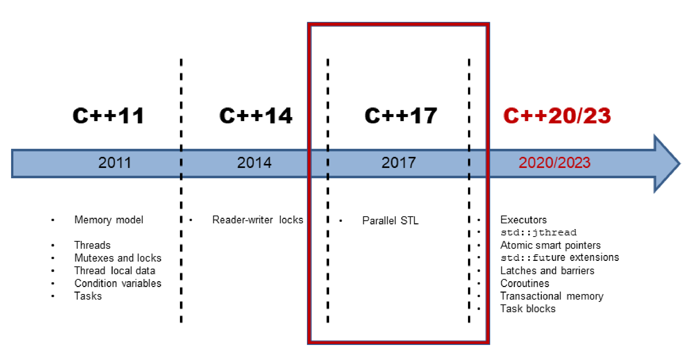
C++17的并发性发生了巨大的变化，特别是标准模板库(STL)的并行算法。C++11和C++14只提供了并发性的基础构建块。这些工具适合库或框架开发人员，但不适合应用程序开发人员。C++11和C++14中的多线程，在C++ 17中的并发性面前，相当于汇编语言!
执行策略
C++17中，大多数STL算法都有并行实现，这样就可以使用执行策略来调用算法。该策略指定算法是串行执行(std::execution::seq)、并行执行(std::execution::par)，还是与向量化的并行执行(std::execution::par_unseq)。
新算法
除了在重载，并行了原始的69种算法，还添加了8种新算法。这些新算法非常适合并行归约、扫描或转换。
案例研究
介绍了内存模型和多线程接口的理论知识之后，会将这些知识应用到一些案例中。
求向量元素的加和
计算一个向量的加和有多种方法。可以串行执行，也可以通过数据共享并发执行，不同的实现方式，性能上有很大的差别。
单例：线程安全的初始化
单例对象的初始化是线程安全的，是共享变量线程安全初始化的经典案例。有许多实现方法可以做到这一点，不过在性能上有一定的差异。
使用CppMem进行优化
我会从一个小程序开始，然后不断地改进它，并用CppMem验证优化过程的每个步骤。 CppMem是一个交互式工具，用于研究小代码段的C++内存模型行为。
C++20/23: 并发的未来

对未来的标准预测非常难(Niels Bohr)，这里描述了C++20/23的并发特性。
Executors
Executor由一组如何运行可调用单元的规则组成。它们指定执行是否应该在线程、线程池，甚至单线程(无并发)上运行(可调用的)基础构建块上进行。提案N4734的扩展依赖于扩展的future，也依赖于STL的并行算法，以及C++20/23中新的并发特性，如：门闩和栅栏、协程、事务性内存和任务块(最终都会使用它们)。
std::jthread
std::jthread是std::thread的增强版。除了std::thread外，std::jthread还可以发出中断信号，并自动并入启动的线程。
原子智能指针
智能指针std::shared_ptr和std::weak_ptr在并发程序中存在概念问题。它们的本质上是共享的，这就使得状态可变，所以容易出现数据竞争，从而导致未定义的行为。std::shared_ptr和std::weak_ptr保证引用计数器的递增或递减是一个原子操作。资源只被删除一次，但不能保证对资源访问的原子性。新的原子智能指针std::atomic<std::shared_ptr<T>>和std::atomic<std::weak_ptr<T>>解决了这个问题。两者都是std::atomic的偏特化版本。
扩展版future
C++11引入了promise和future，其有很多优点，但也有一个缺点：不能组合成强大的工作流。在C++20/23中，future应该会消弭这个缺点。
门闩和栅栏
C++14没有信号量，而信号量是用于限制访问资源的利器。因为C++20/23提出了门闩和屏障，就不用担心没有信号量可用的问题了。可以使用门闩和栅栏在异步点进行等待，直到计数器变为零。门闩和栅栏的区别在于，std::latch只能使用一次，而std::barrier和std::flex_barrier可以使用多次。与std::barrier不同，std::flex_barrier可以在每次迭代之后调整它的计数器。
协程
协程是可以挂起，并保持执行函数的状态。协程通常在操作系统、事件循环、无限列表或管道中使用，用于实现需要协作才能完成的任务。
事务内存
事务内存基于数据库理论中事务的基本思想。事务是一种操作，它提供了ACID数据库事务的前三个属性：原子性、一致性和隔离性。数据库特有的持久性不适用C++的事务内存。新标准有两种类型的事务内存：同步块和原子块。它们都按总顺序执行的，表现得好像有一个全局锁在保护它们。与同步块相比，原子块不能执行事务不安全的代码。
任务块
任务块在C++中实现了fork-join范式。下图说明了任务块的关键思想：启动任务的fork阶段和同步任务的join阶段。
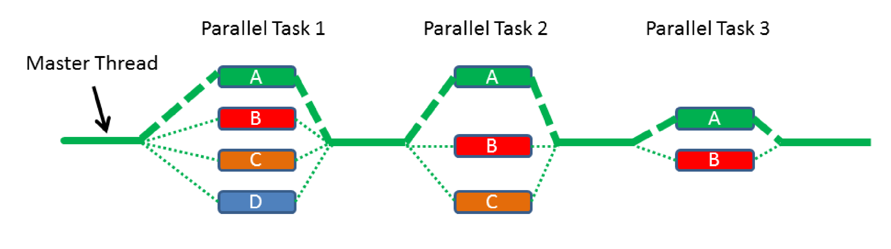
模式和最佳实践
模式是从实践中记录下来的最佳方式。Christopher Alexander说，“模式表达了特定环境、问题和解决方案之间的关系“。从更概念化的角度看待并发编程，会得到更多解决问题的方式。与更概念化的并发模式相比，本章提供了面对并发挑战的实用技巧。
同步
数据竞争的必要前提是数据处于共享的、可变状态。同步模式可以归结为两个问题：处理共享和处理可变。
并行架构
并发架构章节中介绍了三种模式。前两种模式是活动对象和监视器对象的同步，以及调度器方法的使用。第三种半同步/半异步模式关注体系结构，并在并发系统中解耦异步和同步(服务)的处理。
最佳实践
并发编程比较复杂，因此通过最佳实践，可以更多的了解多线程和内存模型。
###数据结构
挑战项目
编写并发程序本来就很复杂，使用C++11和C++14的特性也是如此。因此，我将详细描述具挑战性的问题。希望用一整章的篇幅来讨论并发编程的挑战，会让你更清楚其中的陷阱。这里有竞争条件、数据竞争和死锁等挑战项目。
计时库
计时库是C++并发工具的重要组成部分。通常，可以让线程在特定的时间内处于休眠状态，或者一直休眠到特定的时间点。计时库包括：时间点、时间段和时钟。
CppMem
CppMem是一个交互式工具，用于深入了解内存模型。它提供了两项非常有价值的服务：可以验证无锁代码，可以分析无锁代码，并且能得到对代码的鲁棒性有更多的理解。本书会经常使用CppMem。由于CppMem的配置选项和见解非常具有挑战性，也会提供相应章节，以便对CppMem有一些基本的了解。
术语表
术语表对最基本的术语作了简单的解释。
内存模型
(定义良好的)内存模型是多线程的基础件，包括两个方面的内容：一方面，它非常复杂，经常与我们的想法相矛盾。另一方面，它有助于我们更深入地了解多线程。
那么，”内存模型“是什么呢?
内存模型的基础知识
从并发的角度来看，内存模型要解答两个问题：
- 什么是内存位置?
- 如果两个线程访问相同的内存位置，会发生什么?
内存位置是什么？
引用cppreference.com中对内存位置的定义：
- 标量对象(算术类型、指针类型、枚举类型或
std::nullptr_t)， - 或非零长度的连续序列。
下面是内存位置的例子:
struct S {
char a; // memory location #1
int b : 5; // memory location #2
int c : 11, // memory location #2 (continued)
: 0,
d : 8; // memory location #3
int e; // memory location #4
double f; // memory location #5
std::string g; // several memory locations
};
首先，对象obj由七个子对象组成，其中b、c两个位字段共享内存位置。
观察上述结构体定义，可以得到如下结论:
- 每个变量都是一个对象。
- 标量类型占用一个内存位置。
- 相邻的位字段(b和c)具有相同的内存位置。
- 变量至少占用一个内存位置。
那么，到了多线程的关键部分。
##两个线程访问相同的内存位置，会发生什么呢?
如果两个线程访问相同的内存位置(相邻位字段共享内存位置)，并且至少有一个线程想要修改它，那么程序就会产生数据竞争，除非：
- 修改操作为原子操作。
- 访问按照某种先行(happens-before)顺序进行。
第二种情况非常有趣，同步语义(如互斥锁)可以建立了先行关系。这些先行关系基于原子建立，当然也适用于非原子操作。内存序(memory-ordering)是内存模型的关键部分，其定义了先行关系的细节。
对内存模型有了初步的认识后，再来看看C++内存模型中定义的“编程协议”。
编程协议
协议约定的双方为：开发者和系统。系统由生成机器码的编译器、执行机器码的处理器和存储程序状态的缓存组成。每个部分可以进行优化，例如：编译器可以使用寄存器或修改循环，处理器可以乱序执行或分支预测，缓存指令可以预取或缓冲。生成的(在好的情况下)可执行文件，可以针对硬件平台进行了优化。确切地说，这里不只有一个协议，而是一组(细粒度的)协议。换句话说：遵循越弱的规则，程序的优化潜力越大。
有一个经验法则是：协议越强，优化的空间越少。当程序开发者使用弱协议或弱内存模型时，相应就会有许多优化选择。结果是，这个项目只能由少数专家来维护，而你我可能都不属于专家的范畴。
粗略地说，C++11中有三个协议级别。

C++11之前，C++不包括多线程或原子。系统只遵循控制流，因此优化的潜力非常有限。该系统的关键是，保证程序开发者所观察到的程序行为，与源代码中指令的顺序一致。当然，这就意味着没有内存模型，只有序列点。序列点是程序中的点，在这些点上的所有指令的效果是可见的，函数执行的开始或结束都是序列点。当使用两个参数调用一个函数时，C++并不保证先计算哪个参数，因此其行为是未指定的，原因很简单——逗号操作符不是序列点。
C++11中，这些都发生了变化。C++11是C++第一个支持多线程的标准。C++内存模型深受Java内存模型的影响，不过C++内存模型做了很多改进。为了得到定义良好的程序，程序开发者在处理共享变量时必须遵守规则。如果存在数据竞争，则程序的行为是未定义的。如前所述，如果线程共享可变数据，必须注意数据竞争。
在使用原子操作的时候，经常会讨论无锁编程。我在本节中谈到了弱规则和强规则，其中原子操作的顺序一致语义被称为强内存模型，原子操作的自由语义被称为弱内存模型。
基础
C++内存模型需要保证以下操作：
- 原子操作：不受中断地执行。
- 部分排序操作：操作序列的顺序不能重排。
- 可见操作：保证共享变量上的操作对其他线程可见。
协议基础是针对原子操作的，其特点是原子的、不可分割的，并且在执行上会创建同步和约束顺序。当然，同步和约束顺序也适用于非原子的操作。一方面，原子类型上的操作总是原子的；另一方面，可以根据需要定制同步和约束顺序。
挑战
内存模型越弱，就能把越多的注意力转放到其他事情上，比如：
- 优化潜力。
- 控制流数量。
- 了解更多底层的知识。
- 程序行为与我们的预期是否一致。
- 更加微观的优化。
我们应该是处理多线程的专家。如果想要处理原子(顺序一致)操作，我们应该打开通向下一个专业级别的大门。想要知道使用获得-释放语义或自由语义时会发生什么，就得向下一个境界迈进了。

我们从无锁编程开始，深入研究C++内存模型。当完成了基础知识的了解后，就要开始真正接触内存模型了。我们的起点是顺序一致语义，接着是获得-释放语义，而自由语义则作为旅程的终章。
现在，开启我们的原子操作之旅吧！
原子操作
原子操作是C++内存模型的基础。默认情况下，原子操作基于强内存模型的支持，所以理解强内存模型很有意义。
##强/弱内存模型
您可能已经从编程协议的章节中了解到：顺序一致语义是强内存模型，自由语义是弱内存模型。
###强内存模型
2004年，Java 5.0有了内存模型。2011年，C++添加了内存模型。在此之前，Java有个错误的内存模型，而C++则没有内存模型，而多线程编程已经有40~50年的历史了。在1979年时，Leslie Lamport 就定义了顺序一致的概念。
顺序一致有两个特点:
- 指令按源码顺序执行。
- 线程上的所有操作都遵循一个全局顺序。
深入研究这两个特点之前，我想强调一下，这些声明只适用于原子操作，但影响并不仅对原子操作而言。
下面图形显示了两个线程。每个线程分别将值存储到变量x或y中，获取另一个变量y或x，并存储在变量res1或res2中。

通常，原子操作是顺序一致的。问题是：这些语句以什么顺序执行?
顺序一致的第一个特点：指令按照源码中的顺序执行。任何存储操作都无法在获取操作之前进行。
顺序一致的第二个特点：所有线程的指令必须遵循全局顺序。上图中的情况，线程2看到线程1的操作的顺序与线程1执行它们的顺序相同。线程2按照线程1的源码顺序查看线程1的所有操作，从线程1的角度来看也是如此。可以将这个特性，想象成一个所有线程都必须遵循的全局时钟(全局时钟就是全局顺序)。时钟每发出一次滴答声，就会发生一个原子操作，但永远不知道执行的是哪个。
解谜还没有结束。我们仍然需要观察，两个线程交错运行的方式。两个线程有以下六种交替运行的方式。
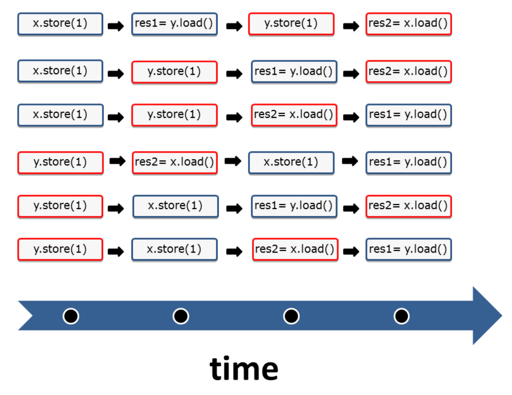
很简单，对吧？这就是顺序一致语义，也称为强内存模型。
弱内存模型
我们再参考一下开发者和系统之间的协议。
这个特殊的例子中，开发者使用了原子操作(开发者遵循协议)。系统保证了程序的行为，从而不会存在数据竞争。另外，系统可以在每个组合中执行四个操作。如果开发者使用自由语义，协议的基础部分就会发生巨大的变化。一方面，开发者可能很难理解两个线程之间的交错；另一方面，系统有更大的优化空间。
使用自由语义(也称为弱内存模型)，可使这四种操作有更多的组合。有种很难理解的行为是，线程1可以以不同的顺序查看线程2的操作，这样全局顺序就不存在了。从线程1的角度来看，操作res2= x.load()可能在y.store(1)之前执行。甚至是，线程1或线程2没有按照源代码中的顺序执行。例如，线程2可以先执行res2= x.load()，再执行y.store(1)。
“序列一致语义”和“自由语义”之间还有存在其他内存模型，其中最重要的是“获取-释放语义“。“获取-释放语义”中，开发人员需要遵守比“顺序一致语义”弱的规则。这样，系统有了更多优化空间。因为线程在特定同步点上进行同步，所以“获取-释放语义“是理解多线程编程中，同步和部分排序的关键。没有同步点，就不可能有(定义良好的)线程、任务或条件变量。
上一节中，介绍了原子操作的默认行为——顺序一致(为每个原子操作指定内存顺序)。如果没有指定内存顺序，则应用保持顺序一致，这意味着std::memory_order_seq_cst将默认应用于每个原子操作。
下面两端段代码是等价的：
x.store(1);
res = x.load();
x.store(1, std::memory_order_seq_cst);
res = x.load(std::memory_order_seq_cst);
简单起见，本书使用第一种形式。现在，来深入了解C++内存模型原子性，先从std::atomic_flag开始吧。
原子标志
std::atomic_flag是原子布尔类型，可以对其状态进行设置和清除。为了简化说明，我将clear状态称为false，将set状态称为true。clear方法可将其状态设置为false。test_and_set方法，可以将状态设置回true，并返回先前的值。这里，没有方法获取当前值。使用std::atomic_flag时，必须使用常量ATOMIC_FLAG_INIT将std::atomic_flag初始化为false。
ATOMIC_FLAG_INIT
std::atomic_flag需要初始化时，可以是这样：std::atomic_flag flag = ATOMIC_FLAG_INIT。不过，不能这样进行初始化：
std::atomic_flag flag(ATOMIC_FLAG_INIT)。
std::atomic_flag有两个特点：
- 无锁原子类型。程序是系统级别进程的话，执行的非阻塞算法就是无锁的。
- 更高级别的线程构建块。
除了std::atomic_flag之外，C++标准中的原子内部都会使用互斥锁。这些原子类型有一个is_lock_free成员函数，可用来检查原子内部是否使用了互斥锁。时下主流的微处理器架构上，都能得到“使用了互斥锁”的结果。如果想要无锁编程，那么就要使用该成员函数进行检查，确定是否使用了锁。
std::is_always_lock_free可以使用
obj.is_lock_free()，在运行时检查原子类型的实例obj是否无锁。在C++17中，可以通过constexpr(常量)atomic<type>::is_always_lock_free，在编译时对每个原子类型进行检查，支持该操作的所有硬件实现都无锁时，才返回true。
std::atomic_flag的接口非常强大，能够构建自旋锁。自旋锁可以像使用互斥锁一样保护临界区。
自旋锁
自旋锁与互斥锁不同，它并不获取锁。而是，通过频繁地请求锁来获取临界区的访问权。不过，这会导致上下文频繁切换(从用户空间到内核空间)，虽然充分使用了CPU，但也浪费了非常多的时钟周期。线程短时间阻塞时，自旋锁非常有效。通常，会将自旋锁和互斥锁组合着使用。首先，在有限的时间内使用自旋锁；如果不成功，则将线程置于等待(休眠)状态。
自旋锁不应该在单处理器系统上使用。否则，自旋锁就不仅浪费了资源，而且还会减慢程序处理的速度(最好的情况)，或出现死锁(最坏的情况)。
下面的代码，使用std::atomic_flag实现了自旋锁。
// spinLock.cpp
#include <atomic>
#include <thread>
class Spinlock{
std::atomic_flag flag = ATOMIC_FLAG_INIT;
public:
void lock(){
while(flag.test_and_set());
}
void unlock(){
flag.clear();
}
};
Spinlock spin;
void workOnResource(){
spin.lock();
// shared resource
spin.unlock();
}
int main(){
std::thread t(workOnResource);
std::thread t2(workOnResource);
t.join();
t2.join();
}
线程t和t2(第31行和第32行)在争夺临界区的访问权。这里的自旋锁是如何工作的呢？自旋锁也有锁定和解锁的阶段。
当线程t执行函数workOnResource时，可能会发生以下情况：
- 线程
t获取锁，若第11行的标志初始值为false，则锁调用成功。这种情况下，线程t的原子操作将其设置为true。所以，当t线程获取锁后，true将会让while陷入死循环，使得线程t2陷入了激烈的竞争当中。线程t2不能将标志设置为false，因此t2必须等待，直到线程t1执行unlock(解锁)并将标志设置为false(第14 - 16行)时，才能获取锁。 - 线程
t没有得到锁时，情况1中的t2一样，需要等待。
我们将注意力放在std::atomic_flag的test_and_set成员函数上。test_and_set函数包含两个操作：读和写。原子操作就是对这两种操作进行限制。如果没有限制，线程将对共享资源同时进行读和写(第24行)，根据定义，这就属于“数据竞争”，程序还会有未定义行为发生。
将自旋锁的主动等待和互斥锁的被动等待做一下比较。
自旋锁 vs. 互斥锁
如果函数workOnResource在第24行停顿2秒，那CPU负载会发生怎样的变化?
// spinLockSleep.cpp
#include <atomic>
#include <thread>
class Spinlock{
std::atomic_flag flag = ATOMIC_FLAG_INIT;
public:
void lock(){
while(flag.test_and_set());
}
void unlock(){
flag.clear();
}
};
Spinlock spin;
void workOnResource(){
spin.lock();
std::this_thread::sleep_for(std::chrono::milliseconds(2000));
spin.unlock();
}
int main(){
std::thread t(workOnResource);
std::thread t2(workOnResource);
t.join();
t2.join();
}
如下图所示，四个核中每次有一个是跑满了的。

我的PC上有一个核的负载达到100%，每次不同的核芯执行”忙等待“。
我现在用互斥锁来替换自旋锁。让我们看下会发生什么。
// mutex.cpp
#include <mutex>
#include <thread>
std::mutex mut;
void workOnResource(){
mut.lock();
std::this_thread::sleep_for(std::chrono::milliseconds(5000));
mut.unlock();
}
int main(){
std::thread t(workOnResource);
std::thread t2(workOnResource);
t.join();
t2.join();
}
虽然执行了好几次，但是并没有观察到任何一个核上有显著的负载。
这样就能看出二者的区别了吧。
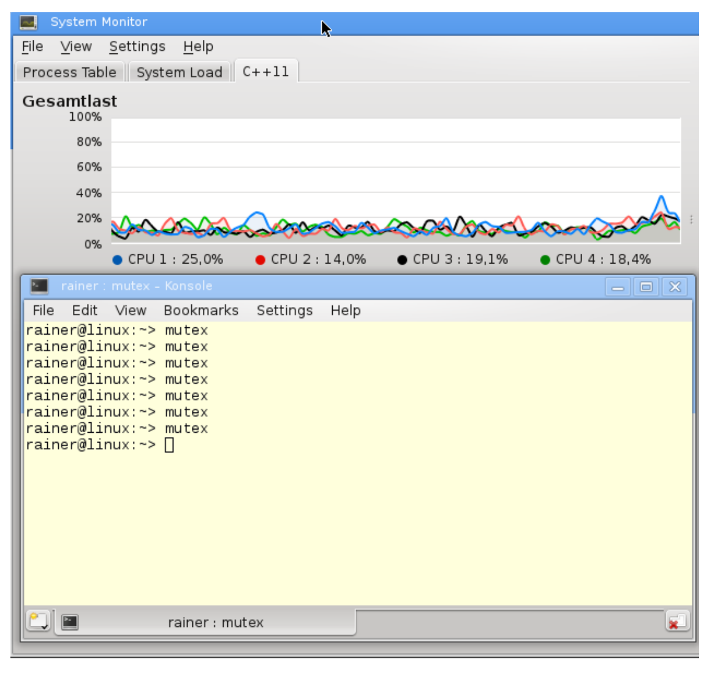
接下来，了解下std::atomic模板。
std::atomic模板
std::atomic有各种变体。
直接使用模板类：std::atomic<bool>和std::atomic<user-defined type>。
部分特化可用于指针类：std::atomic<T*>。
完全特化只能用于整型：std::atomic<integral type>。
布尔原子类型和用户定义原子类型具有相同的接口，原子指针扩展了布尔原子类型，以及整数原子类型的接口。因其扩展了原子指针的接口，所以同样适用于整数原子类型。
不过，不保证std::atomic的各种变体都是无锁的。
先从最简单的std::atomic<bool>开始吧。
std::atomic<bool>
std::atomic<bool>的功能比std::atomic_flag强大很多。并且，可以显式地将其设置为true或false。
原子类型不可为volatile
C#和Java中的
volatile与C++中的volatile不同，这也是volatile和std::atomic之间的区别。
volatile：表示不允许对特定的对象进行读写优化。std::atomic：用来定义线程安全的原子变量。
volatile在Java和C#中，与std::atomic在C++中的含义相同。另外，在C++多线程语义中，没有volatile。
volatile多应用于嵌入式编程中，表示可以(独立于常规程序流)进行更改的对象，例如：表示外部设备的对象(内存映射I/O)。由于这些对象可以更改，并且会直接写入主存中，因此不会在缓存中进行优化存储。
这对于同步两个线程已经足够了，可以用std::atomic<bool>实现条件变量。
因此，先使用条件变量。
// conditionVariable.cpp
#include <condition_variable>
#include <iostream>
#include <thread>
#include <vector>
std::vector<int> mySharedWork;
std::mutex mutex_;
std::condition_variable condVar;
bool dataReady{false};
void waitingForWork(){
std::cout << "Waiting " << std::endl;
std::unique_lock<std::mutex> lck(mutex_);
condVar.wait(lck, []{return dataReady;});
mySharedWork[1] = 2;
std::cout << "Work done " << std::endl;
}
void setDataReady(){
mySharedWork = {1, 0, 3};
{
std::lock_guard<std::mutex> lck(mutex_);
dataReady = true;
}
std::cout << "Data prepared" << std::endl;
condVar.notify_one();
}
int main(){
std:cout << std::endl;
std::thread t1(waitingForWork);
std::thread t2(setDataReady);
t1.join();
t2.join();
for (auto v : mySharedWork){
std::cout << v << " ";
}
std::cout << "\n\n";
}
简单说一下这段代码。线程t1在(第17行)等待线程t2的通知。两个线程使用相同的条件变量condVar，并在同一个互斥锁上进行同步。工作流如下所示：
-
线程t1
- 获取锁
lck时，等待数据准备好的通知condVar.wait(lck, []{ return dataReady; })。 - 得到通知后，执行
mySharedWork[1] = 2。
- 获取锁
-
线程t2
- 准备数据
mySharedWork = {1, 0, 3} - 将非原子布尔类型的
dataReady置为true。 - 通过
condVar.notify_one发布通知。
- 准备数据
线程t2将dataReady设置为true，线程t1使用Lambda表达式对dataReady进行检查。不过，条件变量可能会出现两种不好的情况:
- 伪唤醒：接受者在没有收到通知时被唤醒。
- 未唤醒：接收方在未处于等待状态时获得通知。
使用std::atomic<bool> 进行实现：
// atomicCondition.cpp
#include <atomic>
#include <chrono>
#include <iostream>
#include <thread>
#include <vector>
std::vector<int> mySharedWork;
std::atomic<bool> dataReady(false);
void waitingForWork(){
std::cout << "Waiting " << std::endl;
while(!dataReady.load()){
std::this_thread::sleep_for(std::chrono::milliseconds(5));
}
mySharedWork[1] = 2;
std::cout << "Work done " << std::endl;
}
void setDataReady(){
mySharedWork = {1,0,3};
dataReady = true;
std::cout << "Data prepared" << std::endl;
}
int main(){
std::cout << std::endl;
std::thread t1(waitingForWork);
std::thread t2(setDataReady);
t1.join();
t2.join();
for (auto v : mySharedWork){
std::cout << v << " ";
}
std::cout << "\n\n";
}
如何保证第17行在第14行之后执行？或者说，线程t1在线程t2执行mySharedWork ={1,0,3}(第22行)后，执行mySharedWork[1] = 2(第17行)。
- 第22行先于第23行执行。
- 第14行先于第17行执行。
- 第14、23行与第14行同步
- 因为同步建立了先行关系，并且先行关系可以传递，所以
mySharedWork = {1,0,3}先于mySharedWork[1] = 2执行。
很容易理解，对吧？简单起见，忽略同步创建的线程间先行关系，以及线程间已建立的先行关系。如果对这里的细节感兴趣，可以参考这里：内存序(memory_order)。
两段程序产生了相同的结果。
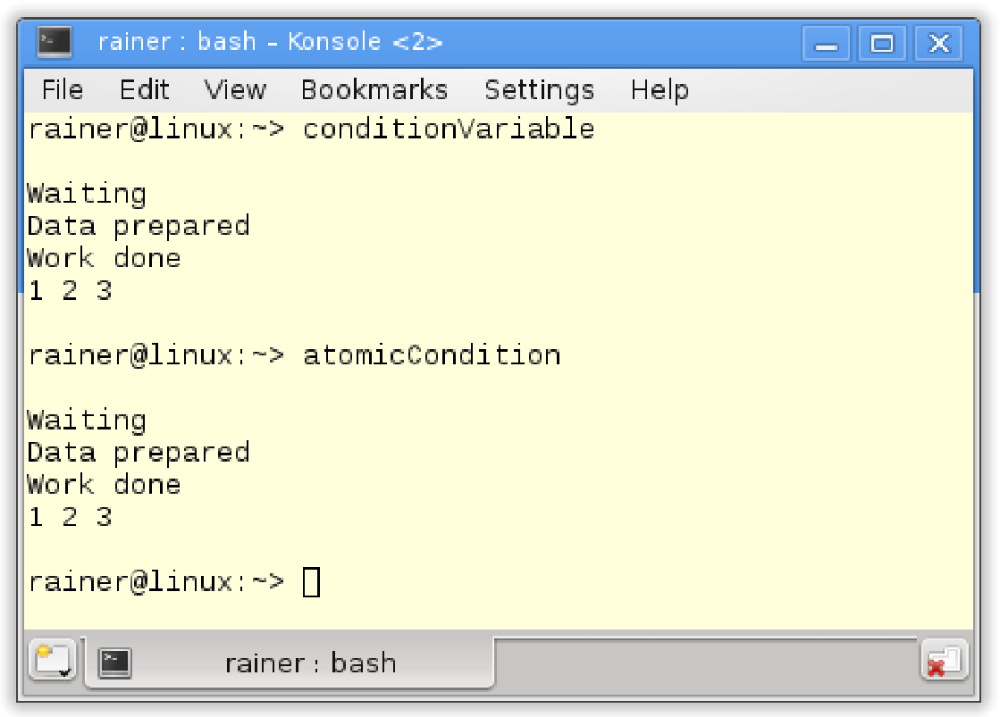
推拉原理
条件变量的同步与
std::atomic<bool>之间有一个关键性的区别。条件变量会让线程等待通知(condVar.notify())。检查std::atomic<bool>的线程，只是为了确定发送方是否完成了其工作(dataRead = true)。条件变量通知等待线程对应为"推原则(push principle)"，而原子布尔值的重复轮询对应为"拉原则(pull principle)"。
std::atomic<bool>和std::atomic的其他全/偏特化都支持的原子操作：compare_exchange_strong和compare_exchange_strong。
compare_exchange_strong和compare_exchange_weak
compare_exchange_strong的声明为
bool compare_exchange_strong(T& expected, T& desired)。此操作为比较和交换，因此也称为比较-交换(compare and swap，CAS)操作。这种操作在许多编程语言中都有用到，并且是非阻塞算法的基础。当然，C++中的行为可能会与其他语言不同。atomicValue.compare_exchange_strong(expected, desired)具有以下行为。
- 如果
atomicValue的值与期望值(expected)的比较返回true，则将atomicValue设置为所需值(desired)。- 如果比较返回false，则将expected值设置为
atomicValue的值。compare_exchange_strong称为strong的原因显而易见。当然，还有一个compare_exchange_weak，weak版本可能会伪失败。这意味着，虽然
*atomicValue == expected成立，但atomicValue没有被设置成desired，函数返回false，因此必须在循环中进行检查：while (!atomicValue.compare_exchange_weak(expected, desired))。弱形式的存在原因是，因为一些处理器(硬件)不支持原子比较交换指令。循环调用时，也应该首选弱形式。在某些平台上，弱形式运行得更快。CAS操作对于ABA问题，解决方式是开放的。先描述一下这个问题：读取一个值两次，每次都返回相同的值A；因此得出结论，在这两者之间没有变化。但是，两次读取过程中数值可能已经更改为B了。
弱版本允许伪失败，也就是说，即使它们是相等的，结果也和*this !=expected一样。当比较-交换操作处于循环中时，弱版本可能在某些平台上具有更好的性能。
除了布尔值之外，还有指针、整型和用户定义类型的原子操作。
所有std::atomic的变种类型都支持CAS操作。
用户定义类型的原子操作std::atomic<user-defined type>
因为std::atomic是模板类，所以可以使用自定义的原子类型。
使用自定义类型用于原子类型std::atomic<user-defined type>时，有很多限制。原子类型std::atomic<user-defined type>与std::atomic<bool>具有相同的接口。
以下是自定义类型成为原子类型的限制：
- 自定义类型对所有基类和有非静态成员的复制赋值操作必须非常简单。这意味着不能定义复制赋值操作符，但是可以使用default让编译器来完成这个操作符的定义。
- 自定义的类型不能有虚方法或虚基类
- 自定义的类型必须可按位比较，这样才能使用C函数memcpy或memcmp。
主流平台都可以对std::atomic<user-defined type>进行原子操作，前提是用户定义类型的大小不大于int。
编译时检查类型属性
可以使用以下函数在编译时，检查自定义类型的类型属性：
std::is_trivially_copy_constructible,std:: is_polymorphic和std::is_trivial。这些函数都是类型特征库(type-traits library)的一部分。
std::atomic<T*>
std::atomic<T*>是std::atomic类模板的偏特化类型。原子指针std::atomic<T*>支持与std::atomic<bool> 或std::atomic<user-defined type>相同的成员函数。它的行为就像一个普通的指针T*。std::atomic<T*> 支持指针运算和前后递增或前后递减操作。
看个简单的例子。
int intArray[5];
std::atomic<int*> p(intArray);
p++;
assert(p.load() == &intArray[1]);
p+=1;
assert(p.load() == &intArray[2]);
--p;
assert(p.load() == &intArray[1]);
在C++11中，有原子整型。
std::atomic<integral type>
对于每个整数类型，都有相应的全特化std::atomic<integral type>版本。
对于哪些整型存做了全特化？让我们来看一下:
- 字符类型: char , char16_t , char32_t 和 wchar_t
- 标准有符号整型: signed char , short , int , long 和 long long
- 标准无符号整型: unsigned char , unsigned short , unsigned int , unsigned long 和 unsigned long long
- 还有很多整型，都定义在
<cstdint>中 - int8_t , int16_t , int32_t 和 int64_t (8, 16, 32 和 64位的有符号整型)
- uint8_t , uint16_t , uint32_t 和 uint64_t (8, 16, 32 和 64位的无符号整型)
- int_fast8_t , int_fast16_t , int_fast32_t 和 int_fast64_t (8, 16, 32 和 64位的高速有符号整型)
- uint_fast8_t , uint_fast16_t , uint_fast32_t 和 uint_fast64_t (8, 16, 32 和 64 位的高速无符号整型)
- int_least8_t , int_least16_t , int_least32_t 和 int_least64_t (8, 16, 32 和 64 位的最小有符号整型)
- uint_least8_t , uint_least16_t , uint_least32_t 和 uint_least64_t (8, 16, 32 和 64 位的最小无符号整型)
- intmax_t 和 uintmax_t (最大有符号整数和无符号整数)
- intptr_t 和 uintptr_t (用于存放有符号整数和无符号整数指针)
std::atomic<integral type>支持复合赋值运算符+=、-=、&=、|=和^=，以及相应操作的方法：fetch_add、fetch_sub、fetch_and、fetch_or和fetch_xor。复合赋值运算符返回新值，而fetch操作返回旧值。此外，复合赋值运算符还支持前增量和后增量，以及前减量和后减量(++x, x++，--x和x--)。
更深入的研究前需要了解一些前提：原子操作没有原子乘法、原子除法，也没有移位操作。这不是重要的限制，因为这些操作很少需要，并且很容易实现。下面就是是实现原子fetch_mult的例子。
// fetch_mult.cpp
#include <atomic>
#include <iostream>
template <typename T>
T fetch_mult(std::atomic<T>& shared, T mult){
T oldValue = shared.load();
while(!shared.compare_exchange_strong(oldValue, oldValue * mult));
return oldValue;
}
int main(){
std::atomic<int> myInt{5};
std::cout << myInt << std::endl;
fetch_mult(myInt, 5);
std::cout << myInt << std::endl;
}
值得一提的是，第9行的乘法只在oldValue == shared成立时才会发生。因为在第8行中有两条读取oldValue的指令，我将乘法放在while循环中，以确保乘法能顺利执行。
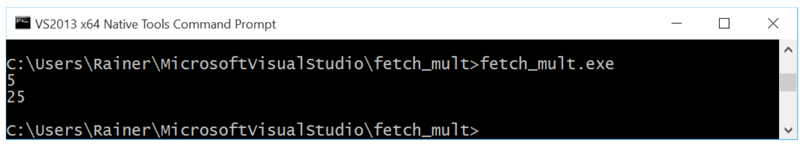
fetch_mult无锁
fetch_mult(第6行)将std::atomic变量与mult相乘。关键在读取旧值T oldValue = shared Load(第8行)和比较第9行中的新值之间，有一个窗口时间。因此，其他线程总是可以介入并更改oldValue。如果线程间有糟糕的交错，就会发现每个线程可能都有自己的结果。该算法是无锁的，但不是无等待的。
类型别名
对于所有std::atomic<bool>和std::atomic<integral type>(如果integral类型可用)，C++标准提供类型别名。
std::atomic<bool>和std::atomic<integral type>的类型别名如下：
| 类型别名 | 具体定义 |
|---|---|
std::atomic_bool | std::atomic<bool> |
std::atomic_char | std::atomic<char> |
std::atomic_schar | std::atomic<signed char> |
std::atomic_uchar | std::atomic<unsigned char> |
std::atomic_short | std::atomic<short> |
std::atomic_ushort | std::atomic<unsigned short> |
std::atomic_int | std::atomic<int> |
std::atomic_uint | std::atomic<unsigned int> |
std::atomic_long | std::atomic<long> |
std::atomic_ulong | std::atomic<unsigned long> |
std::atomic_llong | std::atomic<long long> |
std::atomic_ullong | std::atomic<unsigned long long> |
std::atomic_char16_t | std::atomic<char16_t> |
std::atomic_char32_t | std::atomic<char32_t> |
std::atomic_wchar_t | std::atomic<wchar_t> |
std::atomic_int8_t | std::atomic<std::int8_t> |
std::atomic_uint8_t | std::atomic<std::uint8_t> |
std::atomic_int16_t | std::atomic<std::int16_t> |
std::atomic_uint16_t | std::atomic<std::uint16_t> |
std::atomic_int32_t | std::atomic<std::int32_t> |
std::atomic_uint32_t | std::atomic<std::uint32_t> |
std::atomic_int64_t | std::atomic<std::int64_t> |
std::atomic_uint64_t | std::atomic<std::uint64_t> |
std::atomic_int_least8_t | std::atomic<std::int_least8_t> |
std::atomic_uint_least8_t | std::atomic<std::uint_least8_t> |
std::atomic_int_least16_t | std::atomic<std::int_least16_t> |
std::atomic_uint_least16_t | std::atomic<std::uint_least16_t> |
std::atomic_int_least32_t | std::atomic<std::int_least32_t> |
std::atomic_uint_least32_t | std::atomic<std::uint_least32_t> |
std::atomic_int_least64_t | std::atomic<std::int_least64_t> |
std::atomic_uint_least64_t | std::atomic<std::uint_least64_t> |
std::atomic_int_fast8_t | std::atomic<std::int_fast8_t> |
std::atomic_uint_fast8_t | std::atomic<std::uint_fast8_t> |
std::atomic_int_fast16_t | std::atomic<std::int_fast16_t> |
std::atomic_uint_fast16_t | std::atomic<std::uint_fast16_t> |
std::atomic_int_fast32_t | std::atomic<std::int_fast32_t> |
std::atomic_uint_fast32_t | std::atomic<std::uint_fast32_t> |
std::atomic_int_fast64_t | std::atomic<std::int_fast64_t> |
std::atomic_uint_fast64_t | std::atomic<std::uint_fast64_t> |
std::atomic_intptr_t | std::atomic<std::intptr_t> |
std::atomic_uintptr_t | std::atomic<std::uintptr_t> |
std::atomic_size_t | std::atomic<std::size_t> |
std::atomic_ptrdiff_t | std::atomic<std::ptrdiff_t> |
std::atomic_intmax_t | std::atomic<std::intmax_t> |
std::atomic_uintmax_t | std::atomic<std::uintmax_t> |
所有原子操作
这是关于所有原子操作的列表。
| 成员函数 | 描述 |
|---|---|
| test_and_set | (原子性地)将标记设置为true，并返回旧值 |
| clear | (原子性地)将标记设置为false |
| is_lock_free | 检查原子是否无锁 |
| load | (原子性地)返回原子变量的值 |
| store | (原子性地)将原子变量的值替换为非原子值 |
| exchange | (原子性地)用新值替换值，返回旧值 |
| compare_exchange_strong | (原子性地)比较并交换值 |
| compare_exchange_weak | (原子性地)比较并交换值 |
| fetch_add , += | (原子性地)加法 |
| fetch_sub , -= | (原子性地)减法 |
| fetch_or , |= | (原子性地)逻辑或 |
| fetch_and , &= | (原子性地)逻辑与 |
| fetch_xor , ^= | (原子性地)逻辑异或 |
| ++ , -- | (原子性地)自加和自减 |
原子类型没有复制构造函数或复制赋值操作符，但支持从内置类型进行赋值和隐式转换。复合赋值运算符返回新值，fetch操作返回旧值。复合赋值运算符返回值，而不是所赋值对象的引用。
隐式转换为基础类型
std::atomic<long long> atomOb(2011);
atomObj = 2014;
long long nonAtomObj = atomObj;
每个方法都支持内存序参数。默认的内存序是std::memory_order_seq_cst，也可以使用std::memory_order_relaxed, std::memory_order_consume, std::memory_order_acquire, std::memory_order_release或std::memory_order_acq_rel。compare_exchange_strong和 compare_exchange_weak可以传入两个内存序，一个是在比较成功的情况下所使用的内存序，另一个是在比较失败的情况下使用的。
如果只显式地提供一个内存序，那么成功和失败的情况都会使用该内存序。
当然，并不是所有操作对所有原子类型都可用。下表显示了所有原子类型支持的原子操作。
| 函数名 | atomic_flag | atomic<bool> | atomic<user> | atomic<T*> | atomic<integral> |
|---|---|---|---|---|---|
| test_and_set | yes | ||||
| clear | yes | ||||
| is_lock_free | yes | yes | yes | yes | |
| load | yes | yes | yes | yes | |
| store | yes | yes | yes | yes | |
| exchange | yes | yes | yes | yes | |
| compare_exchange_strong | yes | yes | yes | yes | |
| compare_exchange_weak | |||||
| fetch_add, += | yes | yes | |||
| fetch_sub, -= | |||||
| fetch_or, |= | yes | ||||
| fetch_and, &= | |||||
| fetch_xor, ^= | |||||
| ++, -- | yes | yes |
原子函数
为了与C语言兼容，这些函数使用的是指针而不是引用。所以，std::atomic_flag和类模板std::atomic的功能也可以与原子函数一起使用。
std::atomic_flag的原子函数有：std::atomic_flag_clear()、std::atomic_flag_clear_explicit、std::atomic_flag_test_and_set()和std::atomic_flag_test_set_explicit()。所有函数的第一个参数都是指向std::atomic_flag的指针。另外，以_explicit为后缀的函数需要传入内存序。
对于每个std::atomic类型，都有相应的原子函数。原子函数遵循一个简单的命名约定：只在前面添加前缀atomic_。例如，std::atomic上的方法调用at.store()变成std::atomic_store()， std::atomic_store_explicit()。
可以在atomic了解所有的重载。
std::shared_ptr算是个例外，其原子函数只能在原子类型上使用。
std::shared_ptr
std::shared_ptr 是唯一可以使用原子操作的非原子数据类型。说明一下这样设计的动机。
C++委员会了解到，智能指针需要在多线程中提供最小原子性保证的必要性，所以做出了这样的设计。先来解释“最小原子性保证”，也就是std::shared_ptr的控制块是线程安全的，这意味着增加和减少引用计数器的是原子操作，也就能保证资源只被销毁一次了。
std::shared_ptr的声明由Boost提供：
shared_ptr实例可以被多个线程同时“读”(仅const方式访问)。- 不同的
shared_ptr实例可以被多个线程同时“写”(通过操作符=或reset等操作访问)(即使这些实例是副本，但在底层共享引用计数)。
为了使这两个表述更清楚，举一个简单的例子。当在一个线程中复制std::shared_ptr时，一切正常。
std::shared_ptr<int> ptr = std::make_shared<int>(2011);
for (auto i = 0; i < 10; i++){
std::thread([ptr]{
std::shared_ptr<int> localPtr(ptr);
localPtr = std::make_shared<int>(2014);
}).detach();
}
先看第5行，通过对std::shared_ptr localPtr使用复制构造，只使用控制块，这是线程安全的。第6行更有趣一些，为localPtr设置了一个新的std::shared_ptr。从多线程的角度来看，这不是问题：Lambda函数(第4行)通过复制绑定ptr。因此，对localPtr的修改在副本上进行。
如果通过引用获得std::shared_ptr，情况会发生巨变。
std::shared_ptr<int> ptr = std::make_shared<int>(2011);
for (auto i = 0; i < 10; i++){
std::thread([&ptr]{
ptr = std::make_shared<int>(2014);
}).detach();
}
Lambda函数通过引用，绑定了第4行中的std::shared_ptr ptr。这意味着，赋值(第5行)可能触发底层的并发读写，所以该段程序具有未定义行为(数据竞争)。
诚然，最后一个例子并不容易实现，但在多线程环境下使用std::shared_ptr也需要特别注意。同样需要注意的是，std::shared_ptr是C++中唯一存在原子操作的非原子数据类型。
std::shared_ptr的原子操作
std::shared_ptr的原子操作load、store、compare_and_exchange有专用的方法，甚至可以指定内存序。下面是std::shared_ptr的原子函数。
std::shared_ptr的原子函数列表
std::atomic_is_lock_free(std::shared_ptr)
std::atomic_load(std::shared_ptr)
std::atomic_load_explicit(std::shared_ptr)
std::atomic_store(std::shared_ptr)
std::atomic_store_explicit(std::shared_ptr)
std::atomic_exchange(std::shared_ptr)
std::atomic_exchange_explicit(std::shared_ptr)
std::atomic_compare_exchange_weak(std::shared_ptr)
std::atomic_compare_exchange_strong(std::shared_ptr)
std::atomic_compare_exchange_weak_explicit(std::shared_ptr)
std::atomic_compare_exchange_strong_explicit(std::shared_ptr)
更多详情信息，请访问cppreference.com。现在，可以非常容易以线程安全的方式，修改引用绑定的共享指针了。
std::shared_ptr数据竞争的解决实现
std::shared_ptr<int> ptr = std::make_shared<int>(2011);
for (auto i = 0; i < 10; i++){
std::thread([&ptr]{
auto localPtr = std::make_shared<int>(2014);
std::atomic_store(&ptr, localPtr);
}).detach();
}
auto localPtr = std::make_shared<int>(2014)对std::shared_ptr ptr的更新是线程安全的。这样就完了吗？不！最后，我们需要了解下原子智能指针。
原子智能指针(Atomic Smart Pointers)
原子智能指针的故事还没有结束。C++20中，我们很有可能看到两个新的智能指针:
std::atomic<std::shared_ptr>和std::atomic<std::weak_ptr>。想要了解的读者可以翻到本书的原子智能指针章节，了解更多的细节。
原子变量及其原子操作是内存模型的基础件，它们为原子和非原子建立同步和顺序约束。下面，让我们更深入地了解同步和顺序约束。
#同步和顺序
虽然不能配置原子数据，但可以调整原子操作的同步和顺序。这在C#或Java的内存模型中是不可能的。
C++中有六种不同的内存模型，那这些内存模型分别是什么呢?
C++的六种内存序
我们已经知道C++有六种不同的内存序。原子操作默认的内存序是std::memory_order_seq_cst，这表示顺序一致。此外，也可以显式地指定其他五个中的一个。那么剩余几个是什么呢?
C++中定义的内存序
enum memory_order{
memory_order_relaxed,
memory_order_consume,
memory_order_acquire,
memory_order_release,
memory_order_acq_rel,
memory_order_seq_cst
}
对这六种内存序进行分类，需要回答两个问题:
- 不同的原子操作应该使用哪种内存模型?
- 6个内存序定义了哪些同步和顺序?
接下来的内容就是回答这两个问题。
原子操作的种类
这里有三种不同类型的原子操作：
- 读(read)操作:
memory_order_acquire和memory_order_consume - 写(write)操作:
memory_order_release - 读改写(read-modify-write)操作:
memory_order_acq_rel和memory_order_seq_cst
memory_order_relaxed无同步和操作顺序，所以它不适用于这种分类方式。
下表根据原子操作的读写特性对它们进行排序。
| 操作名称 | read | write | read-modify-write |
|---|---|---|---|
| test_and_set | yes | ||
| clear | yes | ||
| is_lock_free | yes | ||
| load | yes | ||
| store | yes | ||
| exchange | yes | ||
| compare_exchange_strong | yes | ||
| compare_exchange_weak | |||
| fetch_add, += | yes | ||
| fetch_sub, -= | |||
| fetch_or, |= | yes | ||
| fetch_and, &= | |||
| fetch_xor, ^= | |||
| ++, -- | yes |
“读改写”操作还需要提供最新的值，不同线程上的atomVar.fetch_sub(1)操作序列一个接一个地无缝衔接或进行重复的计数。
如果将原子操作atomVar.load()与“写”或“读改写”操作一起使用，那么“写”的部分将不起作用。结果就是：atomVar.load(std::memory_order_acq_rel)等价于atomVar.load(std::memory_order_acquire)，atomVar.load(std::memory_order_release)等价于atomVar.load(std::memory_order_relax)。
同步与顺序的不同
大致说来，C++中有三种不同类型的同步和顺序:
- 顺序一致:
memory_order_seq_cst - 获取-释放(Acquire-release)：
memory_order_consume,memory_order_acquire,memory_order_release和memory_order_acq_rel - 自由序(Relaxed):
memory_order_relaxed
顺序一致在线程之间建立全局顺序。获取-释放语义为不同线程之间，对同一原子变量进行读写操作时建立顺序。自由语序只保证了原子变量的修改顺序，修改顺序是指对一个特定原子变量的所有修改都以某种特定的顺序发生。因此，由特定线程读取原子对象时，不会看到“更旧”的值。
不同的内存模型，及其对原子和非原子操作的影响，也使得C++内存模型好玩但又有挑战性。下面我们来讨论顺序一致、获得-释放语义和自由语义的同步和顺序。
顺序一致
让我们深入地研究一下顺序一致，其关键是所有线程上的所有操作都遵从一个通用时钟。这个全球时钟让我们可以很直观的想象它的存在。
顺序一致的直观性是有代价的，缺点是系统必须对线程进行同步。
下面的程序在顺序一致性的帮助下，同步生产者和消费者线程。
// producerConsumer.cpp
#include <atomic>
#include <iostream>
#include <string>
#include <thread>
std::string work;
std::atomic<bool> ready(false);
void consumer(){
while(!ready.load()){}
std::cout << work << std::endl;
}
void producer(){
work = "done";
ready = true;
}
int main(){
std::thread prod(producer);
std::thread con(consumer);
prod.join();
con.join();
}
这个程序的输出：

由于顺序一致，程序执行结果是确定的，所以总是输出“done”。
下图描述了操作的顺序。消费者线程在while循环中等待，等待原子变量ready被生产者线程设置为true。当这种情况发生时，消费者线程将继续其工作。

理解程序总是返回“done”并不难，只需要使用顺序一致的两个特点：一方面，两个线程以源码顺序执行指令；另一方面，每个线程以相同的顺序查看另一个线程的操作。也就是，两个线程遵循相同的时钟。while(!ready.load()){}循环中，这种同步也可以保持下去——用于同步生产者线程和消费者线程。
通过使用内存序，可以更正式地解释这个过程。以下是正式版本:
work= "done"在序列中，位于ready = true之前 ⇒work= "done"先行与ready = truewhile(!ready.load()){}序列位于std::cout << work << std::endl之前 ⇒while(!ready.load()){}先行与std::cout<< work << std::endlready= true与while(!ready.load()){}同步 ⇒ready= true(线程间)先行于while (!ready.load()){}⇒ready= true先行于while (!ready.load()){}
最终的结论：因为先行关系是可以传递的，所以work = "done"先行于ready= true，且先行于while(!ready.load()){}，更先行于std::cout<< work << std::endl。
顺序一致中，一个线程可以看到另一个线程的操作，因此也可以看到所有其他线程的操作。如果使用原子操作的获取-释放语义，那么顺序一致就不成立了。这是与C#和Java不同的地方，也是容易产生疑惑的地方。
获取-释放语义
获取-释放语义中，线程间不存在全局同步：只有同一原子变量上的原子操作才进行同步。比如：一个线程上的写操作与另一个线程上的读操作，只有作用于同一个原子变量时才进行同步。
获取-释放语义的基本思想：释放操作与获取操作在同一原子上同步，并建立一个顺序。这意味着，在释放操作之后不能进行所有的读写操作，在获取操作之前不能进行所有的读写操作。
什么是获取/释放操作？使用load或test_and_set读取原子变量是一个获取操作。还有，锁或互斥锁的释放与获取是同步的，线程的构造与调用间是同步的，线程的完成与汇入调用间的操作是同步的，任务可调用的完成与等待或获取future的调用操作是同步的。所以，获取和释放操作是成对的。
下面这张图有助于对获取-释放语义的理解：
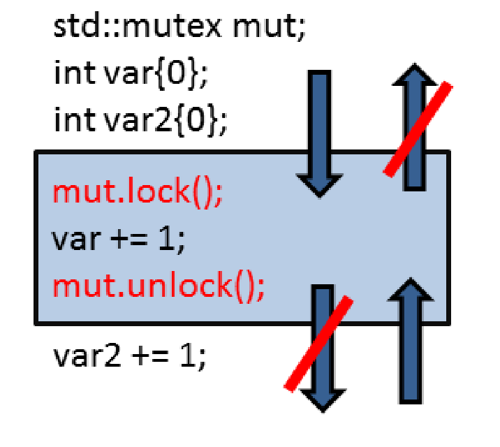
内存模型——更深入地理解多线程
这应该是了解内存模型的主要原因。特别是，获取-释放语义可以更好地理解高级同步原语，比如互斥锁。同样的原理也适用于线程的启动和汇入。这两种操作都是获取-释放操作。接下来是
wait和notify_one对条件变量的调用；wait是获取操作，notify_one是释放操作。那notify_all呢？当然，也是一个释放操作。
现在，再看std::atomic_flag小节中的自旋锁。因为同步是使用atomic_flag flag完成的，所以可以使用获取-释放语义，进行更高效的实现。
// spinlockAcquireRelease.cpp
#include <atomic>
#include <thread>
class Spinlock{
std::atomic_flag flag;
public:
Spinlock():flag(ATOMIC_FLAG_INIT){}
void lock(){
while(flag.test_and_set(std::memory_order_acquire));
}
void unlock(){
flag.clear(std::memory_order_release);
}
};
Spinlock spin;
void workOnResource(){
spin.lock();
// shared resource
spin.unlock();
}
int main(){
std::thread t(workOnResource);
std::thread t2(workOnResource);
t.join();
t2.join();
}
第16行flag.clear清除标志，test_and_set在第12行调用一个获取操作，获取操作与释放操作同步。具有顺序一致的两个线程的同步(重量级同步)(std::memory_order_seq_cst)被更轻量级的和性能更强的获取-释放语义(std::memory_order_acquire和std::memory_order_release)所取代，且程序行为不受影响。
虽然flag.test_and_set(std::memory_order_acquire)调用是一个"读改写"操作，但是获取语义已经足够了。因为flag是原子的，可以保证修改顺序。这也就意味着，对flag的所有修改，都可以某种特定的顺序进行。
获得-释放语义是可传递的。如果两个线程(a,b)之间遵循获取-释放语义，且线程(b,c)之间也遵循获取-释放语义，那么在线程(a, c)之间也遵循获取-释放语义。
传递性
释放与获取操作在同一个原子变量上同步，并建立顺序。如果它们作用于相同的原子变量，这些组件将以最高效的方式同步线程。如果两个线程没有共享的原子变量，会如何工作呢？不想使用顺序一致语义，因为代价过高，我们想要更轻量级的获取-释放语义。
解决方式很简单，就是利用获取-释放语义的传递性，可以同步独立线程。
下面的示例中，线程t2及其工作包deliveryBoy是两个独立线程t1和t3之间的连接线程。
// transitivity.cpp
#include <atomic>
#include <iostream>
#include <thread>
#include <vector>
std::vector<int> mySharedWork;
std::atomic<bool> dataProduced(false);
std::atomic<bool> dataConsumed(false);
void dataProducer(){
mySharedWork = {1,0,3};
dataProduced.store(true, std::memory_order_release);
}
void deliverBoy(){
while(!dataProduced.load(std::memory_order_acquire));
dataConsumed.store(true, std::memory_order_release);
}
void dataConsumer(){
while(!dataConsumed.load(std::memory_order_acquire));
mySharedWork[1] = 2;
}
int main(){
std::cout << std::endl;
std::thread t1(dataConsumer);
std::thread t2(deliverBoy);
std::thread t3(dataProducer);
t1.join();
t2.join();
t3.join();
for (auto v : mySharedWork){
std::cout << v << " ";
}
std::cout << "\n\n";
}
程序的输出是唯一的，mySharedWork的值为1, 2, 3。

通过观察，得出两个结论：
- 线程
t2在第18行等待，直到线程t3将dataProduced设置为true(第14行)。 - 线程
t1在第23行等待，直到线程t2将dataConsumed设置为true(第19行)。
用图来解释下：
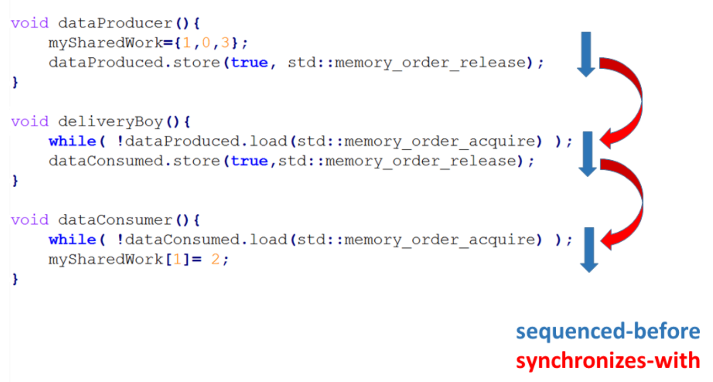
图中主要部分是箭头。
- 蓝色箭头是顺序关系，线程中的所有操作都是按源码顺序执行。
- 红色的箭头是同步关系。原因是对同一原子变量的原子操作遵循的获取-释放语义。原子变量之间，以及线程同步发生在特定的点上。
- 顺序关系建立了先行关系，再使用线程间的先行关系建立同步关系。
剩下的部分就好理解了，线程间的先行指令顺序对应于箭头的方向。最后，能够保证mySharedWork[1] == 2。
释放-获取操作是同步的(同一个原子变量)，所以可以很容易地同步线程，不过…… 我们还要看几个误解。
典型的误解
写关于获取-释放语义误解的原因是什么?我的许多读者和学生已经发现了这些陷阱。让我们来看一个简单的例子。
等待
以一个简单的程序作为基点。
// acquireReleaseWithWaiting.cpp
#include <atomic>
#include <iostream>
#include <thread>
#include <vector>
std::vector<int> mySharedWork;
std::atomic<bool> dataProduced(false);
void dataProducer(){
mySharedWork = {1,0,3};
dataProduced.store(true, std::memory_order_release);
}
void dataConsumer(){
while(!dataProduced.load(std::memory_order_acquire));
mySharedWork[1] = 2;
}
int main(){
std::cout << std::endl;
std::thread t1(dataConsumer);
std::thread t2(dataProducer);
t1.join();
t2.join();
for (auto v: mySharedWork){
std::cout << v << " ";
}
std::cout << "\n\n";
}
第17行的消费者线程t1持续等待，直到第13行的消费者线程t2将数据设置为true。非原子变量mySharedWork受dataProduced的保护，访问是同步的。这意味着生产者线程t2初始化mySharedWork，然后消费者线程t2通过设置mySharedWork[1]为2来完成工作，是没有问题的。
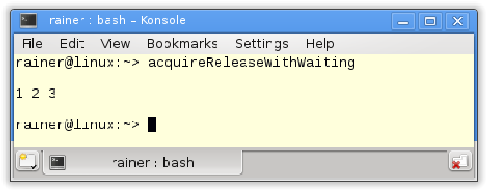
下图显示了线程中的先行关系和线程之间的同步关系。同步在线程间建立了先行关系，其余顺序可以根据先行关系的传递性推理得出。
最后，让mySharedWork = {1, 0, 3} 先行于mySharedWork[1] = 2 。

有没有感觉这个推理过程中经常缺少什么？
如果……
如果第17行中的消费者线程t1没有等待生产者线程t2，会发生什么?
// acquireReleaseWithoutWaiting.cpp
#include <atomic>
#include <iostream>
#include <thread>
#include <vector>
std::vector<int> mySharedWork;
std::atomic<bool> dataProduced(false);
void dataProducer(){
mySharedWork = {1,0,3};
dataProduced.store(true, std::memory_order_release);
}
void dataConsumer(){
dataProduced.load(std::memory_order_acquire);
myShraedWork[1] = 2;
}
int main(){
std::cout << std::endl;
std::thread t1(dataConsumer);
std::thread t2(dataProducer);
t1.join();
t2.join();
for (auto v : mySharedWork){
std::cout << v << " ";
}
std::cout << "\n\n";
}
因为变量mySharedWork上存在数据竞争，所以该程序具有未定义行为。当程序运行时，将得到以下结果。

问题在哪里呢？dataProduced.store(true, std::memory_order_release)与dataProduced.load(std::memory_order_acquire)同步。不过，并不意味着获取操作要对释操作进行等待，而这正是下图中的内容。图中，dataProduced.load(std::memory_order_acquire)在指令dataProduced.store(true, std::memory_order_release)之前，所以这里没有同步关系。

解决办法
同步意味着：当dataProduced.store(true, std::memory_order_release) 先行于dataProduced.load(std::memory_order_acquire)，那么dataProduced.store(true, std::memory_order_release)之前和dataProduced.load(std::memory_order_acquire)之后执行的操作是所有线程可见的。第一个程序中使用while(! dataproduct .load(std::memory_order_acquire))来保证同步关系。
再描述一次，使用正式方式。
当满足条件：dataProduced.store(true, std::memory_order_release)先行于dataProduced.load(std::memory_order_acquire) 时，dataProduced.store(true, std::memory_order_release)之前执行的操作先行于所有dataProduced.load(std::memory_order_acquire)之后执行的操作。
释放顺序
处理获取-释放语义时，释放顺序是一个相当高级的概念。因此，我们首先从以下的获取-释放语义示例开始说起。
// releaseSequence.cpp
#include <atomic>
#include <thread>
#include <iostream>
#include <mutex>
std::atomic<int> atom{0};
int somethingShared{0};
using namespace std::chrono_literals;
void writeShared(){
somethingShared = 2011;
atom.store(2, std::memory_order_release);
}
void readShared(){
while(!(atom.fetch_sub(1, std::memory_order_acquire) > 0)){
std::this_thread::sleep_for(100ms);
}
std::cout << "somethingShared: " << somethingShared << std::endl;
}
int main(){
std::cout << std::endl;
std::thread t1(writeShared);
std::thread t2(readShared);
// std::thread t3(readShared);
t1.join();
t2.join();
// t3.join();
std::cout << "atom: " << atom << std::endl;
std::cout << std::endl;
}
先看看没有线程t3的例子。第15行对原子进行存储操作，第19行对原子获取并同步线程，这里对非原子变量somethingShared的访问不存在数据竞争。
如果打开t3线程的注释，会发生什么变化？现在就有可能出现“数据竞争”了。如前所述，atom.fetch_sub(1, std::memory_order_acquire) (第19行)与 atom.store(2, std::memory_order_release)(第15行)间，atom变量遵循获取-释放语序；因此，在somethingShared 变量的访问上没有数据竞争。
但对于第二次调用atom.fetch_sub(1, std::memory_order_acquire)，获取-释放语序则不起作用了。第二次调用则是一个读改写操作，因为已经没有在对std::memory_order_release进行标记了。这也就时第二次调用与第一次调用并没有同步关系，所以会发生对共享变量的数据竞争。也许，释放顺序可能不会让数据竞争发生。这里，释放序列扩展到对atom.fetch_sub(1, std::memory_order_acquire) 的第二次调用；因此，第二次调用atom.fetch_sub(1, std::memory_order_acquire)先行于第一次调用。
最终，我们可能会得到如下的结果：

更正式的释放顺序的由N4659定义(N4659: Working Draft, Standard for Programming Language C++)。
释放顺序
释放顺序由一个释放操作A和一个原子对象M构成，修改M顺序会对最大连续子操作序列有所影响，也就是A的第一次调用和随后由相同线程执行的的
*操作。这里*指的是对源子的读改写操作。
如果仔细看了我的解释，可能会期待接下来出现自由语义；不过，我们还是来看下内存模型std:: memory_order_consumption，它与std::memory_order_acquire非常相似
std::memory_order_consume
std::memory_order_consume 是六种内存序中最传奇的一个。原因有二：一，std:: memory_order_consumption非常难理解；二，因为目前没有编译器支持它，所以这个内存序可能在未来会进行修改。C++17中的情况更糟，官方的说法是：“释放-消费序的规范正在修改，暂不推荐使用memory_order_consumption。”
为什么不支持std:: memory_order_consumption呢？答案是，编译器会将std:: memory_order_consumption映射为std::memory_order_acquire。这没毛病，因为两者都是加载或获取操作。std::memory_order_consume比std::memory_order_acquire需要的同步和顺序更弱。因此，释放-获排序可能比释放-消费序慢，但关键是内存序有良好的定义。
将释放-消费序与释放-获取序进行比较，可以对其进行更好的了解。下一小节中，将讨论释放-获取序，以了解std::memory_order_consume和std::memory_order_acquire之间的关系。
释放-获取序
首先，让使用下面的程序和两个线程t1和t2。t1扮演生产者的角色，t2扮演消费者的角色。原子变量ptr用于同步生产者和消费者。
// acquireRelease.cpp
#include <atomic>
#include <thread>
#include <iostream>
#include <string>
using namespace std;
atomic<string*> ptr;
int data;
atomic<int> atoData;
void producer(){
string *p = new string("C++11");
data = 2011;
atoData.store(2014, memory_order_relaxed);
ptr.store(p, memory_order_release);
}
void consumer(){
string *p2;
while(!(p2 = ptr.load(memory_order_acquire)));
cout << "*p2: " << *p2 << endl;
cout << "data: " << data << endl;
cout << "atoData: " << atoData.load(memory_order_relaxed) << endl;
}
int main(){
cout << endl;
thread t1(producer);
thread t2(consumer);
t1.join();
t2.join();
cout << endl;
}
分析程序之前，进行一些修改。
释放-消费序
将第21行中的内存顺序std::memory_order_acquire替换为std:: memory_order_consumption。
// acquireConsume.cpp
#include <atomic>
#include <thread>
#include <iostream>
#include <string>
using namespace std;
atomic<string*> ptr;
int data;
atomic<int> atoData;
void producer(){
string *p = new string("C++11");
data = 2011;
atoData.store(2014, memory_order_relaxed);
ptr.store(p, memory_order_release);
}
void consumer(){
string *p2;
while(!(p2 = ptr.load(memory_order_acquire)));
cout << "*p2: " << *p2 << endl;
cout << "data: " << data << endl;
cout << "atoData: " << atoData.load(memory_order_relaxed) << endl;
}
int main(){
cout << endl;
thread t1(producer);
thread t2(consumer);
t1.join();
t2.join();
cout << endl;
}
现在程序存在有未定义的行为。不过这种情况只能是一种猜测，因为GCC 5.4编译器使用std::memory_order_acquire实现了 std::memory_order_consume ，所以程序改动前和改动后是相同的。
程序输出结果是相同的。

释放-获取 Vs. 释放-消费
解释一下，为什么第一个程序(acquireRelease.cpp)没有问题(定义良好)。
因为存储操作使用std::memory_order_release，而加载操作使用std::memory_order_acquire，所以第16行上的存储操作与第21行中的加载操作同步。释放-获取序的约束是什么呢？释放-获取序确保在存储操作(第16行)前，所有操作的结果在加载操作(第21行)之后可用。同样，释放-获取操作对非原子变量(第14行)和原子变量atoData(第15行)的访问进行排序。虽然，atoData使用std::memory_order_relax排序，但这也没问题。
关键的问题是：如果用std::memory_order_consumption替换std::memory_order_acquire会发生什么?
std::memory_order_consume的数据依赖
std::memory_order_consume需要处理原子上的数据依赖关系，数据依赖性以两种方式存在。首先，让我们看看线程中的携依赖和两个线程之间的依赖关系。两个依赖都引入了一个先行关系。“携依赖(carries-a-dependency-to)”和“先依赖序(dependency-order-before)”是什么意思？
- 携依赖: 如果操作A的结果在操作B中作为操作数，则：A携依赖于B。
- 先依赖序：存储操作(使用
std::memory_order_release、std::memory_order_acq_rel或std:: memory_seq_cst)是按依赖序进行排序的——如果同一个线程中的后续操作C中加载了操作B的结果，则需要在加载操作B之前使用std::memory_order_consume。需要注意的是，操作B和C必须在同一个线程中。
以我的经验，这两个定义不是很好懂，有用图可能会更直观一些。

ptr.store(p, std::memory_order_release)是按先依赖序排列在while (!(p2 = ptr.load(std::memory_order_consume))) 之前的，因为下行std::cout << "*p2: " << p2 << std::endl可看作为加载操作的结果输出。此外，while (!(p2 = ptr.load(std::memory_order_consume))携依赖于cout << "p2: " << *p2 << < std::endl，因为*p2使用了ptr的结果进行输出。
我们无法保证data 和atoData的输出。这是因为两者与ptr.load操作没有携依赖关系。更糟糕的是：由于数据是非原子变量，因此存在竞争条件。原因是两个线程可以同时访问数据，并且线程t1要对数据进行修改。因此，程序具有未定义行为。
最后，我们来了解自由语义。
自由语义
自由语义是另一个极端。自由语义是所有内存模型中最弱的，只能保证原子的修改顺序，这意味着对原子的修改了，会以某种特定的顺序发生。
无同步和顺序
这很容易理解。若没有规则，就无所谓违规。不过，程序应该具有定义良好的行为。这意味着，通常使用更强的内存序的同步和顺序可以控制自由语义的操作。这是怎么做到的呢？一个线程可以以任意顺序看到另一个线程的效果，因此必须确保程序中有一些点，在所有线程上的所有操作都是同步的。
原子操作是一个计数器，其中操作序列无关紧要。计数器遵守的不是不同线程增加计数器的顺序；对计数器的关键观察是，所有增量都是原子性的，所有线程的任务都在最后完成。请看下面的例子：
// relaxed.cpp
#include <vector>
#include <iostream>
#include <thread>
#include <atomic>
std::atomic<int> count = {0};
void add(){
for (int n = 0; n < 1000; ++n){
count.fetch_add(1, std::memory_order_relaxed);
}
}
int main(){
std::vector<std::thread> v;
for (int n = 0; n < 10; ++n){
v.emplace_back(add);
}
for (auto& t : v){
t.join();
}
std::cout << "Final Counter value is " << count << '\n';
}
最重要的三行分别是13、24和26行。
第13行，原子数计数使用自由语义进行递增，因此可以保证操作是原子的。fetch_add操作建立计数排序，add函数(第10-15行)是线程的任务包。在第21行，为每个线程分配任务包。
线程创建是一个同步点，另一个同步点是第24行的t.join()。
主线程在第24行与所有子线程同步，使用t.join()进行等待，直到它的所有子节点都完成。
总之，第13行中的增量操作与第26行中计数器的读取之间存在先行关系。
结果是程序总是返回10000。有些无聊吗？不，这才是令人放心的！

使用自由语义的原子计数器的另一个典型示例是std::shared_ptr的引用计数器。这只适用于增量操作，增加引用计数器的关键属性是操作是原子的。并且，增量操作的顺序并不重要，但这不适用于引用计数器的递减。这些操作需要遵循获取-释放语义的析构函数。
无等待的累加计算
仔细看下第10行中的add函数。增量操作中不涉及同步(第13行)，值1被添加到原子变量
count中。因此，该算法不仅是无锁的，而且是无等待的。
std::atomic_thread_fence的基本思想是，没有原子操作的情况下，在线程之间建立同步和顺序。
栅栏
C++支持两种栅栏类型：std::atomic_thread_fence和std::atomic_signal_fence。
std::atomic_thread_fence: 同步线程间的内存访问。std::atomic_signal_fence: 线程内信号之间的同步。
std::atomic_thread_fence
std::atomic_thread_fence可以阻止特定的操作翻过栅栏。
std::atomic_thread_fence不需要原子变量，通常称为栅栏或内存屏障。那就先来了解一下std::atomic_thread_fence。
栅栏当做内存屏障
这个小节的标题什么意思呢？特定的操作不能翻过内存屏障。那什么样的操作属于“特殊操作”呢？现在有两种操作：读写操作或加载/存储操作。if(resultRead) return result就是一个加载操作后跟一个存储操作。
有四种不同的方式来组合加载和存储操作：
- 加载-加载：一个加载操作后跟一个加载操作。
- 加载-存储：一个加载操作后跟一个存储操作。
- 存储-加载：一个存储操作后跟一个加载操作。
- 存储-存储：一个存储操作后跟一个存储操作。
当然，还有由多个加载和存储(count++)组成的更复杂的操作，这些操作都可由以上四个操作组成。
那么内存屏障是什么呢？如果在加载-加载、加载-存储、存储-加载或存储-存储等操作之间设置内存屏障，则可以保证不会对特定的操作进行重新排序。如果使用非原子或具有自由语义的原子操作，则存在重新排序的风险。
三种栅栏类型
通常，栅栏有三种：全栅(full fence)、获取栅栏(acquire fence)和释放栅栏(release fence)。提醒一下，获取是一个加载操作， 释放是一个存储操作。如果在加载和存储操作的四种组合之间，放一个内存屏障中会发生什么情况呢?
- 全栅: 任意两个操作之间使用完整的栅栏
std::atomic_thread_fence()，可以避免这些操作的重新排序。不过，对于存储-加载操作来说，它们可能会被重新排序。 - 获取栅栏:
std::atomic_thread_fence(std::memory_order_acquire)避免在获取栅栏之前的读操作，被获取栅栏之后的读或写操作重新排序。 - 释放栅栏:
std::atomic_thread_fence(std::memory_order_release)避免释放栅栏之后的写操作，在释放栅栏之前通过读或写操作重新排序。
为了获得和释放栅栏的定义，以及对无锁编程的影响，我们花费了大量精力对其进行整理。特别难以理解的是，这种栅栏与原子操作获取-释放语义之间的差别。先用图来说明一些上面的定义。
哪种操作可以翻过内存屏障？先瞧瞧下面的三张图。如果箭头与红色横杠交叉，意味着栅栏会阻止这种操作。
全栅

当然，可以显式地调用std::atomic_thread_fence(std::memory_order_seq_cst)，而不是std::atomic_thread_fence()。默认情况下，栅栏使用内存序为顺序一致性。如果对全栏使用顺序一致性，那么std::atomic_thread_fence也将遵循全局序。
获取栅栏
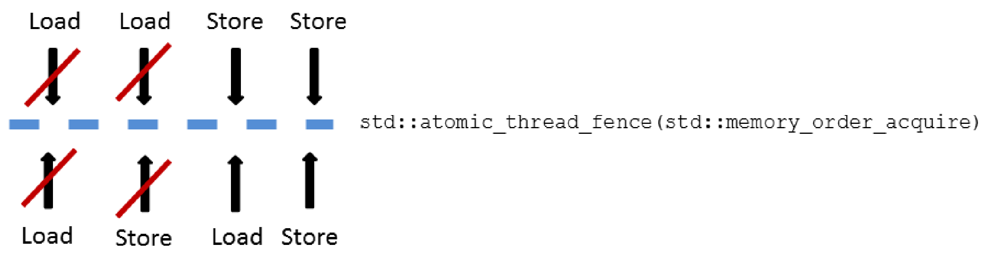
释放栅栏

三种内存屏障可以描述得更简单。
所有栅栏一览图

获取-释放栅栏与原子获取-释放语义有着相似的同步方式和顺序。
获取-释放栅栏
获取-释放栅栏与原子类的获取-释放语义最明显的区别是，栅栏不需要原子操作。还有一个更微妙的区别：获取-释放栅栏比原子操作更重量级。
原子操作 vs. 栅栏
简单起见，现在使用栅栏或带有获取语义的原子操作时引用获取操作，释放操作也是如此。
获取-释放操作的主要思想是，在线程间建立同步和排序约束，这些同步和顺序约束也适用于使用自由语义的原子操作或非原子操作。注意，获取-释放操作是成对出现的。此外，对获取-释放语义的原子变量的操作，必须作用在相同的原子变量上。不过，我现在是将这些操作分开来看待的。
让我们从获取操作开始对比。
获取操作
在原子变量(内存序为std::memory_order_acquire)上进行的加载 (读取)操作是一个获取操作。

将std::atomic_thread_fence内存序设置为std::memory_order_acquire，这对内存访问重排添加了更严格的约束:

比较中可以总结了两点:
- 具有获取语义的栅栏会建立更强的顺序约束。虽然，原子变量和栅栏的获取操作，要求在获取操作之前不能进行任何读或写操作。但是对获取栅栏有另一种方式，获取栅栏后不能进行读操作。
- 自由语义足以读取原子变量
var。由于std::atomc_thread_fence(std::memory_order_acquire)，所以这个操作在获取栅栏之后不能进行读取。
对于释放栅栏也可以进行类似的试验。
释放操作
对内存序为std::memory_order_release的原子变量，进行存储(写)操作时，这些操作属于释放操作。

还有，释放栅栏。
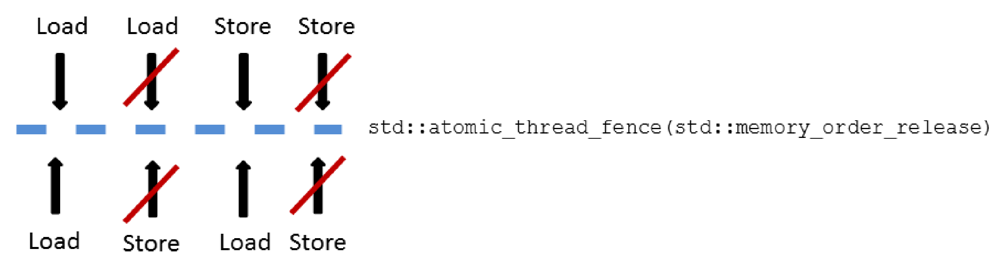
除了释放操作对原子变量var的约束外，释放栅栏有两个属性:
- 存储的操作不能在栅栏前进行。
- 变量
var使用自由语义。
现在，就使用栅栏写一段程序。
使用原子变量或栅栏进行同步
之前，我们已经用获取-释放语义，实现了一个典型的消费者-生产者工作流。先使用原子的是原子操作，再切换到栅栏。
原子操作
我们从原子操作开始，大家对它们应该都很熟悉。
// acquireRelease.cpp
#include <atomic>
#include <thread>
#include <iostream>
#include <string>
using namespace std;
atomic<string*> ptr;
int data;
atomic<int> atoData;
void producer(){
string *p = new string("C++11");
data = 2011;
atoData.store(2014, memory_order_relaxed);
ptr.store(p, memory_order_release);
}
void consumer(){
string* p2;
while(!(p2 = ptr.load(memory_order_acquire)));
cout << "*p2: " << *p2 << endl;
cout << "data: " << data << endl;
cout << "atoData: " << atoData.load(memory_order_relaxed) << endl;
}
int main(){
cout << endl;
thread t1(producer);
thread t2(consumer);
t1.join();
t2.join();
cout << endl;
}
这个程序应该很熟悉，这是我们在std:: memory_order_consumption小节中使用的示例。下图强调了消费者线程t2看到来自生产者线程t1的所有值。

这段程序定义良好，因为先行关系是可传递的。只需要把三种发生前关系结合起来:
- 第15-17行先行于第18行
ptr.store(p, std:: memory_order_release)。 - 第23行
while(!(p2= ptrl.load(std::memory_order_acquire)))先行于第24-26行。 - 第18行与第23行同步⇒第18行线程内先行于第23行。
现在，事情变得更有趣了，我们要来聊聊栅栏了。有关C++内存模型的文献中，栅栏几乎完全被忽略了。
栅栏
将程序改成到使用栅栏。
// acquireReleaseFences.cpp
#include <atomic>
#include <thread>
#include <iostream>
#include <string>
using namespace std;
atomic<string*> ptr;
int data;
atomic<int> atoData;
void producer() {
string* p = new string("C++11");
data_ = 2011;
atoData.store(2014, memory_order_relaxed);
atomic_thread_fence(memory_order_release);
ptr.store(p, memory_order_release);
}
void consumer() {
string* p2;
while (!(p2 = ptr.load(memory_order_relaxed)));
atomic_thread_fence(memory_order_acquire);
cout << "*p2: " << *p2 << endl;
cout << "data: " << data_ << endl;
cout << "atoData: " << atoData.load(memory_order_relaxed) << endl;
}
int main() {
cout << endl;
thread t1(producer);
thread t2(consumer);
t1.join();
t2.join();
delete ptr;
cout << endl;
}
第一步是添加栅栏(使用释放和获取语义，第18行和第25行)。接下来，将原子操作从获取或释放语义很容易的改为自由语义(第19和24行)。当然，只能用相应的栅栏替换获取或释放操作。释放栅栏建立了与获取栅栏的同步，因此线程间的也有了先行关系。
下图是程序的输出：

为了更直观的呈现给读者，下图是描述了整个关系。

关键问题是：为什么获取栅栏之后的操作，会看到释放栅栏之前的操作呢？因为数据是一个非原子变量atoData.store，并且以自由语义使用，这意味着它们可以重新排序；不过，因为std::atomic_thread_fence(std::memory_order_release)与std::atomic_thread_fence(std::memory_order_acquire)相结合，所以两个操作都不能重新排序。
用更简洁的形式进行解释：
- 获取-释放栅栏阻止了原子和非原子操作跨栅栏的重排序。
- 消费者线程
t2正在等待while (!(p2= ptr.load(std::memory_order_relaxed)))循环跳出，直到在生产者线程t1中设置对指针进行设置ptr.store(p,std::memory_order_relaxed)。 - 释放栅栏与获取栅栏同步。
- 自由操作或非原子操作的所有结果(在释放栅栏之前)，在获得栅栏之后都是可见的。
释放栅栏和获取栅栏之间的同步
这两个定义来自于N4659: Working Draft, Standard for Programming Language C++ ，并且标准文档的文字比较难懂：“如果操作X和操作Y对原子对象M的操作存在有原子操作，释放栅栏A同步于获取栅栏B；那么A的操作顺序位于X之前，X对M进行修改，Y位于B之前，并且Y读取X写入的值，或在进行释放操作时，释放序列X中的任何操作所写的值将被读取。”
让我借由acquireReleaseFence.cpp解释一下这段话：
atomic_thread_fence(memory_order_release)(第18行)是一个释放栅栏A。atomic_thread_fence(memory_order_acquire)(第25行)是一个获取栅栏B。ptr(第10行)是一个原子对象M。ptr.store(p, memory_order_relaxed)(第19行) 是一个原子存储操作X。while (!(p2 = ptr.load(memory_order_relaxed)))(第24行)是一个原子加载操作Y。
可以在acquireRelease.cpp程序中的原子变量上，混合获取和释放操作(使用获取和释放栅栏)，而不影响同步关系。
std::atomic_signal_fence
std::atomic_signal_fence在线程和信号句柄间，建立了非原子和自由原子访问的内存同步序。下面的程序展示了std::atomic_signal_fence的用法。
// atomicSignal.cpp
#include <atomic>
#include <cassert>
#include <csignal>
std::atomic<bool> a{false};
std::atomic<bool> b{false};
extern "C" void handler(int){
if (a.load(std::memory_order_relaxed)){
std::atomic_signal_fence(std::memory_order_acquire);
assert(b.load(std::memory_order_relaxed));
}
}
int main(){
std::signal(SIGTERM, handler);
b.store(true, std::memory_order_relaxed);
std::atomic_signal_fence(std::memory_order_release);
a.store(true, std::memory_order_relaxed);
}
首先，第19行中为特定的信号SIGTERM设置了处理句柄。SIGTERM是程序的终止请求。 std::atomic_signal_handler在释放操作std:: signal_fence(std::memory_order_release)(第22行)和获取操作std:: signal_fence(std::memory_order_acquire)(第12行)之间建立一个获取-释放栅栏。释放操作不能跨越释放栅栏进行重排序(第22行)，而获取操作不能跨越获取栅栏进行重排序(第11行)。因此，第13行assert(b.load(std::memory_order_relax)的断言永远不会触发，因为a.store(true, std:: memory_order_relaxed)(第23行)执行了的话, b.store(true, std::memory_order_relax)(第21行)就一定执行过。
多线程
C++11添加了多线程接口，为创建多线程程序提供了基础件。多线程的基础件有：线程、共享数据(如互斥锁和锁)的同步原语、线程本地数据、线程(如条件变量)的同步机制和任务。任务(通常称为promise和future)会提供了比线程更高级的抽象。

#线程
要用C++标准库启动一个线程，就必须包含<thread>头文件。
创建线程
线程std::thread对象表示一个可执行单元。当工作包是可调用单元时，工作包可以立即启动。线程对象是不可复制构造或复制赋值的，但可移动构造或移动赋值。
可调用单元是行为类似于函数。当然，它可以是一个函数，也可以是一个函数对象，或者一个Lambda表达式。通常忽略可调用单元的返回值。
介绍完理论知识之后，我们来动手写个小例子。
// createThread.cpp
#include <iostream>
#include <thread>
void helloFunction() {
std::cout << "Hello from a function." << std::endl;
}
class HelloFUncitonObject {
public:
void operator()()const {
std::cout << "Hello from a function object." << std::endl;
}
};
int main() {
std::cout << std::endl;
std::thread t1(helloFunction);
HelloFUncitonObject helloFunctionObject;
std::thread t2(helloFunctionObject);
std::thread t3([] {std::cout << "Hello from a lambda." << std::endl; });
t1.join();
t2.join();
t3.join();
std::cout << std::endl;
}
三个线程(t1、t2和t3)都会将信息写入控制台。线程t2的工作包是一个函数对象(第10 - 15行)，线程t3的工作包是一个Lambda函数(第26行)。第28 - 30行，主线程在等待子线程完成工作。
看一下输出。
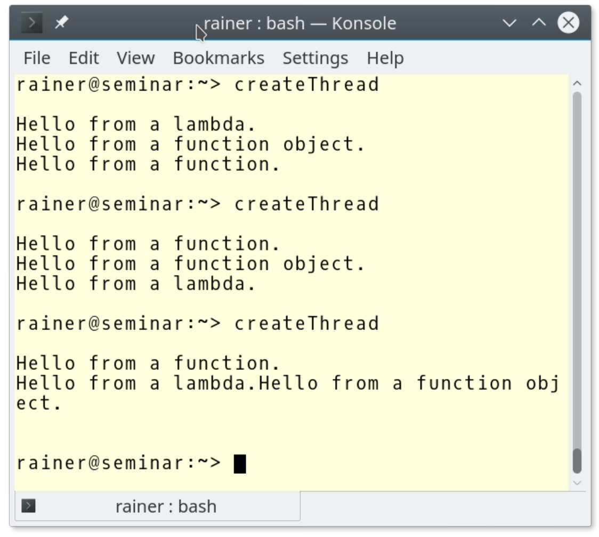
三个线程以任意顺序执行，这三个输出操作也可以交错。
线程的创建者(例子中是主线程)负责管理线程的生命周期，所以让我们来了解一下线程的生命周期。
##线程的生命周期
父母需要照顾自己的孩子，这个简单的原则对线程的生命周期非常重要。下面的程序(子线程最后没有汇入)，用来显示线程ID。
#include <iostream>
#include <thread>
int main() {
std::thread t([] {std::cout << std::this_thread::get_id() << std::endl; });
}
程序出现了错误，不过依旧打印了线程的ID。

那是什么原因引起的异常呢？
汇入和分离
线程t的生命周期终止于可调用单元执行结束，而创建者有两个选择：
- 等待线程完成:
t.join() - 与创建线程解除关系:
t.detach()
当后续代码依赖于线程中调用单元的计算结果时，需要使用t.join()。t.detach()允许线程与创建线程分离执行，所以分离线程的生命周期与可执行文件的运行周期相关。通常，服务器上长时间运行的后台服务，会使用分离线程。
如果t.join()和t.detach()都没有执行，那么线程t是可汇入的。可汇入线程的析构函数会抛出std::terminate异常，这也就是threadWithoutJoin.cpp程序产生异常的原因。如果在线程上多次调用t.join()或t.detach()，则会产生std::system_error异常。
解决问题的方法很简单：使用t.join()。
#include <iostream>
#include <thread>
int main() {
std::thread t([] {std::cout << std::this_thread::get_id() << std::endl; });
t.join();
}
现在就能得到满意的输出了。

线程ID是std::thread唯一的标识符。
分离线程的挑战
当然，可以在最后一个程序中使用
t.detach()代替t.join()。这样，线程t不能汇入了；因此，它的析构函数没有调用std::terminate函数。但现在有另一个问题：未定义行为。主程序可能在线程t前结束，所以由于主线程的生存期太短，无法显示ID。详细信息，可以参考变量的生存期。
Anthony Williams提出的scoped_thread
如果手动处理线程的生命周期可能有些麻烦，可以在包装器中封装
std::thread。如果线程仍然是可汇入的，这个类应该在其析构函数中自动调用t.join()，也可以反过来调用t.detach()，但分离处理也有问题。Anthony Williams提出了这样一个类，并在他的优秀著作《C++ Concurrency in Action》中介绍了它。他将包装器称为
scoped_thread。scoped_thread在构造函数中获取了线程对象，并检查线程对象是否可汇入。如果传递给构造函数的线程对象不可汇入，则不需要scoped_thread。如果线程对象可汇入，则析构函数调用t.join()。因为，复制构造函数和复制赋值操作符被声明为delete，所以scoped_thread的实例不能复制或赋值。// scoped_thread.cpp #include <thread> #include <utility> class scoped_thread{ std::thread t; public: explicit scoped_thread(std::thread t_): t(std::move(t_)){ if (!t.joinable()) throw std::logic_error("No thread"); } ~scoped_thread(){ t.join(); } scoped_thread(scoped_thread&)= delete; scoped_thread& operator=(scoped_thread const &)= delete; };
线程参数
和函数一样，线程可以通过复制、移动或引用来获取参数。std::thread是一个可变参数模板，可以传入任意数量的参数。
线程通过引用的方式获取数据的情况，必须非常小心参数的生命周期和数据的共享方式。
复制或引用
我们来看一个代码段。
std::string s{"C++11"}
std::thread t1([=]{ std::cout << s << std::endl; });
t1.join();
std::thread t2([&]{ std::cout << s << std::endl; });
t2.detach();
线程t1通过复制的方式获取参数，线程t2通过引用的方式获取参数。
线程的“引用”参数
实际上，我骗了你。线程
t2不是通过引用获取其参数，而是Lambda表达式通过引用捕获的参数。如果需要引用将参数传递给线程，则必须将其包装在引用包装器中，使用std::ref就能完成这项任务。std::ref在<functional>头文件中定义。<functional> ... void transferMoney(int amount, Account& from, Account& to){ ... } ... std::thread thr1(transferMoney, 50, std::ref(account1), std::ref(account2));线程
thr1执行transferMoney函数。transferMoney的参数是使用引用的方式传递，所以线程thr1通过引用获取account1和account2。
这几行代码中隐藏着什么问题呢？线程t2通过引用获取其字符串s，然后从其创建者的生命周期中分离。字符串s与创建者的生存期周期绑定，全局对象std::cout与主线程的生存周期绑定。因此，std::cout的生存周期可能比线程t2的生存周期短。现在，我们已经置身于未定义行为中了。
不相信？来看看未定义行为是什么样的。
// threadArguments.cpp
#include <chrono>
#include <iostream>
#include <thread>
class Sleeper {
public:
Sleeper(int& i_) :i{ i_ } {};
void operator()(int k) {
for (unsigned int j = 0; j <= 5; ++j) {
std::this_thread::sleep_for(std::chrono::microseconds(100));
i += k;
}
std::cout << std::this_thread::get_id() << std::endl;
}
private:
int& i;
};
int main() {
std::cout << std::endl;
int valSleepr = 1000;
std::thread t(Sleeper(valSleepr), 5);
t.detach();
std::cout << "valSleeper = " << valSleepr << std::endl;
std::cout << std::endl;
}
问题在于：valSleeper在第29行时值是多少？valSleeper是一个全局变量。线程t获得一个函数对象，该函数对象的实参为变量valSleeper和数字5(第27行)，而线程通过引用获得valSleeper(第9行)，并与主线程(第28行)分离。接下来，执行函数对象的调用操作符(第10 - 16行)，它从0计数到5，在每100毫秒的中休眠，将k加到i上。最后，屏幕上显示它的id。Nach Adam Riese (德国成语：真是精准的计算呀！)，期望的结果应该是1000 + 6 * 5 = 1030。
然而，发生了什么？结果为什么完全不对？
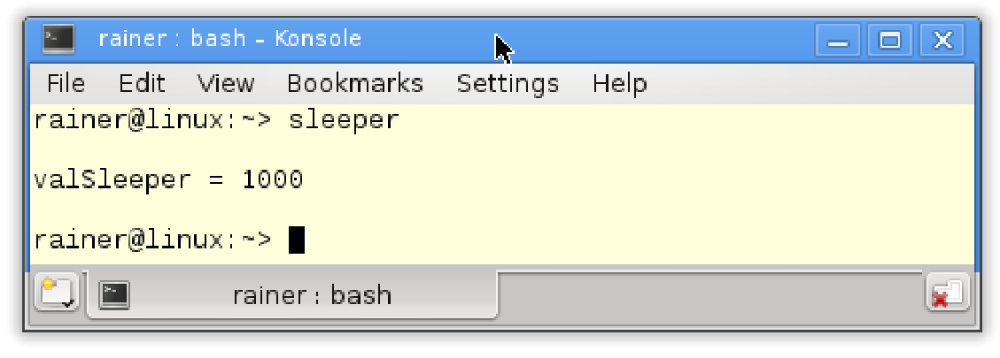
这个输出有两个奇怪的地方：首先，valSleeper是1000；其次，ID没有显示。
这段程序至少有两个错误：
valSleeper是线程共享的。这会导致数据竞争，因为线程可能同时读写valSleeper。- 主线程的生命周期很可能在子线程执行计算，或将其ID写入
std::cout之前结束。
这两个问题都是构成竞态条件，因为程序的结果取决于操作的交错。构成竞态的条件也是导致数据竞争的原因。
解决数据竞争也非常容易：使用锁或原子保护valSleeper。为了解决valSleeper和std::cout的生命周期问题，必须汇入线程而不是分离它。
修改后的主函数体。
int main(){
std::cout << std::endl;
int valSleeper= 1000;
std::thread t(Sleeper(valSleeper),5);
t.join();
std::cout << "valSleeper = " << valSleeper << std::endl;
std::cout << std::endl;
}
现在，我们得到了正确的结果。当然，执行速度会变慢。
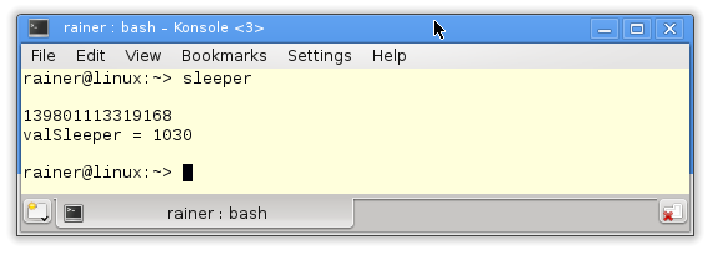
为了更完整的了解std::thread，接下来了解其成员函数。
###成员函数
下面是std::thread的接口，在一个简洁的表中。更多详情请访问cppreference.com。
| 函数名称 | 描述 |
|---|---|
t.join() | 等待，直到线程t完成 |
t.detach() | 独立于创建者执行创建的线程t |
t.joinable() | 如果线程t可以汇入，则返回true |
t.get_id()和std::this_thread::get_id() | 返回线程的ID |
std::thread::hardware_concurrency() | 返回可以并发运行的线程数 |
std::this_thread::sleep_until(absTime) | 将线程t置为睡眠状态，直到absTime时间点为止 |
std::this_thread::sleep_for(relTime) | 将线程t置为睡眠状态，直到休眠了relTime为止 |
std::this_thread::yield() | 允许系统运行另一个线程 |
t.swap(t2)和std::swap(t1, t2) | 交换线程对象 |
静态函数std::thread::hardware_concurrency返回实现支持的并发线程数量，如果运行时无法确定数量，则返回0(这是根据C++标准编写的)。sleep_until和sleep_for操作需要一个时间点或持续时间作为参数。
访问特定系统的实现
线程接口是底层实现的包装器，可以使用
native_handle来访问(特定于系统的实现)。这个底层实现的句柄可用于线程、互斥对象和条件变量。
作为对本小节的总结，下面是在实践中提到的一些方法。
// threadMethods.cpp
#include <iostream>
#include <thread>
using namespace std;
int main() {
cout << boolalpha << endl;
cout << "hardware_concurrency() = " << thread::hardware_concurrency() << endl;
thread t1([] {cout << "t1 with id = " << this_thread::get_id() << endl; });
thread t2([] {cout << "t2 with id = " << this_thread::get_id() << endl; });
cout << endl;
cout << "FROM MAIN: id of t1 " << t1.get_id() << endl;
cout << "FROM MAIN: id of t2 " << t2.get_id() << endl;
cout << endl;
swap(t1, t2);
cout << "FROM MAIN: id of t1 " << t1.get_id() << endl;
cout << "FROM MAIN: id of t2 " << t2.get_id() << endl;
cout << endl;
cout << "FROM MAIN: id of main= " << this_thread::get_id() << endl;
cout << endl;
cout << "t1.joinable(): " << t1.joinable() << endl;
cout << endl;
t1.join();
t2.join();
cout << endl;
cout << "t1.joinable(): " << t1.joinable() << endl;
cout << endl;
}
与输出相结合来看，应该很容易理解。

结果可能看起来有点奇怪，线程t1和t2(第14行和第15行)在不同时间点上运行。无法确定每个线程何时运行，只能确定在第38和39行t1.join()和t2.join()语句之前两个线程是肯定运行了的。
线程共享的可变(非const)变量越多，程序的风险就越大。
#共享数据
为了更清楚地说明这一点，就需要考虑共享数据的同步问题，因为数据竞争很容易在共享数据上发生。如果并发地对数据进行非同步读写访问，则会产生未定义行为。
验证并发、未同步的读写操作的最简单方法，就是向std::cout写入一些内容。
让我们来看一下，使用不同步的方式进行std::cout打印输出。
// coutUnsynchronised.cpp
#include <chrono>
#include <iostream>
#include <thread>
class Worker {
public:
Worker(std::string n) :name(n) {}
void operator()() {
for (int i = 1; i <= 3; ++i) {
// begin work
std::this_thread::sleep_for(std::chrono::microseconds(200));
// end work
std::cout << name << ": " << "Work " << i << " done !!!" << std::endl;
}
}
private:
std::string name;
};
int main() {
std::cout << std::endl;
std::cout << "Boss: Let's start working.\n\n";
std::thread herb = std::thread(Worker("Herb"));
std::thread andrei = std::thread(Worker(" Andrei"));
std::thread scott = std::thread(Worker(" Scott"));
std::thread bjarne = std::thread(Worker(" Bjarne"));
std::thread bart = std::thread(Worker(" Bart"));
std::thread jenne = std::thread(Worker(" Jenne"));
herb.join();
andrei.join();
scott.join();
bjarne.join();
bart.join();
jenne.join();
std::cout << "\n" << "Boss: Let's go home." << std::endl;
std::cout << std::endl;
}
该程序描述了一个工作流程：老板有六个员工(第29 - 34行)，每个员工必须处理3个工作包，处理每个工作包需要200毫秒(第13行)。当员工完成了他的所有工作包时，他向老板报告(第15行)。当老板收到所有员工的报告，老板就会把员工们送回家(第43行)。
这么简单的工作流程，输出却如此混乱。

让输出变清晰的最简单解决方法，就是使用互斥量。
##互斥量
Mutex是互斥(mutual exclusion)的意思，它确保在任何时候只有一个线程可以访问临界区。
通过使用互斥量，工作流程的混乱变的和谐许多。
// coutSynchronised.cpp
#include <chrono>
#include <iostream>
#include <mutex>
#include <thread>
std::mutex coutMutex;
class Worker {
public:
Worker(std::string n) :name(n) {}
void operator()() {
for (int i = 1; i <= 3; ++i) {
// begin work
std::this_thread::sleep_for(std::chrono::microseconds(200));
// end work
coutMutex.lock();
std::cout << name << ": " << "Work " << i << " done !!!" << std::endl;
coutMutex.unlock();
}
}
private:
std::string name;
};
int main() {
std::cout << std::endl;
std::cout << "Boss: Let's start working.\n\n";
std::thread herb = std::thread(Worker("Herb"));
std::thread andrei = std::thread(Worker(" Andrei"));
std::thread scott = std::thread(Worker(" Scott"));
std::thread bjarne = std::thread(Worker(" Bjarne"));
std::thread bart = std::thread(Worker(" Bart"));
std::thread jenne = std::thread(Worker(" Jenne"));
herb.join();
andrei.join();
scott.join();
bjarne.join();
bart.join();
jenne.join();
std::cout << "\n" << "Boss: Let's go home." << std::endl;
std::cout << std::endl;
}
第8行中coutMutex保护了std::cout，第19行中的lock()和第21行中的unlock()调用，确保工作人员不会同时进行报告。
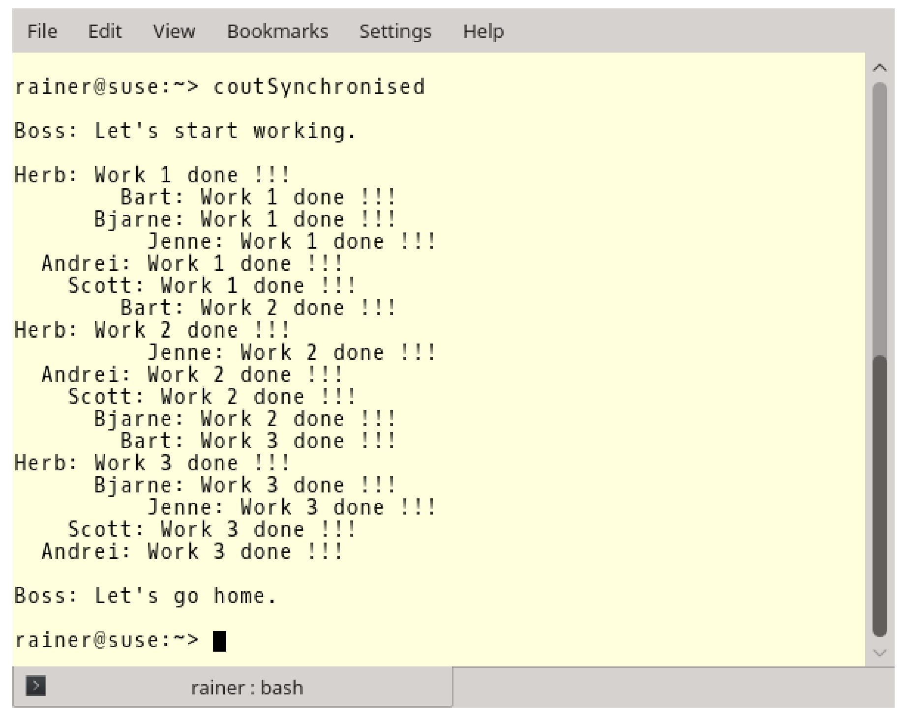
std:: cout是线程安全的
C++11标准中，
std::cout不需要额外的保护，每个字符都是原子式书写的。可能会有更多类似示例中的输出语句交织在一起的情况，但这些只是视觉问题，而程序则是定义良好的。所有全局流对象都是线程安全的，并且插入和提取全局流对象(std::cout、std::cin、std::cerr和std::clog)也都是线程安全的。更正式地说：写入
std::cout并不是数据竞争，而是一个竞争条件。这意味着输出内容的情况，完全取决于交错运行的线程。
C++11有4个不同的互斥量，可以递归地、暂时地锁定，并且不受时间限制。
| 成员函数 | mutex | recursive_mutex | timed_mutex | recursive_timed_mutex |
|---|---|---|---|---|
| m.lock | yes | yes | yes | yes |
| m.try_lock | yes | yes | yes | yes |
| m.try_lock_for | yes | yes | ||
| m.try_lock_until | yes | yes | ||
| m.unlock | yes | yes | yes | yes |
递归互斥量允许同一个线程多次锁定互斥锁。互斥量保持锁定状态，直到解锁次数与锁定次数相等。可以锁定互斥量的最大次数默认并未指定，当达到最大值时，会抛出std::system_error异常。
C++14中有std::shared_timed_mutex，C++17中有std::shared_mutex。std::shared_mutex和std::shared_timed_mutex非常相似，使用的锁可以是互斥或共享的。另外，使用std::shared_timed_mutex可以指定时间点或时间段进行锁定。
| 成员函数 | shared_timed_mutex | shared_mutex |
|---|---|---|
| m.lock | yes | yes |
| m.try_lock | yes | yes |
| m.try_lock_for | yes | |
| m.try_lock_until | yes | |
| m.unlock | yes | yes |
| m.lock_shared | yes | yes |
| m.try_lock_shared | yes | yes |
| m.try_lock_shared_for | yes | |
| m.try_lock_shared_until | yes | |
| m.unlock_shared | yes | yes |
std::shared_timed_mutex(std::shared_mutex)可以用来实现读写锁，也就可以使用std::shared_timed_mutex(std::shared_mutex)进行独占或共享锁定。如果将std::shared_timed_mutex(std::shared_mutex)放入std::lock_guard或std::unique_lock中，就可实现独占锁；如果将std::shared_timed_mutex(std::shared_lock)放入std::shared_lock中，就可实现共享锁。m.try_lock_for(relTime)和m.try_lock_shared_for(relTime)需要一个时间段；m.try_lock_until(absTime)和m.try_lock_shared_until(absTime)需要一个绝对的时间点。
m.try_lock(m.try_lock_shared)尝试锁定互斥量并立即返回。成功时，它返回true，否则返回false。相比之下，m.try_lock_for(m.try_lock_shared_for)和m.try_lock_until(m.try_lock_shared_until)也会尝试上锁，直到超时或完成锁定，这里应该使用稳定时钟来限制时间(稳定的时钟是不能调整的)。
不应该直接使用互斥量，应该将互斥量放入锁中，下面解释下原因。
互斥量的问题
互斥量的问题可以归结为一个：死锁。
死锁
两个或两个以上的个线程处于阻塞状态，并且每个线程在释放之前都要等待其他线程的释放。
结果就是程序完全静止。试图获取资源的线程，通常会永久的阻塞程序。形成这种困局很简单，有兴趣了解一下吗?
异常和未知代码
下面的代码段有很多问题。
std::mutex m;
m.lock();
sharedVariable = getVar();
m.unlock();
问题如下：
- 如果函数
getVar()抛出异常，则互斥量m不会被释放。 - 永远不要在持有锁的时候调用函数。因为
m不是递归互斥量，如果函数getVar试图锁定互斥量m，则程序具有未定义的行为。大多数情况下，未定义行为会导致死锁。 - 避免在持有锁时调用函数。可能这个函数来自一个库，但当这个函数发生改变，就有陷入僵局的可能。
程序需要的锁越多，程序的风险就越高(非线性)。
不同顺序锁定的互斥锁
下面是一个典型的死锁场景，死锁是按不同顺序进行锁定的。

线程1和线程2需要访问两个资源来完成它们的工作。当资源被两个单独的互斥体保护，并且以不同的顺序被请求(线程1:锁1，锁2;线程2:锁2，锁1)时，线程交错执行，线程1得到互斥锁1，然后线程2得到互斥锁2，从而程序进入停滞状态。每个线程都想获得另一个互斥锁，但需要另一个线程释放其需要的互斥锁。“死亡拥抱”这个形容，很好地描述了这种状态。
将这上图转换成代码。
// deadlock.cpp
#include <iostream>
#include <chrono>
#include <mutex>
#include <thread>
struct CriticalData {
std::mutex mut;
};
void deadLock(CriticalData& a, CriticalData& b) {
a.mut.lock();
std::cout << "get the first mutex" << std::endl;
std::this_thread::sleep_for(std::chrono::microseconds(1));
b.mut.lock();
std::cout << "get the second mutext" << std::endl;
// do something with a and b
a.mut.unlock();
b.mut.unlock();
}
int main() {
CriticalData c1;
CriticalData c2;
std::thread t1([&] {deadLock(c1, c2); });
std::thread t2([&] {deadLock(c2, c1); });
t1.join();
t2.join();
}
线程t1和t2调用死锁函数(第12 - 23行)，向函数传入了c1和c2(第27行和第28行)。由于需要保护c1和c2不受共享访问的影响，它们在内部各持有一个互斥量(为了保持本例简短，关键数据除了互斥量外没有其他函数或成员)。
第16行中，约1毫秒的短睡眠就足以产生死锁。
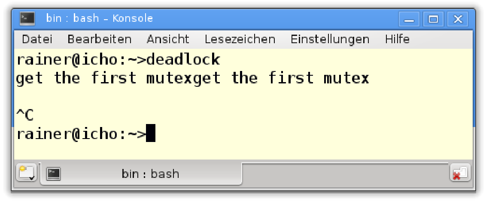
这时，只能按CTRL+C终止进程。
互斥量不能解决所有问题，但在很多情况下，锁可以帮助我们解决这些问题。
锁
锁使用RAII方式处理它们的资源。锁在构造函数中自动绑定互斥量，并在析构函数中释放互斥量，这大大降低了死锁的风险。
锁有四种不同的形式：std::lock_guard用于简单程序，std::unique_lock用于高级程序。从C++14开始就可以用std::shared_lock来实现读写锁了。C++17中，添加了std::scoped_lock，它可以在原子操作中锁定更多的互斥对象。
首先，来看简单程序。
std::lock_guard
std::mutex m;
m.lock();
sharedVariable = getVar();
m.unlock();
互斥量m可以确保对sharedVariable = getVar()的访问是有序的。有序指的是，每个线程按照某种顺序，依次访问临界区。代码很简单，但是容易出现死锁。如果临界区抛出异常或者忘记解锁互斥量，就会出现死锁。使用std::lock_guard，可以很优雅的解决问题：
{
std::mutex m,
std::lock_guard<std::mutex> lockGuard(m);
sharedVariable = getVar();
}
代码很简单，但是前后的花括号是什么呢？std::lock_guard的生存周期受其作用域的限制，作用域由花括号构成。生命周期在达到右花括号时结束，std::lock_guard析构函数被调用，并且互斥量被释放。这都是自动发生的，如果sharedVariable = getVar()中的getVar()抛出异常，释放过程也会自动发生。函数作用域和循环作用域，也会限制实例对象的生命周期。
std::scoped_lock
C++17中，添加了std::scoped_lock。与std::lock_guard非常相似，但可以原子地锁定任意数量的互斥对象。
- 如果
std::scoped_lock调用一个互斥量，它的行为就类似于std::lock_guard，并锁定互斥量m:m.lock。如果std::scoped_lock被多个互斥对象调用std::scoped_lock(mutextypes&…)，则使用std::lock(m…)函数进行锁定操作。 - 如果当前线程已经拥有了互斥量，但这个互斥量不可递归，那么这个行为就是未定义的，很有可能出现死锁。
- 只需要获得互斥量的所有权，而不需要锁定它们。这种情况下，必须将标志
std::adopt_lock_t提供给构造函数：std::scoped_lock(std::adopt_lock_t, mutextypes&…m)。
使用std::scoped_lock，可以优雅地解决之前的死锁问题。下一节中，将讨论如何杜绝死锁。
std::unique_lock
std::unique_lock比std::lock_guard更强大，也更重量级。
除了包含std::lock_guard提供的功能之外，std::unique_lock还允许：
- 创建无需互斥量的锁
- 不锁定互斥量的情况下创建锁
- 显式地/重复地设置或释放关联的互斥锁量
- 递归锁定互斥量
- 移动互斥量
- 尝试锁定互斥量
- 延迟锁定关联的互斥量
下表展示了std::unique_lock lk的成员函数：
| 成员函数 | 功能描述 |
|---|---|
lk.lock() | 锁定相关互斥量 |
lk.try_lock() | 尝试锁定相关互斥量 |
lk.try_lock_for(relTime) | 尝试锁定相关互斥量 |
lk.try_lock_until(absTime) | 尝试锁定相关互斥量 |
lk.unlock() | 解锁相关互斥量 |
lk.release() | 释放互斥量，互斥量保持锁定状态 |
lk.swap(lk2)和std::swap(lk, lk2) | 交换锁 |
lk.mutex() | 返回指向相关互斥量的指针 |
lk.owns_lock()和bool操作符 | 检查锁lk是否有锁住的互斥量 |
try_lock_for(relTime)需要传入一个时间段，try_lock_until(absTime)需要传入一个绝对的时间点。lk.try_lock_for(lk.try_lock_until)会调用关联的互斥量mut的成员函数mut.try_lock_for(mut.try_lock_until) 。相关的互斥量需要支持定时阻塞，这就需要使用稳定的时钟来限制时间。
lk.try_lock尝试锁定互斥锁并立即返回。成功时返回true，否则返回false。相反，lk.try_lock_for和lk.try_lock_until则会让锁lk阻塞，直到超时或获得锁为止。如果没有关联的互斥锁，或者这个互斥锁已经被std::unique_lock锁定，那么lk.try_lock、lk.try_lock_for和lk.try_lock_for则抛出std::system_error异常。
lk.release()返回互斥量，必须手动对其进行解锁。
std::unique_lock在原子步骤中可以锁定多个互斥对象。因此，可以通过以不同的顺序锁定互斥量来避免死锁。还记得在互斥量中出现的死锁吗?
// deadlock.cpp
#include <iostream>
#include <chrono>
#include <mutex>
#include <thread>
struct CriticalData {
std::mutex mut;
};
void deadLock(CriticalData& a, CriticalData& b) {
a.mut.lock();
std::cout << "get the first mutex" << std::endl;
std::this_thread::sleep_for(std::chrono::microseconds(1));
b.mut.lock();
std::cout << "get the second mutext" << std::endl;
// do something with a and b
a.mut.unlock();
b.mut.unlock();
}
int main() {
CriticalData c1;
CriticalData c2;
std::thread t1([&] {deadLock(c1, c2); });
std::thread t2([&] {deadLock(c2, c1); });
t1.join();
t2.join();
}
让我们来解决死锁问题。死锁必须原子地锁定互斥对象，也正是下面的程序中所展示的。
// deadlockResolved.cpp
#include <iostream>
#include <chrono>
#include <mutex>
#include <thread>
using namespace std;
struct CriticalData {
mutex mut;
};
void deadLock(CriticalData& a, CriticalData& b) {
unique_lock<mutex> guard1(a.mut, defer_lock);
cout << "Thread: " << this_thread::get_id() << " first mutex" << endl;
this_thread::sleep_for(chrono::milliseconds(1));
unique_lock<mutex> guard2(b.mut, defer_lock);
cout << " Thread: " << this_thread::get_id() << " second mutex" << endl;
cout << " Thread: " << this_thread::get_id() << " get both mutex" << endl;
lock(guard1, guard2);
// do something with a and b
}
int main() {
cout << endl;
CriticalData c1;
CriticalData c2;
thread t1([&] {deadLock(c1, c2); });
thread t2([&] {deadLock(c2, c1); });
t1.join();
t2.join();
cout << endl;
}
如果使用std::defer_lock对std::unique_lock进行构造，则底层的互斥量不会自动锁定。此时(第16行和第21行)，std::unique_lock就是互斥量的所有者。由于std::lock是可变参数模板，锁操作可以原子的执行(第25行)。
使用std::lock进行原子锁定
std::lock可以在原子的锁定互斥对象。std::lock是一个可变参数模板，因此可以接受任意数量的参数。std::lock尝试使用避免死锁的算法，在一个原子步骤获得所有锁。互斥量会锁定一系列操作，比如：lock、try_lock和unlock。如果对锁或解锁的调用异常，则解锁操作会在异常重新抛出之前执行。
本例中，std::unique_lock管理资源的生存期，std::lock锁定关联的互斥量，也可以反过来。第一步中锁住互斥量，第二步中std::unique_lock管理资源的生命周期。下面是第二种方法的例子：
std::lock(a.mut, b.mut);
std::lock_guard<std::mutex> guard1(a.mut, std::adopt_lock);
std::lock_guard<std::mutex> guard2(b.mut, std::adopt_lock);
这两个方式都能解决死锁。
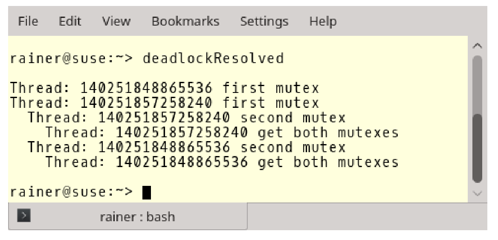
使用std::scoped_lock解决死锁
C++17中解决死锁非常容易。有了
std::scoped_lock帮助，可以原子地锁定任意数量的互斥。只需使用std::scoped_lock，就能解决所有问题。下面是修改后的死锁函数：// deadlockResolvedScopedLock.cpp ... void deadLock(CriticalData& a, CriticalData& b) { cout << "Thread: " << this_thread::get_id() << " first mutex" << endl; this_thread::sleep_for(chrono::milliseconds(1)); cout << " Thread: " << this_thread::get_id() << " second mutex" << endl; cout << " Thread: " << this_thread::get_id() << " get both mutex" << endl; std::scoped_lock(a.mut, b.mut); // do something with a and b } ...
std::shared_lock
C++14中添加了std::shared_lock。
std::shared_lock与std::unique_lock的接口相同，但与std::shared_timed_mutex或std::shared_mutex一起使用时，行为会有所不同。许多线程可以共享一个std::shared_timed_mutex (std::shared_mutex)，从而实现读写锁。读写器锁的思想非常简单，而且非常有用。执行读操作的线程可以同时访问临界区，但是只允许一个线程写。
读写锁并不能解决最根本的问题——线程争着访问同一个关键区域。
电话本就是使用读写锁的典型例子。通常，许多人想要查询电话号码，但只有少数人想要更改。让我们看一个例子：
// readerWriterLock.cpp
#include <iostream>
#include <map>
#include <shared_mutex>
#include <string>
#include <thread>
std::map<std::string, int> teleBook{ {"Dijkstra", 1972}, {"Scott", 1976},
{"Ritchie", 1983} };
std::shared_timed_mutex teleBookMutex;
void addToTeleBook(const std::string& na, int tele) {
std::lock_guard<std::shared_timed_mutex> writerLock(teleBookMutex);
std::cout << "\nSTARTING UPDATE " << na;
std::this_thread::sleep_for(std::chrono::milliseconds(500));
teleBook[na] = tele;
std::cout << " ... ENDING UPDATE " << na << std::endl;
}
void printNumber(const std::string& na) {
std::shared_lock<std::shared_timed_mutex> readerLock(teleBookMutex);
std::cout << na << ": " << teleBook[na];
}
int main() {
std::cout << std::endl;
std::thread reader1([] {printNumber("Scott"); });
std::thread reader2([] {printNumber("Ritchie"); });
std::thread w1([] {addToTeleBook("Scott",1968); });
std::thread reader3([] {printNumber("Dijkstra"); });
std::thread reader4([] {printNumber("Scott"); });
std::thread w2([] {addToTeleBook("Bjarne", 1965); });
std::thread reader5([] {printNumber("Scott"); });
std::thread reader6([] {printNumber("Ritchie"); });
std::thread reader7([] {printNumber("Scott"); });
std::thread reader8([] {printNumber("Bjarne"); });
reader1.join();
reader2.join();
reader3.join();
reader4.join();
reader5.join();
reader6.join();
reader7.join();
reader8.join();
w1.join();
w2.join();
std::cout << std::endl;
std::cout << "\nThe new telephone book" << std::endl;
for (auto teleIt : teleBook) {
std::cout << teleIt.first << ": " << teleIt.second << std::endl;
}
std::cout << std::endl;
}
第9行中的电话簿是共享变量，必须对其进行保护。八个线程要查询电话簿，两个线程想要修改它(第31 - 40行)。为了同时访问电话簿，读取线程使用std::shared_lock<std::shared_timed_mutex>(第23行)。写线程需要以独占的方式访问临界区，第15行中的std::lock_guard<std::shared_timed_mutex>具有独占性。最后，程序显示了更新后的电话簿(第55 - 58行)。
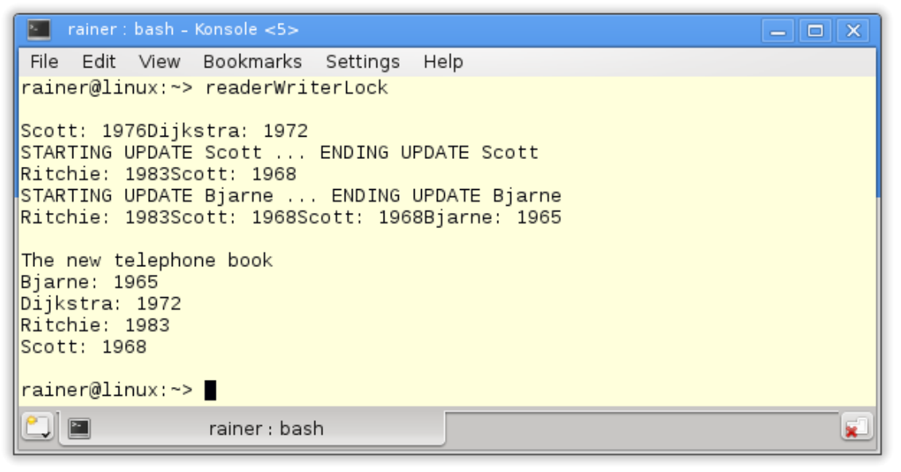
屏幕截图显示，读线程的输出是重叠的，而写线程是一个接一个地执行。这就意味着，读取操作应该是同时执行的。
这很容易让“电话簿”有未定义行为。
未定义行为
程序有未定义行为。更准确地说，它有一个数据竞争。啊哈！？在继续之前，停下来想几秒钟。
数据竞争的特征是，至少有两个线程同时访问共享变量，并且其中至少有一个线程是写线程，这种情况很可能在程序执行时发生。使用索引操作符读取容器中的值，并可以修改它。如果元素在容器中不存在，就会发生这种情况。如果在电话簿中没有找到“Bjarne”，则从读访问中创建一对(“Bjarne”，0)。可以通过在第40行前面打印Bjarne的数据，强制数据竞争。
可以看到的是，Bjarne的值是0。

修复这个问题的最直接的方法是使用printNumber函数中的读取操作:
// readerWriterLocksResolved.cpp
...
void printNumber(const std::string& na){
std::shared_lock<std::shared_timed_mutex> readerLock(teleBookMutex);
auto searchEntry = teleBook.find(na);
if(searchEntry != teleBook.end()){
std::cout << searchEntry->first << ": " << searchEntry->second << std::endl;
}
else{
std::cout << na << " not found!" << std::endl;
}
}
...
如果电话簿里没有相应键值，就把键值写下来，并且向控制台输出“找不到!”。

第二个程序执行的输出中，可以看到Bjarne的信息没有找到。第一个程序执行中，首先执行了addToTeleBook，所以Bjarne被找到了。
线程安全的初始化
如果变量从未修改过，那么就不需要锁或原子变量来进行同步，只需确保以线程安全的方式初始化就可以了。
C++中有三种以线程安全初始化变量的方法：
- 常量表达式
std::call_once与std::once_flag结合的方式- 作用域的静态变量
主线程中的安全初始化
以线程安全的方式初始化变量的最简单方法，是在创建任何子线程之前在主线程中初始化变量。
常数表达式
常量表达式，是编译器可以在编译时计算的表达式，隐式线程安全的。将关键字constexpr放在变量前面，会使该变量成为常量表达式。常量表达式必须初始化。
constexpr double pi = 3.14;
此外，用户定义的类型也可以是常量表达式。不过，必须满足一些条件才能在编译时初始化：
- 不能有虚方法或虚基类
- 构造函数必须为空，且本身为常量表达式
- 必须初始化每个基类和每个非静态成员
- 成员函数在编译时应该是可调用的，必须是常量表达式
MyDouble的实例满足所有这些需求，因此可以在编译时实例化。所以，这个实例化是线程安全的。
// constexpr.cpp
#include <iostream>
class MyDouble {
private:
double myVal1;
double myVal2;
public:
constexpr MyDouble(double v1, double v2):myVal1(v1),myVal2(v2){}
constexpr double getSum() const { return myVal1 + myVal2; }
};
int main() {
constexpr double myStatVal = 2.0;
constexpr MyDouble myStatic(10.5, myStatVal);
constexpr double sumStat = myStatic.getSum();
}
std::call_once和std::once_flag
通过使用std::call_once函数，可以注册一个可调用单元。std::once_flag确保已注册的函数只调用一次。可以通过相同的std::once_flag注册其他函数，只能调用注册函数组中的一个函数。
std::call_once遵循以下规则:
- 只执行其中一个函数的一次，未定义选择哪个函数执行。所选函数与
std::call_once在同一个线程中执行。 - 上述所选函数的执行成功完成之前，不返回任何调用。
- 如果函数异常退出，则将其传播到调用处。然后，执行另一个函数。
这个短例演示了std::call_once和std::once_flag的应用(都在头文件<mutex>中声明)。
// callOnce.cpp
#include <iostream>
#include <thread>
#include <mutex>
std::once_flag onceFlag;
void do_once() {
std::call_once(onceFlag, [] {std::cout << "Only once." << std::endl; });
}
void do_once2() {
std::call_once(onceFlag, [] {std::cout << "Only once2." << std::endl; });
}
int main() {
std::cout << std::endl;
std::thread t1(do_once);
std::thread t2(do_once);
std::thread t3(do_once2);
std::thread t4(do_once2);
t1.join();
t2.join();
t3.join();
t4.join();
std::cout << std::endl;
}
程序从四个线程开始(第21 - 24行)。其中两个调用do_once，另两个调用do_once2。预期的结果是“Only once”或“Only once2”只显示一次。

单例模式保证只创建类的一个实例，这在多线程环境中是一个具有挑战性的任务。由于std::call_once和std::once_flag的存在，实现这样的功能就非常容易了。
现在，单例以线程安全的方式初始化。
// singletonCallOnce.cpp
#include <iostream>
#include <mutex>
using namespace std;
class MySingleton {
private:
static once_flag initInstanceFlag;
static MySingleton* instance;
MySingleton() = default;
~MySingleton() = default;
public:
MySingleton(const MySingleton&) = delete;
MySingleton& operator=(const MySingleton&) = delete;
static MySingleton* getInstance() {
call_once(initInstanceFlag, MySingleton::initSingleton);
return instance;
}
static void initSingleton() {
instance = new MySingleton();
}
};
MySingleton* MySingleton::instance = nullptr;
once_flag MySingleton::initInstanceFlag;
int main() {
cout << endl;
cout << "MySingleton::getInstance(): " << MySingleton::getInstance() << endl;
cout << "MySingleton::getInstance(): " << MySingleton::getInstance() << endl;
cout << endl;
}
静态变量initInstanceFlag在第11行声明，在第31行初始化。静态方法getInstance(第20 - 23行)使用initInstanceFlag标志，来确保静态方法initSingleton(第25 - 27行)只执行一次。
default和delete修饰符
可以使用关键字
default向编译器申请函数实现，编译器可以创建并实现它们。用
delete修饰一个成员函数的话，则该函数不可用，因此不能被调用。如果尝试使用它们，将得到一个编译时错误。这里有default和delete的详细信息。
MySingleton::getIstance() 函数显示了单例的地址。

有作用域的静态变量
具有作用域的静态变量只创建一次，并且是惰性的，惰性意味着它们只在使用时创建。这一特点是基于Meyers单例的基础，以Scott Meyers命名，这是迄今为止C++中单例模式最优雅的实现。C++11中，带有作用域的静态变量有一个额外的特点，可以以线程安全的方式初始化。
下面是线程安全的Meyers单例模式。
// meyersSingleton.cpp
class MySingleton {
public:
static MySingleton& getInstance() {
static MySingleton instance;
return instance;
}
private:
MySingleton();
~MySingleton();
MySingleton(const MySingleton&) = delete;
MySingleton& operator=(const MySingleton&) = delete;
};
MySingleton::MySingleton()= default;
MySingleton::~MySingleton()= default;
int main(){
MySingleton::getInstance();
}
编译器对静态变量的支持
如果在并发环境中使用Meyers单例，请确保编译器对于C++11的支持。开发者经常依赖于C++11的静态变量语义，但是有时他们的编译器不支持这项特性，结果可能会创建多个单例实例。
讨论了这么多，而在thread_local中就没有共享变量的问题了。
接下来，我们来了解一下thread_local。
线程-本地数据
线程-本地数据(也称为线程-本地存储)是为每个线程单独创建的，其行为类似于静态数据。在命名空间范围内，或作为静态类成员的线程局部变量，是在第一次使用之前创建，而在函数中声明的线程局部变量是在第一次使用时创建，并且线程-本地数据只属于线程。
// threadLocal.cpp
#include <iostream>
#include <string>
#include <mutex>
#include <thread>
std::mutex coutMutex;
thread_local std::string s("hello from ");
void addThreadLocal(std::string const& s2) {
s += s2;
// protect std::cout
std::lock_guard<std::mutex> guard(coutMutex);
std::cout << s << std::endl;
std::cout << "&s: " << &s << std::endl;
std::cout << std::endl;
}
int main() {
std::cout << std::endl;
std::thread t1(addThreadLocal, "t1");
std::thread t2(addThreadLocal, "t2");
std::thread t3(addThreadLocal, "t3");
std::thread t4(addThreadLocal, "t4");
t1.join();
t2.join();
t3.join();
t4.join();
}
通过在第10行中使用关键字thread_local，可以创建线程本地字符串s。线程t1 - t4(第27 - 30行)使用addThreadLocal函数(第12 - 21行)作为工作包。线程分别获取字符串t1到t4作为参数，并添加到线程本地字符串s中。另外，addThreadLocal在第18行会打印s的地址。
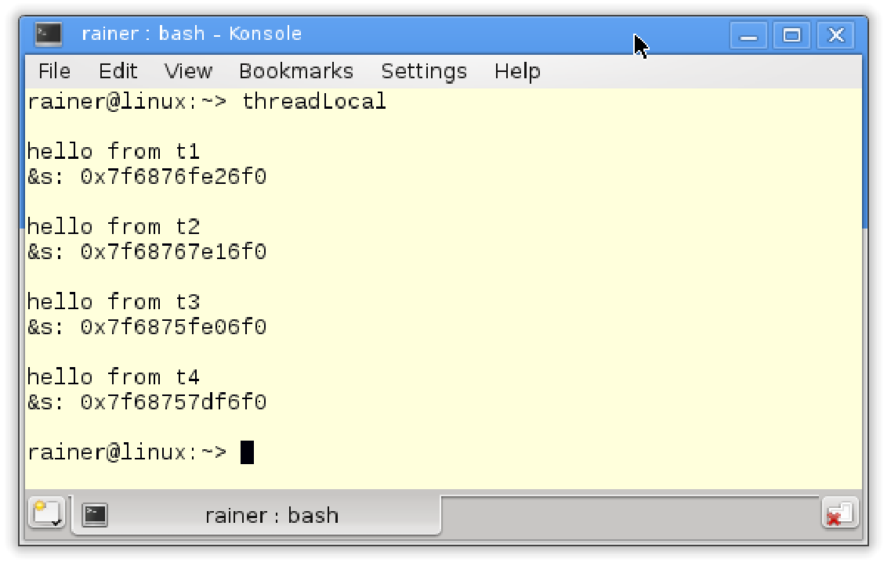
程序的输出在第17行显示内容，在第18行显示地址。要为字符串s创建线程本地字符串：首先，每个输出显示新的线程本地字符串；其次，每个字符串都有不同的地址。
我经常在研讨会上讨论：静态变量、thread_local变量和局部变量之间的区别是什么？静态变量与主线程的生命周期相同，thread_local变量与其所在线程的生存周期相同，而局部变量与创建作用域的生存周期相同。为了说明我的观点，来看一下代码。
// threadLocalState.cpp
#include <iostream>
#include <string>
#include <mutex>
#include <thread>
std::mutex coutMutex;
thread_local std::string s("hello from ");
void first() {
s += "first ";
}
void second() {
s += "second ";
}
void third() {
s += "third";
}
void addThreadLocal(std::string const& s2) {
s += s2;
first();
second();
third();
// protect std::cout
std::lock_guard<std::mutex> guard(coutMutex);
std::cout << s << std::endl;
std::cout << "&s: " << &s << std::endl;
std::cout << std::endl;
}
int main() {
std::cout << std::endl;
std::thread t1(addThreadLocal, "t1: ");
std::thread t2(addThreadLocal, "t2: ");
std::thread t3(addThreadLocal, "t3: ");
std::thread t4(addThreadLocal, "t4: ");
t1.join();
t2.join();
t3.join();
t4.join();
}
代码中，函数addThreadLocal (第24行)先调用函数first ，然后调用second，再调用third 。每个函数都使用thread_local字符串s来添加它的函数名。这种变化的关键之处在于，字符串s在函数first、second和third中操作时，处于一种本地数据的状态(第28 - 30行)，并且从输出表明字符串是独立存在的。

单线程到多线程
线程本地数据有助于将单线程程序移植成多线程程序。如果全局变量是线程局部的，则可以保证每个线程都得到其数据的副本，从而避免数据竞争。
与线程-本地数据相比，条件变量的使用门槛更高。
条件变量
条件变量通过消息对线程进行同步(需要包含<condition_variable>头文件)，一个线程作为发送方，另一个线程作为接收方，接收方等待来自发送方的通知。条件变量的典型用例：发送方-接收方或生产者-消费者模式。
条件变量cv的成员函数
| 成员函数 | 函数描述 |
|---|---|
cv.notify_one() | 通知一个等待中的线程 |
cv.notify_all() | 通知所有等待中的线程 |
cv.wait(lock, ...) | 持有std::unique_lock，并等待通知 |
cv.wait_for(lock, relTime, ...) | 持有std::unique_lock，并在给定的时间段内等待通知 |
cv.wait_until(lock, absTime, ...) | 持有std::unique_lock的同时，并在给定的时间点前等待通知 |
cv.native_handle() | 返回条件变量的底层句柄 |
cv.notify_one和cv.notify_all相比较，cv.notify_all会通知所有正在等待的线程，cv.notify_one只通知一个正在等待的线程，其他条件变量依旧保持在等待状态。介绍条件变量的详细信息之前，来看个示例。
// conditionVariable.cpp
#include <iostream>
#include <condition_variable>
#include <mutex>
#include <thread>
std::mutex mutex_;
std::condition_variable condVar;
bool dataReady{ false };
void doTheWork() {
std::cout << "Processing shared data." << std::endl;
}
void waitingForWork() {
std::cout << "Worker: Waiting for work." << std::endl;
std::unique_lock<std::mutex> lck(mutex_);
condVar.wait(lck, [] {return dataReady; });
doTheWork();
std::cout << "Work done." << std::endl;
}
void setDataReady() {
{
std::lock_guard<std::mutex> lck(mutex_);
dataReady = true;
}
std::cout << "Sender: Data is ready." << std::endl;
condVar.notify_one();
}
int main() {
std::cout << std::endl;
std::thread t1(waitingForWork);
std::thread t2(setDataReady);
t1.join();
t2.join();
std::cout << std::endl;
}
该程序有两个子线程：t1和t2。第38行和第39行中，线程得到工作包waitingForWork和setDataRead。setDataReady使用条件变量condVar通知其他线程准备工作已经完成：condVar.notify_one()。当持有锁时，线程t1等待它的通知：condVar.wait(lck, []{ return dataReady; }) 。发送方和接收方需要一个锁，对于发送方，std::lock_guard就足够了，因为lock和unlock只调用一次；对于接收方来说，std::unique_lock是必需的，因为它需要锁定和解锁互斥锁。
程序的输出如下：

std::condition_variable_any
std::condition_variable只能等待类型为std::unique_lock<mutex>的对象，但是std::condition_variable_any可以等待符合BasicLockable原则的锁类型。std::condition_variable_any与std::condition_variable支持的接口相同。
谓词
在没有谓词的情况下也可以调用wait，那么读者朋友应该很想知道，为什么调用wait需要谓词。
等待使用谓词与否都是可以的，先来看个例子。
// conditionVariableBlock.cpp
#include <iostream>
#include <condition_variable>
#include <mutex>
#include <thread>
std::mutex mutex_;
std::condition_variable condVar;
void waitingForWork() {
std::cout << "Worker: Waiting for work." << std::endl;
std::unique_lock<std::mutex> lck(mutex_);
condVar.wait(lck);
// do the work
std::cout << "Work done." << std::endl;
}
void setDataReady() {
std::cout << "Sender: Data is ready." << std::endl;
condVar.notify_one();
}
int main() {
std::cout << std::endl;
std::thread t1(setDataReady);
std::thread t2(waitingForWork);
t1.join();
t2.join();
std::cout << std::endl;
}
程序的第一次运行正常，但第二次阻塞是因为通知(第25行)发生在线程t2(第34行)进入等待状态(第16行)之前。
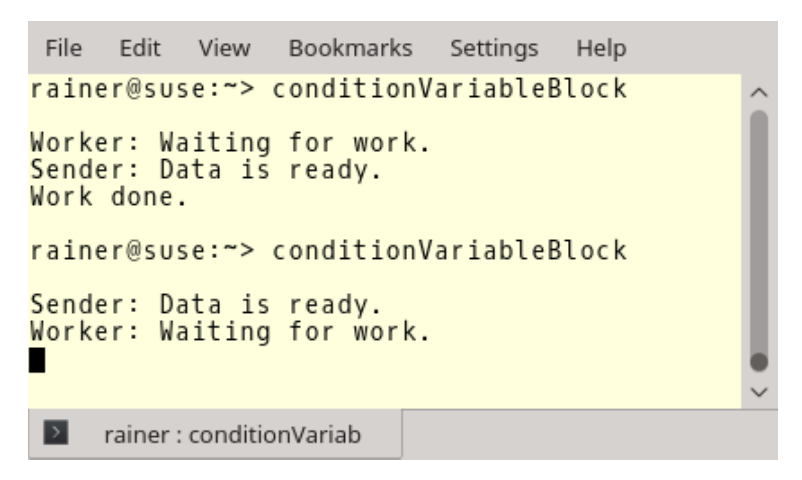
现在就很清楚了，谓词是无状态条件变量，所以等待过程中总是检查谓词。条件变量有两个已知有害现象：未唤醒和伪唤醒。
未唤醒和伪唤醒
未唤醒
该现象是发送方在接收方到达其等待状态之前发送通知，结果是通知丢失了。C++标准将条件变量描述为同步机制：“条件变量类是同步原语，可用于阻塞一个线程，或同时阻塞多个线程……”所以通知丢失了，接收者就会持续等待……
伪唤醒
还有一种情况，就会没有发通知，但接收方会被唤醒。使用POSIX Threads和 Windows API时，都会出现这样的现象。伪唤醒的真相，很可能是本来就没有处于休眠状态。这意味着，在被唤醒的线程有机会运行之前，另一个线程早就等候多时了。
等待线程的工作流程
等待线程的工作流程相当复杂。
下面是来自前面示例conditionVariable.cpp的19和20行。
std::unique_lock<std::mutex> lck(mutex_);
condVar.wait(lck, []{ return dataReady; });
上面两行与下面四行等价：
std::unique_lock<std::mutex> lck(mutex_);
while ( ![]{ return dataReady; }() {
condVar.wait(lck);
}
首先，必须区分std::unique_lock<std::mutex> lck(mutex_)的第一次调用与条件变量的通知：condVar.wait(lck)。
std::unique_lock<std::mutex> lck(mutex_): 初始化阶段，线程就将互斥量锁定，并对谓词函数[]{ return dataReady;}进行检查。- 谓词返回值：
- true : 线程继续等待。
- false :
condVar.wait()解锁互斥量，并将线程置为等待(阻塞)状态。
condVar.wait(lck): 如果condition_variable condVar处于等待状态，并获得通知或伪唤醒处于运行状态，则执行以下步骤：- 线程解除阻塞，重新获得互斥锁。
- 检查谓词函数。
- 当谓词函数返回值为：
- true : 线程继续工作。
- false :
condVar.wait()解锁互斥量，并将线程置为等待(阻塞)状态。
即使共享变量是原子的，也必须在互斥锁保护下进行修改，以便将正确地内容告知等待的线程。
使用互斥锁来保护共享变量
即使将
dataReady设置为原子变量，也必须在互斥锁的保护下进行修改；如果没有，对于等待线程来说dataReady的内容就可能是错的，此竞争条件可能导致死锁。让我们再次查看下等待的工作流，并假设deadReady是一个原子变量，在不受互斥量mutex_保护时进行修改的情况。std::unique_lock<std::mutex> lck(mutex_); while ( ![]{ return dataReady.load(); }() { // time window condVar.wait(lck); }假设在条件变量
condVar，在不处于等待状态时发送通知。这样，线程执行到第2行和第4行之间时(参见注释时间窗口)会丢失通知。之后，线程返回到等待状态，可能会永远休眠。如果
dataReady被互斥锁保护，就不会发生这种情况。由于与互斥锁能够同步线程，只有在接收线程处于等待状态的情况下才会发送通知。
大多数用例中，可以使用任务，用简单的方式同步线程。“任务-通知”章节中，将条件变量和任务进行了对比。
任务
除了线程之外，C++还有可以异步处理任务，这种方式处理任务需要包含<future>头文件。任务由一个参数化工作包和两个组件组成：promise和future，两者构建一条数据通道。promise执行工作包并将结果放入数据通道，对应的future可以获取结果，两个通信端可以在不同的线程中运行。特别的是future可以在之后的某个时间点获取结果，所以通过promise计算结果与通过future查询结果的步骤是分开的。
将任务视为通信端间的数据通道
任务的行为类似于通信点之间的数据通道。数据通道的一端称为promise，另一端称为future。这些端点可以存在于相同的线程中，也可以存在于不同的线程中。promise将其结果放入数据通道，future会在晚些时候把结果取走。

任务 vs. 线程
任务与线程有很大的不同。
// asyncVersusThread.cpp
#include <future>
#include <thread>
#include <iostream>
int main() {
std::cout << std::endl;
int res;
std::thread t([&] {res = 2000 + 11; });
t.join();
std::cout << "res: " << res << std::endl;
auto fut = std::async([] {return 2000 + 11; });
std::cout << "fut.get(): " << fut.get() << std::endl;
std::cout << std::endl;
}
线程t和std::async异步调用函数同时计算2000和11的和。主线程通过共享变量res获取其线程t的计算结果，并在第14行中显示它。第16行中，使用std::async在发送方(promise)和接收方(future)之间创建数据通道。future 变量使用fut.get()(第17行)，通过数据通道获得计算结果。fut.get 为阻塞调用。
下面是程序输出的结果：
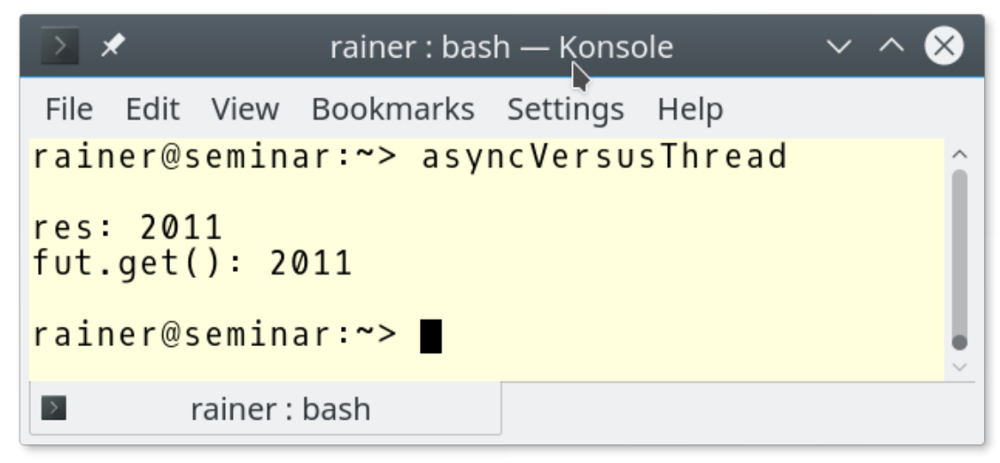
基于这个程序，我想强调线程和任务之间的区别。
任务 vs. 线程
| 标准 | 线程 | 任务 |
|---|---|---|
| 构成元素 | 创建线程和子线程 | promise和future |
| 通讯方式 | 共享变量 | 通信通道 |
| 创建线程 | 必定创建 | 可选 |
| 同步方式 | 通过join()(等待) | 使用get阻塞式调用 |
| 线程中的异常 | 子线程和创建线程终止 | 返回promise的值 |
| 通信类型 | 变量值 | 变量值、通知和异常 |
线程需要包含<thread>头文件，任务需要包含<future>头文件。
创建线程和子线程之间的通信需要使用共享变量，任务通过其隐式的数据通道保护数据通信。因此，任务不需要互斥锁之类的保护机制。
虽然，可以使用共享变量(的可变)来在子线程及其创建线程之间进行通信，但任务的通信方式更为明确。future只能获取一次任务的结果(通过调用fut.get())，多次调用它会导致未定义的行为(而std::shared_future可以查询多次)。
创建线程需要等待子线程汇入。而使用fut.get()时，该调用将一直阻塞，直到获取结果为止。
如果子线程中抛出异常，创建的线程将终止，创建者和整个进程也将终止。相反，promise可以将异常发送给future，而future必须对异常进行处理。
一个promise可以对应于一个或多个future。它可以发送值、异常，或者只是通知，可以使用它们替换条件变量。
std::async 是创建future最简单的方法。
std::async
std::async的行为类似于异步函数调用，可调用带有参数的函数。std::async是一个可变参数模板，因此可以接受任意数量的参数。对std::async的调用会返回一个future 的对象fut。可以通过fut.get()获得结果。
std::async应该首选
C++运行时决定
std::async是否在独立的线程中执行，决策可能取决于可用的CPU内核的数量、系统的利用率或工作包的大小。通过使用std::async，只需要指定运行的任务，C++运行时会自动管理线程。
可以指定std::async的启动策略。
##启动策略
使用启动策略，可以显式地指定异步调用应该在同一线程(std::launch::deferred)中执行，还是在不同线程(std::launch::async)中执行。
及早求值与惰性求值是计算结果表达式的两种策略。在及早求值的情况下，立即计算表达式，而在惰性求值 的情况下，仅在需要时才计算表达式。及早求值通常称为贪婪求值，而惰性求值通常称为按需调用。使用惰性求值，可以节省时间和计算资源。
调用auto fut = std::async(std::launch::deferred，…)的特殊之处在于，promise可能不会立即执行，调用fut.get()时才执行对应的promise 。这意味着，promise只在future调用fut.get()时计算得到结果。
// asyncLazy.cpp
#include <chrono>
#include <future>
#include <iostream>
int main() {
std::cout << std::endl;
auto begin = std::chrono::system_clock::now();
auto asyncLazy = std::async(std::launch::deferred,
[] {return std::chrono::system_clock::now(); });
auto asyncEager = std::async(std::launch::async,
[] {return std::chrono::system_clock::now(); });
std::this_thread::sleep_for(std::chrono::seconds(1));
auto lazyStart = asyncLazy.get() - begin;
auto eagerStart = asyncEager.get() - begin;
auto lazyDuration = std::chrono::duration<double>(lazyStart).count();
auto eagerDuration = std::chrono::duration<double>(eagerStart).count();
std::cout << "asyncLazy evaluated after : " << lazyDuration
<< " seconds." << std::endl;
std::cout << "asyncEager evaluated after : " << eagerDuration
<< " seconds." << std::endl;
std::cout << std::endl;
}
两个std::async调用(第13行和第16行)都返回当前时间点。但是，第一个调用是lazy，第二个调用是eager。第21行中的asyncLazy.get()调用触发了第13行promise的执行——短睡一秒(第19行)。这对于asyncEager来说是不存在的，asyncEager.get()会立即获取执行结果。
下面就是该程序输出的结果：

不必把future绑定到变量上。
发后即忘(Fire and Forget)
发后即忘是比较特殊的future。因为其future不受某个变量的约束，所以只是在原地执行。对于一个发后即忘的future，相应的promise运行在一个不同的线程中，所以可以立即开始(这是通过std::launch::async策略完成的)。
我们对普通的future和发后即忘的future进行比较。
auto fut= std::async([]{ return 2011; });
std::cout << fut.get() << std::endl;
std::async(std::launch::async,
[]{ std::cout << "fire and forget" << std::endl; });
发后即忘的future看起来很有美好，但有一个很大的缺点。std::async创建的future会等待promise完成，才会进行析构。这种情况下，等待和阻塞就没有太大的区别了。future的析构函数会中阻塞程序的进程，当使用发后即忘的future时，这一点变得更加明显，看起来程序上是并发的，但实际上是串行运行的。
// fireAndForgetFutures.cpp
#include <chrono>
#include <future>
#include <iostream>
#include <thread>
int main() {
std::cout << std::endl;
std::async(std::launch::async, [] {
std::this_thread::sleep_for(std::chrono::seconds(2));
std::cout << "first thread" << std::endl;
});
std::async(std::launch::async, [] {
std::this_thread::sleep_for(std::chrono::seconds(2));
std::cout << "second thread" << std::endl; }
);
std::cout << "main thread" << std::endl;
std::cout << std::endl;
}
程序在线程中执行两个promise，这样就会产生发后即忘的future。future在析构函数中阻塞线程，直到相关的promise完成。promise是按照源代码顺序执行的，执行顺序与执行时间无关。

std::async是一种方便的机制，可用于在分解较大的计算任务。
并行计算
标量乘积的计算可分布在四个异步调用中。
// dotProductAsync.cpp
#include <iostream>
#include <future>
#include <random>
#include <vector>
#include <numeric>
using namespace std;
static const int NUM = 100000000;
long long getDotProduct(vector<int>& v, vector<int>& w) {
auto vSize = v.size();
auto future1 = async([&] {
return inner_product(&v[0], &v[vSize / 4], &w[0], 0LL);
});
auto future2 = async([&] {
return inner_product(&v[vSize / 4], &v[vSize / 2], &w[vSize / 4], 0LL);
});
auto future3 = async([&] {
return inner_product(&v[vSize / 2], &v[vSize * 3 / 4], &w[vSize / 2], 0LL);
});
auto future4 = async([&] {
return inner_product(&v[vSize * 3 / 4], &v[vSize], &w[vSize * 3 / 4], 0LL);
});
return future1.get() + future2.get() + future3.get() + future4.get();
}
int main() {
cout << endl;
random_device seed;
// generator
mt19937 engine(seed());
// distribution
uniform_int_distribution<int> dist(0, 100);
// fill the vector
vector<int> v, w;
v.reserve(NUM);
w.reserve(NUM);
for (int i = 0; i < NUM; ++i) {
v.push_back(dist(engine));
w.push_back(dist(engine));
}
cout << "getDotProduct(v, w): " << getDotProduct(v, w) << endl;
cout << endl;
}
该程序使用了随机库和时间库，创建两个向量v和w并用随机数填充(第50-56行)，每个向量添加(第53 - 56行)1亿个元素。第54和55行中的dist(engine)生成均匀分布在0到100之间的随机数。标量乘积的计算在getDotProduct中进行(第13 - 34行)。内部实现中，std::async使用标准库算法std::inner_product。最后，使用future获取结果进行相加，就得到了最终结果。
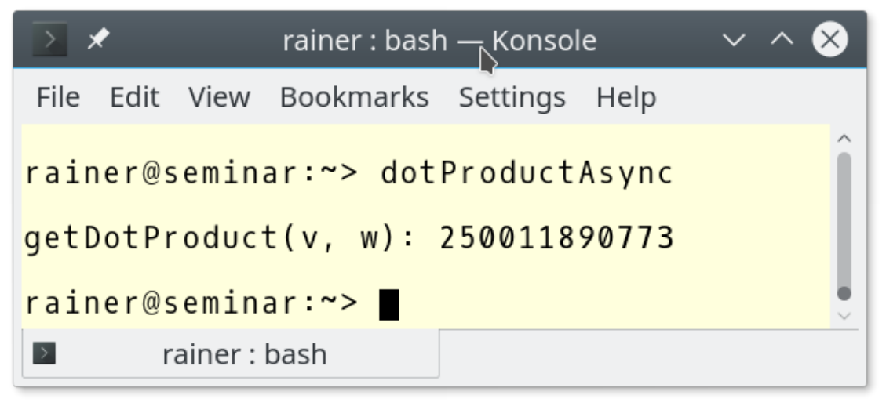
std::packaged_task通常也用于并发。
std::packaged_task
std::packaged_task是用于异步调用的包装器。通过pack.get_future() 可以获得相关的future。可以使用可调用操作符pack(pack())执行std::packaged_task。
处理std::packaged_task通常包括四个步骤:
I. 打包:
std::packaged_task<int(int, int)> sumTask([](int a, int b){ return a + b; });
II. 创建future:
std::future<int> sumResult= sumTask.get_future();
III. 执行计算:
sumTask(2000, 11);
IV. 查询结果:
sumResult.get();
下面的示例，展示了这四个步骤。
// packagedTask.cpp
#include <utility>
#include <future>
#include <iostream>
#include <thread>
#include <deque>
class SumUp {
public:
int operator()(int beg, int end) {
long long int sum{ 0 };
for (int i = beg; i < end; ++i) sum += i;
return static_cast<int>(sum);
}
};
int main() {
std::cout << std::endl;
SumUp sumUp1;
SumUp sumUp2;
SumUp sumUp3;
SumUp sumUp4;
// wrap the task
std::packaged_task<int(int, int)> sumTask1(sumUp1);
std::packaged_task<int(int, int)> sumTask2(sumUp2);
std::packaged_task<int(int, int)> sumTask3(sumUp3);
std::packaged_task<int(int, int)> sumTask4(sumUp4);
// create the futures
std::future<int> sumResult1 = sumTask1.get_future();
std::future<int> sumResult2 = sumTask2.get_future();
std::future<int> sumResult3 = sumTask3.get_future();
std::future<int> sumResult4 = sumTask4.get_future();
// push the task on the container
std::deque<std::packaged_task<int(int, int)>> allTasks;
allTasks.push_back(std::move(sumTask1));
allTasks.push_back(std::move(sumTask2));
allTasks.push_back(std::move(sumTask3));
allTasks.push_back(std::move(sumTask4));
int begin{ 1 };
int increment{ 2500 };
int end = begin + increment;
// preform each calculation in a separate thread
while (!allTasks.empty()) {
std::packaged_task<int(int, int)> myTask = std::move(allTasks.front());
allTasks.pop_front();
std::thread sumThread(std::move(myTask), begin, end);
begin = end;
end += increment;
sumThread.detach();
}
// pick up the results
auto sum = sumResult1.get() + sumResult2.get() +
sumResult3.get() + sumResult4.get();
std::cout << "sum of 0 .. 10000 = " << sum << std::endl;
std::cout << std::endl;
}
这段程序的是计算从0到10000的整数和。创建四个std::packaged_task的对象，并且每个std::packaged_task有自己的线程，并使用future来汇总结果。当然，也可以直接使用Gaußschen Summenformel(高斯求和公式)。真奇怪，我没有找到英文网页。(译者注：打开网页就是最熟悉的高斯求和公式，也就是等差数列求和公式。翻了下维基百科，确实没有相关的英文页面。)
I. 打包任务：程序将工作包打包进std::packaged_task(第28 - 31行)的实例中，工作包就是SumUp的实例(第9 - 16行)，使用函数操作符完成任务(第11 - 15行)。函数操作符将beg到end - 1的所有整数相加并返回结果。第28 - 31行中的std::packaged_task实例可以处理需要两个int参数的函数调用，并返回一个int: int(int, int)类型的任务包。
II.创建future：第34到37行中，使用std::packaged_task创建future对象，这时std::packaged_task对象属于通信通道中的promise。future的类型有明确定义：std::future<int> sumResult1 = sumTask1.get_future()，也可以让编译器来确认future的具体类型：auto sumResult1 sumTask1.get_future()。
III. 进行计算：开始计算。将任务包移动到std::deque(第40 - 44行)中，while循环(第51 - 58行)会执行每个任务包。为此，将std::deque的队头任务包移动到一个std::packaged_task实例中(第52行)，并将这个实例移动到一个新线程中(第54行)，并让这个线程在后台运行(第57行)。因为packaged_task对象不可复制的，所以会在52和54行中使用move语义。这个限制不仅适用于所有的promise实例，但也适用于future和线程实例。但有一个例外：std::shared_future。
IV. 查询结果：最后一步中，从每个future获取计算的结果，并把它们加起来(第61行)。

下表展示std::packaged_task pack的接口
| 成员函数 | 函数描述 |
|---|---|
pack.swap(pack2)和std::swap(pack, pack2) | 交换对象 |
pack.valid() | 检查对象中的函数是否合法 |
pack.get_future() | 返回future |
pack.make_ready_at_thread_exit(ex) | 执行的函数，如果线程还存在，那么结果还是可用的 |
pack.reset() | 重置任务的状态，擦除之前执行的结果 |
与std::async或std::promise相比，std::packaged_task可以复位并重复使用。下面的程序展示了std::packaged_task的“特殊”使用方式。
// packagedTaskReuse.cpp
#include <functional>
#include <future>
#include <iostream>
#include <utility>
#include <vector>
void calcProducts(std::packaged_task<int(int, int)>& task,
const std::vector<std::pair<int, int>>& pairs) {
for (auto& pair : pairs) {
auto fut = task.get_future();
task(pair.first, pair.second);
std::cout << pair.first << " * " << pair.second << " = " << fut.get()<<
std::endl;
task.reset();
}
}
int main() {
std::cout << std::endl;
std::vector<std::pair<int, int>> allPairs;
allPairs.push_back(std::make_pair(1, 2));
allPairs.push_back(std::make_pair(2, 3));
allPairs.push_back(std::make_pair(3, 4));
allPairs.push_back(std::make_pair(4, 5));
std::packaged_task<int(int, int)> task{ [](int fir, int sec) {
return fir * sec; }
};
calcProducts(task, allPairs);
std::cout << std::endl;
std::thread t(calcProducts, std::ref(task), allPairs);
t.join();
std::cout << std::endl;
}
函数calcProduct(第9行)有两个参数：task和pairs。使用任务包task来计算pairs中的每个整数对的乘积(第13行)，并在第16行重置任务task。这样，calcProduct就能在主线程(第34行)和另外开启的线程(第38行)中运行。下面是程序的输出。

std::promise和std::future
std::promise和std::future可以完全控制任务。
promise和future是一对强有力的组合。promise可以将值、异常或通知放入数据通道。一个promise可以对应多个std::shared_future对象。
下面是std::promise和std::future用法的示例。两个通信端点都可以在不同的的线程中，因此通信可以在线程间发生。
// promiseFuture.cpp
#include <future>
#include <iostream>
#include <thread>
#include <utility>
void product(std::promise<int>&& intPromise, int a, int b) {
intPromise.set_value(a * b);
}
struct Div {
void operator()(std::promise<int>&& intPromise, int a, int b) const {
intPromise.set_value(a / b);
}
};
int main() {
int a = 20;
int b = 10;
std::cout << std::endl;
// define the promises
std::promise<int> prodPromise;
std::promise<int> divPromise;
// get the futures
std::future<int> prodResult = prodPromise.get_future();
std::future<int> divResult = divPromise.get_future();
// calculate the result in a separate thread
std::thread prodThread(product, std::move(prodPromise), a, b);
Div div;
std::thread divThread(div, std::move(divPromise), a, b);
// get the result
std::cout << "20*10 = " << prodResult.get() << std::endl;
std::cout << "20/10 = " << divResult.get() << std::endl;
prodThread.join();
divThread.join();
std::cout << std::endl;
}
将函数product(第8 -10行)、prodPromise(第32行)以及数字a和b放入线程Thread prodThread(第36行)中。prodThread的第一个参数需要一个可调用的参数，上面程序中就是函数乘积函数。函数需要一个类型右值引用的promise(std::promise<int>&& intPromise)和两个数字。std::move(第36行)创建一个右值引用。剩下的就简单了，divThread(第38行)将a和b分开传入。
future通过prodResult.get()和divResult.get()获取结果
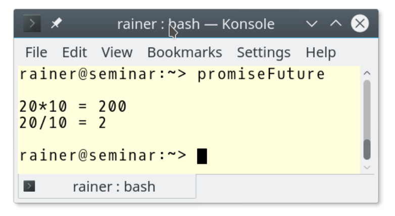
std::promise
std::promise允许设置一个值、一个通知或一个异常。此外，promise可以以延迟的方式提供结果。
std::promise prom的成员函数
| 成员函数 | 函数描述 |
|---|---|
prom.swap(prom2)和std::swap(prom, prom2) | 交换对象 |
prom.get_future() | 返回future |
prom.set_value(val) | 设置值 |
prom.set_exception(ex) | 设置异常 |
prom.set_value_at_thread_exit(val) | promise退出前存储该值 |
prom.set_exception_at_thread_exit(ex) | promise退出前存储该异常 |
如果多次对promise设置值或异常，则会抛出std::future_error。
std::future
std::future可以完成的事情有：
- 从promise中获取值。
- 查询promise值是否可获取。
- 等待promise通知，这种等待可以用一个时间段或一个绝对的时间点来完成。
- 创建共享future(
std::shared_future)。
future实例fut的成员函数
| 成员函数 | 函数描述 |
|---|---|
fut.share() | 返回std::shared_future |
fut.get() | 返回可以是值或异常 |
fut.valid() | 检查当前实例是否可用调用fut.get()。使用get()之后，返回false |
fut.wait() | 等待结果 |
fut.wait_for(relTime) | 在relTime时间段内等待获取结果，并返回std:: future_status实例 |
fut.wait_until(absTime) | 在absTime时间点前等待获取结果，并返回std:: future_status实例 |
与wait不同，wait_for和wait_until会返回future的状态。
std::future_status
future和共享future的wait_for和wait_until成员函数将返回其状态。有三种可能:
enum class future_status {
ready,
timeout,
deferred
};
下表描述了每种状态:
| 状态 | 描述 |
|---|---|
| deferred | 函数还未运行 |
| ready | 结果已经准备就绪 |
| timeout | 结果超时得到，视为过期 |
使用wait_for或wait_until可以一直等到相关的promise完成。
// waitFor.cpp
#include <iostream>
#include <future>
#include <thread>
#include <chrono>
using namespace std::literals::chrono_literals;
void getAnswer(std::promise<int> intPromise) {
std::this_thread::sleep_for(3s);
intPromise.set_value(42);
}
int main() {
std::cout << std::endl;
std::promise<int> answerPromise;
auto fut = answerPromise.get_future();
std::thread prodThread(getAnswer, std::move(answerPromise));
std::future_status status{};
do {
status = fut.wait_for(0.2s);
std::cout << "... doing something else" << std::endl;
} while (status != std::future_status::ready);
std::cout << std::endl;
std::cout << "The Answer: " << fut.get() << '\n';
prodThread.join();
std::cout << std::endl;
}
在futurefut在等待promise时，可以执行其他操作。
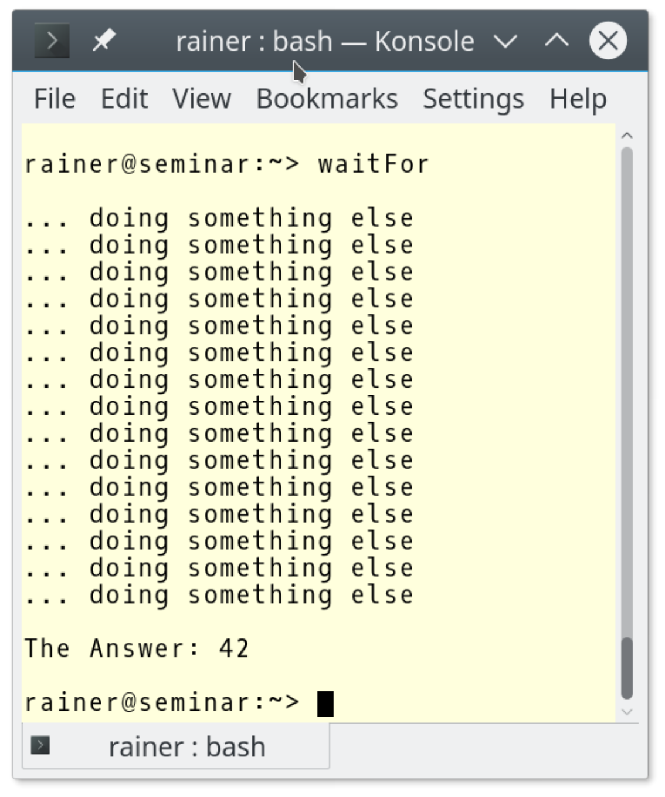
如果多次获取futurefut的结果，会抛出std::future_error异常。
promise和future是一对一的关系，而std::shared_future支持一个promise 对应多个future。
std::shared_future
创建std::shared_future 的两种方式：
- 通过promise实例
prom创建std::shared_future:std::shared_future<int> fut = prom.get_future()。 - 使用
fut的fut.share()进行创建。执行了fut.share()后，fut.valid()会返回false。
共享future是与相应的promise相关联的，可以获取promise的结果。共享future与std::future有相同的接口。
除了有std::future的功能外，std::shared_future还允许和其他future查询关联promise的值。
std::shared_future的操作很特殊，下面的代码中就直接创建了一个std::shared_future。
// sharedFuture.cpp
#include <future>
#include <iostream>
#include <thread>
#include <utility>
std::mutex coutMutex;
struct Div {
void operator()(std::promise<int>&& intPromise, int a, int b) {
intPromise.set_value(a / b);
}
};
struct Requestor {
void operator()(std::shared_future<int> shaFut) {
// lock std::cout
std::lock_guard<std::mutex> coutGuard(coutMutex);
// get the thread id
std::cout << "threadId(" << std::this_thread::get_id() << "): ";
std::cout << "20/10= " << shaFut.get() << std::endl;
}
};
int main() {
std::cout << std::endl;
// define the promises
std::promise<int> divPromise;
// get the futures
std::shared_future<int> divResult = divPromise.get_future();
// calculate the result in a separate thread
Div div;
std::thread divThread(div, std::move(divPromise), 20, 10);
Requestor req;
std::thread sharedThread1(req, divResult);
std::thread sharedThread2(req, divResult);
std::thread sharedThread3(req, divResult);
std::thread sharedThread4(req, divResult);
std::thread sharedThread5(req, divResult);
divThread.join();
sharedThread1.join();
sharedThread2.join();
sharedThread3.join();
sharedThread4.join();
sharedThread5.join();
std::cout << std::endl;
}
promise和future的工作包都是函数对象。第46行中将divPromise移动到线程divThread中执行，因此会将std::shared_future复制到5个线程中(第49 - 53行)。与只能移动的std::future对象不同，可以std::shared_future对象可以进行复制。
主线程在第57到61行等待子线程完成它们的任务。

前面提到过，可以通过使用std::future的成员函数创建std::shared_future。我们把上面的代码改一下。
// sharedFutureFromFuture.cpp
#include <future>
#include <iostream>
#include <thread>
#include <utility>
std::mutex coutMutex;
struct Div {
void operator()(std::promise<int>&& intPromise, int a, int b) {
intPromise.set_value(a / b);
}
};
struct Requestor {
void operator()(std::shared_future<int> shaFut) {
// lock std::cout
std::lock_guard<std::mutex> coutGuard(coutMutex);
// get the thread id
std::cout << "threadId(" << std::this_thread::get_id() << "): ";
std::cout << "20/10= " << shaFut.get() << std::endl;
}
};
int main() {
std::cout << std::boolalpha << std::endl;
// define the promises
std::promise<int> divPromise;
// get the futures
std::future<int> divResult = divPromise.get_future();
std::cout << "divResult.valid(): " << divResult.valid() << std::endl;
// calculate the result in a separate thread
Div div;
std::thread divThread(div, std::move(divPromise), 20, 10);
std::cout << "divResult.valid(): " << divResult.valid() << std::endl;
std::shared_future<int> sharedResult = divResult.share();
std::cout << "divResult.valid(): " << divResult.valid() << "\n\n";
Requestor req;
std::thread sharedThread1(req, sharedResult);
std::thread sharedThread2(req, sharedResult);
std::thread sharedThread3(req, sharedResult);
std::thread sharedThread4(req, sharedResult);
std::thread sharedThread5(req, sharedResult);
divThread.join();
sharedThread1.join();
sharedThread2.join();
sharedThread3.join();
sharedThread4.join();
sharedThread5.join();
std::cout << std::endl;
}
std::future(第44行和第50行)前两次调用divResult.valid()都返回true。第52行执行divResult.share()之后，因为该操作使得状态转换为共享，所以在执行到第54行时，程序会返回false。

异常
如果std::async或std::packaged_task的工作包抛出错误，则异常会存储在共享状态中。当futurefut调用fut.get()时，异常将重新抛出。
std::promise prom提供了相同的功能，但是它有一个成员函数prom.set_value(std::current_exception())可以将异常设置为共享状态。
数字除以0是未定义的行为，函数executeDivision显示计算结果或异常。
// promiseFutureException.cpp
#include <exception>
#include <future>
#include <iostream>
#include <thread>
#include <utility>
#ifdef WIN32
#include <string>
#endif
struct Div {
void operator()(std::promise<int>&& intPromise, int a, int b){
try {
if (b == 0) {
std::string errMess = std::string("Illegal division by zero: ") +
std::to_string(a) + "/" + std::to_string(b);
throw std::runtime_error(errMess);
}
intPromise.set_value(a / b);
}
catch (...) {
intPromise.set_exception(std::current_exception());
}
}
};
void executeDivision(int nom, int denom) {
std::promise<int> divPromise;
std::future<int> divResult = divPromise.get_future();
Div div;
std::thread divThread(div, std::move(divPromise), nom, denom);
// get the result or the exception
try {
std::cout << nom << "/" << denom << " = " << divResult.get() << std::endl;
}
catch (std::runtime_error& e) {
std::cout << e.what() << std::endl;
}
divThread.join();
}
int main() {
std::cout << std::endl;
executeDivision(20, 0);
executeDivision(20, 10);
std::cout << std::endl;
}
这个程序中，promise会处理分母为0的情况。如果分母为0，则在第24行中将异常设置为返回值：intPromise.set_exception(std::current_exception())。future需要在try-catch中处理异常(第37 - 42行)。
下面是程序的输出。
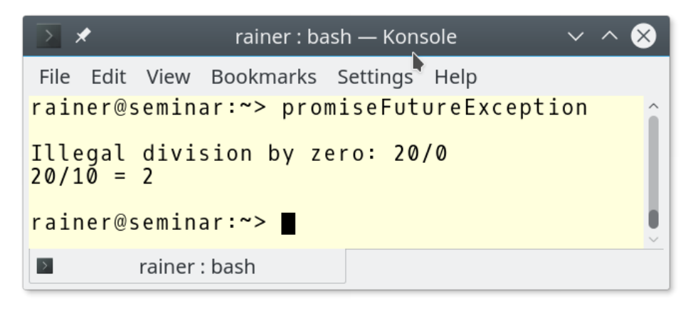
std::current_exception和std::make_exception_ptr
std::current_exception()捕获当前异常对象，并创建一个std:: exception_ptr。std::exception_ptr保存异常对象的副本或引用。如果在没有异常处理时调用该函数，则返回一个空的std::exception_ptr。为了不在try/catch中使用
intPromise.set_exception(std::current_exception())检索抛出的异常，可以直接调用intPromise.set_exception(std::make_exception_ptr(std::runtime_error(errMess)))。
如果在std::promise销毁之前没有调用设置类的成员函数，或是在std::packaged_task调用它，那么std::future_error异常和错误代码std::future_errc::broken_promise将存储在共享future中。
通知
任务是条件变量的一种替代方式。如果使用promise和future来同步线程，它们与条件变量有很多相同之处。大多数时候，promise和future是更好的选择。
在看例子之前，先了解下任务和条件变量的差异。
| 对比标准 | 条件变量 | 任务 |
|---|---|---|
| 多重同步 | Yes | No |
| 临界区保护 | Yes | No |
| 接收错误处理机制 | No | Yes |
| 伪唤醒 | Yes | No |
| 未唤醒 | Yes | No |
与promise和future相比，条件变量的优点是可以多次同步线程，而promise只能发送一次通知，因此必须使用更多promise和future对，才能模拟出条件变量的功能。如果只同步一次，那条件变量正确的使用方式或许将更具大的挑战。promise和future对不需要共享变量，所以不需要锁，并且不大可能出现伪唤醒或未唤醒的情况。除了这些，任务还可以处理异常。所以，在同步线程上我会更偏重于选择任务，而不是条件变量。
还记得使用条件变量有多难吗？如果忘记了，这里展示了两个线程同步所需的关键部分。
void waitingForWork(){
std::cout << "Worker: Waiting for work." << std::endl;
std::unique_lock<std::mutex> lck(mutex_);
condVar.wait(lck, []{ return dataReady; });
doTheWork();
std::cout << "Work done." << std::endl;
}
void setDataReady(){
std::lock_guard<std::mutex> lck(mutex_);
dataReady=true;
std::cout << "Sender: Data is ready." << std::endl;
condVar.notify_one();
}
函数setDataReady为同步通知，函数waitingForWork为同步等待。
使用任务完成相同的工作流程。
// promiseFutureSynchronise.cpp
#include <future>
#include <iostream>
#include <utility>
void doTheWork() {
std::cout << "Processing shared data." << std::endl;
}
void waitingForWork(std::future<void>&& fut) {
std::cout << "Worker: Waiting for work." << std::endl;
fut.wait();
doTheWork();
std::cout << "Work done." << std::endl;
}
void setDataReady(std::promise<void>&& prom) {
std::cout << "Sender: Data is ready." << std::endl;
prom.set_value();
}
int main() {
std::cout << std::endl;
std::promise<void> sendReady;
auto fut = sendReady.get_future();
std::thread t1(waitingForWork, std::move(fut));
std::thread t2(setDataReady, std::move(sendReady));
t1.join();
t2.join();
std::cout << std::endl;
}
是不是非常简单？
通过sendReady(第32行)获得了一个futurefut(第33行)，promise使用其返回值void (std::promise<void> sendReady)进行通信，并且只能够发送通知。两个通信端点分别移动到线程t1和t2中(第35行和第36行)，调用fut.wait()(第15行)等待promise的通知(prom.set_value()(第24行))。
程序结构和输出，与条件变量章节程序的输出一致。

标准库的并行算法
标准模板库有100多种搜索、计数和范围操作算法。C++17中，重载了69个，并新添加了8个。这些重载版本和新算法，可以使用执行策略来调用。
执行策略可以指定算法串行、并行，还是向量化并行。使用执行策略时，需要包含头文件<execution>。
执行策略
C++17标准中定义了三种执行策略:
std::execution::sequenced_policystd::execution::parallel_policystd::execution::parallel_unsequenced_policy
(译者注：C++20中添加了unsequenced_policy策略)
相应的策略标定了程序应该串行、并行，还是与向量化并行。
std::execution::seq: 串行执行std::execution::par: 多线程并行执行std::execution::par_unseq: 多个线程上并行，可以循环交叉，也能使用SIMD(单指令多数据)
std::execution::par或std::execution::par_unseq允许算法并行或向量化并行。
下面的代码片段展示了所有执行策略的使用方式。
#include <execution>
#include <vector>
#include <algorithm>
int main() {
std::vector<int> v = { 1, 2, 3, 4, 5, 6, 7, 8, 9 };
// standard sequential sort
std::sort(v.begin(), v.end());
// sequential execution
std::sort(std::execution::seq, v.begin(), v.end());
// permitting parallel execution
std::sort(std::execution::par, v.begin(), v.end());
//permitting parallel and vectorized execution
std::sort(std::execution::par_unseq, v.begin(), v.end());
}
示例中，可以使用经典的std::sort(第11行)。C++17中，可以明确指定使用方式：串行(第14行)、并行(第17行)，还是向量化并行(第20行)。
std::is_execution_policy可以检查模板参数T是标准数据类型，还是执行策略类型：std::is_execution_policy<T>::value。如果T是std::execution::sequenced_policy, std::execution::parallel_policy, std::execution::parallel_unsequenced_policy，或已定义的执行策略类型，则表达式结果为true；否则，为false。
并行和向量化执行
算法是否以并行和向量化的方式运行，取决于许多因素。例如：CPU和编译器是否支持SIMD指令，还取决于编译器实现和代码的优化级别。
下面的示例使用循环填充数组。
#include <iostream>
const int SIZE = 8;
int vec[] = { 1, 2, 3, 4, 5, 6, 7, 8 };
int res[] = { 0, 0, 0, 0, 0, 0, 0, 0 };
int main() {
for (int i = 0; i < SIZE; ++i) {
res[i] = vec[i] + 5;
}
for (int i = 0; i < SIZE; ++i) {
std::cout << res[i] << " ";
}
std::cout << std::endl;
}
第12行是这个示例中的关键。我们可以在compiler explorer看一下clang 3.6生成的相应汇编指令。
无优化
汇编指令中，每个加法都是串行进行的。
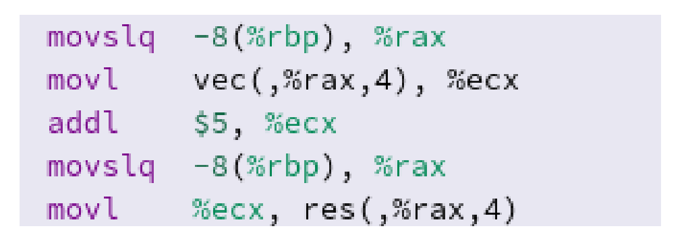
使用最高优化级别
通过使用最高的优化级别-O3，寄存器(如：xmm0)可以容纳128位，或者说是4个整型数字。这样，加法就可以同时在四个元素进行了。
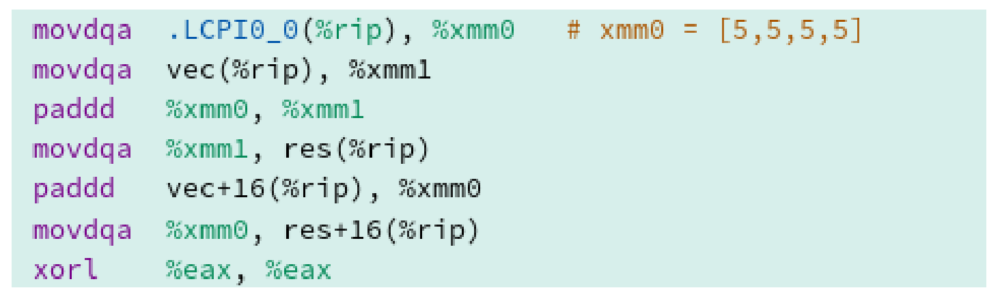
无执行策略算法的重载，与具有串行执行策略std::execution::seq算法的重载在异常处理方面有所不同。
##异常
如果执行策略的算法发生异常，将调用std::terminate。std::terminate调用std::terminate_handler，之后使用std::abort，让异常程序终止。执行策略的算法与调用std::execution::seq执行策略的算法之间没有区别。无执行策略的算法会传播异常，因此可以对异常进行处理。exceptionExecutionPolicy.cpp可以佐证我的观点。
// exceptionExecutionPolicy.cpp
#include <algorithm>
#include <execution>
#include <iostream>
#include <stdexcept>
#include <string>
#include <vector>
int main() {
std::cout << std::endl;
std::vector<int> myVec{ 1,2,3,4,5 };
try {
std::for_each(myVec.begin(), myVec.end(),
[](int) {throw std::runtime_error("Without execution policy"); }
);
}
catch (const std::runtime_error & e) {
std::cout << e.what() << std::endl;
}
try {
std::for_each(std::execution::seq, myVec.begin(), myVec.end(),
[](int) {throw std::runtime_error("With execution policy"); }
);
}
catch (const std::runtime_error & e) {
std::cout << e.what() << std::endl;
}
catch (...) {
std::cout << "Catch-all exceptions" << std::endl;
}
}
第21行可以捕获异常std::runtime_error，但不能捕获第30行中的异常，甚至在第33行中的捕获全部异常也无法捕获相应的异常。
使用新的MSVC编译器，并开启std:c++latest选项，程序会给出期望的输出。

只有第一个异常顺利捕获。
##数据竞争和死锁的风险
并行算法无法避免数据竞争和死锁。
下面的并行代码中，就存在数据竞争。
#include <execution>
#include <vector>
int main() {
std::vector<int> v = { 1, 2, 3 };
int sum = 0;
std::for_each(std::execution::par, v.begin(), v.end(), [&sum](int i) {
sum += i + i;
});
}
代码段中，sum有数据竞争。sum上累加了i + i的和，并且是并发修改的，所以必须保护sum。
#include <execution>
#include <vector>
#include <mutex>
std::mutex m;
int main() {
std::vector<int> v = { 1, 2, 3 };
int sum = 0;
std::for_each(std::execution::par, v.begin(), v.end(), [&sum](int i) {
std::lock_guard<std::mutex> lock(m);
sum += i + i;
});
}
将执行策略更改为std::execution::par_unseq时，会出现条件竞争，并导致死锁。
#include <execution>
#include <vector>
#include <mutex>
std::mutex m;
int main() {
std::vector<int> v = { 1, 2, 3 };
int sum = 0;
std::for_each(std::execution::par_unseq, v.begin(), v.end(), [&sum](int i) {
std::lock_guard<std::mutex> lock(m);
sum += i + i;
});
}
同一个线程上，Lambda函数可能连续两次调用m.lock，这会产生未定义行为，大多数情况下会导致死锁。这里，可以使用原子来避免死锁。
#include <execution>
#include <vector>
#include <mutex>
#include <atomic>
std::mutex m;
int main() {
std::vector<int> v = { 1, 2, 3 };
std::atomic<int> sum = 0;
std::for_each(std::execution::par_unseq, v.begin(), v.end(), [&sum](int i) {
std::lock_guard<std::mutex> lock(m);
sum += i + i;
});
}
因为sum是一个原子计数器，所以将语义放宽也没关系：sum.fetch_add(i * i, std::memory_order_relaxed) .
执行策略可以作为参数传入69个STL重载算法中，以及C++17添加的8个新算法中。
算法
下面是69个算法的并行版本。
std::adjacent_difference | std::adjacent_find | std::all_of | std::any_of |
|---|---|---|---|
std::copy | std::copy_if | std::copy_n | std::count |
std::count_if | std::equal | std::fill | std::fill_n |
std::find | std::find_end | std::find_first_of | std::find_if |
std::find_if_not | std::generate | std::generate_n | std::includes |
std::inner_product | std::inplace_merge | std::is_heap | std::is_heap_until |
std::is_partitioned | std::is_sorted | std::is_sorted_until | std::lexicographical_compare |
std::max_element | std::merge | std::min_element | std::minmax_element |
std::mismatch | std::move | std::none_of | std::nth_element |
std::partial_sort | std::partial_sort_copy | std::partition | std::partition_copy |
std::remove | std::remove_copy | std::remove_copy_if | std::remove_if |
std::replace | std::replace_copy | std::replace_copy_if | std::replace_if |
std::reverse | std::reverse_copy | std::rotate | std::rotate_copy |
std::search | std::search_n | std::set_difference | std::set_intersection |
std::set_symmetric_difference | std::set_union | std::sort | std::stable_partition |
std::stable_sort | std::swap_ranges | std::transform | std::uninitialized_copy |
std::uninitialized_copy_n | std::uninitialized_fill | std::uninitialized_fill_n | std::unique |
std::unique_copy |
除了以上这些算法，还有8种新算法。
新算法
新算法包含在std命名空间中，std::for_each和std::for_each_n在<algorithm>头文件中声明，其余六种算法在<numeric>头文件中声明。
下面是新算法的概述。
| 算法 | 描述 |
|---|---|
std::for_each | 将一元函数对象应用于引用范围。 |
std::for_each_n | 将一元函数对象应用于引用范围的前n个元素。 |
std::exclusive_scan | 将二元函数对象从左向右应用与引用范围。“排除性”(exclusive)表示第i个输入元素不包含在第i个和内。二元函数对象的第一个参数是之前计算的结果，运算可能以任意顺序进行，并存储中间结果。若二元函数对象不满足结合律，则函数行为不确定。行为与std::partial_sum类似。 |
std::inclusive_scan | 将二元函数对象从左向右应用与引用范围。“包含性”(inclusive)表示第i个输入元素包含于第i个和中。二元函数对象的第一个参数是之前计算的结果，运算可能以任意顺序进行，并存储中间结果。若二元函数对象不满足结合律，则函数行为不确定。行为与std::partial_sum类似 |
std::transform_exclusive_scan | 首先，将一元函数对象应用于引用范围，然后使用std::exclusive_scan。若二元函数对象不满足结合律，则函数行为不确定。 |
std::transform_inclusive_scan | 首先，将一元函数对象应用于引用范围，然后使用std::inclusive_scan。若二元函数对象不满足结合律，则函数行为不确定。 |
std::reduce | 将二元函数对象从左向右应用与引用范围。若二元函数对象不满足交换律或结合律，则函数行为不确定。行为与std::accumulate类似。 |
std::transform_reduce | 首先，将一元函数对象应用于引用范围，然后使用std::reduce。若二元函数对象不满足交换律或结合律，则函数行为不确定。 |
表中的函数描述不大容易理解，若对std::accumulate和std::partial_sum比较了解，那对前缀求和算法应该是非常熟悉。归约算法可以并行使用累加的方式，扫描算法可以并行的使用partial_sum。这就是std::reduce(归约算法)需要满足交换律和结合律的原因。
首先，给出一个算法示例，然后介绍这些函数的功能。示例中，忽略了新的std::for_each算法。与返回一元函数的C++98实现不同，C++17中什么也不返回。std::accumulate从左到右处理元素，而std::reduce可以以任意的顺序处理元素。让我们从使用std::accumulate和std::reduce的小代码段开始，二元函数对象为Lambda函数 [](int a, int b){ return a * b; }。
std::vector<int> v{1, 2, 3, 4};
std::accumulate(v.begin(), v.end(), 1, [](int a, int b){ return a * b; });
std::reduce(std::execution::par, v.begin(), v.end(), 1 ,
[](int a, int b){ return a * b; });
下面两张图显示了std::accumulate和std::reduce的不同策略。
std::accumulate从左开始，依次使用二进制操作符。

与std::accumulate不同，std::reduce以一种不确定的方式使用二元操作符。

结合律允许std::reduce算法计算任意邻接元素对。因为元素顺序可交换，所以中间结果可以按任意顺序计算。
当前可用的算法实现
展示代码之前，必须做个说明。据我所知，本书更新的时候(2018年9月)，并没有完全符合标准的并行STL实现。MSVC 17.8也只是增加了对大约30种算法的支持。
MSVC 17.8中的并行算法
std::adjacent_differencestd::adjacent_findstd::all_ofstd::any_ofstd::countstd::count_ifstd::equalstd::exclusive_scanstd::findstd::find_endstd::find_first_ofstd::find_ifstd::for_eachstd::for_each_nstd::inclusive_scanstd::mismatchstd::none_ofstd::reducestd::removestd::remove_ifstd::searchstd::search_nstd::sortstd::stable_sortstd::transformstd::transform_exclusive_scanstd::transform_inclusive_scanstd::transform_reduce这里使用HPX实现功能，并生成输出，HPX (High-Performance ParalleX)是一种可用于任何规模的并行和分布式应用程序的通用C++运行时系统框架。HPX已经在其的一个名称空间中实现了所有并行STL。
为了完整性，这里是并行STL的部分实现连接:
新算法示例代码
// newAlgorithm.cpp
#include <algorithm>
#include <execution>
#include <numeric>
#include <iostream>
#include <string>
#include <vector>
int main() {
std::cout << std::endl;
// for_each_n
std::vector<int> intVec{ 1,2,3,4,5,6,7,8,9,10 };
std::for_each_n(std::execution::par,
intVec.begin(), 5, [](int& arg) {arg *= arg; });
std::cout << "for_each_n: ";
for (auto v : intVec)std::cout << v << " ";
std::cout << "\n\n";
// exclusive_scan and inclusive_scan
std::vector<int> resVec{ 1,2,3,4,5,6,7,8,9 };
std::exclusive_scan(std::execution::par,
resVec.begin(), resVec.end(), resVec.begin(), 1,
[](int fir, int sec) {return fir * sec; });
std::cout << "exclusive_scan: ";
for (auto v : resVec)std::cout << v << " ";
std::cout << std::endl;
std::vector<int> resVec2{ 1,2,3,4,5,6,7,8,9 };
std::inclusive_scan(std::execution::par,
resVec2.begin(), resVec2.end(), resVec2.begin(),
[](int fir, int sec) {return fir * sec; });
std::cout << "inclusive_scan: ";
for (auto v : resVec2)std::cout << v << " ";
std::cout << "\n\n";
// transform_exclusive_scan and transform_inclusive_scan
std::vector<int> resVec3{ 1,2,3,4,5,6,7,8,9 };
std::vector<int> resVec4(resVec3.size());
std::transform_exclusive_scan(std::execution::par,
resVec3.begin(), resVec3.end(),
resVec4.begin(), 0,
[](int fir, int sec) {return fir + sec; },
[](int arg) {return arg *= arg; });
std::cout << "transform_exclusive_scan: ";
for (auto v : resVec4)std::cout << v << " ";
std::cout << std::endl;
std::vector<std::string> strVec{ "Only", "for","testing", "purpose" };
std::vector<int> resVec5(strVec.size());
std::transform_inclusive_scan(std::execution::par,
strVec.begin(), strVec.end(),
resVec5.begin(), 0,
[](auto fir, auto sec) {return fir + sec; },
[](auto s) {return s.length(); });
std::cout << "transform_inclusive_scan: ";
for (auto v : resVec5) std::cout << v << " ";
std::cout << "\n\n";
// reduce and transform_reduce
std::vector<std::string> strVec2{ "Only", "for", "testing", "purpose" };
std::string res = std::reduce(std::execution::par,
strVec2.begin() + 1, strVec2.end(), strVec2[0],
[](auto fir, auto sec) {return fir + ":" + sec; });
std::cout << "reduce: " << res << std::endl;
std::size_t res7 = std::transform_reduce(std::execution::par,
strVec2.begin(), strVec2.end(),
[](std::string s) {return s.length(); },
0, [](std::size_t a, std::size_t b) {return a + b; });
std::cout << "transform_reduce: " << res7 << std::endl;
std::cout << std::endl;
}
程序在第17行使用了std::vector<int>，在第58行使用了std::vectorstd::string。
第18行中的std::for_each_n将向量的前n个元素映射为2次幂。std::exclusive_scan(第27行)和std::inclusive_scan(第37行)非常相似，两者都对元素应用二元操作。区别在于std::exclusive_scan排除了每个迭代中的最后一个元素。
第48行中的std::transform_exclusive_scan比较难理解。第一步中，使用Lambda函数[](int arg){return arg *= arg;}，对resVec3.begin()到resVec3.end()范围内的每个元素，进行2次幂操作。第二步，对保存中间结果的向量(resVec4)使用二元运算[](int fir, int sec){return fir + sec;}。这样，使用0作为元素求和的初始值，结果放在resVec4.begin()中。
第61行中的std::transform_inclusive_scan类似，而这里操作的是元素的长度。
这里的std::reduce应该比较容易理解，程序中在输入向量的每两个元素之间放置“:”字符，因为结果字符串不应该以“:”字符开头，所以从第二个元素(strVec2.begin() + 1)开始，并使用strVec2[0]作为初始值。
transform_reduce与map_reduce
关于第80行的
std::transform_reduce，我还想多补充两句。首先，C++算法的转换算法，在其他语言中通常称为映射(map)。因此，也可以称std::transform_reduce为std::map_reduce。std::transform_reduce的后端实现，使用的是C++中著名的并行MapReduce算法。相应地，std::transform_reduce在某个范围内使用一元函数(([](std::string s){ return s.length();}))，并将结果归约为一个输出值：[](std::size_t a, std::size_t b){return a+b;}。
下面是程序的输出。

更多的重载
归约和扫描算法的C++实现有很多重载版本。最简版本中，可以在没有二元函数对象和初始元素的情况下使用。如果不使用二元函数对象，则默认将加法作为二元操作符。如果没有指定初始元素，则初始元素取决于使用的算法:
std::inclusive_scan和std::transform_inclusive_scan算法 : 选用第一个元素。std::reduce和std::transform_reduce算法 : 相应类型的构造值std::iterator_traits<InputIt>::value_type{}。
接下来，从函数的角度再来看看这些新算法。
功能性继承
时间宝贵，长话短说：所有的C++新算法在纯函数语言Haskell中都有对应。
std::for_each_n对应map。std::exclusive_scan和std::inclusive_scan分别对应scanl和scanl1。std::transform_exclusive_scan和std::transform_inclusive_scan分别对应map与scan1和scan2的组合。std::reduce对应foldl或foldl1。std::transform_reduce对应于foldl或foldl1与map的组合。
展示Haskell的实际效果之前，先了解下功能上的差异。
- map将一个函数应用于列表。
- foldl和foldl1将一个二元操作符应用于列表，并将该列表的值归约成一个。与foldl1不同，foldl需要一个初始值。
- scanl和scanl1与foldl和foldl1类似，但可以获取计算时的中间结果列表。
- foldl , foldl1 , scanl和scanl1从左向右处理元素。
让我们看一下这些Haskell函数，下面是Haskell解释器的命令行界面。
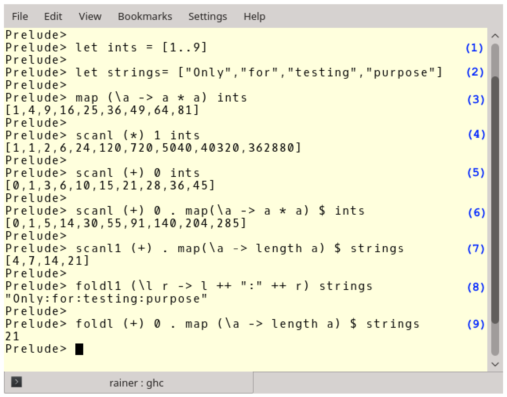
(1)和(2)定义了一个整数列表和一个字符串列表。(3)中将Lambda函数(\a -> a * a)应用到整数列表中。(4)和(5)比较复杂，表达式(4)以1作为乘法的中间元素，乘以(*)所有整数对。表达式(5)做相应的加法运算。理解(6)、(7)和(9)是比较具有挑战性的，必须从右到左读。scanl1(+).map(\a->length)(7)是一个函数组合，点(.)左右是两个函数。第一个函数将每个元素映射为自身长度，第二个函数将长度列表累加。(9)与(7)相似，不同之处在于foldl生成一个值，并需要一个初始值。到这，表达式(8)就好理解了，它连续地用“:”字符将两个字符串连接起来。
性能概况
使用并行STL的首要原因，肯定是性能。
下面的代码就能反映不同执行策略的性能差异。
// parallelSTLPerformance.cpp
#include <algorithm>
#include <cmath>
#include <chrono>
#include <execution>
#include <iostream>
#include <random>
#include <string>
#include <vector>
constexpr long long size = 500'000'000;
const double pi = std::acos(-1);
template <typename Func>
void getExecutionTime(const std::string& title, Func func) {
const auto sta = std::chrono::steady_clock::now();
func();
const std::chrono::duration<double> dur = std::chrono::steady_clock::now() - sta;
std::cout << title << ": " << dur.count() << " sec." << std::endl;
}
int main() {
std::cout << std::endl;
std::vector<double> randValues;
randValues.reserve(size);
std::mt19937 engine;
std::uniform_real_distribution<> uniformDist(0, pi / 2);
for (long long i = 0; i < size; ++i) randValues.push_back(uniformDist(engine));
std::vector<double> workVec(randValues);
getExecutionTime("std::execution::seq", [workVec]()mutable {
std::transform(std::execution::seq, workVec.begin(), workVec.end(),
workVec.begin(),
[](double arg) {return std::tan(arg); }
);
});
getExecutionTime("std::execution::par", [workVec]()mutable {
std::transform(std::execution::par, workVec.begin(), workVec.end(),
workVec.begin(),
[](double arg) {return std::tan(arg); }
);
});
getExecutionTime("std::execution::par_unseq", [workVec]()mutable {
std::transform(std::execution::par_unseq, workVec.begin(), workVec.end(),
workVec.begin(),
[](double arg) {return std::tan(arg); }
);
});
}
parallelSTLPerformance.cpp统计了串行(第39行)、并行(第46行)和向量化并行(第53行)执行策略的耗时。首先，randValues由区间在[0,pi/2)的5亿个数字填充。函数模板getExecutionTime(第16 - 24行)获取标题和Lambda函数，在第20行执行Lambda函数，并显示执行耗时(第22行)。程序使用了三个Lambda函数(第39、46和53行)，它们被声明为mutable。因为Lambda函数修改它的参数workVec，而Lambda函数默认是不能对其进行修改的。如果Lambda函数想要修改，那么就必须声明为mutable。
我的windows笔记本电脑有8个逻辑核心，但并行执行速度要比串行的快10倍以上。
并行执行和并行向量化执行的性能大致相同。Visual C++团队的博客对此进行了解释：使用C++17并行算法更好的性能。Visual C++团队使用相同的方式实现了并行计算和并行策略，所以目前就不要期望par_unseq有更好性能(但未来就不好说了)。
案例研究
了解了内存模型和多线程接口后，现在就要进行实践了，本章会提供一些性能数据作为参考。
电脑配置参考
我用Linux桌面版(GCC 4.8.3)和Windows笔记本电脑(cl.exe 19.00.23506)对程序的性能进行测试，使用优化的64位可执行文件进行测试。Linux PC有四个核心，而Windows PC有两个核心。下面是这两个编译器的详细信息：

读者们应该只将这里的性能数值作为参考。我更喜欢凭直觉判断哪些算法可行，哪些算法不可行，但对Linux和Windows操作系统支持算法的确切数目不感兴趣。我想知道一些算法在不同的操作系统下，是否会有不同的性能表现(译者注：这里作者主要想比较操作系统中的实现，而不是对机器硬件进行比较)。
求向量元素的加和
向std::vector中添加元素最快的方法是哪种？为了得到答案，我准备向std::vector中填充了一亿个数值，这些数在1~10之间均匀分布 。我们的任务是用各种方法计算这些数字的和，并添加执行时间作为性能指标。本节将讨论原子、锁、线程本地数据和任务。
单线程方式
最直接的方式是使用for循环进行数字的添加。
for循环
下面的代码中，第27行进行加和计算。
// calculateWithLoop.cpp
#include <chrono>
#include <iostream>
#include <random>
#include <vector>
constexpr long long size = 100000000;
int main() {
std::cout << std::endl;
std::vector<int>randValues;
randValues.reserve(size);
// random values
std::random_device seed;
std::mt19937 engine(seed());
std::uniform_int_distribution<> uniformDIst(1, 10);
for (long long i = 0; i < size; ++i)
randValues.push_back(uniformDIst(engine));
const auto sta = std::chrono::steady_clock::now();
unsigned long long sum = {};
for (auto n : randValues)sum += n;
const std::chrono::duration<double> dur =
std::chrono::steady_clock::now() - sta;
std::cout << "Time for mySumition " << dur.count()
<< "seconds" << std::endl;
std::cout << "Result: " << sum << std::endl;
std::cout << std::endl;
}
我的电脑可够快？
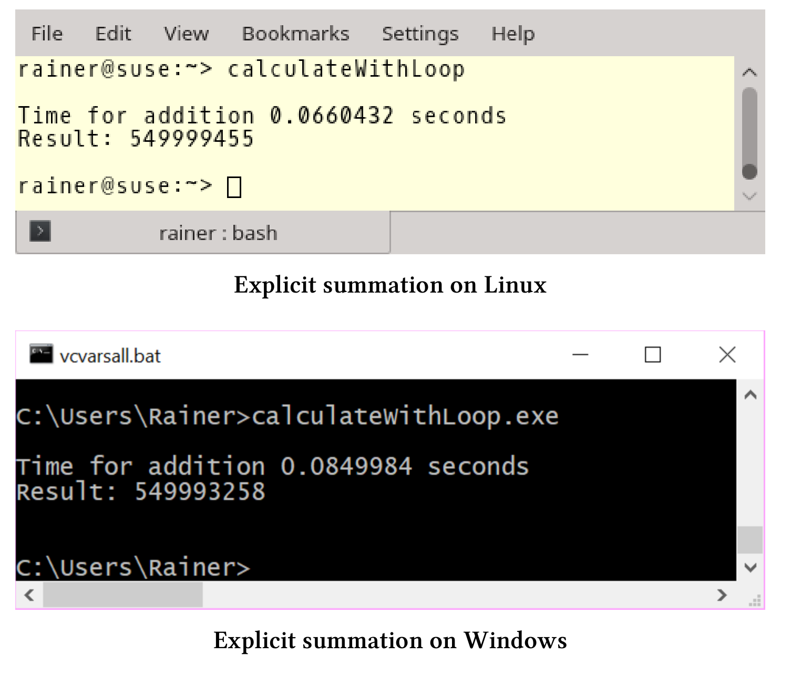
显式地使用循环没什么技术含量。大多数情况下，可以使用标准模板库中的算法。
使用std::accumulate进行加和计算
std::accumulate是计算向量和的正确选择，下面代码展示了std::accumulate的使用方法。完整的源文件可以在本书的参考资料中找到。
// calculateWithStd.cpp
...
const unsigned long long sum = std::accumulate(randValues.begin(),
randValues.end(), 0);
...
Linux上，std::accumulate的性能与for循环的性能大致相同，而在Windows上使用std::accumulate会产生很大的性能收益。

现在有了基线参考时间，就可以继续剩余的两个单线程场景了：使用锁和原子操作。为什么是这两个场景？我们需要有性能数字佐证，在没有竞争的情况下，锁和原子操作对数据进行保护，需要付出多大的性能代价。
使用锁进行保护
如果使用锁保护对求和变量的访问，需要回答两个问题。
- 无争抢的同步锁，需要多大的代价?
- 最优的情况下，锁能有多快？
这里使用std::lock_guard的方式，完整源码可在本书资源中找到。
// calculateWithLock.cpp
...
std::mutex myMutex;
for (auto i: randValues){
std::lock_guard<std::mutex> myLockGuard(myMutex);
sum += i;
}
...
执行时间与预期的一样：对变量sum进行保护后，程序变得很慢。
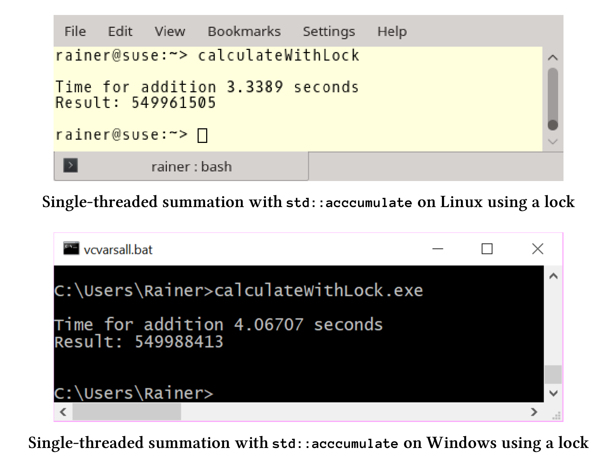
std::lock_guard的方式大约比std::accumulate 慢50-150倍。接下来，让我们来看看原子操作的表现。
使用原子操作进行保护
对于原子操作的问题与锁一样：
- 原子同步的代价有多大?
- 如果没有竞争，原子操作能有多快?
还有一个问题：原子操作和锁的性能有多大差异?
// calculateWithAtomic.cpp
#include <atomic>
#include <chrono>
#include <iostream>
#include <numeric>
#include <random>
#include <vector>
constexpr long long size = 100000000;
int main() {
std::cout << std::endl;
std::vector<int>randValues;
randValues.reserve(size);
// random values
std::random_device seed;
std::mt19937 engine(seed());
std::uniform_int_distribution<> uniformDist(1, 10);
for (long long i = 0; i < size; ++i)
randValues.push_back(uniformDist(engine));
std::atomic<unsigned long long> sum = {};
std::cout << std::boolalpha << "sum.is_lock_free(): "
<< sum.is_lock_free() << std::endl;
std::cout << std::endl;
auto sta = std::chrono::steady_clock::now();
for (auto i : randValues) sum += i;
std::chrono::duration<double> dur = std::chrono::steady_clock::now() - sta;
std::cout << "Time for addition " << dur.count()
<< " seconds" << std::endl;
std::cout << "Result: " << sum << std::endl;
std::cout << std::endl;
sum = 0;
sta = std::chrono::steady_clock::now();
for (auto i : randValues) sum.fetch_add(i);
dur = std::chrono::steady_clock::now() - sta;
std::cout << "Time for addition " << dur.count()
<< " seconds" << std::endl;
std::cout << "Result: " << sum << std::endl;
std::cout << std::endl;
}
首先，第28行检查是否有锁，否则锁和原子操作就没有区别了。所有主流平台上，原子变量都是无锁的。然后，用两种方法计算加和。第33行使用+=操作符，第45行使用fetch_add方法。单线程情况下，两种方式相差不多；不过，我可以显式地指定fetch_add的内存序。关于这点将在下一小节中详细介绍。
下面是程序的结果。


单线程场景总结
- 原子操作在Linux和Windows上的速度比
std::accumulate要慢12 - 50倍。 - 在Linux和Windows上，原子操作的速度比锁快2 - 3倍。
std::accumulate似乎在Windows上有更好的优化。
进行多线程场景测试之前，用表总结了单线程执行的结果，时间单位是秒。
| 操作系统(编译器) | for循环 | std::accumulate | 锁 | 原子操作 |
|---|---|---|---|---|
| Linux(GCC) | 0.07 | 0.07 | 3.34 | 1.34/1.33 |
| Windows(cl.exe) | 0.08 | 0.03 | 4.07 | 1.50/1.61 |
多线程：使用共享变量进行求和
使用四个线程并用共享变量进行求和，并不是最优的最优的方式，因为同步开销超过了性能收益。
还是那两个问题：
- 使用锁和原子的求和方式，在性能上有什么不同?
std::accumulate的单线程执行和多线程执行的性能表现有什么不同?
使用std::lock_guard
实现线程安全的求和，最简单方法是使用std::lock_guard。
// synchronisationWithLock.cpp
#include<chrono>
#include <iostream>
#include <mutex>
#include <random>
#include <thread>
#include <utility>
#include <vector>
constexpr long long size = 100000000;
constexpr long long fir = 25000000;
constexpr long long sec = 50000000;
constexpr long long thi = 75000000;
constexpr long long fou = 100000000;
std::mutex myMutex;
void sumUp(unsigned long long& sum, const std::vector<int>& val,
unsigned long long beg, unsigned long long end) {
for (auto it = beg; it < end; ++it) {
std::lock_guard<std::mutex> myLock(myMutex);
sum += val[it];
}
}
int main() {
std::cout << std::endl;
std::vector<int> randValues;
randValues.reserve(size);
std::mt19937 engine;
std::uniform_int_distribution<> uniformDist(1, 10);
for (long long i = 0; i < size; ++i)
randValues.push_back(uniformDist(engine));
unsigned long long sum = 0;
const auto sta = std::chrono::steady_clock::now();
std::thread t1(sumUp, std::ref(sum), std::ref(randValues), 0, fir);
std::thread t2(sumUp, std::ref(sum), std::ref(randValues), fir, sec);
std::thread t3(sumUp, std::ref(sum), std::ref(randValues), sec, thi);
std::thread t4(sumUp, std::ref(sum), std::ref(randValues), thi, fou);
t1.join();
t2.join();
t3.join();
t4.join();
std::chrono::duration<double> dur = std::chrono::steady_clock::now() - sta;
std::cout << "Time for addition " << dur.count()
<< " seconds" << std::endl;
std::cout << "Result: " << sum << std::endl;
std::cout << std::endl;
}
程序很简单，函数sumUp(第20 - 26行)是需要线程完成的工作包。通过引用的方式得到变量sum和std::vector val，beg和end用来限定求和的范围，std::lock_guard(第23行)用于保护共享变量sum。每个线程(第43 - 46行)对四分之一的数据进行加和计算。
下面是我电脑上的性能数据：
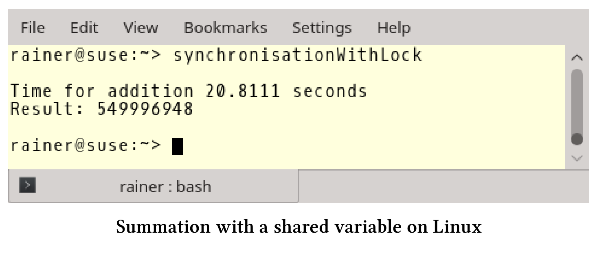
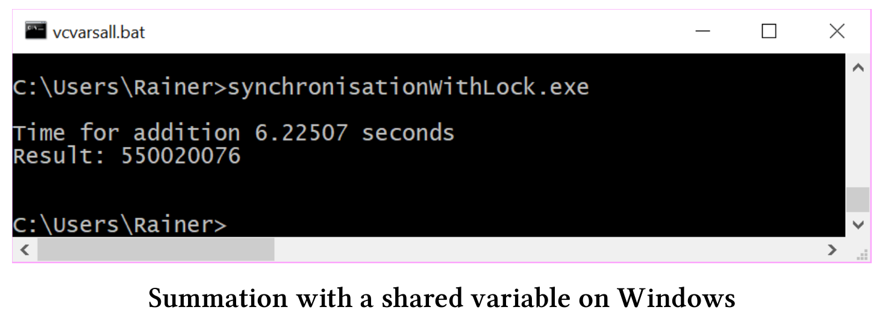
因为std::lock_guard需要对行了同步，所以瓶颈在共享变量sum处。简单直接的解决方案：用轻量级的原子操作来替换重量级的锁。
没有更改，为了简单起见，本小节之后只展示
sumUp函数体。完整的示例，请参阅本书的参考资料。
使用原子变量
求和变量sum是一个原子变量，就不再需要std::lock_guard。以下是修改后的求和函数。
// synchronisationWithAtomic.cpp
...
void sumUp(std::atomic<unsigned long long>& sum, const std::vector<int>& val,
unsigned long long beg, unsigned long long end){
for (auto it = beg; it < end; ++it){
sum += val[it];
}
}
我的Windows笔记本电脑的性能数据相当奇怪，耗时是使用std::lock_guard的两倍多。

除了使用+=操作符外，还可以使用fetch_add。
使用fetch_add
这次，代码的修改的更少，只是将求和表达式改为sum.fetch_add(val[it])。
// synchronisationWithFetchAdd.cpp
...
void sumUp(std::atomic<unsigned long long>& sum, const std::vector<int>& val,
unsigned long long beg, unsigned long long end){
for (auto it = beg; it < end; ++it){
sum.fetch_add(val[it]);
}
}
...
现在的性能与前面的例子相似，操作符+=和fetch_add之间貌似没有什么区别。

虽然+=操作和fetch_add在性能上没有区别，但是fetch_add有一个优势，可以显式地弱化内存序，并使用自由语义。
使用自由语义的fetch_add
// synchronisationWithFetchAddRelaxed.cpp
...
void sumUp(std::atomic<unsigned long long>& sum, const std::vector<int>& val,
unsigned long long beg, unsigned long long end){
for (auto it = beg; it < end; ++it){
sum.fetch_add(val[it], std::memory_order_relaxed);
}
}
...
原子变量默认是顺序一致的。对于原子变量的加和和赋值，使用fetch_add是没问题的，也可以进行优化。我将求和表达式中的内存序调整为自由语义：sum.fetch_add (val[it],std::memory_order_relaxed)。自由语义是最弱的内存序，也是我们优化的终点。
这个用例中，自由语义能很好的完成工作，因为fetch_add进行的每个加和都是原子的，并且线程会进行同步。
因为是最弱的内存模型，所以性能最好。

多线程使用共享变量求和总结
性能数值的时间单位是秒。
| 操作系统(编译器) | std::lock_guard | 原子 += | fetch_add | fetch_add (使用自由内存序) |
|---|---|---|---|---|
| Linux(GCC) | 20.81 | 7.78 | 7.87 | 7.66 |
| Windows(cl.exe) | 6.22 | 15.73 | 15.78 | 15.01 |
性能数据并不乐观，使用自由语义的共享原子变量，在四个线程的帮助下计算加和，其速度大约比使用std::accumulate算法的单个线程慢100倍。
结合前面的两种加和的策略，接下来会使用四个线程，并尽量减少线程之间的同步。
线程本地的加和
接下来使用局部变量、线程本地数据和任务，可以最小化同步。
使用本地变量
每个线程都使用本地变量求和，所以可以在不同步的情况下完成自己的工作。不过，汇总局部变量的总和时需要进行同步。简单地说：只添加了4个同步，所以从性能的角度来看，使用哪种同步并不重要。我使用std::lock_guard和一个具有顺序一致语义和自由语义的原子变量。
std::lock_guard
使用std::lock_guard进行最小化同步的加和计算。
// localVariable.cpp
#include <mutex>
#include<chrono>
#include <iostream>
#include <random>
#include <thread>
#include <utility>
#include <vector>
constexpr long long size = 100000000;
constexpr long long fir = 25000000;
constexpr long long sec = 50000000;
constexpr long long thi = 75000000;
constexpr long long fou = 100000000;
std::mutex myMutex;
void sumUp(unsigned long long& sum, const std::vector<int>& val,
unsigned long long beg, unsigned long long end) {
unsigned long long tmpSum{};
for (auto i = beg; i < end; ++i) {
tmpSum += val[i];
}
std::lock_guard<std::mutex> lockGuard(myMutex);
sum += tmpSum;
}
int main() {
std::cout << std::endl;
std::vector<int> randValues;
randValues.reserve(size);
std::mt19937 engine;
std::uniform_int_distribution<> uniformDist(1, 10);
for (long long i = 0; i < size; ++i)
randValues.push_back(uniformDist(engine));
unsigned long long sum{};
const auto sta = std::chrono::steady_clock::now();
std::thread t1(sumUp, std::ref(sum), std::ref(randValues), 0, fir);
std::thread t2(sumUp, std::ref(sum), std::ref(randValues), fir, sec);
std::thread t3(sumUp, std::ref(sum), std::ref(randValues), sec, thi);
std::thread t4(sumUp, std::ref(sum), std::ref(randValues), thi, fou);
t1.join();
t2.join();
t3.join();
t4.join();
std::chrono::duration<double> dur =
std::chrono::steady_clock::now() - sta;
std::cout << "Time for addition " << dur.count()
<< " seconds" << std::endl;
std::cout << "Result: " << sum << std::endl;
std::cout << std::endl;
}
第26和27行，将局部求和结果tmpSum添加到全局求和变量sum中。
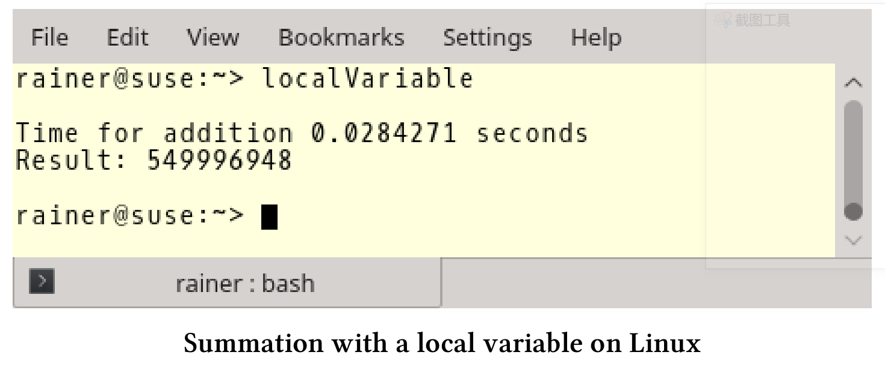

接下来使用局部变量的示例中，只有函数求和方式发生了变化，所以只展示这个函数体实现。完整的程序代码，请参考源文件。
使用顺序一致语义的原子变量
让我们用一个原子变量来声明全局求和变量sum。
// localVariableAtomic.cpp
...
void sumUp(std::atomic<unsigned long long>& sum, const std::vector<int>& val,
unsigned long long beg, unsigned long long end){
unsigned int long long tmpSum{};
for (auto i = beg; i < end; ++i){
tmpSum += val[i];
}
sum+= tmpSum;
}
...
下面是具体的性能数据：
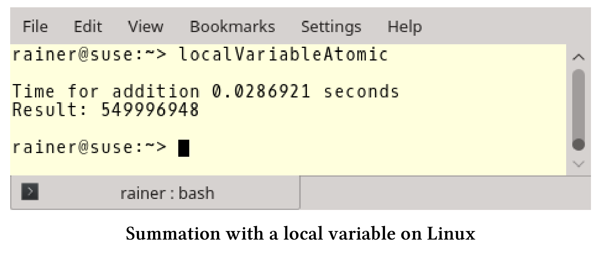
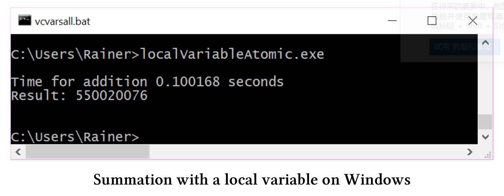
使用自由语义的原子变量
现在不使用默认的内存序，而使用的是自由语义。只需要保证，所有求和操作是原子的就好。
// localVariableAtomicRelaxed.cpp
...
void sumUp(std::atomic<unsigned long long>& sum, const std::vector<int>& val,
unsigned long long beg, unsigned long long end){
unsigned int long long tmpSum{};
for (auto i = beg; i < end; ++i){
tmpSum += val[i];
}
sum.fetch_add(tmpSum, std::memory_order_relaxed);
}
...
和预期一样，使用std::lock_guard，使用顺序一致的原子变量，或是使用自由语义的原子变量进行求和，在性能方面并没什么差异。


线程本地数据不同于其他类型的数据，它的生命周期与线程绑定，并非函数的生命周期，例如：本例中的变量tmpSum。
使用线程本地数据
线程本地数据属于创建它的线程，其只在需要时被创建，非常适合于本地求和。
// threadLocalSummation.cpp
#include <atomic>
#include<chrono>
#include <iostream>
#include <random>
#include <thread>
#include <utility>
#include <vector>
constexpr long long size = 100000000;
constexpr long long fir = 25000000;
constexpr long long sec = 50000000;
constexpr long long thi = 75000000;
constexpr long long fou = 100000000;
thread_local unsigned long long tmpSum = 0;
void sumUp(std::atomic<unsigned long long>& sum, const std::vector<int>& val,
unsigned long long beg, unsigned long long end) {
for (auto i = beg; i < end; ++i) {
tmpSum += val[i];
}
sum.fetch_add(tmpSum, std::memory_order_relaxed);
}
int main() {
std::cout << std::endl;
std::vector<int> randValues;
randValues.reserve(size);
std::mt19937 engine;
std::uniform_int_distribution<> uniformDist(1, 10);
for (long long i = 0; i < size; ++i)
randValues.push_back(uniformDist(engine));
std::atomic<unsigned long long> sum{};
const auto sta = std::chrono::steady_clock::now();
std::thread t1(sumUp, std::ref(sum), std::ref(randValues), 0, fir);
std::thread t2(sumUp, std::ref(sum), std::ref(randValues), fir, sec);
std::thread t3(sumUp, std::ref(sum), std::ref(randValues), sec, thi);
std::thread t4(sumUp, std::ref(sum), std::ref(randValues), thi, fou);
t1.join();
t2.join();
t3.join();
t4.join();
std::chrono::duration<double> dur =
std::chrono::steady_clock::now() - sta;
std::cout << "Time for addition " << dur.count()
<< " seconds" << std::endl;
std::cout << "Result: " << sum << std::endl;
std::cout << std::endl;
}
第18行中声明了线程本地变量tmpSum，并在第23和25行中使用它进行加和。
下面是使用本地变量加和的性能数据：

最后，来看下如何使用任务(task)完成这项工作。
使用任务
使用任务，我们可以使用隐式同步完成整个工作。每个部分求和在单独的线程中执行，最后在主线程中进行求和。
代码如下：
// tasksSummation.cpp
#include<chrono>
#include <future>
#include <iostream>
#include <random>
#include <thread>
#include <utility>
#include <vector>
constexpr long long size = 100000000;
constexpr long long fir = 25000000;
constexpr long long sec = 50000000;
constexpr long long thi = 75000000;
constexpr long long fou = 100000000;
void sumUp(std::promise<unsigned long long>&& prom, const std::vector<int>& val,
unsigned long long beg, unsigned long long end) {
unsigned long long sum = {};
for (auto i = beg; i < end; ++i) {
sum += val[i];
}
prom.set_value(sum);
}
int main() {
std::cout << std::endl;
std::vector<int> randValues;
randValues.reserve(size);
std::mt19937 engine;
std::uniform_int_distribution<> uniformDist(1, 10);
for (long long i = 0; i < size; ++i)
randValues.push_back(uniformDist(engine));
std::promise<unsigned long long> prom1;
std::promise<unsigned long long> prom2;
std::promise<unsigned long long> prom3;
std::promise<unsigned long long> prom4;
auto fut1 = prom1.get_future();
auto fut2 = prom2.get_future();
auto fut3 = prom3.get_future();
auto fut4 = prom4.get_future();
const auto sta = std::chrono::steady_clock::now();
std::thread t1(sumUp, std::move(prom1), std::ref(randValues), 0, fir);
std::thread t2(sumUp, std::move(prom2), std::ref(randValues), fir, sec);
std::thread t3(sumUp, std::move(prom3), std::ref(randValues), sec, thi);
std::thread t4(sumUp, std::move(prom4), std::ref(randValues), thi, fou);
auto sum = fut1.get() + fut2.get() + fut3.get() + fut4.get();
std::chrono::duration<double> dur = std::chrono::steady_clock::now() - sta;
std::cout << "Time for addition " << dur.count()
<< " seconds" << std::endl;
std::cout << "Result: " << sum << std::endl;
t1.join();
t2.join();
t3.join();
t4.join();
std::cout << std::endl;
}
第39 - 47行定义了四个promise和future。第51 - 54行中，每个promise都被移动到线程中。promise只能移动，不能复制。sumUp的第一个参数使用右值引用的promise。future在第56行使用阻塞的get获取求和结果。
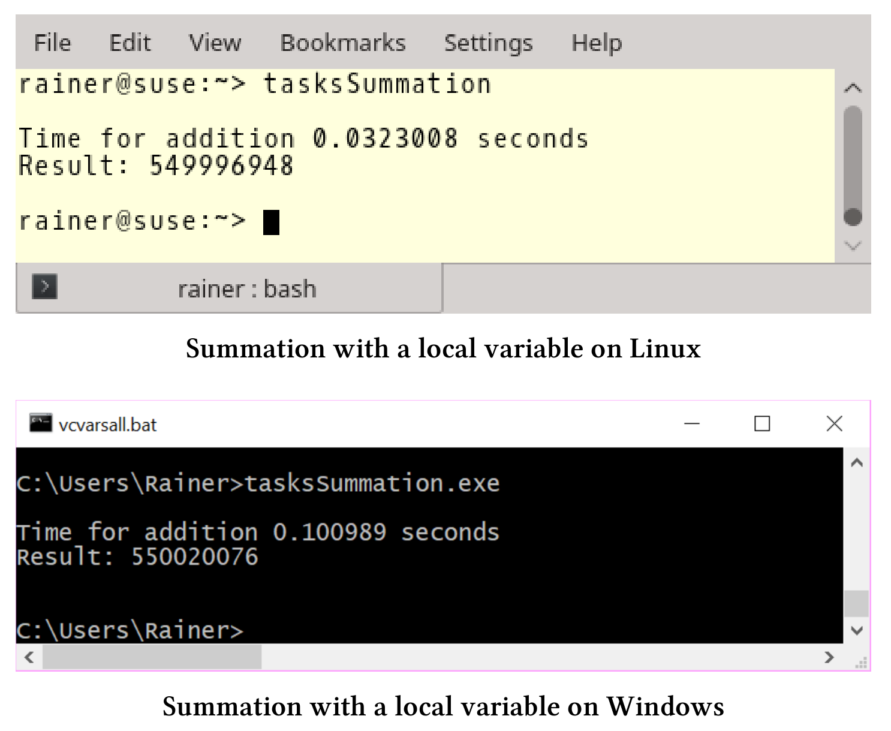
所有线程本地求和场景的总结
无论是使用局部变量，任务来部分求和，还是各种同步原语(如原子)，性能上好像没有太大的区别，只有线程本地数据似乎让程序变慢了一些。这个观察结果适用于Linux和Windows，不要对Linux相对于Windows的更高性能感到惊讶。别忘了，Linux的电脑上有4个核，而Windows笔记本电脑只有2个核。
| 操作系统(编译器) | std::lock_guard | 使用顺序一致语义的原子变量 | 使用自由语义的原子变量 | 线程本地数据 | 任务 |
|---|---|---|---|---|---|
| Linux(GCC) | 0.03 | 0.03 | 0.03 | 0.04 | 0.03 |
| Windows(cl.exe) | 0.10 | 0.10 | 0.10 | 0.20 | 0.10 |
多线程的本地求和的速度，大约是单线程求和的两倍。因为线程之间几乎不需要同步，所以在最优的情况下，我认为性能会提高四倍。背后的根本原因是什么？
总结：求向量元素的加和
单线程
基于for循环和STL算法std::accumulate的性能差不多。优化版本中，编译器会使用向量化的SIMD指令(SSE或AVX)用于求和。因此，循环计数器增加了4(SSE)或8(AVX)。
使用共享变量多线程求和
使用共享变量作为求和变量，可以说明了一点：同步操作是代价是非常昂贵的，应该尽可能避免。虽然我使用了原子变量，甚至打破了顺序一致性，但这四个线程比一个线程还要慢100倍。从性能角度考虑，要尽可能减少同步。
线程本地求和
线程本地求和仅比单线程for循环或std::accumulate快两倍，即使四个线程都可以独立工作，这种情况仍然存在。这也让我很惊讶，因为我原以为会有四倍的性能提升。更让我惊讶的是，电脑的四个核心并没有充分利用。
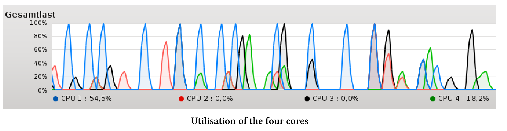
没有充分利用的原因也很简单，CPU无法快速地从内存中获取数据。程序执行是有内存限制的，或者说内存延迟了CPU核的计算速度。下图展示了计算时的瓶颈内存。

Roofline模型是一种直观的性能模型，可对运行在多核或多核体系结构上的应用程序进行性能评估。该模型依赖于体系结构的峰值性能、峰值带宽和计算密度。
单例模式：线程安全的初始化
开始研究之前，说明一下：我个人并不提倡使用单例模式。
对于单例模式的看法
我只在案例研究中使用单例模式，因为它是以线程安全的方式，初始化变量的典型例子。先来了解一下单例模式的几个严重缺点：
- 单例是一个经过乔装打扮的全局变量。因此，测试起来非常困难，因为它依赖于全局的状态。
- 通过
MySingleton::getInstance()可以在函数中使用单例，不过函数接口不会说明内部使用了单例，并隐式依赖于对单例。- 若将静态对象
x和y放在单独的源文件中，并且这些对象的构造方式相互依赖，因为无法保证先初始化哪个静态对象，将陷入静态初始化混乱顺序的情况。这里要注意的是，单例对象是静态对象。- 单例模式是惰性创建对象，但不管理对象的销毁。如果不销毁不需要的东西，那就会造成内存泄漏。
- 试想一下，当子类化单例化，可能实现吗？这意味着什么?
- 想要实现一个线程安全且快速的单例，非常具有挑战性。
关于单例模式的详细讨论，请参阅Wikipedia中有关单例模式的文章。
我想在开始讨论单例的线程安全初始化前，先说点别的。
##双重检查的锁定模式
双重检查锁定模式是用线程安全的方式，初始化单例的经典方法。听起来像是最佳实践或模式之类的方法，但更像是一种反模式。它假设传统实现中有相关的保障机制，而Java、C#或C++内存模型不再提供这种保障。这样，创建单例是原子操作就是一个错误的假设，这样看起来是线程安全的解决方案并不安全。
什么是双重检查锁定模式？实现线程安全单例的，首先会想到用锁来保护单例的初始化过程。
std::mutex myMutex;
class MySingleton {
public:
static MySingleton& getInstance() {
std::lock_guard<mutex> myLock(myMutex);
if (!instance) instance = new MySingleton();
return *instance;
}
private:
MySingleton() = default;
~MySingleton() = default;
MySingleton(const MySingleton&) = delete;
MySingleton& operator= (const MySingleton&) = delete;
static MySingleton* instance;
};
MySingleton* MySingleton::instance = nullptr;
程序有毛病么？有毛病：是因为性能损失太大；没毛病：是因为实现的确线程安全。第7行的锁会对单例的每次访问进行保护，这也适用于读取。不过，构造MySingleton之后，就没有必要读取了。这里双重检查锁定模式就发挥了其作用，再看一下getInstance函数。
static MySingleton& getInstance() {
if (!instance) { // check
lock_guard<mutex> myLock(myMutex); // lock
if (!instance) instance = new MySingleton(); // check
}
return *instance;
}
第2行没有使用锁，而是使用指针比较。如果得到一个空指针，则申请锁的单例(第3行)。因为，可能有另一个线程也在初始化单例，并且到达了第2行或第3行，所以需要额外的指针在第4行进行比较。顾名思义，其中两次是检查，一次是锁定。
牛B不？牛。线程安全？不安全。
问题出在哪里？第4行中的instance= new MySingleton()至少包含三个步骤：
- 为
MySingleton分配内存。 - 初始化
MySingleton对象。 - 引用完全初始化的
MySingleton对象。
能看出问在哪了么？
C++运行时不能保证这些步骤按顺序执行。例如，处理器可能会将步骤重新排序为序列1、3和2。因此，在第一步中分配内存，在第二步中实例引用一个非初始化的单例。如果此时另一个线程t2试图访问该单例对象并进行指针比较，则比较成功。其结果是线程t2引用了一个非初始化的单例，并且程序行为未定义。
性能测试
我要测试访问单例对象的开销。对引用测试时，使用了一个单例对象，连续访问4000万次。当然，第一个访问的线程会初始化单例对象，四个线程的访问是并发进行的。我只对性能数字感兴趣，因此我汇总了这四个线程的执行时间。使用一个带范围(Meyers Singleton)的静态变量、一个锁std::lock_guard、函数std::call_once和std::once_flag以及具有顺序一致和获取-释放语义的原子变量进行性能测试。
程序在两台电脑上运行。读过上一节的朋友肯定知道，我的Linux(GCC)电脑上有四个核心，而我的Windows(cl.exe)电脑只有两个核心，用最大级别的优化来编译程序。相关设置的详细信息，参见本章的开头。
接下来，需要回答两个问题：
- 各种单例实现的性能具体是多少?
- Linux (GCC)和Windows (cl.exe)之间的差别是否显著?
最后，我会将所有数字汇总到一个表中。
展示各种多线程实现的性能数字前，先来看一下串行的代码。C++03标准中，getInstance方法线程不安全。
// singletonSingleThreaded.cpp
#include <chrono>
#include <iostream>
constexpr auto tenMill = 10000000;
class MySingLeton {
public:
static MySingLeton& getInstance() {
static MySingLeton instance;
volatile int dummy{};
return instance;
}
private:
MySingLeton() = default;
~MySingLeton() = default;
MySingLeton(const MySingLeton&) = delete;
MySingLeton& operator=(const MySingLeton&) = delete;
};
int main() {
constexpr auto fourtyMill = 4 * tenMill;
const auto begin = std::chrono::system_clock::now();
for (size_t i = 0; i <= fourtyMill; ++i) {
MySingLeton::getInstance();
}
const auto end = std::chrono::system_clock::now() - begin;
std::cout << std::chrono::duration<double>(end).count() << std::endl;
}
作为参考实现，我使用了以Scott Meyers命名的Meyers单例。这个实现的优雅之处在于，第11行中的singleton对象是一个带有作用域的静态变量，实例只初始化一次，而初始化发生在第一次执行静态方法getInstance(第10 - 14行)时。
使用volatile声明变量dummy
当我用最高级别的优化选项来编译程序时，编译器删除了第30行中的
MySingleton::getInstance()，因为调用不调用都没有效果，我得到了非常快的执行，但结果错误的性能数字。通过使用volatile声明变量dummy(第12行)，明确告诉编译器不允许优化第30行中的MySingleton::getInstance()调用。
下面是单线程用例的性能结果。

C++11中，Meyers单例已经线程安全了。
线程安全的Meyers单例
C++11标准中，保证以线程安全的方式初始化具有作用域的静态变量。Meyers单例使用就是有作用域的静态变量，这样就成了！剩下要做的工作，就是为多线程用例重写Meyers单例。
多线程中的Meyers单例
// singletonMeyers.cpp
#include <chrono>
#include <iostream>
#include <future>
constexpr auto tenMill = 10000000;
class MySingLeton {
public:
static MySingLeton& getInstance() {
static MySingLeton instance;
volatile int dummy{};
return instance;
}
private:
MySingLeton() = default;
~MySingLeton() = default;
MySingLeton(const MySingLeton&) = delete;
MySingLeton& operator=(const MySingLeton&) = delete;
};
std::chrono::duration<double> getTime() {
auto begin = std::chrono::system_clock::now();
for (size_t i = 0; i <= tenMill; ++i) {
MySingLeton::getInstance();
}
return std::chrono::system_clock::now() - begin;
}
int main() {
auto fut1 = std::async(std::launch::async, getTime);
auto fut2 = std::async(std::launch::async, getTime);
auto fut3 = std::async(std::launch::async, getTime);
auto fut4 = std::async(std::launch::async, getTime);
const auto total = fut1.get() + fut2.get() + fut3.get() + fut4.get();
std::cout << total.count() << std::endl;
}
函数getTime中使用单例对象(第24 - 32行)，函数由第36 - 39行中的四个promise来执行，相关future的结果汇总在第41行。
我们来看看最直观的方式——锁。
std::lock_guard
std::lock_guard中的互斥量，保证了能以线程安全的方式初始化单例对象。
// singletonLock.cpp
#include <chrono>
#include <iostream>
#include <future>
#include <mutex>
constexpr auto tenMill = 10000000;
std::mutex myMutex;
class MySingleton {
public:
static MySingleton& getInstance() {
std::lock_guard<std::mutex> myLock(myMutex);
if (!instance) {
instance = new MySingleton();
}
volatile int dummy{};
return *instance;
}
private:
MySingleton() = default;
~MySingleton() = default;
MySingleton(const MySingleton&) = delete;
MySingleton& operator=(const MySingleton&) = delete;
static MySingleton* instance;
};
MySingleton* MySingleton::instance = nullptr;
std::chrono::duration<double> getTime() {
auto begin = std::chrono::system_clock::now();
for (size_t i = 0; i <= tenMill; ++i) {
MySingleton::getInstance();
}
return std::chrono::system_clock::now() - begin;
}
int main() {
auto fut1 = std::async(std::launch::async, getTime);
auto fut2 = std::async(std::launch::async, getTime);
auto fut3 = std::async(std::launch::async, getTime);
auto fut4 = std::async(std::launch::async, getTime);
const auto total = fut1.get() + fut2.get() + fut3.get() + fut4.get();
std::cout << total.count() << std::endl;
}
这种方式非常的慢。
线程安全单例模式的下一个场景，基于多线程库，并结合std::call_once和std::once_flag。
使用std::once_flag的std::call_once
std::call_once和std::once_flag可以一起使用，以线程安全的方式执行可调用对象。
// singletonCallOnce.cpp
#include <chrono>
#include <iostream>
#include <future>
#include <mutex>
#include <thread>
constexpr auto tenMill = 10000000;
class MySingleton {
public:
static MySingleton& getInstance() {
std::call_once(initInstanceFlag, &MySingleton::initSingleton);
volatile int dummy{};
return *instance;
}
private:
MySingleton() = default;
~MySingleton() = default;
MySingleton(const MySingleton&) = delete;
MySingleton& operator=(const MySingleton&) = delete;
static MySingleton* instance;
static std::once_flag initInstanceFlag;
static void initSingleton() {
instance = new MySingleton;
}
};
MySingleton* MySingleton::instance = nullptr;
std::once_flag MySingleton::initInstanceFlag;
std::chrono::duration<double> getTime() {
auto begin = std::chrono::system_clock::now();
for (size_t i = 0; i <= tenMill; ++i) {
MySingleton::getInstance();
}
return std::chrono::system_clock::now() - begin;
}
int main() {
auto fut1 = std::async(std::launch::async, getTime);
auto fut2 = std::async(std::launch::async, getTime);
auto fut3 = std::async(std::launch::async, getTime);
auto fut4 = std::async(std::launch::async, getTime);
const auto total = fut1.get() + fut2.get() + fut3.get() + fut4.get();
std::cout << total.count() << std::endl;
}
下面是具体的性能数字：

继续使用原子变量来实现线程安全的单例。
原子变量
使用原子变量，让实现变得更具有挑战性，我甚至可以为原子操作指定内存序。基于前面提到的双重检查锁定模式，实现了以下两个线程安全的单例。
顺序一致语义
第一个实现中，使用了原子操作，但没有显式地指定内存序，所以默认是顺序一致的。
// singletonSequentialConsistency.cpp
#include <chrono>
#include <iostream>
#include <future>
#include <mutex>
#include <thread>
constexpr auto tenMill = 10000000;
class MySingleton {
public:
static MySingleton& getInstance() {
MySingleton* sin = instance.load();
if (!sin) {
std::lock_guard<std::mutex>myLock(myMutex);
sin = instance.load(std::memory_order_relaxed);
if (!sin) {
sin = new MySingleton();
instance.store(sin);
}
}
volatile int dummy{};
return *instance;
}
private:
MySingleton() = default;
~MySingleton() = default;
MySingleton(const MySingleton&) = delete;
MySingleton& operator=(const MySingleton&) = delete;
static std::atomic<MySingleton*> instance;
static std::mutex myMutex;
};
std::atomic<MySingleton*> MySingleton::instance;
std::mutex MySingleton::myMutex;
std::chrono::duration<double> getTime() {
auto begin = std::chrono::system_clock::now();
for (size_t i = 0; i <= tenMill; ++i) {
MySingleton::getInstance();
}
return std::chrono::system_clock::now() - begin;
}
int main() {
auto fut1 = std::async(std::launch::async, getTime);
auto fut2 = std::async(std::launch::async, getTime);
auto fut3 = std::async(std::launch::async, getTime);
auto fut4 = std::async(std::launch::async, getTime);
const auto total = fut1.get() + fut2.get() + fut3.get() + fut4.get();
std::cout << total.count() << std::endl;
}
与双重检查锁定模式不同，由于原子操作的默认是顺序一致的，现在可以保证第19行中的sin = new MySingleton()出现在第20行instance.store(sin)之前。看一下第17行：sin = instance.load(std::memory_order_relax)，因为另一个线程可能会在第14行第一个load和第16行锁的使用之间，介入并更改instance的值，所以这里的load是必要的。

我们进一步的对程序进行优化。
获取-释放语义
仔细看看之前使用原子实现单例模式的线程安全实现。第14行中单例的加载(或读取)是一个获取操作，第20行中存储(或写入)是一个释放操作。这两种操作都发生在同一个原子上，所以不需要顺序一致。C++11标准保证释放与获取操作在同一原子上同步，并建立顺序约束。也就是，释放操作之后，不能移动之前的所有读和写操作，并且在获取操作之前不能移动之后的所有读和写操作。
这些都是实现线程安全单例的最低保证。
// singletonAcquireRelease.cpp
#include <chrono>
#include <iostream>
#include <future>
#include <mutex>
#include <thread>
constexpr auto tenMill = 10000000;
class MySingleton {
public:
static MySingleton& getInstance() {
MySingleton* sin = instance.load(std::memory_order_acquire);
if (!sin) {
std::lock_guard<std::mutex>myLock(myMutex);
sin = instance.load(std::memory_order_release);
if (!sin) {
sin = new MySingleton();
instance.store(sin);
}
}
volatile int dummy{};
return *instance;
}
private:
MySingleton() = default;
~MySingleton() = default;
MySingleton(const MySingleton&) = delete;
MySingleton& operator=(const MySingleton&) = delete;
static std::atomic<MySingleton*> instance;
static std::mutex myMutex;
};
std::atomic<MySingleton*> MySingleton::instance;
std::mutex MySingleton::myMutex;
std::chrono::duration<double> getTime() {
auto begin = std::chrono::system_clock::now();
for (size_t i = 0; i <= tenMill; ++i) {
MySingleton::getInstance();
}
return std::chrono::system_clock::now() - begin;
}
int main() {
auto fut1 = std::async(std::launch::async, getTime);
auto fut2 = std::async(std::launch::async, getTime);
auto fut3 = std::async(std::launch::async, getTime);
auto fut4 = std::async(std::launch::async, getTime);
const auto total = fut1.get() + fut2.get() + fut3.get() + fut4.get();
std::cout << total.count() << std::endl;
}
获取-释放语义与顺序一致内存序有相似的性能。
x86体系结构中这并不奇怪，这两个内存顺序非常相似。我们可能会在ARMv7或PowerPC架构上的看到性能数字上的明显差异。对这方面比较感兴趣的话，可以阅读Jeff Preshings的博客Preshing on Programming，那里有更详细的内容。
##各种线程安全单例实现的性能表现总结
数字很明确，Meyers 单例模式是最快的。它不仅是最快的，也是最容易实现的。如预期的那样，Meyers单例模式比原子模式快两倍。锁的量级最重，所以最慢。std::call_once在Windows上比在Linux上慢得多。
| 操作系统(编译器) | 单线程 | Meyers单例 | std::lock_guard | std::call_once | 顺序一致 | 获取-释放语义 |
|---|---|---|---|---|---|---|
| Linux(GCC) | 0.03 | 0.04 | 12.48 | 0.22 | 0.09 | 0.07 |
| Windows(cl.exe) | 0.02 | 0.03 | 15.48 | 1.74 | 0.07 | 0.07 |
关于这些数字，我想强调一点：这是四个线程的性能总和。因为Meyers单例模式几乎与单线程实现一样快，所以并发Meyers单例模式具有最佳的性能。
使用CppMem进行优化
我们从一个简单的程序开始，然后对其不断地进行改进。这里，使用CppMem验证的每个步骤。CppMem是一个交互式工具，用于研究小代码段中C++内存模型的行为。
首先，来写个简单的程序：
// ongoingOptimisation.cpp
#include <iostream>
#include <thread>
int x = 0;
int y = 0;
void writing() {
x = 2000;
y = 11;
}
void reading() {
std::cout << "y: " << y << " ";
std::cout << "x: " << x << std::endl;
}
int main() {
std::thread thread1(writing);
std::thread thread2(reading);
thread1.join();
thread2.join();
}
程序很简单，由两个线程thread1和thread2构成。thread1写入x和y，thread2以相反的顺序读取值y和x。这看起来很简单，但这个简单的程序，却会给了我们三个不同的结果:

对程序优化之前，需要确定两个问题：
- 程序的定义都明确吗？是否存在数据竞争？
- x和y可能是哪些值?
第一个问题往往很难回答。首先，考虑第一个问题的答案；其次，使用CppMem验证推理。当我想到了第一个问题的答案，就可以很容易地确定第二个问题的答案。我在一个表中给出了x和y的可能值。
但是，还没有解释持续优化是什么意思。其实很简单，通过弱化C++的内存序来不断优化程序。以下是优化步骤：
- 非原子变量
- 锁
- 使用顺序一致语义的原子变量
- 使用获取-释放语义的原子变量
- 使用自由语义的原子变量
- Volatile变量
开始持续优化之旅之前，应该先对CppMem有一个基本的了解。在CppMem章节中，会提供了一个简单的介绍。
CppMem: 非原子变量
使用run按钮可以立即显示数据竞争。更准确地说，上面的程序有两个数据竞争，因为变量x和y的访问都不受保护。因此，该程序具有未定义行为。在C++术语中，这意味着程序在玩火，你的电脑甚至会着火(笑)。
因此，我们不能得到x和y的准确值。
关于int型的变量
只要int变量是自然对齐的，那么大多数主流架构对int变量的访问都是原子性的。自然对齐意味着在32位或64位体系结构中，32位int变量必须有一个能被4整除的地址。这是因为，C++11中可以调整数据类型的对齐方式。
必须强调的是，我并不是建议你像使用原子int那样使用int型变量。我只是想指出，在这种情况下，编译器比C++11标准提供了更多保证。如果过于依赖于编译器，那么程序就很可能不符合C++标准，因此可能会在其他硬件平台上运行出错。
这就是我的推理内容。现在，我们应该看看CppMem关于程序未定义行为的报告。
CppMem允许我将程序剪裁到最小。
int main() {
int x = 0;
int y = 0;
{ { { {
x = 2000;
y = 11;
}
|||{
y;
x;
}
} } }
}
可以使用大括号(第4行和第12行)和管道符号(第8行)在CppMem中定义一个线程。因为我对变量x和y的输出不感兴趣，所以只在第9行和第10行读取它们。
这是CppMem的理论部分，下面就来实践一下。
分析
执行程序时，CppMem会在(1)处提示，线程交错有四种可能性，其中有一种有竞争的。只有在第一次执行时，结果是一致的。现在，我可以使用CppMem在四个执行(2)之间进行切换，并分析示意图(3)。
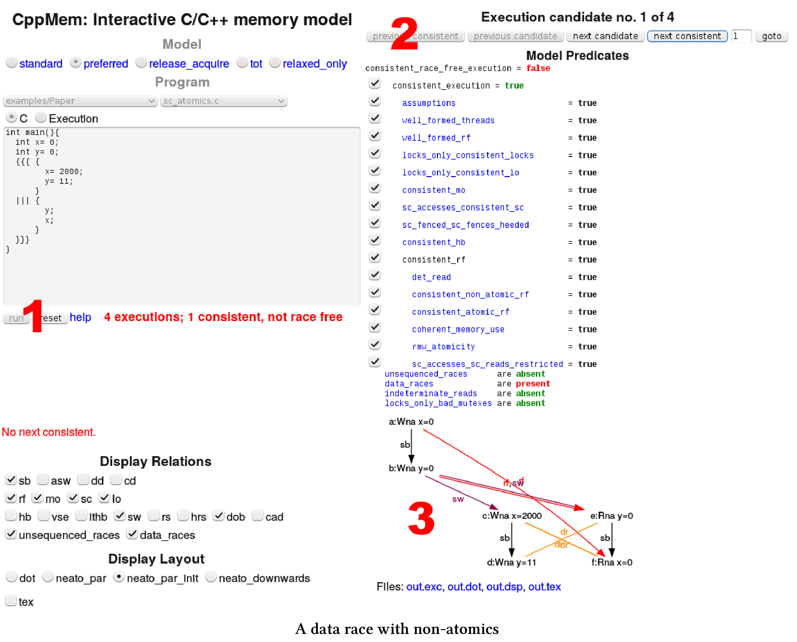
通过分析图表，可以最大程度地利用CppMem。
第一次执行

节点表示程序的表达式，箭头表示表达式之间的关系。从图中的注释中我可以得出什么结论呢?
- a:Wna x = 0：第一个表达式(a)，向非原子变量x中写入0。
- sb (前序，sequenced-before)：第一个表达式(a)执行的顺序在第二个表达式(b)之前就能确定。表达式(c)和(d)、(e)和(f)之间也存在这种关系。
- rf (读取，read from)：(e)从(b)中读取y的值，(f)从(a)中读取x的值。
- sw (同步，synchronizes-with)：因为表达式(f)在一个单独的线程中执行，所以(a)与(f)同步。线程创建之前发生的所有事情都是可见的，而线程的创建可以看作是一个同步点。由于对称性，(b)和(e)之间也存在同样的关系。
- dr (数据竞争，data race)：变量x和y的读写之间有数据竞争，所以程序有未定义行为。
为什么顺序一致的执行?
因为x和y在主线程中初始化(a)和(b)，所以执行顺序一致。(c)和(d)中的x和y在内存模型上不是顺序一致的。
接下来的三次执行，都不是顺序一致的。
第二次执行

(e)从(d)中读取“不一致”的y值，并且(d)的写入与(e)的读取同时发生。
第三次执行

与前一个执行对称，(f)同时从(c)中读取x。
第四次执行

现在，就开始乱套了。(e)和(f)同时从表达式(d)和(c)中读出x和y。
简单的总结一下
虽然我只是使用了CppMem的默认配置，但是获得了很多有价值的信息。特别是CppMem的图形化显示：
- x和y的所有可能的组合：(0,0)、(11,0)、(0,2000)和(11,2000)。
- 该程序至少有一个数据竞争，因此会触发未定义行为。
- 四种可能的执行方式中，只有一种是顺序一致的。
使用volatile
从内存模型的角度来看，对x和y使用限定符volatile与x和y的非同步访问没有区别。
CppMem: 使用volatile的不同步访问
int main() { volatile int x = 0; volatile int y = 0; { { { { x = 2000; y = 11; } ||| { y; x; } } } } }CppMem生成与前一个示例相同的图。原因很简单，C++中volatile不具备多线程语义功能。
这个例子中，x和y的访问没有同步，因此会出现数据竞争，产生未定义行为。最直接的同步方式，当然是使用锁。
CppMem: 锁
两个线程thread1和thread2都使用了相同的互斥锁，且包装在std::lock_guard中。
// ongoingOptimisationLock.cpp
#include <iostream>
#include <mutex>
#include <thread>
int x = 0;
int y = 0;
std::mutex mut;
void writing() {
std::lock_guard<std::mutex> guard(mut);
x = 2000;
y = 11;
}
void reading() {
std::lock_guard<std::mutex> guard(mut);
std::cout << "y: " << y << " ";
std::cout << "x: " << x << std::endl;
}
int main() {
std::thread thread1(writing);
std::thread thread2(reading);
thread1.join();
thread2.join();
}
程序没啥问题，根据(thread1与thread2)执行顺序，要么是读后写，要么是先写后读。下面展示了x和y值的几种可能：
| y | x | 有可能吗？ |
|---|---|---|
| 0 | 0 | 有 |
| 11 | 0 | |
| 0 | 2000 | |
| 11 | 2000 | 有 |
CppMem中使用
std::lock_guard我没找到在CppMem中使用
std::lock_guard的方法。如果你知道如何实现它，请告诉我一下 ：）
锁的易用性比较好，但同步性价比太低。接下来使用原子变量，并尝试一种更轻量级的策略。
CppMem: 顺序一致语义的原子变量
如果没有指定的内存序，则使用顺序一致。顺序一致保证每个线程按照源代码顺序执行，并且所有线程都遵循相同的全局序。
这里有个使用原子的优化版本。
// ongoingOptimisationSequentialConsistency.cpp
#include <atomic>
#include <iostream>
#include <thread>
std::atomic<int> x{ 0 };
std::atomic<int> y{ 0 };
void writing(){
x.store(2000);
y.store(11);
}
void reading() {
std::cout << y.load() << " ";
std::cout << x.load() << std::endl;
}
int main() {
std::thread thread1(writing);
std::thread thread2(reading);
thread1.join();
thread2.join();
}
我们来分析一下这段代码。因为x和y是原子变量，所以没有数据竞争。因此，只剩下一个问题需要回答。x和y可能的值是什么？这个问题也不难，由于顺序一致，所有线程都必须遵循相同的全局序。
实际执行的情况：
x.store(2000);先行于y.store(11);std::cout << y.load() << " ";先行于std::cout << x.load() << std::endl;
因此，如果y.load()的值为11，则x.load()的值肯定不能为0，因为x.store(2000)在y.store(11)之前已经执行了。
x和y的其他所有值都是有可能，下面是导致x和y有三组不同值的原因：
thread1先行完成于thread2thread2先行完成于thread1thread1执行x.store(2000)先行于thread2执行完成
那么x和y的所有可能性：
| y | x | 有可能吗？ |
|---|---|---|
| 0 | 0 | 有 |
| 11 | 0 | |
| 0 | 2000 | 有 |
| 11 | 2000 | 有 |
接下来使用CppMem验证一下我的猜想。
CppMem
int main() {
atomic_int x = 0;
atomic_int y = 0;
{{{ {
x.store(2000);
y.store(11);
}
|||{
y.load();
x.load();
}
}}};
return 0; }
首先介绍一些语法知识，CppMem为std::atomic<int>专门定义有atomic_int类型。
执行程序时，我被候选执行程序的数量(384个)吓了一跳。

有384个可能的执行候选，只有6个是顺序一致的，没有候选有数据竞争。不过，我只对6个顺序一致的候选感兴趣。
我使用选项(2)获得六个带注解的示意图。
我们已经知道，因为顺序一致，除了y = 11和x = 0外，其他可能值都是可能的。现在我很好奇，哪些线程交错会产生不同的x和y呢?
(y = 0, x = 0)
(y = 0, x = 2000)

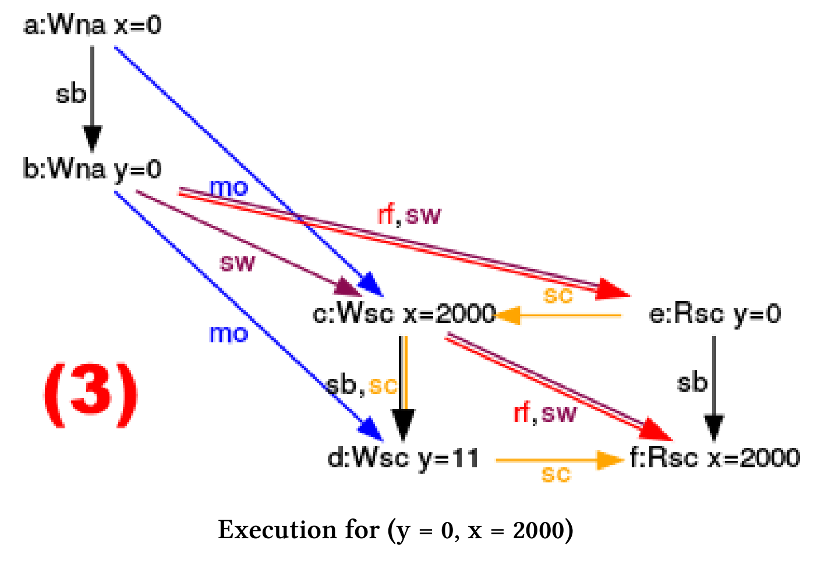
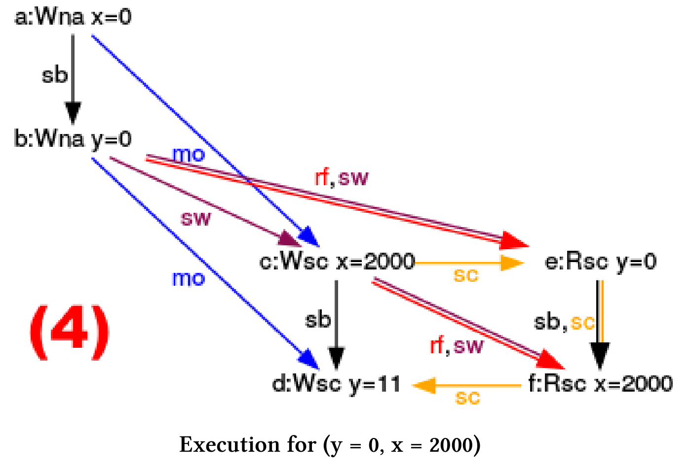
(y = 11, x = 2000)

分析还没结束，我感兴趣的是：指令序列与这六个图如何对应?
指令序列
我给每个指令序列分配了相应的图示。

让我们从简单的例子开始分析：
- (1)：x和y的值为0，因为
y.load()和x.load()在操作x.store(2000)和y.store(11)之前完成。 - (6): 所有的加载操作都发生在存储操作之后，所以y的值是11，x的值是2000。
- (2), (3), (4), (5): 这几个是更有趣的例子，y的值是0，x的值是2000。图中的黄色箭头(sc)是我推理的关键，它们代表指令序列。让我们看看(2)是怎么执行的：
- (2)中黄色箭头(sc)的顺序是：
写入x = 2000⇒读取 y = 0⇒写入 y = 11⇒读取 x = 2000。该序列对应于第二次线程交错(2)时的指令序列。
- (2)中黄色箭头(sc)的顺序是：
接下来，让我们打破顺序一致的束缚，使用获取-释放语义。
CppMem：获取-释放语义的原子变量
与线程之间进行同步的顺序一致不同，获取-释放语义的同步，发生在同一原子变量的(原子)操作之间。基于这个前提，获取-释放语义更轻，也更快。
展示一段使用获取-释放语义的代码。
// ongoingOptimisationAcquireRelease.cpp
#include <atomic>
#include <iostream>
#include <thread>
std::atomic<int>x{ 0 };
std::atomic<int> y{ 0 };
void writing() {
x.store(2000, std::memory_order_relaxed);
y.store(11, std::memory_order_release);
}
void reading() {
std::cout << y.load(std::memory_order_acquire) << " ";
std::cout << x.load(std::memory_order_relaxed) << std::endl;
}
int main() {
std::thread thread1(writing);
std::thread thread2(reading);
thread1.join();
thread2.join();
}
所有的操作都是原子的，所以程序没啥问题。再多看几眼，你会发现更多东西，y上的原子操作附加了std::memory_order_release(第12行)和std::memory_order_acquire标记(第16行)。与之相反，x上的原子操作是用std::memory_order_relax标记(第11行和第17行)，所以x没有同步和顺序约束。x和y可能值，只能由y给出答案了。
y.store(11,std::memory_order_release)同步于y.load(std::memory_order_acquire)x.store(2000,std::memory_order_relaxed)先见于y.store(11, std::memory_order_release)y.load(std::memory_order_acquire)先见于x.load(std::memory_order_relaxed)
进行更详细的描述：关键点在于，第12行y的存储与第16行y的加载是同步的。因为操作发生在相同的原子变量上，所以使用的是获取-释放语义。y在第12行中使用std::memory_order_release，第16行中使用std::memory_order_acquire，因此x.store(2000, std:: memory_order_relax)不能在y.store (std::memory_order_release)之后执行，而x.load()也不能在y.load()之前执行。
获取-释放语义的推理比之前的顺序一致的推理复杂许多，但是x和y的可能值是相同的。只有y == 11和x == 0的组合是不可能的。
有三种可能的线程交错，它们会产生不同x和y：
thread1先于thread2执行thread2先于thread1执行thread1执行x.store(2000)先于thread2执行
以下是x和y的所有可能值：
| y | x | 有可能吗？ |
|---|---|---|
| 0 | 0 | 有 |
| 11 | 0 | |
| 0 | 2000 | 有 |
| 11 | 2000 | 有 |
继续使用CppMem验证猜想。
CppMem
int main() {
atomic_int x = 0;
atomic_int y = 0;
{{{ {
x.store(2000,memory_order_relaxed);
y.store(11,memory_order_release);
}
|||{
y.load(memory_order_acquire);
x.load(memory_order_relaxed);
}
}}};
}
我们已经知道，除了(y = 11, x = 0)之外，其他结果都有可能。
可能的执行顺序
这里只引用执行一致的三个图。从图中可以看出，y的存储-释放操作与y的加载- 获取操作之间，有获取-释放语义存在。在主线程或单独的线程中读取y(rf)是没有区别的。图中显示了同步关系，是用一个带sw注释的箭头进行表示的。
(y = 0, x = 0)

(y = 0, x = 2000)
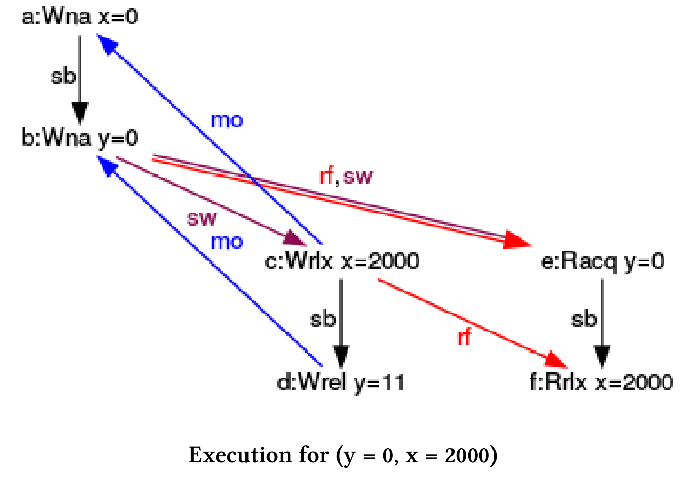
(y = 11, x = 2000)

x不一定是原子的?! 好吧，这是我第一个错误的假设，来看下原因。
CppMem：原子变量和非原子变量混用
获取-释放语义中，典型的误解是假定获取操作正在等待释放操作。基于这个错误的假设，你可能认为x不必是一个原子变量，从而可以进一步优化程序。
// ongoingOptimisationAcquireReleaseBroken.cpp
#include <atomic>
#include <iostream>
#include <thread>
int x = 0;
std::atomic<int> y{ 0 };
void writing() {
x = 2000;
y.store(11, std::memory_order_release);
}
void reading() {
std::cout << y.load(std::memory_order_acquire) << " ";
std::cout << x << std::endl;
}
int main() {
std::thread thread1(writing);
std::thread thread2(reading);
thread1.join();
thread2.join();
}
该程序在x上有一个数据竞争，因此存在未定义行为。获取-释放语义能够保证y.store(11, std::memory_order_release)(第12行)在y.load(std::memory_order_acquire)(第16行)之前执行，即x = 2000在第17行读取x之前执行。如果没有，读取x的同时，对x进行写入。所以会并发访问一个共享变量，并且其中一个操作是写操作。从程序定义上来说，这就是一场数据争霸。
使用CppMem更清楚地展示我的观点。
CppMem
int main() {
int x = 0;
atomic_int y = 0;
{{{ {
x = 2000;
y.store(11, memory_order_release);
}
||| {
y.load(memory_order_acquire);
x;
}
}}}
}
当一个线程正在写x = 2000，而另一个线程正在读x时，就会发生数据竞争。我们在相应的黄色箭头上得到一个dr(数据竞争)。

接下来，就是优化过程中的最后一步了——自由语序。
CppMem: 自由语序的原子变量
宽松的语义对原子操作没有同步和排序约束，仅保证操作的原子性。
// ongoingOptimisationRelaxedSemantic.cpp
#include <atomic>
#include <iostream>
#include <thread>
std::atomic<int> x{ 0 };
std::atomic<int> y{ 0 };
void writing() {
x.store(2000, std::memory_order_relaxed);
y.store(11, std::memory_order_relaxed);
}
void reading() {
std::cout << y.load(std::memory_order_relaxed) << " ";
std::cout << x.load(std::memory_order_relaxed) << std::endl;
}
int main() {
std::thread thread1(writing);
std::thread thread2(reading);
thread1.join();
thread2.join();
}
对于自由语义，之前的基本问题很容易回答。还记得问题是什么吗
- 程序是否有定义良好的行为?
x和y有哪些可能?
一方面，x和y的所有操作都是原子的，所以程序是定义良好的。另一方面，对线程可能的交错没有限制。结果可能是thread2以不同的顺序看到thread1上的操作。这是在我们在优化过程中，thread2第一次可以显示x == 0和y == 11，因此所有x和y的组合都有可能。
| y | x | 有可能吗？ |
|---|---|---|
| 0 | 0 | 有 |
| 11 | 0 | 有 |
| 0 | 2000 | 有 |
| 11 | 2000 | 有 |
我想知道x = 0和y = 11时，CppMem的示意图是怎样的?
CppMem
int main() {
atomic_int x = 0;
atomic_int y = 0;
{{{ {
x.store(2000, memory_order_relaxed);
y.store(11, memory_order_release);
}
||| {
y.load(memory_order_acquire);
x.load(memory_order_relaxed);
}
}}}
}
这就是CppMem的程序段，现在来看看产生的关系图表。

尽管x(第5行)的写入顺序排在y(第6行)的写入顺序之前，但仍然会发生x读取值0(第10行)，y读取值11(第9行)的情况。
总结
使用一个简单的程序，并不断对其进行改进。首先，每一次改进都可能有更多的线程交错，x和y的可能性也会更多。其次，挑战随着每一次改进而增加。CppMem对每次的改进，提供了非常宝贵的参考。
新特性：C++20/23
这章并不像其他章节那样准确。原因有两个：首先，并不是所有的特性都符合C++20/23标准；其次，如果某个特性符合C++20/23标准，那么该特性的接口很可能会改变。我将定期更新这本书，会将C++标准的最新动态和新的建议在这一章进行更新。
本章的目的很简单：让大家了解一下C++中，将会出现的并发特性。
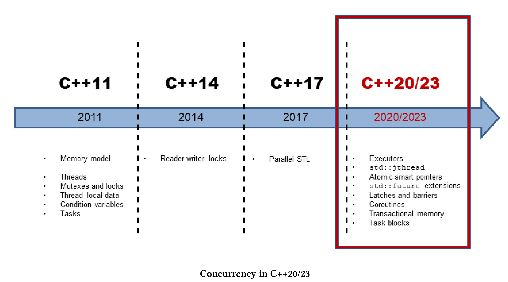
关于执行
Executor是C++中执行的基本构造块，在执行中扮演如同容器分配器的角色。异步、标准模板库的并行算法、future的协同、任务块的运行、网络TS(技术规范，technical specification)的提交、调度或延迟调用等功能都会使用到异步执行。此外，因为没有标准化的执行方式，所以“执行”是编程时的基本关注点。
下面是提案P0761的示例。
parallel_for的实现
void parallel_for(int facility, int n, function<void(int)> f) {
if(facility == OPENMP) {
#pragma omp parallel for
for(int i = 0; i < n; ++i) {
f(i);
}
}
else if(facility == GPU) {
parallel_for_gpu_kernel<<<n>>>(f);
}
else if(facility == THREAD_POOL) {
global_thread_pool_variable.submit(n, f);
}
}
这个parallel_for有一些问题：
- parallel_for这样看起来简单的函数，维护起来其实非常复杂。如果支持新的算法或新的并行范例，会变得越来越复杂。(译者：这里指的是分支中不同平台的实现，如果有新算法或新平台，则函数体会变得越来越臃肿。)
- 函数的每个分支的同步属性也不同。OpenMP可能会阻塞运行，直到所有的派生线程完成，GPU通常异步运行的，线程池可能阻塞或不阻塞。不完全的同步可能会导致数据竞争或死锁。
- parallel_for的限制太多。例如，没有办法使用自定义的线程池替换全局线程池：
global_thread_pool_variable.submit(n, f);
路漫漫其修远兮
2018年10月，已经提交了很多关于executor的提案了，许多设计非常开放，真期望它们能成为C++23的一部分，或有可能用C++20对单向执行进行标准化。本章主要是基于对executor的P0761号提案的设计建议，和在P0443和P1244提案中的描述进行的。P0443(统一的executor)中提出了单向执行，它可能是C++20的一部分，P1244(统一的executor的从属执行)提出了从属执行，它可能是C++23的一部分。本章还提到了相对较新的P1055提案，“适当executor提案”。
Executor是什么?
什么是executor?executor由一组关于在何处、何时以及如何运行可调用单元的规则组成。
- 何处: 可调用项可以在内部或外部处理器上运行，并且结果是从内部或外部处理器中进行读取。
- 何时: 可调用项可以立即运行，也可以延迟运行。
- 如何: 可调用项的可以在CPU或GPU上运行，甚至可以以向量化的方式执行。
更正式地说，每个executor都具有与所执行函数相关联的属性。
Executor属性
可以通过两种方式，将这些属性与executor关联起来：execution::require或execution::prefer
- 方向性：执行函数可以是“触发即忘”(
execution::oneway)、返回一个future(execution::twoway)或返回一个continuation(execution::then)。 - 基数性：执行函数可以创建一个(
execution::single)或多个执行代理(execution::bulk)。 - 阻塞性：函数可阻塞也可不阻塞，有三个互斥的阻塞属性:
execution::blocking.never，execution::blocking.possibly和execution::blocking.always。 - 持续性：任务可能是由客户端上的线程执行(
execution::continuation)，也可能不执行(execution::not_continuation)。 - 可溯性：指定跟踪未完成的工作(
exection::outstanding_work),或不跟踪(execution::outstanding_work.untracked)。 - 批量进度保证：指定在批量属性，
execution::bulk_sequenced_execution、execution::bulk_parallel_execution和execution::bulk_unsequenced_execution，这些属性是互斥的，通过使用这些属性创建的执行代理，可以保证任务的进度。 - 执行线程映射：将每个执行代理映射到一个新线程(
execution::new_thread_execution_mapping)，或者不映射(execution::thread_execution_mapping)。 - 分配器：将分配器(
execution::allocator)与executor关联起来。
也可以自己来定义属性。
Executor是基础构建块
因为executor是执行的构建块，C++的并发性和并行性特性在很大程度上依赖于它们。这也适用于扩展future，网络的N4734扩展，甚至是适用于STL的并行算法，以及C++20/23中的新并发特性，如门闩和栅栏、协程、事务性内存和任务块。
举个例子
使用Executor
下面的代码片段，展示了executor的用法:
std::async
// get an executor through some means
my_executor_type my_executor = ...
// launch an async using my executor
auto future = std::async(my_executor, [] {
std::cout << "Hello world, from a new execution agent!" << std::endl;
});
STL算法std::for_each
// get an executor through some means
my_executor_type my_executor = ...
// execute a parallel for_each "on" my executor
std::for_each(std::execution::par.on(my_executor),
data.begin(), data.end(), func);
网络技术规范：允许客户端连接默认系统Executor
// obtain an acceptor (a listening socket) through some means
tcp::acceptor my_acceptor = ...
// perform an asynchronous operation to accept a new connection
acceptor.async_accept(
[](std::error_code ec, tcp::socket new_connection)
{
...
}
);
网络技术规范：允许客户端连接带有线程池的Executor
// obtain an acceptor (a listening socket) through some means
tcp::acceptor my_acceptor = ...
// obtain an executor for a specific thread pool
auto my_thread_pool_executor = ...
// perform an asynchronous operation to accept a new connection
acceptor.async_accept(
std::experimental::net::bind_executor(my_thread_pool_executor,
[](std::error_code ec, tcp::socket new_connection)
{
...
}
)
);
网络技术规范N4734的std::experimental::net::bind_executor函数允许使用特定的executor。本例中，程序在线程池中执行Lambda函数。
要使用executor ，必须进行获取。
获取Executor
获取Executor的方法有很多。
源于自执行上下文static_thread_pool
// create a thread pool with 4 threads
static_thread_pool pool(4);
// get an executor from the thread pool
auto exec = pool.executor();
// use the executor on some long-running task
auto task1 = long_running_task(exec);
源自执行策略std:: Execution::par
// get par's associated executor
auto par_exec = std::execution::par.executor();
// use the executor on some long-running task
auto task2 = long_running_task(par_exec);
**源于系统的Executor **
通常使用线程执行的默认程序。如果有变量没有指定，那就可以使用它。
源于Executor适配器
// get an executor from a thread pool
auto exec = pool.executor();
// wrap the thread pool's executor in a logging_executor
logging_executor<decltype(exec)> logging_exec(exec);
// use the logging executor in a parallel sort
std::sort(std::execution::par.on(logging_exec), my_data.begin(), my_data.end());
logging_executo是循环executor的包装器。
Executor的目标
提案P1055中，executor的目的是什么呢?
- 批量化：权衡可调用单元的转换成本和大小。
- 异构化：允许可调用单元在异构上下文中运行，并能返回结果。
- 有序化：可指定调用顺序，可选的顺序有：后进先出LIFO、先进先出FIFO 、优先级或耗时顺序，甚至是串行执行。
- 可控化：可调用的对象必须是特定计算资源的目标，可以延迟，也可以取消。
- 持续化：需要可调用信号来控制异步，这些信号必须指示结果是否可用、是否发生了错误、何时完成或调用方是否希望取消，并且显式启动或停止可调用项也应该是可以的。
- 层级化：层次结构允许在不增加用例复杂性的情况下添加功能。
- 可用化：易实现和易使用，应该是主要目标。
- 组合化：允许用户扩展executor的功能。
- 最小化：executor中不应该存在任何库外添加的内容。
术语
提案P0761为可执行单元定义了一些执行的新术语:
- 执行资源：能够执行可调用的硬件和/或软件，执行单元可以是SIMD，也可以是管理大量线程集合的运行时。CPU或GPU的执行资源是异构的，所以它们有不同的限制。
- 执行上下文：是一个程序对象，表示特定的执行资源集合和这些资源中的执行代理。典型的例子是线程池、分布式运行时或异构运行时。
- 执行代理：特定执行单元的上下文，该上下文映射到执行资源上的单个可调用单元。典型的例子是CPU线程或GPU执行单元。
- 执行器：与特定上下文关联的执行对象。提供一个或多个执行函数，用于创建可调用函数对象的执行代理。
执行函数
执行程序可提供一个或多个执行函数，用于创建可调用对象的执行代理。执行程序至少支持以下六个功能中的一个。
| 名称 | 基数性 | 方向性 |
|---|---|---|
| execute | 单个 | oneway |
| twoway_execute | 单个 | twoway |
| then_execute | 单个 | then |
| bulk_execute | 批量 | oneway |
| bulk_twoway_execute | 批量 | twoway |
| bulk_then_execute | 批量 | then |
每个执行函数都有两个属性：基数性和方向性。
- 基数性
- 单个: 创建一个执行代理
- 批量 : 创建一组执行代理
- 方向性
- oneway : 创建执行代理，但不返回结果
- twoway : 创建一个执行代理，并返回一个可用于等待执行完成的future
- then : 创建一个执行代理，并返回一个可用于等待执行完成的future。给定的future准备好后，执行代理开始执行。
让我更简单的解释一下执行功能，他们都有一个可执行单元。
基数性：单个
单个基数性很简单，单向执行函数是以“触发即忘”的方式执行，返回void。它非常类似于“触发即忘”的future，但它不会自动阻止future的销毁。twoway执行函数返回future，可以使用它来获取结果。类似于std::promise，它将返回关联std::future的句柄。这种情况下，执行代理仅在提供的future准备好时才运行。
基数性：批量
批量基数性的情况比较复杂。这些函数创建一组执行代理，每个执行代理调用给定的可调用单元f，它们返回一个结果代理。f的第一个参数是shape参数，它是一个整型，代表代理类型的索引。进一步的参数是结果代理，如果是twoway执行器，那么就和所有代理共享shape代理。用于创建共享代理的参数，其生存期与代理的生存期绑定在一起。因为它们能够通过执行可调用单元产生相应的价值，所以称为代理。客户端负责通过这个结果代理，消除结果的歧义。
使用bulk_then_execute函数时，可调用单元f将其之前的future作为附加参数。因为没有代理是所有者，所以可调用单元f可通过引用获取结果、共享参数和前次结果。
execution::require
如何确保执行程序支持特定的执行功能?
在特殊情况下，你需要对其有所了解。
void concrete_context(const my_oneway_single_executor& ex)
{
auto task = ...;
ex.execute(task);
}
通常情况下，可以使用函数execution::require来申请。
template<class Executor>
void generic_context(const Executor& ex)
{
auto task = ...;
// ensure .toway_execute() is available with execution::require()
execution::require(ex, execution::single, execution::twoway).toway_execute(task);
}
实现原型
基于提案P0443R5，executor提案有了具体的实现原型。这个实现原型，可以帮助我们更深入地了解了批量基数。
// executor.cpp
#include <atomic>
#include <experimental/thread_pool>
#include <iostream>
#include <utility>
namespace execution = std::experimental::execution;
using std::experimental::static_thread_pool;
using std::experimental::executors_v1::future;
int main() {
static_thread_pool pool{ 4 };
auto ex = pool.executor();
// One way, single
ex.execute([] {std::cout << "We made it!" << std::endl; });
std::cout << std::endl;
// Two way, single
future<int> f1 = ex.twoway_execute([] {return 42; });
f1.wait();
std::cout << "The result is: " << f1.get() << std::endl;
std::cout << std::endl;
// One way, bulk.
ex.bulk_execute([](int n, int& sha) {
std::cout << "part " << n << ": " << "shared: " << sha << "\n";
}, 8,
[] {return 0; }
);
std::cout << std::endl;
// Two way, bulk, void result
future<void> f2 = ex.bulk_twoway_execute(
[](int n, std::atomic<short>& m) {
std::cout << "async part " << n;
std::cout << " atom: " << m++ << std::endl;
}, 8,
[] {},
[] {
std::atomic<short> atom(0);
return std::ref(atom);
}
);
f2.wait();
std::cout << "bulk result available" << std::endl;
std::cout << std::endl;
// Two way, bulk, non-void result.
future<double> f3 = ex.bulk_twoway_execute(
[](int n, double&, int&) {
std::cout << "async part " << n << " ";
std::cout << std::this_thread::get_id() << std::endl;
}, 8,
[] {
std::cout << "Result factory: "
<< std::this_thread::get_id() << std::endl;
return 123.456; },
[] {
std::cout << "Shared Parameter: "
<< std::this_thread::get_id() << std::endl;
return 0; }
);
f3.wait();
std::cout << "bulk result is " << f3.get() << std::endl;
}
该程序使用具有四个线程的线程池进行执行(第14行和第15行)。第18行和第23行使用单基数的执行函数，并创建两个单基数的代理。第二个是twoway执行函数，因此返回一个结果。
第30、39和56行中的执行函数具有批量基数性。每个函数创建8个代理(第32、43和60行)。第一种情况中，可调用单元会显示索引n和共享值sha，sha是由共享代理在第33行创建的。下一个执行函数bulk_twoway_execute更有趣。虽然它的结果代理返回void，但共享状态是原子变量atom。每个代理将其值增加1(第42行)。通过结果代理，最后一个执行函数(第56到69行)返回123.456。有趣的是，在可调用的执行、结果和共享代理的执行中涉及到多少线程呢？程序的输出显示结果和共享代理运行在同一个线程中，而其他代理运行在不同的线程中。

可协作中断的线程
std::jthread代表协作线程，除了C++11添加的std::thread外，std::jthread还可以自动汇入启动的线程，并发出中断信号。它的特性在提案P0660R8中进行了详细描述：可中断的协程。
自动汇入
下面std::thread的行为并不乐观。如果std::thread仍是可汇入的，则在其析构函数中调用std::terminate。如果调用了thre .join()或thre .detach()，则线程thr是可汇入的。
// threadJoinable.cpp
#include <iostream>
#include <thread>
int main() {
std::cout << std::endl;
std::cout << std::boolalpha;
std::thread thr{ [] {std::cout << "Joinable std::thread" << std::endl; } };
std::cout << "thr.joinable(): " << thr.joinable() << std::endl;
std::cout << std::endl;
}
程序执行的时候，会崩溃掉。

运行了两次，std::thread都会非法终止。第二次运行时，线程thr有显示了消息:“Joinable std::thread”。
下一个示例中，我将头文件<thread>替换为“jthread.hpp”。并使用C++20标准中的std::jthread。
// jthreadJoinable.cpp
#include <iostream>
#include "jthread.hpp"
int main() {
std::cout << std::endl;
std::cout << std::boolalpha;
std::jthread thr{ [] {std::cout << "Joinable std::thread" << std::endl; } };
std::cout << "thr.joinable(): " << thr.joinable() << std::endl;
std::cout << std::endl;
}
现在，如果线程thr会在调用析构时还是可汇入的，则会自动汇入。
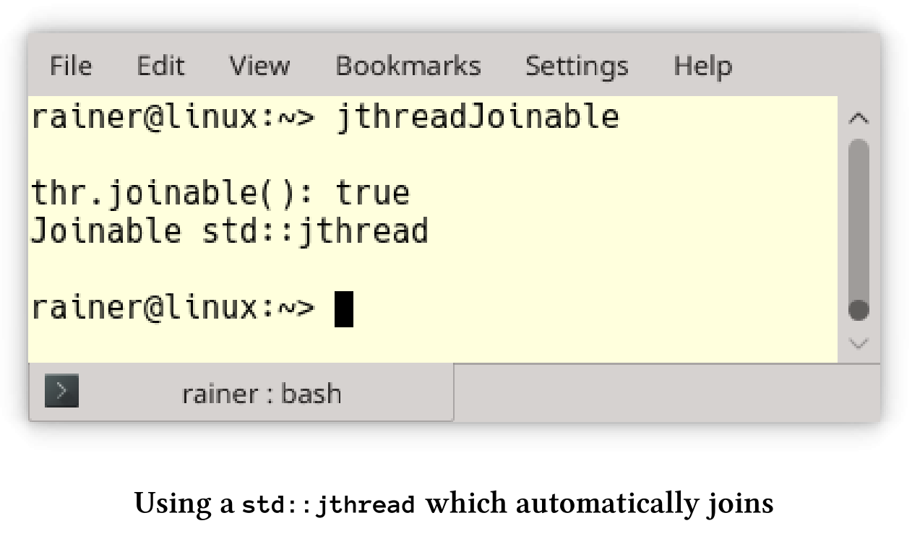
中断std::jthread
为了理解其中的思想，我举一个简单的例子。
// interruptJthread.cpp
#include "jthread.hpp"
#include <chrono>
#include <iostream>
using namespace ::std::literals;
int main() {
std::cout << std::endl;
std::jthread nonInterruptable([] {
int counter{ 0 };
while (counter < 10) {
std::this_thread::sleep_for(0.2s);
std::cerr << "nonInterruptable: " << counter << std::endl;
++counter;
}
});
std::jthread interruptable([](std::stop_token stoken) {
int counter{ 0 };
while (counter < 10) {
std::this_thread::sleep_for(0.2s);
if (stoken.stop_requested()) return;
std::cerr << "interruptable: " << counter << std::endl;
++counter;
}
});
std::this_thread::sleep_for(1s);
std::cerr << std::endl;
std::cerr << "Main thread interrupts both jthreads" << std::endl;
nonInterruptable.request_stop();
interruptable.request_stop();
std::cout << std::endl;
}
主程序中启动了两个线程nonInterruptable和interruptable(第13行和第22行)。与线程nonInterruptable不同，线程interruptable 会获取一个std::stop_token，并在26行使用它来检查线程是否被中断:stoken.stop_requested()。在中断的情况下返回Lambda函数，然后线程结束。interruptable.request_stop() (第37行)触发线程的结束。而nonInterruptable.request_stop()并没有什么效果。

下面来了解停止令牌、汇入线程和条件变量的更多细节。
停止令牌
jthread的附加功能基于std::stop_token、std::stop_callback和std::stop_source。
std::stop_token , std::stop_source 和std::stop_callback
std::stop_token、std::stop_callback或std::stop_source使其能够异步请求执行停止，或查询执行是否收到了停止信号。可以将std::stop_token传递给操作，然后使用它来主动轮询停止请求的令牌，或者通过std::stop_callback注册回调。停止请求由std::stop_source发送，这个信号影响所有相关的std::stop_token。std::stop_source、std::stop_token和std::stop_callback共享停止状态的所有权，其中request_stop()、stop_requested()和stop_possible()是原子操作。
std::stop_source和std::stop_token组件为停止处理提供了以下属性。
std::stop_source src的成员函数
| 成员函数 | 功能描述 |
|---|---|
| src.get_token() | 如果!stop_possible()，则构造一个不共享stop的stop_token对象状态；否则，构造一个stop_token对象，并共享使用*this的停止状态 |
| src.stop_possible() | 如果停止源可以用于请求停止，则为true |
| src.stop_requested() | 如果其中一个所有者调用了stop_possible()和request_stop()，则为true。 |
| src.request_stop() | 如果!stop_possible()或stop_requested()，则调用没有效果；否则，提出一个停止请求，以便同步调用stop_requested() == true和所有已注册的回调。 |
std::stop_token stoken的成员函数
| 成员函数 | 功能描述 |
|---|---|
| stoken.stop_possible() | 如果后续调用stop_required()将永远不会返回true |
| stoken.stop_requested() | 如果在相关的std::stop_source上调用了request_stop()，则为true，否则为false |
如果std::stop_token临时禁用了，那么可以用默认构造的令牌替换它。默认构造的令牌无效。下面的代码片段展示了，如何禁用和启用线程接受信号的功能。
临时禁用一个std::stop_token
std::jthread jthr([](std::stop_token stoken){
...
std::stop_token interruptDisabled;
std::swap(stoken, interruptDisabled);
...
std::swap(stoken, interruptDisabled);
...
}
std::stop_token interruptDisabled是无效的。这意味着，从第4行到第5行停止令牌被禁用，第6行才启用。
下面的示例展示了回调的用法。
// invokeCallback.cpp
#include "jthread.hpp"
#include <chrono>
#include <iostream>
#include <vector>
using namespace ::std::literals;
auto func = [](std::stop_token stoken) {
int counter{ 0 };
auto thread_id = std::this_thread::get_id();
std::stop_callback callBack(stoken, [&counter, thread_id] {
std::cout << "Thread id: " << thread_id
<< "; counter : " << counter << std::endl;
});
while (counter < 10) {
std::this_thread::sleep_for(0.2s);
++counter;
}
};
int main() {
std::cout << std::endl;
std::vector<std::jthread> vecThreads(10);
for (auto& thr : vecThreads)thr = std::jthread(func);
std::this_thread::sleep_for(1s);
for (auto& thr : vecThreads)thr.request_stop();
std::cout << std::endl;
}
这10个线程中的每个都调用Lambda函数func(第10 - 21行)。第13 - 16行中的回调显示线程id和计数器。由于主线程的睡眠时间为1秒，子线程的睡眠时间为1秒，所以调用回调时计数器为4。request_stop()会在每个线程上触发回调。

汇入线程
std::jhread是一个std::thread变种，它具有发出中断信号，并自动汇入的附加功能。为了支持这个功能，它需要一个std::stop_token。
std::jthread jthr停止令牌的成员函数
| 成员函数 | 功能描述 |
|---|---|
| jthr.get_stop_source() | 返回stop_token |
| jthr.request_stop() | 与src.request_stop()相同 |
condition_variable_any成员函数wait的新重载
std::condition_variable_any的三个wait变体wait_for和wait_until将有新的重载，新的重载会使用std::stop_token。
template <class Predicate>
bool wait_until(Lock& lock,
Predicate pred,
stop_token stoken);
template <class Clock, class Duration, class Predicate>
bool wait_until(Lock& lock,
const chrono::time_point<Clock, Duration>& abs_time,
Predicate pred,
stop_token stoken);
template <class Rep, class Period, class Predicate>
bool wait_for(Lock& lock,
const chrono::duration<Rep, Period>& rel_time,
Predicate pred,
stop_token stoken);
这个新的重载需要一个谓词函数。该版本在传入的std::stop_token stoken发出中断信号时，得到通知。这三个重载相当于下面的表达式：
// wait_until in lines 1 - 4
while(!pred() && !stoken.stop_requested()) {
wait(lock, [&pred, &stoken] {
return pred() || stoken.stop_requested();
});
}
return pred();
// wait_until in lines 6 - 10
while(!pred() && !stoken.stop_requested() && Clock::now() < abs_time) {
cv.wait_until(lock,
abs_time,
[&pred, &stoken] {
return pred() || stoken.stop_requested();
});
}
return pred();
// wait_for in lines 12 - 16
return wait_until(lock, chrono::steady_clock::now() + rel_time, std::move(pred), std\
::move(stoken));
调用wait之后，可以对停止请求进行检查。
cv.wait_until(lock, predicate, stoken);
if (stoken.stop_requested()){
// interrupt occurred
}
原子智能指针
std::shared_ptr由控制块和相关资源组成。std::shared_ptr能够保证控制块是线程安全的，但是对相关资源的访问就不是了。这意味着，修改引用计数器是一个原子操作，可以确保资源删除一次。
线程安全的重要性
这里只说明
std::shared_ptr具有定义良好的多线程语义是有多么重要。乍一看，使用std::shared_ptr并不是多线程程序的明智选择。根据定义，它是共享和可变的，是数据竞争和未定义行为的理想对象。另一方面，现代C++中有一条准则：不要接触内存。这意味着在多线程程序中，要尽可能使用智能指针。
关于原子智能指针的N4162提议，直接解决了当前智能指针实现的缺陷。这些缺陷可以归结为以下三点：一致性、正确性和高效性。下面将概述这三点，详系内容可参见提案N4162。
- 一致性：
std::shared_ptr对非原子数据类型，只能进行原子操作。 - 正确性：因为正确的使用方式是基于严格的规则，所以使用全局性的原子操作非常容易出错。很容易忘记使用原子操作——例如，使用
ptr = localPtr代替std::atomic_store(&ptr, localPtr)。由于数据竞争，结果是未定义的。如果使用原子智能指针，系统将不允许数据竞争的出现。 - 高效性：与
atomic_*函数相比，原子智能指针有很大的优势。原子版本是为特殊用例设计的，可以在内部使用std::atomic_flag作为一种低开销的自旋锁。如果将指针函数的非原子版设计为线程安全的，并用于单线程场景，那就太大材小用了，并且还会受到性能上的惩罚。
对我来说，正确性是最重要的。为什么?答案就在提案中。这个建议提供了一个线程安全的单链表，它支持插入、删除和搜索元素，并且这个单链表以无锁的方式实现。
线程安全的单链表

需要使用C++11编译器编译的地方都用红色标记。这个链表，使用原子智能指针实现要容易得多，也不容易出错。C++20的类型系统不允许在原子智能指针上使用非原子操作。
N4162提议将std::atomic_shared_ptr和std::atomic_weak_ptr作为原子智能指针。将它们合并到主流的ISO C++标准中，就变成了std::atomic: std::atomicstd::shared_ptr<T>和std::atomicstd::weak_ptr<T>偏特化模板。
因此，std::shared_ptr的原子操作在C++20中是废弃的。
扩展特性
promise和future形式的任务在C++11中的名声很微妙。一方面，它们比线程或条件变量更容易使用；另一方面，也有明显的不足——不能合成。C++20/23中弥补了这个缺陷。
我曾经以std::async、std::packaged_task或std::promise和std::future的形式，写过关于任务的文章。C++20/23中，我们可以使用加强版的future。
并发技术标准 v1
std::future
扩展future很容易解释。首先，扩展了C++11的std::future接口；其次，一些新功能可组合创建特殊的future。先从第一点开始说起：
扩展future有三种新特性:
- 展开构造函数，可用于展开已包装的外部future(
future<future<T>>)。 - 如果共享状态可用，则返回谓词is_ready。
- 添加了可延续附加到future的方法。
起初，future的状态可以是valid或ready。
valid与ready
- valid: 如果future具有共享状态(带有promise)，那么它就是有效的。这并不是必须的，因为可以默认构造一个没有promise的
std::future。 - ready: 如果共享状态可用，future就已经准备好了。换句话说，如果promise已经完成，则future就已经准备好了。
因此，(valid == true)是(ready == true)的一个必要不充分条件。
我对promise和future的建模就是数据通道的两个端点。

现在，valid和ready的区别就非常自然了。如果有一个数据通道的promise，则future的状态是valid。如果promise已经将其结果放入数据通道中，则future的状态是ready。
现在，为了延迟future，我们来了解一下then。
使用then的延迟
then具有将一个future附加到另一个future的能力，这样一个future就能被另一个future所嵌套。展开构造函数的任务是对外部future进行展开的。
N3721提案
迎来第一个代码段之前，必须介绍一下N3721提案。本节的大部分内容是关于“
std::future<T>和相关API”的改进建议。奇怪的是，提案作者最初没有使用get获取future最后的结果。因此，我在示例添加了res.get，并将结果保存在变量myResult中，并修正了一些错别字。
#include <future>
using namespace std;
int main() {
future<int> f1 = async([]() {return123; });
future<string> f2 = f1.then([](future<int> f) {
return to_string(f.get()); // here .get() won't block
});
auto myResult = f2.get();
}
to_string(f.get())(第7行)和f2.get()(第10行)之间有细微的区别。正如我在代码片段中已经提到的：第一个调用是非阻塞/异步的，第二个调用是阻塞/同步的。f2.get() 会一直等待，直到future链的结果可用。这种方法也适用于长链似的调用：f1.then(…).then(…).then(…).then(…).then(…)。最后，阻塞式调用f2.get()获取结果。
std::async , std::packaged_task和std::promise
关于std::async、std::package_task和std::promise的扩展没有太多可说的。那为什么还要提一下，是因为在C++ 20/23中这三种扩展都会返回扩展了的future。
future的构成令人越来越兴奋了，现在我们可以组合异步任务了。
创建新future
C++20获得了四个用于创建新future的新函数。这些函数是std::make_ready_future、std::make_execptional_future、std::when_all和std::when_any。首先，让我们看看std::make_ready_future和std::make_exceptional_future。
std::make_ready_future和std::make_exceptional_future
这两个功能都立即创建了一个处于ready状态的future 。第一种情况下，future是有价值的；第二种情况下是出现了异常。一开始看起来很奇怪的事情，但细想却很有道理。C++11中，创建一个future需要promise。即使共享状态可用，这也是必要的。
使用make_ready_future创建future
future<int> compute(int x) {
if (x < 0) return make_ready_future<int>(-1);
if (x == 0) return make_ready_future<int>(0);
future<int> f1 = async([]() { return do_work(x); });
return f1;
}
因此，如果(x > 0)保持不变，则只能通过promise来计算结果。
简短说明一下：这两个函数都是单子(monad)中返回的函数挂件。现在，让我们从future的合成开始说起。
std::when_any和std::when_all
这两种功能有很多共同之处。首先，来看看输入：
template < class InputIt >
auto when_any(InputIt first, InputIt last)
-> future<when_any_result<
std::vector<typename std::iterator_traits<InputIt>::value_type>>>;
template < class... Futures >
auto when_any(Futures&&... futures)
-> future<when_any_result<std::tuple<std::decay_t<Futures>...>>>;
template < class InputIt >
auto when_all(InputIt first, InputIt last)
-> future<std::vector<typename std::iterator_traits<InputIt>::value_type>>;
template < class... Futures >
auto when_all(Futures&&... futures)
-> future<std::tuple<std::decay_t<Futures>...>>;
这两个函数都接受一对关于future范围的迭代器，或任意数量的future迭代器。二者最大的区别是，在使用迭代器对的情况下，future必须是相同类型的；而对于任意数量的future，可以使用不同类型的future，甚至可以混用std::future和std::shared_future。
函数的输出，取决于是否使用了一对迭代器或任意数量的future(可变参数模板)。这两个函数都返回一个future。如果使用一对迭代器，将得到std::vector: future<vector<future<R>>>中的future。如果使用可变参数模板，会得到std::tuple: future<tuple<future<R0>, future<R1>,…>>。
已经了解了它们的共性。如果所有输入future(when_all)或任何输入future(when_any)都处于ready状态，那么这两个函数返回的future也就处于ready状态。
接下来的两个例子，会展示std::when_all和std::when_any的用法。
std::when_all
Future的组合与std::when_all
#include <future>
using namespace std;
int main() {
shared_future<int> shared_future1 = async([] {return intResult(123); });
future<string> future2 = async([]() {return stringResult("hi"); });
future<tuple<shared_future<int>, future<string>>>all_f =
when_all(shared_future1, future2);
future<int> result = all_f.then(
[](future<tuple<shared_future<int>, future<string>>> f) {
return doWork(f.get());
});
auto myResult = result.get();
}
future all_f(第10行)由future的shared_future1(第7行)和future2(第8行)组成。如果所有future都准备好了，则执行第13行获取future的结果。本例中，将执行第15行中的all_f。结果保存在future中，可以在第18行进行获取。
std::when_any
Future的组合与std::when_any
#include <future>
#include <vector>
using namespace std;
int main() {
vector<future<int>> v{ ..... };
auto future_any = when_any(v.begin(), v.end());
when_any_result<vector<future<int>>> result = future_any.get();
future<int>& read_future = result.futures[result.index];
auto myResult = ready_future.get();
}
when_any中的future可以在第11行中获取结果。result会提供已经准备就绪future的信息。如果不使用when_any_result，就没必要查询每个future是否处于ready状态了。
如果它的某个输入future处于ready状态，那么future_any就处于ready状态。第11行中的future_any.get()会返回future的结果。通过使用result.futures[result.index](第13行)，可以获取ready_future，并且由于使用ready_future.get()，也可以对任务的结果进行查询。
如P0701r1中描述，“它们没想象的那样通用、有表现力或强大”，其既不是标准化的future，也不是并发的TS v1 future。此外，执行者作为执行的基本构件，必须与新的future相统一。
统一的Future
标准化和并发TSv1的future有什么缺点吗?
缺点
上述文件(P0701r1)很好地说明了future的不足之处。
future/promise不应该耦合到std::thread执行代理中
C++11只有一个executor:std::thread。因此，future和std::thread是不可分割的。这种情况在C++17和STL的并行算法中得到了改变，新的executor中变化更大，并可以使用它来配置future。例如，future可以在单独的线程中运行，也可以在线程池中运行，或者只是串行运行。
在哪里持续调用了.then ?
下面的例子中，有一个简单的延续。
使用std::future的延续
future<int> f1 = async([]() { return 123; });
future<string> f2 = f1.then([](future<int> f) {
return to_string(f.get());
});
问题是：延续应该在哪里运行?有一些可能性:
- 消费端：消费者执行代理总是执行延续。
- 生产端：生产者执行代理总是执行延续。
- inline_executor语义：如果在设置延续时，共享状态已就绪，则使用者线程将执行该延续。如果在设置延续时，共享状态还没有准备好，则生产者线程将执行该延续。
- thread_executor语义：使用新
std::thread执行延续。
前两种可能性有一个显著的缺点：它们会阻塞。第一种情况下，使用者阻塞，直到生产者准备好为止。第二种情况下，生产者阻塞，直到消费者准备好。
下面是文档P0701r1中的一些不错的executor传播用例:
auto i = std::async(thread_pool, f).then(g).then(h);
// f, g and h are executed on thread_pool.
auto i = std::async(thread_pool, f).then(g, gpu).then(h);
// f is executed on thread_pool, g and h are executed on gpu.
auto i = std::async(inline_executor, f).then(g).then(h);
// h(g(f())) are invoked in the calling execution agent.
将future传递给.then的延续是不明智的
因为传递给continuation的是future，而不是它的值，所以语法非常复杂。越多的传递会让表达式变得非常复杂。
std::future<int> f1 = std::async([]() { return 123; });
std::future<std::string> f2 = f1.then([](std::future<int> f) {
return std::to_string(f.get());
});
现在，我假设这个值可以传递，因为std::future<int>重载了to_string。
使用std::future传递值的延续
std::future<int> f1 = std::async([]() { return 123; });
std::future<std::string> f2 = f1.then(std::to_string);
when_all和when_any的返回类型让人费解
介绍std::when_all和std::when_any的这两章，展示了它们相当复杂的使用方法。
future析构中的条件块必须去掉
触发即忘的future看起来非常有用，但也有一个很大的限制。由std::async创建的future会等待它的析构函数，直到对应的promise完成。看起来并发的东西，实际是串行运行的。根据文档P0701r1的观点，这是不可接受的，并且非常容易出错。
我在参考章节中描述了触发即忘future的特殊行为。
当前值和future值应该易于组合
C++11中，没有简易的方法来创建future，必须从promise开始。
在当前标准中创造future
std::promise<std::string> p;
std::future<std::string> fut = p.get_future();
p.set_value("hello");
这可能会因为并发技术规范v1中的std::make_ready_future函数而改变。
使用并发TS v1标准创建future
std::future<std::string> fut = make_ready_future("hello");
使用future和非future参数将使我们的工作更加舒服。
bool f(std::string, double, int);
std::future<std::string> a = /* ... */;
std::future<int> c = /* ... */;
std::future<bool> d1 = when_all(a, make_ready_future(3.14), c).then(f);
// f(a.get(), 3.14, c.get())
std::future<bool> d2 = when_all(a, 3.14, c).then(f);
// f(a.get(), 3.14, c.get())
并发技术标准v1中，d1和d2都是不可能的。
五个新概念
提案1054R0提出了future和promise的5个新概念。
- FutureContinuation：使用future的值或异常作为参数调用的可调用对象。
- SemiFuture：它可以被绑定到一个执行器上，并产生一个
ContinuableFuture的操作(f = sf.via(exec))。 - ContinuableFuture：它细化了SemiFuture，实例可以在
(f.then(c))上附加一个FutureContinuation。当future处于ready状态时，就会在future关联执行器上执行。 - SharedFuture：它细化了ContinuableFuture，实例可以附加多个FutureContinuation。
- Promise：每一个promise都与一个future相关联，当future中设置好一个值或一个异常时，future处于ready状态。
文章还对这些新概念进行了详细描述。
future和promise的五个新概念
template <typename T>
struct FutureContinuation
{
// At least one of these two overloads exists:
auto operator()(T value);
auto operator()(exception_arg_t, exception_ptr exception);
};
template <typename T>
struct SemiFuture
{
template <typename Executor>
ContinuableFuture<Executor, T> via(Executor&& exec) &&;
};
template <typename Executor, typename T>
struct ContinuableFuture
{
template <typename RExecutor>
ContinuableFuture<RExecutor, T> via(RExecutor&& exec) &&;
template <typename Continuation>
ContinuableFuture<Executor, auto> then(Continuation&& c) &&;
};
template <typename Executor, typename T>
struct SharedFuture
{
template <typename RExecutor>
ContinuableFuture<RExecutor, auto> via(RExecutor&& exec);
template <typename Continuation>
SharedFuture<Executor, auto> then(Continuation&& c);
};
template <typename T>
struct Promise
{
void set_value(T value) &&;
template <typename Error>
void set_exception(Error exception) &&;
bool valid() const;
};
根据这些概念，提出一些意见:
- 可以使用值或异常调用FutureContinuation。它是一个可调用的单元，使用future的值或异常。
- 所有future(SemiFuture 、ContinuableFuture和SharedFuture)都有一个方法，可以通过该方法指定一个执行器并返回一个ContinuableFuture，并且可以通过使用不同的执行程序将一种future类型转换为另一种类型。
- 只有一个ContinuableFuture或SharedFuture有then方法用来继续。then方法可以接受FutureContinuation，并返回ContinuableFuture。
- SharedFuture是一个可复制的future 。
- Promise可以设置值或异常。
未完成的工作
提案1054R0中为未来留下了几个需要完成的工作：
- future和promise还有前进空间。
- 非并发执行代理使用future和promise时需要同步。
std::future/std::promise的互操作性.- future的展开，支持包括
future<future<T>>的更高级形式。 - when_all/when_any/when_n
- async
门闩和栅栏
门闩和栅栏是比较简单的线程同步机制，其能使一些线程阻塞，直到计数器变为零时解除阻塞。首先，不要把栅栏和内存栅栏混为一谈。C++ 20/23中，我们假设有三种门闩和栅栏：std::latch、std::barrier和std::flex_barrier。
首先，要回答两个问题:
- 这三种同步线程的机制有什么不同?
std::latch只能使用一次，但是std::barrier和std::flex_barrier可以使用多次。此外，std::flex_barrier允许计数器变为0时执行一个函数。 - 哪些支持的门闩和栅栏的用例，在C++11和C++14中无法通过future、线程或条件变量与锁结合来实现呢?门闩和栅栏并不涉及新的用例，但它们使用起来要容易得多。通常是在内部使用无锁机制，所以它们还具有更高的性能。
##std::latch
std::latch门闩是一个倒计时器，该值可以在构造函数中设置。门闩可以通过使用latch.count_down_and_wait来减小计数，并阻塞线程，直到计数器变为0。另外，latch.count_down(n)可以将计数器减少n，而不进行阻塞。如果没有给出参数，n默认为1。门闩也有latch.is_ready可以用来检查计数器是否为零，以及latch.wait会阻塞线程，直到计数器变为零。std::latch的计数器不能增加或重置，因此不能复用。
下面是来自N4204提案的一个简短代码段。
void DoWork(threadpool *pool){
latch completion_latch(NTASKS);
for (int i = 0; i < NTASKS; ++i){
pool->add_task([&]{
// perform work
...
completion_latch.count_down();
});
}
// Block until work is done
completion_latch.wait();
}
std::latch completion_latch在其构造函数中将计数器设置为NTASKS (第2行)，线程池执行NTASKS(第4 - 8行)个任务。每个任务结束时(第7行)，计数器递减。第11行是运行DoWork函数的线程，以及工作流的栅栏。这样，线程就会阻塞，直到所有任务都完成。
std::barrier与std::latch非常相似。
##std::barrier
std::latch和std::barrier之间的区别是，std::barrier计数器可以重置，所以可以多次地使用。计数器变为零之后，立即进入完成阶段。与std::flex_barrier有关，std::barrier有一个空的完成阶段。std::barrier有两个有趣的成员函数：std::arrive_and_wait和std::arrive_and_drop。当std::arrive_and_wait在同步点阻塞时，std::arrive_and_drop会从相关线程集中，删除自己的线程。未指定此函数是否阻塞，直到完成阶段结束。这里没有对函数块进行指定，是否到完成阶段才算结束。
N4204提案
该建议使用
vector<thread*>，并将动态分配的线程推给vector：workers.push_back(new thread([&]{ ... }))。这会产生内存泄漏。应该将线程放到std::unique_ptr中，或者直接在vector中进行创建:workers.emplace_back([&]{ ... })，这个适用于std::barrier和std::flex_barrier。本例中使用std::flex_barrier的名称有点迷，例如：std::flex_barrier被称为notifying_barrier。所以我把名字改成flex_barrier，会更容易理解一些。此外，代表线程数量的n_threads没有初始化，我把它初始化为NTASKS。
深入研究std::flex_barrier和完成阶段之前，这里给出一个简短的示例，演示std::barrier的用法。
std::barrier
void DoWork(){
Tasks& tasks;
int n_threads{NTASKS};
vector<thread*> workes;
barrier task_barrier(n_threads);
for (int i = 0; i < n_threads; ++i){
workers.push_back(new thread([&]{
bool active = ture;
while(active){
Task task = tasks.get();
// perform task
...
task_barrier.arrive_and_wait();
}
});
}
// Read each stage of the task until all stages are complete.
while(!finished()){
GetNextStage(tasks);
}
}
第6行中的barrier用于协调多个执行线程，线程的数量是n_threads(第3行)，每个线程通过tasks.get()获取(第12行中)任务，执行该任务并阻塞(第15行)，直到所有线程完成其任务为止。之后，在第12行接受一个新任务，active在第11行返回true。
与std::barrier不同，std::flex_barrier多一个构造函数。
std::flex_barrier
此构造函数接受在完成阶段调用可调用单元。可调用单元必须返回一个数字，使用这个数字设置计数器的值，返回-1意味着计数器在下一次迭代中保持相同的计数器值，而小于-1的数字是不允许的。
完成阶段会执行以下步骤:
- 阻塞全部线程
- 任意个线程解除阻塞，并执行可调用单元。
- 如果完成阶段已经完成，那么所有线程都将解除阻塞。
下面的段代码展示了std::flex_barrier的用法
void DoWork(){
Tasks& tasks;
int initial_threads;
int n_threads{NTASKS};
atomic<int> current_threads(initial_threads);
vector<thread*> workers;
// Create a flex_barrier, and set a lambda that will be
// invoked every time the barrier counts down. If one or more
// active threads have completed, reduce the number of threads.
std::function rf = [&]{return current_threads;};
flex_barrier task_barrier(n_threads, rf);
for (int i = 0; i < n_threads; ++i){
workers.push_back(new thread([&]{
bool active = true;
while(active) {
Task task = tasks.get();
// perform task
...
if (finished(task)){
current_threads--;
active = false;
}
task_barrier.arrive_and_wait();
}
}))；
}
// Read each stage of the task until all stages are cpmplete.
while(!finished()){
GetNextStage(tasks);
}
}
这个例子采用了与std::barrier类似的策略，不同的是这次std::flex_barrier计数器是在运行时进行调整，所以std::flex_barrier task_barrier在第11行获得一个Lambda函数。这个Lambda函数通过引用获取变量current_thread： [&] { return current_threads; }。变量在第21行进行递减，如果线程完成了任务，则将active设置为false。因此，计数器在完成阶段是递减的。
与std::barrier或std::latch相比，std::flex_barrier可以增加计数器。
可以在cppreference.com上阅读关于std::latch、std::barrier、std::flex_barrier的更多细节。
协程
协程是可以挂起，保持函数执行状态，并可以在之后继续执行的方式。这种方式的演化在C++中算是一种进步，协程大概率是C++20标准的一部分。
本节中介绍的C++20中的新思想，其实已经已经相当古老了。“coroutine”这个词是由Melvin Conway创造的，他在1963年关于编译器的出版物中使用了这个词。Donald Knuth称程序是协程的一个特例。有时候，有些想法需要一段时间才能被世人接受。
C++20用两个新的关键字co_await和co_yield，扩展了C++函数的执行。
co_await可以挂起表达式，如果在函数func中使用co_await，当调用auto getResult = func()不阻塞时，函数的结果不可用。不是资源消耗式的阻塞，而是资源友好式的等待。
co_yield允许编写一个生成器，生成器每次返回一个新值。生成器是一种数据流，并可以从中选择相应的值。数据流可以是无限的，这样我们就可以使用C++进行惰性求值了。
生成器
下面的程序不太难，函数getNumbers返回所有的整数，从开始到结束递增为inc。begin必须小于end，且inc必须是正数。
贪婪生成器
// greedyGenerator.cpp
#include <iostream>
#include <vector>
std::vector<int> getNumbers(int begin, int end, int inc = 1) {
std::vector<int> numbers;
for (int i = begin; i < end; i += inc) {
numbers.push_back(i);
}
return numbers;
}
int main() {
std::cout << std::endl;
const auto numbers = getNumbers(-10, 11);
for (auto n : numbers) std::cout << n << " ";
std::cout << "\n\n";
for (auto n : getNumbers(0, 101, 5)) std::cout << n << " ";
std::cout << "\n\n";
}
当然，这里用getNumbers重新发明轮子了，自从C++11以来，这项工作可以使用std::iota来完成。
下面是输出：

对这个程序的两个观察结果比较重要：一方面，即使我只对一个有1000个元素的vector的前5个元素感兴趣，第8行的vector也会存放这1000个值。另一方面，很容易将函数getNumbers转换为惰性生成器。
惰性生成器
// lazyGenerator.cpp
#include <iostream>
#include <vector>
generator<int> generatorForNumbers(int begin, int end, int inc = 1) {
for (int i = begin; i < end; i += inc) {
co_yield i;
}
}
int main() {
std::cout << std::endl;
const auto numbers = generatorForNumbers(-10);
for (int i = 1; i <= 20; ++i) std::cout << numbers << " ";
std::cout << "\n\n";
for (auto n : generatorForNumbers(0, 5)) std::cout << n << " ";
std::cout << "\n\n";
}
当greedyGenerator.cpp中的函数getNumbers返回std::vector<int>时，lazyGenerator.cpp中的协程generatorForNumbers返回生成器。第18行中的生成器编号或第24行的generatorForNumbers(0,5)在请求时，会返回一个新编号，并基于for循环触发查询。更准确地说，协程的查询通过co_yield i返回值i，并立即暂停执行。如果请求一个新值，协程将在该位置恢复执行。
第24行中的generatorForNumbers(0,5)是生成器的直接使用的一种方式。
我想强调一点，协程generatorForNumbers会创建无限的数据流，因为第8行中的for循环没有结束条件。如果值的数量有限(第20行)是可以的，但因为没有结束条件，第24行不会停下来，而会一直运行。
因为协程是C++添加的一个新概念，所以我想聊一聊它的细节。
其他细节
典型用例
协程是编写事件驱动应用的常用方法，可以是模拟、游戏、服务器、用户界面，甚至是算法。协同程序通常用于协作的多任务处理，协作式的多任务处理的关键是，每个任务需要多少时间就花多少时间。这与抢占式的多任务形成了对比，我们可以有计划的决定每个任务占用CPU的时间。
协程还有很多种。
基础概念
C++20中的协程是不对称的、优秀的、无堆栈的。
非对称协程的工作流，会返回给调用者，这并不适用于对称协程。对称协同程序，可以将其工作流委托给另一个协同程序。
优秀的协程类似于优秀的函数，因为协序的行为类似于数据。这意味着可以将它们作为函数的参数或返回值，将它们存储在变量中。
无堆栈协程使其能够挂起，并恢复上级协同程序，但此协程不能调用另一个协程。所以，无堆栈协程通常称为可恢复函数。
设计目的
Gor Nishanov描述了协同程序的设计目的：
协程应该具有的能力：
- 高度可扩展性(可到数十亿并发协程)。
- 具有高效的恢复和挂起，其成本不高于函数的开销。
- 与现有特性进行无缝，无开销交互。
- 具有开放的协同程序机制，允许库设计人员开发使用各种高级语义(如生成器、goroutines、任务等)。
由于可扩展性和与现有设施的无缝交互的设计理念，所以协同程序是无堆栈的。相反，对于堆栈式协程，在Windows上会保留默认堆栈为1MB，在Linux上会保留默认堆栈为2MB。
将函数变成协程有四种方式。
成为协程
函数使用了协程，就变成了协程：
- co_return
- co_await
- co_yield
- co_await基于for循环的表达式。
这个解释源自提案N4628。
最后，讨论下新的关键字co_return、co_yield和co_await。
co_return , co_yield和co_await
co_return：协程使用co_return作为其返回语句。
co_yield：可以实现一个生成器。这意味着可以创建一个生成器，并生成一个无限的数据流，可以连续地查询值。生成器generator<int> generatorForNumbers(int begin, int inc= 1)的返回类型是generator<int>。generator<int>内部包含一个特殊的promise p，这样调用co_yield i就等于调用co_await p.yield_value(i)。co_yield i可以调用任意次。调用之后，协程立即暂停。
co_await：会让协程挂起，并在之后恢复。co_await exp中的exp必须是可等待的表达式。exp必须实现一个特定的接口，这个接口由await_ready、await_suspend和wait_resume三个函数组成。
co_await的典型用例是事件等待服务器。
阻塞式服务器
Acceptor acceptor{443};
while (true){
Socket socket= acceptor.accept(); // blocking
auto request= socket.read(); // blocking
auto response= handleRequest(request);
socket.write(response); // blocking
}
这个服务器非常简单，因为会在同一个线程中依次响应每个请求。服务器监听端口443(第1行)，接受连接(第3行)，读取来自客户机的数据(第4行)，并将应答信息传回客户机(第6行)。第3、4和6行中的所有调用都被阻塞。
由于co_await，阻塞调用现在可以暂停并恢复。
等待式服务器
Acceptor acceptor{443};
while (true){
Socket socket= co_await acceptor.accept();
auto request= co_await socket.read();
auto response= handleRequest(request);
co_await socket.write(response);
}
事务性内存
事务性内存是基于数据库理论中的事务概念。事务性内存可让使用线程变得更加容易，原因有二：第一，避免数据竞争和死锁；第二，可以组合事务。
事务具有以下属性的操作：原子性(Atomicity)、一致性(Consistency)、独立性(Isolation)和持久性(Durability)(ACID)。除了持久性和存储操作结果之外，所有的属性都适用于C++的事务性内存。现在还有三个问题。
ACI(D)
ACID是数据库事务正确执行的四个基本要素的缩写。
对于由一些语句组成的原子块，原子性、一致性和独立性意味着什么呢?
原子块
atomic{
statement1;
statement2;
statement3;
}
原子性：执行块中的所有语句或不执行块中任何语句。
一致性：系统始终处于一致的状态，所有事务确定统一的顺序。
独立性：每个事务在完全独立的情况下运行。
如何应用这些属性?事务会记住初始状态，并且在不同步的情况下执行。如果在执行过程中发生冲突，事务将中断，并恢复到初始状态，此回滚操作将再次执行事务。如果事务结束时，初始状态仍然存在，则为提交事务。冲突通常可以通过标记状态的引用来检测。
事务是一种推测行为，只有在初始状态时才会提交。与互斥锁相比，它是一种相对乐观的方法。事务在不同步的情况下执行，只有在没有冲突的情况下才会释放。互斥是一种较为悲观的方法。首先，互斥确保没有其他线程可以进入临界区。接下来，如果线程是互斥量的独占所有者，那么它将进入临界区，从而阻塞其他线程。
C++以两种方式支持事务性内存：同步块和原子块。
同步块和原子块
目前为止，只聊了事务，现在来聊下同步块和原子块，两者可以相互封装。更具体地说，同步块不是事务，因为它们可以执行不安全事务。事务不安全的例子，类似于控制台输出的代码无法撤消。因此，同步块通常也称为自由块。
同步块
同步块的行为就像全局锁一样，这意味着所有同步块都遵循相同的顺序，特别对同步块的所有更改，都可以在之后的同步块中使用。由于事务的提交与启动是同步的，所以在同步的块之间存在着同步关系。它们会建立一个总顺序，所以同步块不会死锁。互斥锁保护的是程序的关键区域，而同步块的则是保护整个程序。
这也就是为什么下面的程序定义良好的原因。
一个同步块
// synchronized.cpp
#include <iostream>
#include <vector>
#include <thread>
int i = 0;
void increment() {
synchronized{
std::cout << ++i << " ,";
}
}
int main() {
std::cout << std::endl;
std::vector<std::thread> vecSyn(10);
for (auto& thr : vecSyn)
thr = std::thread([] {for (int n = 0; n < 10; ++n)increment(); });
for (auto& thr : vecSyn)thr.join();
std::cout << "\n\n";
}
第7行中的变量i是一个全局变量，同步块中的操作是事务不安全的，但是程序是定义良好的。10个线程并发调用函数increment(第21行)，10次增加第11行的变量i，对i和std::cout的访问是完全按顺序进行的，这就是同步块的特性。
程序返回预期的结果。i的值是按递增的顺序写的，中间用逗号隔开。下面是输出。
那么数据竞争呢?可以把它们与同步块放在一起。对源代码的一个小修改就可以引入数据竞争。
同步块的数据竞争
// nonsynchronized.cpp
#include <chrono>
#include <iostream>
#include <vector>
#include <thread>
using namespace std::chrono_literals;
int i = 0;
void increment() {
synchronized{
std::cout << ++i << " ,";
this_thread::sleep_for(1ns);
}
}
int main() {
std::cout << std::endl;
std::vector<std::thread> vecSyn(10);
std::vector<std::thread> vecUnsyn(10);
for (auto& thr : vecSyn)
thr = std::thread([] {for (int n = 0; n < 10; ++n)increment(); });
for (auto& thr : vecUnsyn)
thr = std::thread([] {for (int n = 0; n < 10; ++n)increment(); });
for (auto& thr : vecSyn)thr.join();
for (auto& thr : vecSvecUnsynyn)thr.join();
std::cout << "\n\n";
}
为了观察到数据竞争，我让同步块休眠了1纳秒(第16行)。同时，在没有没有同步块(第30行)时，访问输出流std::cout。总共有20个线程增加了全局变量i，其中一半没有同步，所以输出显示就出问题了。

我在有输出的问题的输出周围画上红色的圆圈。这些是std::cout由至少两个线程同时写入的位置。C++11保证字符是自动编写的，而这并不是问题的原因。更糟糕的是，变量i是由多于两个线程进行修改的，这就是一场数据竞赛。因此，程序会出现未定义行为。计数器的最终结果应该是200，但结果是199。这意味着，计数中有值被覆盖了。
同步块的顺序也适用于原子块。
原子块
可以在同步块中执行事务不安全代码，但不能在原子块中执行。原子块有三种形式：atomic_noexcept、atomic_commit和atomic_cancel。三个后缀_noexcept、_commit和_cancel定义了原子块如何对异常进行管理：
atomic_noexcept：如果抛出异常，将调用std::abort中止程序。
atomic_cancel：默认情况下，会调用std::abort。如果抛出一个终止事务的安全异常，则不存在这种情况。在这种情况下，事务将取消，并进入初始状态并抛出异常。
atomic_commit：如果抛出异常，则提交事务。
具有事务安全异常的有: std::bad_alloc, std::bad_array_length, std::bad_array_new_length, std::bad_cast, std::bad_typeid, std::bad_exception, std::exception, 以及所有(从这些异常中)派生出来的异常。
transaction_safe与transaction_unsafe的代码比较
可以将函数声明为transaction_safe，或者将transaction_unsafe属性附加到它。
transaction_safe与transaction_unsafe
int transactionSafeFunction() transaction_safe;
[[transaction_unsafe]] int transactionUnsafeFunction();
transaction_safe属于函数类型，但transaction_safe是什么意思?根据N4265, transaction_safe函数是一个具有transaction_safe定义的函数。如果不出现下列属性定义，则该定义成立:
- 有volatile参数或变量。
- 有事务不安全的语句。
- 当函数体中使用一个类的构造和析构函数，而这个类具有volatile的非静态成员。
当然，这个transaction_safe定义是不稳定的，你可以阅读提案N4265 ，了解更多细节。
任务块
任务块使用fork-join范型来并行执行任务，其已经是C++扩展并行性2版技术规范的一部分。因此，我们很有可能在C++20中看到它们。
谁在C++中发明了任务块?微软的Parallel Patterns Library (PPL)和英特尔的Threading Building Blocks (TBB)都参与了N4441提案。另外，Intel使用了他们的Cilk Plus语言库。
fork-join这个很容易理解。
Fork和Join
解释fork-join范式最直接的方法是使用图形。

它是如何工作的?
创建者调用define_task_block或define_task_block_restore_thread，此调用会创建一个任务块，该任务块可以创建任务，也可以等待任务完成，同步位于任务块的末尾。创建新任务是fork阶段，任务块的同步是工作流的联接阶段，这只是一个简单的描述。让我们来看一段代码。
定义一个任务块
template <typename Func>
int traverse(node& n, Func &&f){
int left = 0, right = 0;
define_task_block(
[&](task_block& tb){
if (n.left) tb.run([&]{left = traverse(*n.left, f);});
if (n.right) tb.run([&]{right = traverse(*n.right, f);});
}
);
return f(n) + left + right;
}
traverse是一个函数模板，它在树的每个节点上调用函数f。关键字define_task_block定义了任务块，任务块tb可以在任务块中启动一个新任务，这发生在第6行和第7行树的左右分支上。第9行是任务块的末端，因此是同步点。
HPX(高性能ParalleX)
上面的例子来自HPX (High-Performance ParalleX)框架的文档，它是一个通用的C++运行时，适用于任何规模的并行和分布式应用程序。HPX已经实现了许多本章介绍的，即将发布的C++ 20/23标准中的特性。
可以使用define_task_block函数或define_task_block_restore_thread函数定义一个任务块。
define_task_block与define_task_block_restore_thread
区别在于，define_task_block_restore_thread函数保证任务块的创建者线程与任务块完成后运行的线程是相同的，而define_task_block函数则相反。
define_task_block与define_task_block_restore_thread
...
define_task_block([&](auto& tb){
tb.run([&]{[]fun();});
define_task_block_restore_thread([&](auot& tb){
tb.run([&]{[]{func2();});
define_task_block([&](auto& tb){
tb.run([&]{func3();});
});
...
...
});
...
...
});
...
...
任务块确保最外层任务块(第2 - 14行)的创建者线程，与完成任务块后运行语句的线程完全相同。这意味着执行第2行的线程与执行第15和16行的线程相同。这种保证不适用于嵌套的任务块，第6 - 8行任务块的创建者线程不会自动执行第9行和第10行。现在执行第4行的创建者线程与执行第12行和第13行的线程是相同的，如果需要嵌套，则应该使用define_task_block_restore_thread函数(第4行)。
接口
任务块的接口非常有限，不能构造、销毁、复制或移动task_block类的实例。只能对其使用define_task_block函数或define_task_block_restore_thread函数。task_block tb在定义的任务块范围内活动，因此可以启动新任务(tb.run)或等待(tb.wait)直到任务完成。
任务块的最小接口
define_task_block([&](auto& tb){
tb.run([&]{process(x1, x2)});
if(x2==x3) tb.wait();
process(x3, x4);
});
这段代码在做什么呢?第2行启动了一个新任务，这个任务需要数据x1和x2才能进行，第4行使用数据x3和x4。如果x2 == x3为真，则必须保护变量不受共享访问。这就是任务块tb等待第2行任务完成的原因。
如果函数task_block::run或task_block::wait检测到当前任务块中有异常，则会抛出一个类似于task_cancelled_exception的异常。
调度器
调度器管理线程运行，这意味着决定谁执行任务不再是程序开发者的责任。线程只是一个实现细节。
执行新创建的任务有两种策略。父线程表示创建者线程，子线程表示新任务。
窃取子任务：调度程序窃取其任务并执行它。
窃取父任务：现在调度器窃取任务块tb本身执行任务。
提案N4441支持这两种策略。
模式和最佳实践
本章的目标是了解模式是什么，以及模式有什么好处。我的实用主义观点有些非正式的，并且还戴了C++的眼镜。为了更全面地讨论这个主题，我会提供一些文献的链接，供大家进一步的了解细节。
首先，什么是模式?
用Christopher Alexander的话来说，“每个模式都是由三部分组成其规则，它描述了特定的上下文、问题和解决方案之间的关系。“
更通俗地说，模式是对特定(文档完善的)解决方案的设计挑战。
相关历史
Cristopher Alexander是模式之父，他的模式本质是以人为本的设计，其中是关于城镇、房屋和建筑物的设计。总的来说，这中方式对软件设计有很大的影响。1994年，“风尘四侠”(Eric Gamma、Richard Helm、Ralph Johnson和John Vlissides)出版了他们的书《Design Patterns: Elements of Reusable Object-Oriented Software》。这本书包括23个针对面向对象软件设计的模式，这些模式可分为三类：创造型、结构型和行为型。书中定义了软件行业的用语，以下是一些最著名的设计模式:
- Creational 创建型模式
- Factory method pattern 工厂模式
- Singleton pattern 单例模式
- Structural 结构型模式
- Adapter 适配器模式
- Bridge 桥接模式
- Composite 组合模式
- Decorator 装饰器模式
- Facade 外观模式
- Proxy 代理模式
- Behavioural 行为型模式
- Command 命令模式
- Iterator 迭代器模式
- Observer 观察者模式
- Strategy 策略模式
- Template method 模板模式
- Visitor 访问者模式
一年后，Frank Buschmann、Regine Meunier、Hans Rohnert、Peter Sommerlad和Michael Stal出版了他们非常有影响力的 《Pattern-Oriented Software-Architecture: A System of Patterns》一书，简写为POSA，这本书是系列五部曲的第一部。它在1995年出版，有三类模式：架构模式、设计模式和习惯用法。许多模式都是现在的通用术语:
- Architectural Patterns 架构模式
- Layers 层模式
- Pipes and Filters 管道和过滤器模式
- Broker 经纪人模式
- Model-View-Controller 模型-视图-控制器模式
- Design Patterns 设计模式
- Master-Slave 主从模式
- Publish-Subscriber 发布和订阅者模式
- Idioms 习惯用法
- Counted-Pointer 计数器模式
这三个类别有什么区别呢?体系结构模式的重点是整个软件系统，比定义相互作用的设计模式更加抽象。习惯用法是特定编程语言中体系结构或设计模式的实现，也是三者中抽象层次最低的。
POSA系列的第2卷至第5卷都有不同的关注点。他们处理并发”模式和网络对象”(第2卷)，“资源管理模式”(第3卷)，“分布式计算的模式语言”(第4卷)，“模式和模式语言”(第5卷)。本书的同步模式和并行架构部分，深受系列的第2卷的影响。
价值所在
模式通常为软件开发增加了价值，这对于并发性尤为适用。附加值可以归结为三点：良好的术语，改进的文档，学习的榜样。
良好的术语意味着，软件开发人员可以使用通用且明确的词汇表，这样误解或冗长的解释都是成为过去式。如果一个软件开发人员询问，如何实现在运行时对类似的算法簇进行交换时，答案可能很简单：使用策略模式。如果软件开发人员知道策略模式，就可以立即考虑如何使用策略模式；如果没有，他就需要查阅文献。
文档在两个方面可以改进。首先，关于软件系统的文档，可以进行图形化或文本化，因为在文档中读到“使用了观察者模式”，就知道系统有一种主题/观察者结构。这意味着观察员将登记或注销，如有必要则会向所有观察员发出通知。第二，对具体实现的了解，这样就可以直接跳到源代码并搜索关键字，如observer、subject或notify。
模式就是向榜样学习，从最好的人那里学习已有经验，不要重复他们的错误。了解它们为哪些典型的问题提供经过已验证的解决方案，并是如何控制复杂性的。每个模式都会提供相应的信息，什么时候应该使用它，使用它的会有什么后果，以及如何实现和已知用法。
模式与最佳实践
这个章节挺奇怪的，感觉重复，但又不重复。如果不可变值或纯函数之类的实践是模式或最佳实践，那么我经常会参与这类话题的争论。模式是文档化的最佳实践，并且我从数场"战斗"中学到了一些东西。
- 这两个术语不能完全区别开来。
- 如果实践是定义良好的模式，那么会我将它放到模式桶中。
- 如果实践具有技巧特征，并且没有正式的结构，我将它放到最佳实践桶中。
- 今天的最佳实践，可能成为明天的模式。
反模式
如果模式代表了最佳实践，那么反模式就代表经验教训，或者用Andrew Koenig的话来说：“对于问题的糟糕描述，导致了糟糕的解决方案。”如果仔细阅读并发模式的文献，就会看到双重检查锁定模式。双重检查锁定模式的基本思想，简言之，以优化的方式对共享状态进行线程安全初始化，这种共享状态通常是单例。我将双重检查锁定模式放在本书的案例研究一章中，以明确强调：使用双重检查锁定模式可能会导致未定义行为。双重检查锁定模式的问题，本质上可以归结为单例模式的问题。
如果使用单例模式，必须考虑以下挑战:
- 单例对象是一个全局对象。基于这个事实，单例的使用在(大多数情况下)接口中是不可见的。其结果是在使用单例的代码中隐藏了一个依赖项。
- 单例对象是静态的，因此一旦创建就不会被销毁。它的生命周期和程序的生命周期相同。
- 如果类的静态成员(如单例)依赖于在另一个单元中定义的静态成员，则不能保证先初始化哪个静态成员，那么每个静态成员初始化失败的概率是50%。
- 当类的实例可以完成任务时，通常会使用单例。许多开发者使用单例来证明自己了解设计模式。
同步模式
处理并发时，尤其要注意共享变量、可变状态或Tony Van Eerd(在CppCon 2014)提及的“无锁示例”：“你需要忘记在幼儿园学到的那点玩意儿(即：阻止共享)”。

共享数据特别容易产生竞争。如果是仅处理共享或突变，则不会发生数据竞争。这正是本章的两个重点：处理共享和处理突变。
处理共享
如果使用不共享数据，就没有竞争。不共享意味着线程只处理本地变量，可以通过值复制、特定的线程存储，也可以通过受保护的数据通道将结果传输到future来实现。本节中的模式非常直观，我会给出一些简单的解释。
值复制
线程通过值复制，而不是引用来获取参数时，就不需要对任何数据的访问进行同步，也就没有数据竞争的条件和数据生命周期的问题。
使用引用的数据竞争
下面的程序启动三个线程：一个线程通过复制获取参数，另一个线程通过引用获取参数，最后一个线程通过常量引用获取参数。
// copiedValueDataRace.cpp
#include <functional>
#include <iostream>
#include <string>
#include <thread>
using namespace std::chrono_literals;
void byCopy(bool b) {
std::this_thread::sleep_for(1ms);
std::cout << "byCopy: " << b << std::endl;
}
void byReference(bool& b) {
std::this_thread::sleep_for(1ms);
std::cout << "byReference: " << b << std::endl;
}
void byConstReference(const bool& b) {
std::this_thread::sleep_for(1ms);
std::cout << "byConstReference: " << b << std::endl;
}
int main() {
std::cout << std::boolalpha << std::endl;
bool shared(false);
std::thread t1(byCopy, shared);
std::thread t2(byReference, std::ref(shared));
std::thread t3(byConstReference, std::cref(shared));
shared = true;
t1.join();
t2.join();
t3.join();
std::cout << std::endl;
}
每个线程在显示布尔值之前会休眠1毫秒(第11、16和21行)，其中只有线程t1具有布尔值的副本，因此没有数据竞争。程序显示线程t2和t3中的布尔值，而且布尔值在没有同步的情况下进行修改。

copiedValueDataRace.cpp例子中，我做了一个假设，这个假设对于布尔值来说很简单，但是对于更复杂的类型来说就不一定了。如果参数是“值对象”，那么通过复制传递参数必然就是无数据竞争。
值对象
“值对象”是一个对象，相等性基于状态。值对象是不可变的，以便在创建为“相等”的情况下，保持同等的生命周期。如果通过复制将值对象传递给线程，则不需要同步访问。ValueObject源于Martin Fowler的文章，“考虑两类对象：值对象和引用对象”。
当引用为拷贝时
示例copyedValueDataRace.cpp中的线程t3可能可以替换为std::thread t3(byConstReference, shared)。 该程序可以编译并运行，但是只是看起来像是引用而已， 原因是std::decay会应用于线程的每个参数。 std::decay对类型T的执行是从左值到右值，数组到指针和函数到指针的隐式转换。这种用例中，对类型T使用的是[std :: remove_reference] 。
perConstReference.cpp使用不可复制类型NonCopyableClass。
线程引用参数的"隐式"复制
// perConstReference.cpp
#include <thread>
class NonCopyableClass {
public:
// the compiler generated default constructor
NonCopyableClass() = default;
// disallow copying
NonCopyableClass& operator=(const NonCopyableClass&) = delete;
NonCopyableClass(const NonCopyableClass&) = delete;
};
void perConstReference(const NonCopyableClass& nonCopy){}
int main() {
NonCopyableClass nonCopy;
perConstReference(nonCopy);
std::thread t(perConstReference, nonCopy);
t.join();
}
对象nonCopy(第21行)是不可复制的， 如果使用参数nonCopy调用函数perConstReference则没什么问题，因为该函数接受常量引用参数。线程t(第25行)中使用相同的函数，会导致GCC 6生成300多行冗长的编译器错误：

因为复制构造函数在NonCopyableClass类中是不可用的，所以错误消息的重要部分位于屏幕截图中间的红色部分：“错误：使用已删除的功能”。

引用参数的生命周期问题
如果分离通过引用获取参数的线程，则必须格外小心。 copyValueValueLifetimeIssues.cpp中就有未定义行为。
使用引用引发的生命周期问题
// copiedValueLifetimeIssues.cpp
#include <iostream>
#include <string>
#include <thread>
void executeTwoThreads() {
const std::string localString("local string");
std::thread t1([localString] {
std::cout << "Per Copy: " << localString << std::endl;
});
std::thread t2([&localString] {
std::cout << "Per Reference: " << localString << std::endl;
});
t1.detach();
t2.detach();
}
using namespace std::chrono_literals;
int main() {
std::cout << std::endl;
executeTwoThreads();
std::this_thread::sleep_for(1s);
std::cout << std::endl;
}
executeTwoThreads(第7 - 21行)启动了两个线程，且两个线程都被分离(第19行和第20行)，并且线程在执行时会打印局部变量localString(第9行)。第一个线程通过复制捕获局部变量，第二个线程通过引用捕获局部变量。为了让程序看起来简单，我使用Lambda函数来绑定参数。
因为executeTwoThreads函数不会等待两个线程完成，所以线程t2引用本地字符串，而该字符串与函数的生命周期绑定，这就会导致未定义行为的发生。奇怪的是，在GCC 6中以最大优化-O3编译连接的可执行文件似乎可以工作，而非优化的可执行文件却崩溃了。

扩展阅读
线程特定的存储器
线程的本地存储，允许多个线程通过全局访问使用本地存储。通过使用存储说明符thread_local，变量变成了线程的局部变量。这意味着，可以在不同步的情况下，使用线程局部变量。
下面是一个典型的用例。假设想要计算一个向量randValues的元素和，使用for循环执行此任务非常简单。
// calculateWithLoop.cpp
...
unsigned long long sum = {};
for (auto n: randValues) sum += n;
不过，电脑有四个核心，也可以使串行程序变成一个并发程序。
// threadLocalSummation.cpp
...
thread_local unsigned long long tmpSum = 0;
void sumUp(std::atomic<unsigned long long>& sum, const std::vector<int>& val,
unsigned long long beg, unsigned long long end){
for (auto i = beg; i < end; ++i){
tmpSum += val[i];
}
sum.fetch_add(tmpSum, std::memory_order_relaxed);
}
...
std::atomic<unsigned long long> sum{};
std::thread t1(sumUp, std::ref(sum), std::ref(randValues), 0, fir);
std::thread t2(sumUp, std::ref(sum), std::ref(randValues), fir, sec);
std::thread t3(sumUp, std::ref(sum), std::ref(randValues), sec, thi);
std::thread t4(sumUp, std::ref(sum), std::ref(randValues), thi, fou);
将for循环放入函数中，让每个线程计算线程局部变量tmpSum中总和的四分之一。sum.fetch_add(tmpSum, std::memory_order_relaxed)最后以原子的方式汇总所有值。
使用标准模板库的算法
如果有算法标准模板库可以做这项工作，就用不着循环了。本例中，std::accumulate就可以完成这项工作，以汇总向量加和：
sum = std::accumulate(randValues.begin(), randValues.end(), 0)。在C++17中，可以使用std::accumulate的并行版本std::reduce：sum = std::reduce(std::execution::par, randValues.begin(), randValues.end(), 0)。
扩展阅读
Future
C++11提供了三种类型的future和promise：std::async、std::packaged_task和std::promise与std::future对。promise这个词可以追溯到70年代。future是可写promise设置的只读占位符。从同步的角度来看，promise/future对的关键属性是两者都由受保护的数据通道进行连接。
实现future时需要做出一些决策：
- future可以通过get调用隐式或显式地获取值。
- future可以积极地或消极地启动计算，只有
std::async可以通过启动策略控制是否支持延迟计算。
auto lazyOrEager = std::async([]{ return "LazyOrEager"; });
auto lazy = std::async(std::launch::deferred, []{ return "Lazy"; });
auto eager = std::async(std::launch::async, []{ return "Eager"; });
lazyOrEager.get();
lazy.get();
eager.get();
如果没有指定启动策略，则由系统决定是立即启动还是延迟启动。通过使用启动策略std::launch::async，创建一个新线程，promise会立即开始它的工作。这与启动策略std::launch::async不同，eager.get()会启动promise，而promise是在创建线程中执行的。
- 如果promise的值不可用，则future阻塞或抛出异常。C++11阻塞了wait或get，也可以等待promise的超时(
wait_for和wait_until)。 - 有多种方法实现future：协程、生成器或通道。
扩展阅读
处理突变
如果不同时读写数据，就没有数据竞争，最简单的方法是使用不可变值。除此之外，还有两种典型的策略。首先，用锁来保护临界区，例如：范围锁或策略锁。在面向对象设计中，关键部分的通常是对象(包括它的接口)，线程安全的接口会保护整个对象。其次，修改线程只是在工作完成时发出信号，这就是保护性暂挂模式。
范围锁
范围锁是将RAII(资源获取即初始化)应用于互斥锁，这个用法的关键思想是将资源获取和释放绑定到对象的生存期。顾名思义，对象的生命周期范围是确定的。这里的范围意味着，C++运行时会负责调用对象的析构函数，从而释放资源。
ScopedLock类实现了范围锁。
// scopedLock.cpp
#include <iostream>
#include <mutex>
#include <new>
#include <string>
#include <utility>
class ScopedLock{
private:
std::mutex& mut;
public:
explicit ScopedLock(std::mutex& m) :mut(m) {
mut.lock();
std::cout << "Lock the mutex: " << &mut << std::endl;
}
~ScopedLock() {
std::cout << "Release the mutex: " << &mut << std::endl;
mut.unlock();
}
};
int main() {
std::cout << std::endl;
std::mutex mutex1;
ScopedLock scopedLock1{ mutex1 };
std::cout << "\nBefore local scope" << std::endl;
{
std::mutex mutex2;
ScopedLock scopedLock2{ mutex2 };
}
std::cout << "After local scope" << std::endl;
std::cout << "\nBefore try-catch block" << std::endl;
try {
std::mutex mutex3;
ScopedLock scopedLoack3{ mutex3 };
throw std::bad_alloc();
}
catch (std::bad_alloc& e) {
std::cout << e.what();
}
std::cout << "\nAfter try-catch block" << std::endl;
std::cout << std::endl;
}
ScopedLock通过引用的方式获取互斥对象(第13行)。互斥量在构造函数(第15行)中锁定，在析构函数(第19行)中进行解锁。由于RAII的使用习惯，对象在销毁时，会自动对互斥量进行解锁。

scopedLock1的作用域在主函数体中。因此，mutex1最后才解锁，mutex2(第34行)和mutex3(第42行)也是同理。对于mutex3而言，如果触发异常，也会调用scopedLock3的析构函数。有趣的是，mutex3重用了mutex2的内存，因为两者的地址相同。
C++17支持四种类型的锁：std::lock_guard/std::scoped_lock用于简单场景，std::unique_lock/std::shared_lock用于高级场景，可以在关于锁的章节中了解更多的细节。
拓展阅读
策略锁
编写代码库时，这个库可用于各种领域，包括并发。为了安全起见，要用锁来保护关键部分。倘若库在单线程环境中运行，因为实现使用了重量级同步机制，则会存在性能问题。那么，现在就轮到策略锁登场了。
策略锁是将策略模式的思想应用于锁。这意味着，会将锁定策略放到实例对象中，并使其成为一个可热插拔的组件。那么，什么是策略模式呢?
Strategy Pattern

策略模式是《设计模式：可重用的面向对象软件元素》一书中经典的行为模式之一。其关键思想是定义一系列算法，将它们封装在一个对象中，从而使其成为可热插拔的组件。
策略模式
// strategy.cpp
#include <iostream>
#include <memory>
class Strategy {
public:
virtual void operator()() = 0;
virtual ~Strategy() = default;
};
class Context {
std::shared_ptr<Strategy> _start;
public:
explicit Context() : _start(nullptr) {}
void setStrategy(std::shared_ptr<Strategy> start) { _start = start; }
void strategy() { if (_start)(*_start)(); }
};
class Strategy1 :public Strategy {
void operator()() override {
std::cout << "Foo" << std::endl;
}
};
class Strategy2 : public Strategy {
void operator()() override {
std::cout << "Bar" << std::endl;
}
};
class Strategy3 :public Strategy {
void operator()() override {
std::cout << "FooBar" << std::endl;
}
};
int main() {
std::cout << std::endl;
Context con;
con.setStrategy(std::shared_ptr<Strategy>(new Strategy1));
con.strategy();
con.setStrategy(std::shared_ptr<Strategy>(new Strategy2));
con.strategy();
con.setStrategy(std::shared_ptr<Strategy>(new Strategy3));
con.strategy();
std::cout << std::endl;
}
第6至10行中的抽象类Strategy定义了策略。每个特定的策略，如Strategy1(第20行)、Strategy2(第26行)或Strategy3(第32行)，都必须支持函数调用操作符(第8行)。使用者在Context中集合了各种策略，在第16行设置特定的策略，并在第17行执行它。因为Context通过一个指向Strategy类的指针来执行，所以Strategy1、Strategy2和Strategy3的执行方法是私有的。
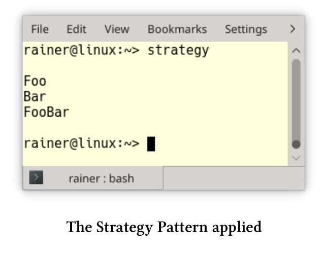
具体实现
实现策略锁有两种经典的方法：运行时多态性(面向对象)和编译时多态性(模板)。两种方式各有利弊。
- 优点：
- 运行时多态
- 允许在运行时配置策略锁。
- 了解有面向对象的开发人员，更容易理解。
- 编译时多态
- 无抽象的惩罚。
- 扁平的层次结构。
- 缺点：
- 运行时多态
- 额外需要一个指针。
- 可能有很深的派生层次。
- 编译时多态
- 出错时会有非常详细的信息。
讨论了理论之后，我在两个程序中实现了策略锁。示例中，策略锁可支持无锁、独占锁和共享锁。简单起见，我在内部使用了互斥锁。此外，策略锁的模型也限定了其锁定的范围。
运行时多态
strategizedLockingRuntime.cpp程序中展示了三种互斥锁。
运行时的多态性策略锁
// strategizedLockingRuntime.cpp
#include <iostream>
#include <mutex>
#include <shared_mutex>
class Lock {
public:
virtual void lock() const = 0;
virtual void unlock() const = 0;
};
class StrategizedLocking {
Lock& lock;
public:
StrategizedLocking(Lock& l) :lock(l) {
lock.lock();
}
~StrategizedLocking() {
lock.unlock();
}
};
struct NullObjectMutex {
void lock() {};
void unlock() {};
};
class NoLock :public Lock {
void lock() const override {
std::cout << "NoLock::lock: " << std::endl;
nullObjectMutex.lock();
}
void unlock() const override {
std::cout << "NoLock::unlock: " << std::endl;
nullObjectMutex.unlock();
}
mutable NullObjectMutex nullObjectMutex;
};
class ExclusiveLock : public Lock {
void lock() const override {
std::cout << " ExclusiveLock::lock: " << std::endl;
mutex.lock();
}
void unlock() const override {
std::cout << " ExclusiveLock::unlock: " << std::endl;
mutex.unlock();
}
mutable std::mutex mutex;
};
class SharedLock : public Lock {
void lock() const override {
std::cout << " SharedLock::lock_shared: " << std::endl;
sharedMutex.lock_shared();
}
void unlock() const override {
std::cout << " SharedLock::unlock_shared: " << std::endl;
sharedMutex.unlock_shared();
}
mutable std::shared_mutex sharedMutex;
};
int main() {
std::cout << std::endl;
NoLock noLock;
StrategizedLocking stratLock1{ noLock };
{
ExclusiveLock exLock;
StrategizedLocking stratLock2{ exLock };
{
SharedLock sharLock;
StrategizedLocking startLock3{ sharLock };
}
}
std::cout << std::endl;
}
StrategizedLocking类中有一把锁(第14行)。StrategizedLocking模型是范围锁，因此在构造函数(第16行)中进行锁定，在析构函数(第19行)中进行解锁。Lock(第7 - 11行)是一个抽象类，定义了所有接口。派生类分别是NoLock (第29行)、ExclusiveLock(第41行)和SharedLock(第53行)。SharedLock在std::shared_mutex上可使用lock_shared(第56行)和unlock_shared进行锁定和解锁。每个锁持有一个互斥对象NullObjectMutex(第38行)、std::mutex(第50行)或std::shared_mutex(第62行)。其实，NullObjectMutex就是一个无操作的占位符。互斥对象声明为可变，就意味着可以用在常量方法中使用，比如：lock和unlock中。
空对象
类NullObjectMutex是空对象模式的一个例子，由空方法组成，算是一个占位符，这样便于优化器可以将它完全删除。
编译时多态
基于模板的实现与基于面向对象的实现非常相似。
编译时多态性策略锁
// StrategizedLockingCompileTime.cpp
#include <iostream>
#include <mutex>
#include <shared_mutex>
template <typename LOCK>
class StrategizedLocking {
LOCK& lock;
public:
StrategizedLocking(LOCK& l) :lock(l) {
lock.lock();
}
~StrategizedLocking() {
lock.unlock();
}
};
struct NullObjectMutex {
void lock() {};
void unlock() {};
};
class NoLock {
public:
void lock() const {
std::cout << "NoLock::lock: " << std::endl;
nullObjectMutex.lock();
}
void unlock() const {
std::cout << "NoLock::unlock: " << std::endl;
nullObjectMutex.unlock();
}
mutable NullObjectMutex nullObjectMutex;
};
class ExclusiveLock {
public:
void lock() const {
std::cout << " ExclusiveLock::lock: " << std::endl;
mutex.lock();
}
void unlock() const {
std::cout << " ExclusiveLock::unlock: " << std::endl;
mutex.unlock();
}
mutable std::mutex mutex;
};
class SharedLock {
public:
void lock() const {
std::cout << " SharedLock::lock_shared: " << std::endl;
sharedMutex.lock_shared();
}
void unlock() const {
std::cout << " SharedLock::unlock_shared: " << std::endl;
sharedMutex.unlock_shared();
}
mutable std::shared_mutex sharedMutex;
};
int main() {
std::cout << std::endl;
NoLock noLock;
StrategizedLocking stratLock1{ noLock };
{
ExclusiveLock exLock;
StrategizedLocking stratLock2{ exLock };
{
SharedLock sharLock;
StrategizedLocking startLock3{ sharLock };
}
}
std::cout << std::endl;
}
这次NoLock(第25行)、ExclusiveLock(第38行)和SharedLock(第51行)没有抽象的基类了。结果StrategizedLocking可以用不支持相应接口的对象进行实例化，而这将导致编译时错误。C++20中，可以使用Lockable : template <Lockable Lock> class StrategizedLocking代替template <typename Lock> class StrategizedLocking。这意味着所有使用的锁必须支持Lockable概念。概念需要命名，并且Lockable已经在C++20中定义了。如果没有满足此要求，则编译将失败，并出现简单易懂的错误消息。
两个程序会生成相同的输出:

拓展阅读
- Design Patterns: Elements of Reusable Object-Oriented Software
- Strategy Pattern
- Null Object Pattern
- Pattern-Oriented Software Architecture: Patterns for Concurrent and Networked Objects
线程安全的接口
当程序的关键部分只是一个对象时，那么使用线程安全的接口就在合适不过了。用锁可能会导致性能问题，甚至会导致死锁。下面的伪代码可以清楚地阐明我的观点。
struct Critical{
void method1(){
lock(mut);
method2();
...
}
void method2(){
lock(mut);
...
}
mutex mut;
};
Critical crit;
crit.method1();
使用crit.method1会使互斥锁锁定两次。为了简单起见，这个锁是一个范围锁。当然，这里还有两个问题：
- 当
lock是递归锁时，method2中的第二个lock(mut)是多余的。 - 当
lock不是递归锁时，method2中的第二个lock(mut)会导致未定义行为。大多数情况下，会出现死锁。
线程安全的接口可以避免这两个问题，因为：
- 所有(public)接口都应该使用锁。
- 所有(保护的和私有的)方法都不使用锁。
- 接口只能使用保护的方法或私有方法调用，而公共方法则不能调用。
threadSafeInterface.cpp程序显示了其用法。
// threadSafeInterface.cpp
#include <iostream>
#include <mutex>
#include <shared_mutex>
class Critical {
public:
void interface1() const {
std::lock_guard<std::mutex> lockGuard(mut);
implementation1();
}
void interface2() {
std::lock_guard<std::mutex> lockGuard(mut);
implementation2();
implementation3();
implementation1();
}
private:
void implementation1() const {
std::cout << "implementation1: "
<< std::this_thread::get_id() << std::endl;
}
void implementation2() const {
std::cout << " implementation2: "
<< std::this_thread::get_id() << std::endl;
}
void implementation3() const {
std::cout << " implementation3: "
<< std::this_thread::get_id() << std::endl;
}
mutable std::mutex mut;
};
int main() {
std::cout << std::endl;
std::thread t1([] {
const Critical crit;
crit.interface1();
});
std::thread t2([] {
Critical crit;
crit.interface2();
crit.interface1();
});
Critical crit;
crit.interface1();
crit.interface2();
t1.join();
t2.join();
std::cout << std::endl;
}
包括主线程在内的三个线程都使用了Critical实例。由于线程安全的接口，所有对公开API的调用都是同步的。第35行中的互斥对象是可变的，因此可以在const方法implementation1中使用。
线程安全的接口有三个好处：
- 互斥锁不可能递归调用。在C++中，对非递归互斥对象的递归调用会导致未定义行为，通常都会死锁。
- 该程序使用最小范围的锁定，因此同步的代价最小。仅在关键类的公共或私有方法中使用
std::recursive_mutex将产生重量级的同步，从而遭受性能惩罚。 - 从用户的角度来看，
Critical很容易使用，而同步只是实现的一个细节而已。
三个线程交错的输出：
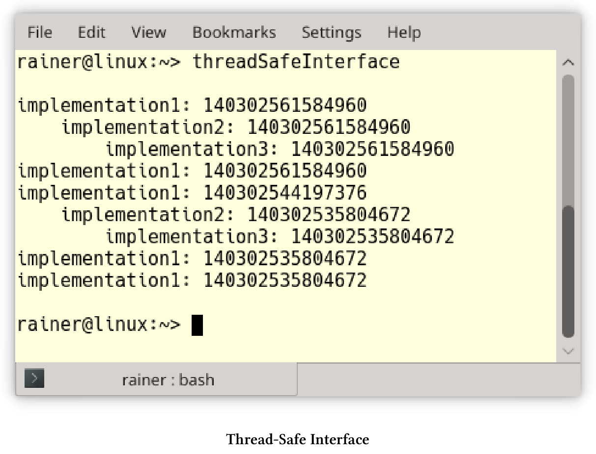
尽管线程安全的接口看起来很容易实现，但是也需要留意两个风险点。
风险
类中使用静态成员和使用虚接口时，需要特别小心。
静态成员
当类有静态成员时，就必须同步该类实例上的所有成员函数。
class Critical {
public:
void interface1() const {
std::lock_guard<std::mutex> lockGuard(mut);
implementation1();
}
void interface2() {
std::lock_guard<std::mutex> lockGuard(mut);
implementation2();
implementation3();
implementation1();
}
private:
void implementation1() const {
std::cout << "implementation1: "
<< std::this_thread::get_id() << std::endl;
++called;
}
void implementation2() const {
std::cout << " implementation2: "
<< std::this_thread::get_id() << std::endl;
++called;
}
void implementation3() const {
std::cout << " implementation3: "
<< std::this_thread::get_id() << std::endl;
++called;
}
inline static int called{ 0 };
inline static std::mutex mut;
};
Critical类使用了静态成员(第32行)来计算调用成员函数的频率。Critical的所有实例，都使用同一个静态成员，因此必须同步。本例中，临界区为Critical的所有实例。
内联静态成员
C++17中，静态数据成员可以声明为内联。可以在类中定义，以及初始化内联静态数据成员。
struct X { inline static int n = 1; }
虚接口
当重写虚接口函数时，即使重写的函数是私有的，也应该有锁。
// threadSafeInterfaceVirtual.cpp
#include <iostream>
#include <mutex>
#include <thread>
class Base {
public:
virtual void interface() {
std::lock_guard<std::mutex> lockGuard(mut);
std::cout << "Base with lock" << std::endl;
}
private:
std::mutex mut;
};
class Derived : public Base {
void interface() override {
std::cout << "Derived without lock" << std::endl;
};
};
int main() {
std::cout << std::endl;
Base* base1 = new Derived;
base1->interface();
Derived der;
Base& base2 = der;
base2.interface();
std::cout << std::endl;
}
base1->interface和base2.interface中，base1和base2是静态类型是Base，因此interface是一个公开接口。由于接口方法是虚函数，因此在运行时使用派生的动态类型Derived进行。最后，调用派生类Derived的私有接口。

有两种方法可以避免风险：
- 使接口成为非虚接口，这种技术称为NVI(非虚拟接口)。
- 将接口声明为
final:virtual void interface() final;。
扩展阅读
保护性暂挂模式
锁和一些先决条件的组合，是构成保护性暂挂模式的基础件。如果未满足先决条件，则线程将自己置为休眠状态。为了避免数据竞争或死锁，检查线程时会使用锁。
现在，来看看各种情况:
- 处于等待状态的线程，会根据通知更改状态，也可以主动请求更改状态。我把这称为“推拉原则”。
- 等待可以有时限，也可以没有时限。
- 可以将通知发送给一个或所有正在等待的线程。
推拉原则
先来说说推原则。
推原则
大多数情况下，使用条件变量或future/promise来进行线程同步。条件变量或promise将通知发送到正在等待的线程。promise没有notify_one或notify_all方法，而空的set_value调用通常用于模拟通知。下面的程序段展示发送通知的线程和等待的线程。
- 条件变量
void waitingForWork(){
std::cout << "Worker: Waiting for work." << std::endl;
std::unique_lock<std::mutex> lck(mutex_);
condVar.wait(lck, []{ return dataReady; });
doTheWork();
std::cout << "Work done." << std::endl;
}
void setDataReady(){
{
std::lock_guard<std::mutex> lck(mutex_);
dataReady = true;
}
std::cout << "Sender: Data is ready." << std::endl;
condVar.notify_one();
}
- future/promise
void waitingForWork(std::future<void>&& fut){
std::cout << "Worker: Waiting for work." << std::endl;
fut.wait();
doTheWork();
std::cout << "Work done." << std::endl;
}
void setDataReady(std::promise<void>&& prom){
std::cout << "Sender: Data is ready." << std::endl;
prom.set_value();
}
拉原则
线程也可以主动地要求改变状态，而不是被动地等待状态改变。C++中并不支持“拉原则”，但可以用原子变量来实现。
std::vector<int> mySharedWork;
std::mutex mutex_;
std::condition_variable condVar;
bool dataReady{false};
void waitingForWork(){
std::cout << "Waiting " << std::endl;
std::unique_lock<std::mutex> lck(mutex_);
condVar.wait(lck, []{ return dataReady; });
mySharedWork[1] = 2;
std::cout << "Work done " << std::endl;
}
void setDataReady(){
mySharedWork = {1, 0, 3};
{
std::lock_guard<std::mutex> lck(mutex_);
dataReady = true;
}
std::cout << "Data prepared" << std::endl;
condVar.notify_one();
}
有或无时限的等待
条件变量和future有三个用于等待的方法:wait、wait_for和wait_until。wait_for需要一个时间段，wait_until需要一个时间点。
各种等待策略中，消费者线程等待时间为steady_clock::now() + dur。如果promise已经准备好了，就会获取值；如果没准备好，则只显示其id: this_thread::get_it()。
void producer(promise<int>&& prom){
cout << "PRODUCING THE VALUE 2011\n\n";
this_thread::sleep_for(seconds(5));
prom.set_value(2011);
}
void consumer(shared_future<int> fut,
steady_clock::duration dur){
const auto start = steady_clock::now();
future_status status= fut.wait_until(steady_clock::now() + dur);
if ( status == future_status::ready ){
lock_guard<mutex> lockCout(coutMutex);
cout << this_thread::get_id() << " ready => Result: " << fut.get()
<< endl;
}
else{
lock_guard<mutex> lockCout(coutMutex);
cout << this_thread::get_id() << " stopped waiting." << endl;
}
const auto end= steady_clock::now();
lock_guard<mutex> lockCout(coutMutex);
cout << this_thread::get_id() << " waiting time: "
<< getDifference(start,end) << " ms" << endl;
}
通知一个或所有等待线程
notify_one可以唤醒一个等待的线程，notify_all可以唤醒所有等待的线程。使用notify_one时，不能确定哪一个线程会被唤醒，而其他条件变量则保持在等待状态。因为future和promise之间存在关联性，所以这种情况在std::future中是不可能发生的。如果想模拟一对多的关系，那么应该使用std::shared_future而不是std::future，因为std::shared_future是可以复制的。
下面的程序显示了一个简单的工作流，promise和future之间是一对一/一对多的关系。
// bossWorker.cpp
#include <future>
#include <chrono>
#include <iostream>
#include <random>
#include <string>
#include <thread>
#include <utility>
int getRandomTime(int start, int end) {
std::random_device seed;
std::mt19937 engine(seed());
std::uniform_int_distribution<int> dist(start, end);
return dist(engine);
}
class Worker {
public:
explicit Worker(const std::string& n) :name(n) {}
void operator()(std::promise<void>&& prepareWork,
std::shared_future<void> boss2Worker) {
// prepare the work and notify the boss
int prepareTime = getRandomTime(500, 2000);
std::this_thread::sleep_for(std::chrono::microseconds(prepareTime));
prepareWork.set_value();
std::cout << name << ": " << "Work prepared after "
<< prepareTime << " milliseconds." << std::endl;
// still waiting for the permission to start working
boss2Worker.wait();
}
private:
std::string name;
};
int main() {
std::cout << std::endl;
// define the std::promise = > Instruction from the boss
std::promise<void> startWorkPromise;
// get the std::shared_future's from the std::promise
std::shared_future<void> startWorkFuture = startWorkPromise.get_future();
std::promise<void> herbPrepared;
std::future<void> waitForHerb = herbPrepared.get_future();
Worker herb(" Herb");
std::thread herbWork(herb, std::move(herbPrepared), startWorkFuture);
std::promise<void> scottPrepared;
std::future<void> waitForScott = scottPrepared.get_future();
Worker scott(" Scott");
std::thread scottWork(scott, std::move(scottPrepared), startWorkFuture);
std::promise<void> bjarnePrepared;
std::future<void> waitForBjarne = bjarnePrepared.get_future();
Worker bjarne(" Bjarne");
std::thread bjarneWork(bjarne, std::move(bjarnePrepared), startWorkFuture);
std::cout << "BOSS: PREPARE YOUR WORK.\n " << std::endl;
// waiting for the worker
waitForHerb.wait(), waitForScott.wait(), waitForBjarne.wait();
// notify the workers that they should begin to work
std::cout << "\nBOSS: START YOUR WORK. \n" << std::endl;
startWorkPromise.set_value();
herbWork.join();
scottWork.join();
bjarneWork.join();
}
该程序的关键思想是boss(主线程)有三个员工：herb(第53行)、scott(第58行)和bjarne(第63行)，每个worker由一个线程表示。老板在第64行等待，直到所有的员工完成工作。这意味着，每个员工在任务下发后的任意时间点，都可以向老板发送完成通知。因为会转到std::future，所以员工到老板的通知是一对一的(第30行)。而从老板到员工的工作指令，则是一对多的通知(第73行)。对于这个一对多的通知，需要使用std::shared_future。
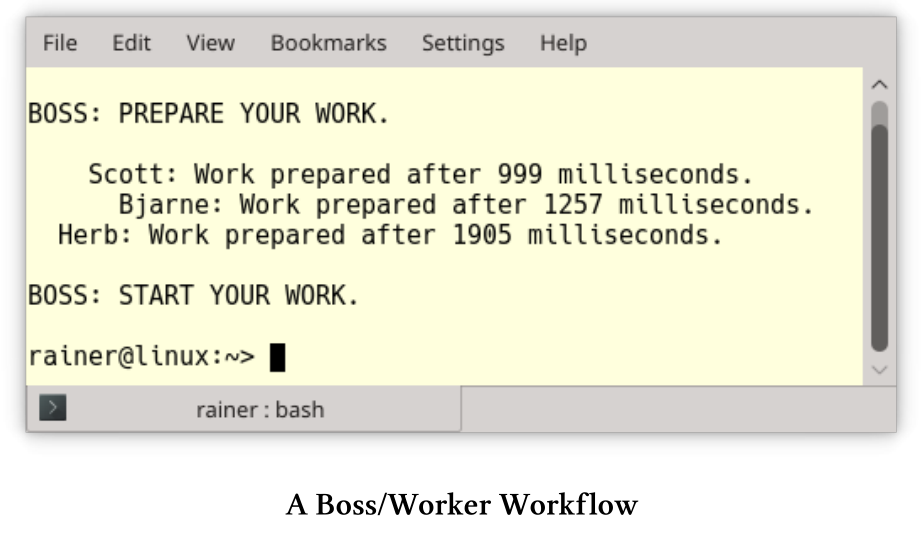
扩展阅读
并发架构
本章介绍三种经典架构模式，在《面向模式的软件体系结构：并发和网络对象的模式》中都有很好的解释。本章会简单概述一下活动对象、监控对象和半同步/半异步模式。在同步模式中，我会使用C++作为第一视角。在深入研究这三种模式之前，先做对这几个模式进行简单的介绍。
- 活动对象的设计模式将执行与调用进行解耦，每个对象会留在自己的控制线程中，其目标是通过使用异步方法和调度器来引入并发。维基百科：Active object
- 监控对象的设计模式，会同步并发方法的执行，以确保对象每次只运行一个成员函数。并且，还允许对象的成员函数协同调度序列的执行。
这两种模式可以以同步和调度的方式运行。主要的区别是，活动对象在不同的线程中执行，而监控对象与客户端则是在相同的线程中执行。与关注子系统的活动对象和监控对象(因此通常称为设计模式)不同，以下的体系结构模式具有系统视角。
- 半同步/半异步体系结构模式，在并发系统中对异步和同步服务处理进行解耦，从而在不降低太多性能的情况下简化编程。该模式引入了两个通信层，一个用于异步，另一个用于同步。
活动对象
活动对象模式将执行与对象的成员函数解耦，每个对象会留在在自己的控制线程中。其目标是通过使用异步方法，处理调度器的请求，从而触发并发。维基百科：Active object。所以，这种模式也称为并发对象模式。
客户端的调用会转到代理，代理表现为活动对象的接口。服务提供活动对象的实现，并在单独的线程中运行。代理在运行时将客户端的调用转换为对服务的调用，调度程序将方法加入到激活列表中。调度器与服务在相同的线程中活动，并将方法调用从激活列表中取出，再将它们分派到相应的服务上。最后，客户端可以通过future从代理处获取最终的结果。
组件
活动对象模式由六个组件组成:
- 代理为活动对象的可访问方法提供接口。代理将触发激活列表的方法，并请求对象的构造。并且，代理和客户端运行在相同的线程中。
- 方法请求类定义了执行活动对象的接口。
- 激活列表的目标是维护挂起的请求，激活列表将客户端线程与活动对象线程解耦。代理对入队请求的进行处理，而调度器将请求移出队列。
- 调度器与代理可在不同的线程中运行。调度器会在活动对象的线程中运行，并决定接下来执行激活列表中的哪个请求。
- 可以通过服务实现活动对象，并在活动对象的线程中运行，服务也支持代理接口。
- future是由代理创造的，客户端可以从future上获取活动对象调用的结果。客户端可以安静等待结果，也可以对结果进行轮询。
下面的图片显示了消息的顺序。

代理
代理设计模式是《设计模式:可重用的面向对象软件的元素》中的经典模式，代理是其他对象的代表。典型的代理可以是远程代理CORBA、安全代理、虚拟代理或智能指针，如
std::shared_ptr。每个代理会为它所代表的对象添加额外的功能。远程代理代表远程对象，并使客户端产生本地对象的错觉。安全代理通过对数据进行加密和解密，将不安全的连接转换为安全的连接。虚拟代理以惰性的方式封装对象的创建，智能指针将接管底层内存的生存期。
- 代理具有与RealSubject相同的接口，用于管理引用，还有subject的生命周期。
- 与Subject具有相同的接口，如代理和RealSubject。
- RealSubject用于提供具体的功能。
关于代理模式的更多细节，可以参考Wikipedia页面。

优点和缺点
介绍Active Object模式的最小实现前，先了解一下它的优点和缺点。
- 优点:
- 同步只需要在活动对象的线程上进行，不需要在客户端的线程上进行。
- 客户端(用户)和服务器(实现者)之间的解耦，同步的挑战则在实现者的一边。
- 由于客户端为异步请求，所以系统的吞吐量提高了，从而调用处理密集型方法不会阻塞整个系统。
- 调度器可以实现各种策略来执行挂起请求，因此可以按不同的顺序执行入队请求。
- 缺点:
- 如果请求的粒度太细，则活动对象模式(如代理、激活列表和调度器)的性能开销可能过大。
- 由于调度器的调度策略和操作系统的调度互相影响，调试活动对象模式通常非常困难，尤其是以不同顺序执行请求的情况下。
具体实现
下面的示例展示了活动对象模式的简单实现。我没有定义一个请求，这应该由代理和服务实现。而且，当请求调度程序执行下一个请求时，服务应该只执行这个请求。
所涉及的类型为future<vector<future<pair<bool, int>>>>，这个类型的标识有点长。为了提高可读性，我使用了声明(第16 - 37行)。
// activeObject.cpp
#include <algorithm>
#include <deque>
#include <functional>
#include <future>
#include <iostream>
#include <memory>
#include <mutex>
#include <numeric>
#include <random>
#include <thread>
#include <utility>
#include <vector>
using std::async;
using std::boolalpha;
using std::cout;
using std::deque;
using std::distance;
using std::endl;
using std::for_each;
using std::find_if;
using std::future;
using std::lock_guard;
using std::make_move_iterator;
using std::make_pair;
using std::move;
using std::mt19937;
using std::mutex;
using std::packaged_task;
using std::pair;
using std::random_device;
using std::sort;
using std::thread;
using std::uniform_int_distribution;
using std::vector;
class IsPrime {
public:
pair<bool, int> operator()(int i) {
for (int j = 2; j * j <= i; ++j) {
if (i % j == 0)return std::make_pair(false, i);
}
return std::make_pair(true, i);
}
};
class ActivaeObject {
public:
future<pair<bool, int>> enqueueTask(int i) {
IsPrime isPrime;
packaged_task<pair<bool, int>(int)> newJob(isPrime);
auto isPrimeFuture = newJob.get_future();
auto pair = make_pair(move(newJob), i);
{
lock_guard<mutex> lockGuard(activationListMutex);
activationList.push_back(move(pair));
}
return isPrimeFuture;
}
void run() {
thread servant([this] {
while (!isEmpty()) {
auto myTask = dequeueTask();
myTask.first(myTask.second);
}
});
servant.join();
}
private:
pair<packaged_task<pair<bool, int>(int)>, int> dequeueTask() {
lock_guard<mutex> lockGuard(activationListMutex);
auto myTask = std::move(activationList.front());
activationList.pop_front();
return myTask;
}
bool isEmpty() {
lock_guard<mutex> lockGuard(activationListMutex);
auto empty = activationList.empty();
return empty;
}
deque<pair<packaged_task<pair<bool, int>(int)>, int >> activationList;
mutex activationListMutex;
};
vector<int> getRandNumber(int number) {
random_device seed;
mt19937 engine(seed());
uniform_int_distribution<> dist(1000000, 1000000000);
vector<int> numbers;
for (long long i = 0; i < number; ++i) numbers.push_back(dist(engine));
return numbers;
}
future<vector<future<pair<bool, int>>>> getFutures(ActivaeObject& activeObject,
int numberPrimes) {
return async([&activeObject, numberPrimes] {
vector<future<pair<bool, int>>> futures;
auto randNumbers = getRandNumber(numberPrimes);
for (auto numb : randNumbers) {
futures.push_back(activeObject.enqueueTask(numb));
}
return futures;
});
}
int main() {
cout << boolalpha << endl;
ActivaeObject activeObject;
// a few clients enqueue work concurrently
auto client1 = getFutures(activeObject, 1998);
auto client2 = getFutures(activeObject, 2003);
auto client3 = getFutures(activeObject, 2011);
auto client4 = getFutures(activeObject, 2014);
auto client5 = getFutures(activeObject, 2017);
// give me the futures
auto futures = client1.get();
auto futures2 = client2.get();
auto futures3 = client3.get();
auto futures4 = client4.get();
auto futures5 = client5.get();
// put all futures together
futures.insert(futures.end(), make_move_iterator(futures2.begin()),
make_move_iterator(futures2.end()));
futures.insert(futures.end(), make_move_iterator(futures3.begin()),
make_move_iterator(futures3.end()));
futures.insert(futures.end(), make_move_iterator(futures4.begin()),
make_move_iterator(futures4.end()));
futures.insert(futures.end(), make_move_iterator(futures5.begin()),
make_move_iterator(futures5.end()));
// run the promises
activeObject.run();
// get the results from the futures
vector<pair<bool, int>> futResults;
futResults.reserve(futResults.size());
for (auto& fut : futures)futResults.push_back(fut.get());
sort(futResults.begin(), futResults.end());
// separate the primes from the non-primes
auto prIt = find_if(futResults.begin(), futResults.end(),
[](pair<bool, int>pa) {return pa.first == true; });
cout << "Number primes: " << distance(prIt, futResults.end()) << endl;
cout << "Primes: " << endl;
for_each(prIt, futResults.end(), [](auto p) {cout << p.second << " "; });
cout << "\n\n";
cout << "Number no primes: " << distance(futResults.begin(), prIt) << endl;
cout << "No primes: " << endl;
for_each(futResults.begin(), prIt, [](auto p) {cout << p.second << " "; });
cout << endl;
}
示例的基本思想是，客户端可以在激活列表上并发地安排作业。线程的工作是确定哪些数是质数。激活列表是活动对象的一部分，而活动对象在一个单独的线程上进行入队操作，并且客户端可以在激活列表中查询作业的结果。
程序的详情：5个客户端通过getFutures将工作(第121 - 126行)入队到activeObject。numberPrimes中的数字是1000000到1000000000之间(第96行)的随机数，将这些数值放入vector<future<pair<bool, int>> 中。future<pair<bool, int>持有一个bool和int对，其中bool表示int值是否是质数。再看看第108行：future .push_back(activeObject.enqueueTask(numb))。此调用将触发新作业进入激活列表的队列，所有对激活列表的调用都必须受到保护，这里激活列表是一个promise队列(第89行)：deque<pair<packaged_task<pair<bool, int>(int)>, int >> 。
每个promise在调用执行函数对象IsPrime(第39 - 47行)时，会返回一个bool和int对。现在，工作包已经准备好了，开始计算吧。所有客户端在第129 - 133行中返回关联future的句柄，并把所有的future放在一起(第136 - 146行)，这样会使工作更加容易。第149行中的调用activeObject.run()启动执行。run(第64 - 72行)启动单独的线程，并执行promises(第68行)，直到执行完所有作业(第66行)。isEmpty(第83 - 87行)确定队列是否为空，dequeTask会返回一个新任务。通过在每个future上调用futResults.push_back(fut.get())(第154行)，所有结果都会推送到futResults上。第156行对成对的向量进行排序:vector<pair<bool, int>>。其余代码则是给出了计算结果，第159行中的迭代器prIt将第一个迭代器指向一个素数对。
程序打印素数数量为distance(prIt, futResults.end())(第162行)，并(第164行)逐一显示。

拓展阅读
- Pattern-Oriented Software Architecture: Patterns for Concurrent and Networked Objects
- Prefer Using Active Object instead of Naked Thread (Herb Sutter)
- Active Object implementation in C++11
监控对象
监控对象模式会同步并发执行，以确保对象只执行一个方法。并且，还允许对象的方法协同调度执行序列。这种模式也称为线程安全的被动对象模式。
模式要求
多个线程同时访问一个共享对象时，需要满足以下要求：
- 并发访问时，需要保护共享对象不受非同步读写操作的影响，以避免数据争用。
- 必要的同步是实现的一部分，而不是接口的一部分。
- 当线程处理完共享对象时，需要发送一个通知，以便下一个线程可以使用共享对象。这种机制有助于避免死锁，并提高系统的整体性能。
- 方法执行后，共享对象的不变量必须保持不变。
客户端(线程)可以访问监控对象的同步方法。因为监控锁在任何时间点上，只能运行一个同步方法。每个监控对象都有一个通知等待客户端的监控条件。
组件
监控对象由四个组件组成。

- 监控对象：支持一个或多个方法。每个客户端必须通过这些方法访问对象，每个方法都必须在客户端线程中运行。
- 同步方法：监控对象支持同步方法。任何给定的时间点上，只能执行一个方法。线程安全接口有助于区分接口方法(同步方法)和(监控对象的)实现方法。
- 监控锁：每个监控对象有一个监控锁，锁可以确保在任何时间点上，只有一个客户端可以访问监控对象。
- 监控条件：允许线程在监控对象上进行调度。当前客户端完成同步方法的调用后，下一个等待的客户端将被唤醒。
虽然监控锁可以确保同步方法的独占访问，但是监控条件可以保证客户端的等待时间最少。实质上，监控锁可以避免数据竞争，条件监控可以避免死锁。
运行时行为
监控对象及其组件之间的交互具有不同的阶段。
- 当客户端调用监控对象的同步方法时，必须锁定全局监控锁。如果客户端成功访问，将执行同步方法，并在结束时解锁。如果客户端访问不成功，则阻塞客户端，进入等待状态。
- 当客户端阻塞时，监控对象会在解锁时，对阻塞的客户端发送通知。通常，等待是资源友好的休眠，而不是忙等。
- 当客户端收到通知时，会锁定监控锁，并执行同步方法。同步方法结束时解锁，并发送监控条件的通知，以通知下一个客户端去执行。
优点和缺点
监控对象的优点和缺点是什么?
- 优点:
- 同步方法会完全封装在实现中，所以客户端不知道监控对象会隐式同步。
- 同步方法将自动调度监控条件的通知/等待机制，其表现类似一个简单的调度器。
- 缺点:
- 功能和同步是强耦合的，所以很难改变同步机制。
- 当同步方法直接或间接调用同一监控对象时，可能会发生死锁。
下面的程序段中定义了一个ThreadSafeQueue。
// monitorObject.cpp
#include <condition_variable>
#include <functional>
#include <queue>
#include <iostream>
#include <mutex>
#include <random>
#include <thread>
template <typename T>
class Monitor {
public:
void lock() const {
monitMutex.lock();
}
void unlock() const {
monitMutex.unlock();
}
void notify_one() const noexcept {
monitCond.notify_one();
}
void wait() const {
std::unique_lock<std::recursive_mutex> monitLock(monitMutex);
monitCond.wait(monitLock);
}
private:
mutable std::recursive_mutex monitMutex;
mutable std::condition_variable_any monitCond;
};
template <typename T>
class ThreadSafeQueue : public Monitor<ThreadSafeQueue<T>> {
public:
void add(T val) {
derived.lock();
myQueue.push(val);
derived.unlock();
derived.notify_one();
}
T get() {
derived.lock();
while (myQueue.empty()) derived.wait();
auto val = myQueue.front();
myQueue.pop();
derived.unlock();
return val;
}
private:
std::queue<T> myQueue;
ThreadSafeQueue<T>& derived = static_cast<ThreadSafeQueue<T>&>(*this);
};
class Dice {
public:
int operator()() { return rand(); }
private:
std::function<int()>rand = std::bind(std::uniform_int_distribution<>(1, 6),
std::default_random_engine());
};
int main() {
std::cout << std::endl;
constexpr auto NUM = 100;
ThreadSafeQueue<int> safeQueue;
auto addLambda = [&safeQueue](int val) {safeQueue.add(val); };
auto getLambda = [&safeQueue] {std::cout << safeQueue.get() << " "
<< std::this_thread::get_id() << ";";
};
std::vector<std::thread> addThreads(NUM);
Dice dice;
for (auto& thr : addThreads) thr = std::thread(addLambda, dice());
std::vector<std::thread> getThreads(NUM);
for (auto& thr : getThreads) thr = std::thread(getLambda);
for (auto& thr : addThreads) thr.join();
for (auto& thr : addThreads) thr.join();
std::cout << "\n\n";
}
该示例的核心思想是，将监控对象封装在一个类中，这样就可以重用。监控类使用std::recursive_mutex作为监控锁，std::condition_variable_any作为监控条件。与std::condition_variable不同，std::condition_variable_any能够接受递归互斥。这两个成员变量都声明为可变，因此可以在常量方法中使用。监控类提供了监控对象的最小支持接口。
第34 - 55行中的ThreadSafeQueue使用线程安全接口扩展了第53行中的std::queue。ThreadSafeQueue继承于监控类，并使用父类的方法来支持同步的方法add和get。方法add和get使用监控锁来保护监控对象，特别是非线程安全的myQueue。当一个新项添加到myQueue时，add会通知等待线程，并且这个通知是线程安全的。当如ThreadSafeQueue这样的模板类，将派生类作为基类的模板参数时，这属于C++的一种习惯性用法，称为CRTP：class ThreadSafeQueue: public Monitor<threadsafequeue<T>>。理解这个习惯的关键是第54行：ThreadSafeQueue<T>& derived = static_cast<threadsafequeue<T>&>(*this)，该表达式将this指针向下转换为派生类。监控对象safeQueue第72行使用(第73行和第74行中的)Lambda函数添加一个数字，或从同步的safeQueue中删除一个数字。ThreadSafeQueue本身是一个模板类，可以保存任意类型的值。程序模拟的是100个客户端向safeQueue添加100个介于1 - 6之间的随机数(第78行)的同时，另外100个客户端从safeQueue中删除这100个数字。程序会显示使用的线程的编号和id。

奇异递归模板模式(CRTP)
奇异递归模板模式，简单地说，CRTP代表C++中的一种习惯用法，在这种用法中，Derived类派生自类模板Base，因此Base作为Derived模板参数。
template<class T> class Base{ .... }; class Derived : public Base<Derived>{ .... };理解CRTP习惯用法的关键是，实例化方法是惰性的，只有在需要时才实例化方法。CRTP有两个主要的用例。
- 静态多态性：静态多态性与动态多态性类似，但与使用虚方法的动态多态性相反，方法调用的分派在编译时进行。
- Mixin: Mixin是设计混合代码类时的一个流行概念。
ThreadSafeQueue使用Mixin技术来扩展它的接口。通过从Monitor类派生ThreadSafeQueue，派生类ThreadSafeQueue获得类Monitor的所有方法：ThreadSafeQueue: public Monitor<threadsafequeue<T>>类。惰性C++：CRTP一文中，有对CRTP习语有更深入地描述。
活动对象和监控对象在几个重要的方面类似，但也有不同。这两种体系结构模式，会同步对共享对象的访问。活动对象的方法在不同线程中执行，而监控对象的方法则在同一线程中执行。活动对象更好地将其方法调用与执行解耦，因此更容易维护。
扩展阅读
半同步/半异步
半同步/半异步模式会对并发系统中异步和同步服务进行解耦，从而在不过度降低性能的情况下简化编程。该模式引入了两个可以相互通信的层，一个用于异步，另一个用于同步。
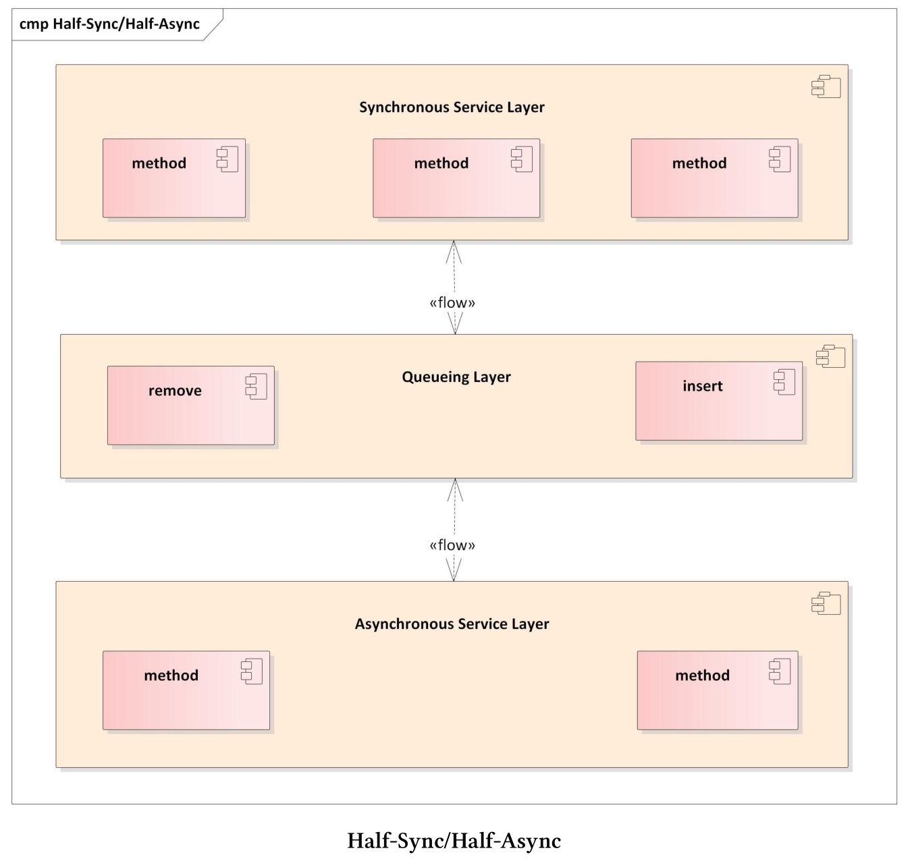
半同步/半异步模式通常用于服务器的事件循环或图形界面。事件循环的工作流是将事件请求插入队，并在单独的线程中同步处理。异步处理确保了运行效率，而同步处理简化了申请流程。异步服务层和同步服务层分解为两个层，并且在这两个层之间有队列坐标。异步层由较底层的系统服务(如中断)组成，而同步层由较高层的服务(如数据库查询或文件操作)组成。异步层和同步层可以通过队列层相互通信。
优点和缺点
半同步/半异步模式的优点和缺点是什么?
- 优点:
- 异步和同步分界线很明确。底层系统服务在异步层中处理，高层服务在同步层中处理。
- 对请求队列处理的层，保证了异步层和同步层的解耦。
- 清晰的分离使软件更容易理解、调试、维护和扩展。
- 同步服务中的阻塞不会影响异步服务。
- 缺点:
- 异步层和同步层之间交叉的部分可能会导致开销。通常，因为异步服务通常在内核空间中运行，同步服务在用户空间中运行，所以“边界的部分”会涉及内核空间和用户空间之间的上下文切换。
- 为了严格分离各层，要求复制数据或数据是不可变的
半同步/半异步模式通常用于事件的多路分解和调度框架，如Reactor或Proactor模式。
Reactor模式
Reactor模式也称为调度程序或通知程序。该模式是一个事件驱动的框架，用于将多个服务请求并发地分发到各个服务端。
使用要求
服务器应该并发地处理客户端的请求。每个客户端的请求都有一个唯一标识符，并支持映射到特定的服务端。以下几点是Reactor必备的：
- 不阻塞。
- 支持最大吞吐量，避免不必要的上下文切换，避免数据的复制或同步。
- 易于扩展，以支持服务的修改。
- 不使用复杂的同步机制。
解决方案
对于支持的服务类型，实现一个事件处理程序来满足特定客户端的请求。反应器中使用注册的方式，将服务端的事件处理程序进行注册，这里使用了事件解复用器来同步等待所有传入的事件。当一个事件到达时，反应器得到通知，并将相应的事件分派给特定的服务。
组件
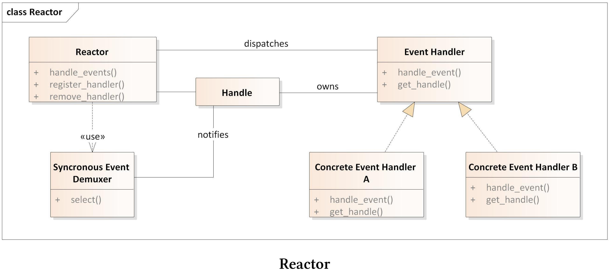
- 句柄:
- 句柄标识了事件源，如网络连接、打开文件或GUI事件。
- 事件源生成连接、读或写等事件，这些事件会在句柄上进行排队。
- 同步事件多路分解器:
- 同步事件多路分解器会等待一个或多个事件。多路分解器会进行阻塞，直到关联的句柄能够处理该事件为止。
- 事件处理接口:
- 事件处理程序定义了处理特定事件的接口。
- 事件处理程序定义了应用程序支持的服务。
- 特定事件处理程序：
- 特定的事件处理实现，由事件处理接口确定。
- 反应器:
- 反应器支持接口注册和注销。
- 反应器使用同步事件多路分解器，例如系统调用select, epoll或WaitForMultipleObjects来等待特定事件。
- 反应器将事件映射到具体处理程序上。
- 反应器会对事件循环的生命周期进行管理。
反应器(而不是应用程序)等待特定事件，并进行分解和分派。具体的事件处理在反应器中注册，反应器改变了控制流程。反应器等待特定事件，并调用特定的处理程序。这种控制的倒置，称为好莱坞原则。(译者注：“不要给我们打电话，我们会给你打电话(don‘t call us, we‘ll call you)”这是著名的好莱坞原则。)
下面的代码段显示了C++框架的事件循环——自适应通信环境(ACE)。
// CTRL c
SignalHandler *mutateTimer1 = new SignalHandler(timerId1);
// CTRL z
SignalHandler *mutateTimer2 = new SignalHandler(timerId2);
ACE_Reactor::instance()->register_handler(SIGINT, mutateTimer1);
ACE_Reactor::instance()->register_handler(SIGTSTP, mutateTimer2);
// "run" the timer.
Timer::instance()->wait_fot_event();
第2行和第5行定义按CTRL+c和CTRL+z的键盘事件的信号处理程序。第7行和第8行记录它们，事件循环从第12行开始。
优点和缺点
反应器模式的优点和缺点是什么呢?
- 优点:
- 框架和应用逻辑解耦。
- 各种具体处理程序的模块化。
- 接口和实现的分离，使服务更容易适应或扩展。
- 整体结构支持并发。
- 缺点:
- 需要调用事件分解系统。
- 长时间运行的程序会阻塞反应器。
- 反转控制使得测试和调试更加困难。
半同步/半异步模式通常在反应器模式中，用于在独立线程中对客户端请求的响应。
Proactor模式是反应器模式的异步变体。反应器模式同步地分解和分派事件处理程序，而Proactor模式异步地分派事件处理程序。
Proactor模式
Proactor模式允许事件驱动的应用程序，对异步操作完成时触发的服务请求进行多路的分解和分派。
使用要求
事件驱动程序(如服务器)，其性能可以通过异步处理服务来提高。为了实现这种方式，事件驱动程序必须同步处理多个事件，从而避免昂贵的数据同步或上下文切换。此外，修改后的服务应该很容易集成入系统，应用程序应该避免对多线程和同步方式进行挑战。
解决方案
将服务分为两部分：异步运行的长时间操作和处理操作结果的程序。结果处理程序与反应器模式中的事件处理程序非常相似，不过异步操作通常是操作系统的工作。所以，作为反应器模式，Proactor模式定义了事件循环。
异步操作(如连接请求)是该模式的独特之处，并且在不阻塞调用线程的情况下执行操作。当耗时相当长的操作完成时，它将一个完成事件放入完成事件队列，Proactor通过使用异步事件多路分解器在队列上等待。异步事件多路分解器将从队列中删除完成事件，而Proactor将其分派给特定的处理程序，处理操作的结果。
组件
Proactor模式由九个组件组成。
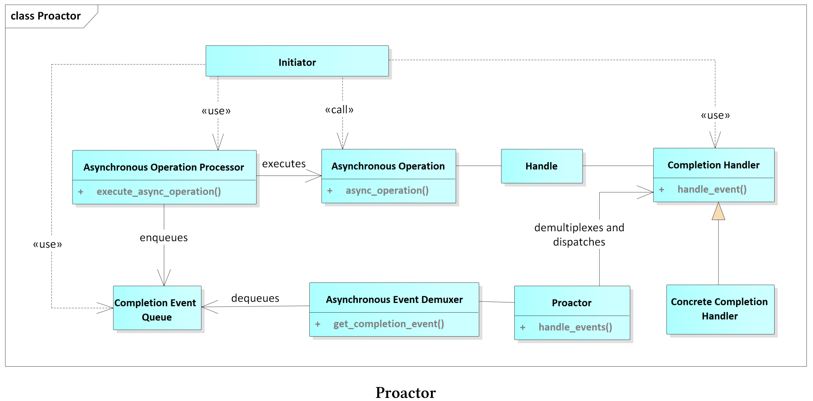
- 句柄:
- 表示操作系统的实体(如套接字)，可以生成完成事件。
- 异步操作:
- 通常异步执行耗时相当长的操作。可以在套接字上进行读或写操作。
- 异步操作处理器:
- 执行异步操作，完成后在完成事件队列上注册完成事件。
- 完成事件接口:
- 定义处理异步操作结果的接口。
- 完成事件处理逻辑:
- 用特定的程序处理异步操作的结果。
- 完成事件队列:
- 作为完成事件的缓冲，直到被异步事件分解器移出队列。
- 异步事件多路分解器:
- 在完成事件队列上等待完成事件时，可以阻塞程序。
- 从完成事件队列中删除完成事件。
- Proactor:
- 调用异步事件分解器对完成事件进行脱队操作。
- 分解和分派完成事件，并调用特定的处理程序处理完成事件。
- 创建者:
- 调用异步操作。
- 可与异步操作处理器进行交互。
优点和缺点
Proactor模式的优点和缺点是什么呢?
- 优点:
- 应用程序将独立的异步功能进行功能性分离。
- Proactor的接口可用于支持不同操作系统上的多种异步事件分解器。
- 应用程序不需要启动新线程，因为耗时相当长的异步操作会在调用者的线程中运行。
- Proactor模式可以避免上下文的切换。
- 应用程序的逻辑部分不启动任何线程，因此不需要同步。
- 缺点:
- 为了高效地应用Proactor模式，操作系统需要支持异步操作。
- 由于操作启动和完成之间在时间和空间上的分离，调试或测试程序相当困难。
- 异步操作的调用和完成事件的维护需要额外的内存。
Asio，即「异步 IO」(Asynchronous Input/Output)
随着Boost.Asio库可能作为网络库成为C++23的一部分，在未来大家可以在C++中轻易实现Proactor模式了。Boost.Asio是由Christopher Kohlhoff的提供，是“一个用于网络和低级I/O编程的跨平台C++库，并使用现代C++为其他开发者提供了一致性异步模型”。
扩展阅读
- Adaptive Communication Environment (ACE)
- Boost.Asio
- Pattern-Oriented Software Architecture: Patterns for Concurrent and Networked Objects
- 基于 Asio 的 C++ 网络编程
最佳实践
本章提供了一组简单的规则，可用于在现代C++中编写良好且快速的并发程序。多线程的并行性和并发性，在C++中算是个比较新的主题，在未来将发现越来越多的最佳实践方式。规则会随着时间推移而发展，所以不要把本章的规则看作一个完整的列表，而是作为一个起点，对于并行STL尤其如此。在更新这本书的时候(2018年12月)，C++17的并行算法只是部分可用，所以现在为它定制最佳实践还为时过早。
通常情况
我们先从一些原子操作和线程操作的最佳实践开始。
代码评审
代码评审应该是专业软件开发过程必备的一部分，尤其是处理并发。并发性本质上非常复杂，需要深思熟虑的分析和经验。
为了使评审更有效，请在评审之前将想要讨论的代码发送给评审人员，并声明代码中哪些地方是不可变的。正式评审开始之前，应该给予评审员足够的时间来分析代码。
不知道怎么做?举个例子。还记得std::shared_lock一章readerWriterLock.cpp中的数据竞争吗?
// readerWriterLock.cpp
#include <iostream>
#include <map>
#include <shared_mutex>
#include <string>
#include <thread>
std::map<std::string, int> teleBook{ {"Dijkstra", 1972}, {"Scott", 1976},
{"Ritchie", 1983} };
std::shared_timed_mutex teleBookMutex;
void addToTeleBook(const std::string& na, int tele) {
std::lock_guard<std::shared_timed_mutex> writerLock(teleBookMutex);
std::cout << "\nSTARTING UPDATE " << na;
std::this_thread::sleep_for(std::chrono::milliseconds(500));
teleBook[na] = tele;
std::cout << " ... ENDING UPDATE " << na << std::endl;
}
void printNumber(const std::string& na) {
std::shared_lock<std::shared_timed_mutex> readerLock(teleBookMutex);
std::cout << na << ": " << teleBook[na];
}
int main() {
std::cout << std::endl;
std::thread reader1([] {printNumber("Scott"); });
std::thread reader2([] {printNumber("Ritchie"); });
std::thread w1([] {addToTeleBook("Scott",1968); });
std::thread reader3([] {printNumber("Dijkstra"); });
std::thread reader4([] {printNumber("Scott"); });
std::thread w2([] {addToTeleBook("Bjarne", 1965); });
std::thread reader5([] {printNumber("Scott"); });
std::thread reader6([] {printNumber("Ritchie"); });
std::thread reader7([] {printNumber("Scott"); });
std::thread reader8([] {printNumber("Bjarne"); });
reader1.join();
reader2.join();
reader3.join();
reader4.join();
reader5.join();
reader6.join();
reader7.join();
reader8.join();
w1.join();
w2.join();
std::cout << std::endl;
std::cout << "\nThe new telephone book" << std::endl;
for (auto teleIt : teleBook) {
std::cout << teleIt.first << ": " << teleIt.second << std::endl;
}
std::cout << std::endl;
}
问题在于第24行teleBook[na]，这是一个可以修改的电话簿。可以通过将读取线程reader8放在其他读取线程之前，来触发数据竞争。在我的C++研讨会上，这个程序作为发现数据竞争的一种练习，大约10%的参与者在5分钟内能发现数据竞争。
尽量减少可变数据的共享
应该尽量减少可变数据的共享，原因有两个：性能和安全性。安全性主要是关于数据竞争，这里我们来详谈一下性能。
在计算向量和的章节中，我们做了详尽的性能研究。展示了将std::vector的值加起来要花费多少时间。
下面是单线程求和的关键部分。
...
constexpr long long size = 100000000;
std::cout << std::endl;
std::vector<int> randValues;
randValues.reserve(size);
// random values
std::random_device seed;std::mt19937 engine(seed());
std::uniform_int_distribution<> uniformDist(1, 10);
const unsigned long long sum = std::accumulate(randValues.begin(), randValues.end(), 0);
...
然后，在四个线程上执行求和，并很天真地使用了一个共享的求和变量。
...
void sumUp(unsigned long long& sum, const std::vector<int>& val,
unsigned long long beg, unsigned long long end){
for (auto it = beg; it < end; ++it){
std::lock_guard<std::mutex> myLock(myMutex);
sum += val[it];
}
}
...
后来，通过使用原子变量求和。
...
void sumUp(std::atomic<unsigned long long>& sum, const std::vector<int>& val,
unsigned long long beg, unsigned long long end){
for (auto it = beg; it < end; ++it){
sum.fetch_add(val[it]);
}
}
...
最后，通过计算局部和，得到了性能的提升。
...
void sumUp(unsigned long long& sum, const std::vector<int>& val,
unsigned long long beg, unsigned long long end){
unsigned long long tmpSum{};
for (auto i = beg; i < end; ++i){
tmpSum += val[i];
}
std::lock_guard<std::mutex> lockGuard(myMutex);
sum += tmpSum;
}
...
性能数字令人印象深刻，并提供了明确的指示。求和变量共享的部分越少，从多线程中获得性能收益越高。
| 单线程 | std::lock_guard | 原子变量 | 本地求和 |
|---|---|---|---|
| 0.07 sec | 3.34 sec | 1.34 sec | 0.03 sec |
减少等待
你可能听说过阿姆达尔定律。它预测了使用多个处理器可以获得的理论上的最大加速比。定律很简单，如果p是可以并发运行的代码的比例，则可以获得最大的加速$\frac{1}{1-p}$。因此，如果90%的代码可以并发运行，就可以 得到(最多)10倍的加速$\frac{1}{1-p}==\frac{1}{1-0.9}==\frac{1}{0.1}==10$。
反过来看，如果使用锁导致10%的代码必须串行，那么最多可以获得10倍的加速。当然，这里假设可以访问的处理资源是无限制的。
该图清楚地显示了Amdahl定律的曲线。

By Daniels220 at English Wikipedia, CC BY-SA 3.0, https://commons.wikimedia.org/w/index.php?curid=6678551
核心的最佳数量在很大程度上取决于代码的并行部分。例如：如果有50%的并行代码，那么就可以用16个核芯可达到最高的性能，使用过多的内核会使程序运行速度变慢。如果您有95%的并行代码，那么使用2048个核芯可将性能达到峰值。
不可变数据
数据竞争是指，至少两个线程同时访问一个共享变量的情况，并且至少有一个线程尝试修改该变量。数据竞争的一个必要条件是可变的共享状态，下面的图表清楚地说明了我的观点。

如果没有不可变的数据，则不会发生数据竞争。只需确保不可变数据以线程安全的方式初始化即可。在线程安全初始化的章节中，介绍了四种方法来保证这一点，这里复述一下:
- 线程创建前进行初始化。
- 常数表达式。
std::call_once与std::once_flag的组合。- 具有块作用域的静态变量。
C++中创建不可变数据的两种方法：const和constexpr。const是一种运行时技术，而constexpr可保证该值在编译时初始化，因此是线程安全的。甚至自定义的类型，也可以在编译时初始化。
自定义的类型
对于用户定义的类型，在编译时创建实例，会有一些限制。
constexpr的构造函数的限制:
- 只能用常量表达式。
- 不能使用异常处理。
- 必须声明为默认或删除，否则函数体必须为空(C++11)。
自定义的constexpr类型的限制：
- 不能有虚拟基类。
- 要求每个基对象和每个非静态成员必须在构造函数的初始化列表中初始化，或者直接在类体中初始化。因此，使用的构造函数(例如基类的构造函数)必须是
constexpr，而且必须使用常量表达式进行初始化。
cppreference.com为constexpr自定义类型提供了更多的信息。为了将实践添加到理论中，我定义了MyInt类，MyInt涉及到了刚刚提到的点，还有constexpr方法。
// userdefinedTypes.cpp
#include <iostream>
#include <ostream>
class MyInt {
public:
constexpr MyInt() = default;
constexpr MyInt(int fir, int sec) :myVal1(fir), myVal2(sec) {}
MyInt(int i) {
myVal1 = i - 2;
myVal2 = i + 3;
}
constexpr int getSum() const { return myVal1 + myVal2; }
friend std::ostream& operator<<(std::ostream& out, const MyInt& myInt) {
out << "(" << myInt.myVal1 << "," << myInt.myVal2 << ")";
return out;
}
private:
int myVal1 = 1998;
int myVal2 = 2003;
};
int main() {
std::cout << std::endl;
constexpr MyInt myIntConst1;
constexpr int sec = 2014;
constexpr MyInt myIntConst2(2011, sec);
std::cout << "myIntConst2.getSum(): " << myIntConst2.getSum() << std::endl;
int arr[myIntConst2.getSum()];
static_assert(myIntConst2.getSum() == 4025, "2011 + 2014 should be 4025");
std::cout << std::endl;
}
MyInt类有两个constexpr构造函数。一个默认构造函数(第8行)和一个接受两个参数的构造函数(第9行)。另外，该类有两个方法，但是只有getSum方法是常量表达式。因为constexpr方法在C++11和C++14是不同的，不会自动进行const修饰，所以方法声明为const。如果在constexpr对象中使用变量myVal1和myVal2(第23行和第24行)，有两种方法可以定义它们。首先，可以在构造函数的初始化列表中初始化它们(第9行)；其次，可以在类体中初始化它们(第23行和第24行)。这里，构造函数的初始化列表中的初始化具有更高的优先级。
第38行和第39行中可以在一个常量表达式中调用constexpr方法。下面是程序的输出。

再次强调：constexpr对象只能使用constexpr方法初始化。
像Haskell这样没有可变数据的函数式编程语言，则非常适合并发编程。
使用纯函数
Haskell被称为纯函数语言，纯函数是在给定相同参数时，总是产生相同结果的函数。它没有副作用，因此不能改变程序的状态。
从并发性的角度来看，纯函数具有明显的优势。它们可以重新排序，也可以在另一个线程上自动运行。
C++中的函数默认不是纯函数。以下三个函数都是纯函数，但每个函数都有不同的特征。
int powFunc(int m, int n){
if (n == 0) return 1;
return m * powFunc(m, n-1);
}
powFunc是一个普通函数。
template<int m, int n>
struct PowMeta{
static int const value = m * PowMeta<m, n-1>::value;
};
template<int m>
struct PowMeta<m, 0>{
static int const value = 1;
};
PowMeta是一个元函数(meta-function)，因为它在编译时运行。
constexpr int powConst(int m, int n){
int r = 1;
for(int k = 1; k <= n; ++k) r *= m;
return r;
}
powCont函数可以在运行时和编译时运行，它是一个常量函数。
寻找正确的抽象概念
多线程环境中，有多种方法可以初始化单例。可以使用标准库中的lock_guard或std::call_once，或使用依赖于核心语言的静态变量，亦或是使用依赖于原子变量的获取-释放语义。显然，使用获取-释放语义最具挑战性。使用者必须执行它，维护它，还要向同事解释它。与这些工作相比，Meyers单例在更容易实现，并且运行速度更快。
可以使用std::reduce，而不是实现一个并行循环进行求和。可以使用二元操作可调用和并行执行策略，对std::reduce进行参数化。
越是追求正确的抽象，工作就会越轻松。
使用静态代码分析工具
案例分析章节中，我介绍了CppMem。CppMem是一个交互式工具，用于对小代码段的C++内存模型，进行行为研究。CppMem可以提供两个方面的帮助：首先，可以验证代码的正确性；其次，可以更深入地了解内存模型，从而更全面地了解多线程问题。
使用动态执行工具
ThreadSanitizer是一个针对C/C++的数据竞争探测器。ThreadSanitizer已经作为Clang 3.2和GCC 4.8的一部分。要使用ThreadSanitizer，必须使用编译标志-fsanitize=thread来编译和链接你的程序。
下面的程序有一个数据竞争。
// dataRace.cpp
#include <thread>
int main() {
int globalVar{};
std::thread t1([&globalVar] { ++globalVar; });
std::thread t2([&globalVar] { ++globalVar; });
t1.join();
t2.join();
}
t1和t2同时访问globalVar，两个线程都试图修改globalVar。让我们编译并运行该程序。
g++ -std=c++11 dataRace.cpp -fsanitize=thread -pthread -g -o dataRace
这个程序的输出相当冗长。

我用红色框突出了屏幕截图的关键段，这段表示在源码第10行有一个数据竞争。
多线程
线程
线程是编写并发程序的基础件。
减少线程的创建
一个线程的开销有多大?非常巨大！这就是最佳实践背后的问题。让我们先看看线程的大小，而不是创建它的成本。
线程大小
std::thread是对本机操作系统线程的包装，这意味着需要对Windows线程和POSIX thread的大小进行了解：
- Windows：线程堆栈大小给了我答案：1MB。
- POSIX：pthread手册页为我提供了i386和x86_64架构的答案：2MB。下面有支持POSIX架构的线程堆栈大小：

创建耗时
我不知道创建一个线程需要多少时间，所以我在Linux和Windows上做了一个简单的性能测试。
我在台式机上使用GCC 6.2.1，在笔记本电脑上使用cl.exe(Visual Studio 2017)进行性能测试。我用最大优化来编译程序，这意味着在Linux上的优化标志为O3和Windows为Ox。
下面是我的程序。
// threadCreationPerformance.cpp
#include <chrono>
#include <iostream>
#include <thread>
static const long long numThreads = 1'000'000;
int main() {
auto start = std::chrono::system_clock::now();
for (volatile int i = 0; i < numThreads; ++i) std::thread([] {}).detach();
std::chrono::duration<double> dur = std::chrono::system_clock::now() - start;
std::cout << "time: " << dur.count() << " seconds" << std::endl;
}
该程序创建了100万个线程，这些线程执行第13行中的空Lambda函数。以下是在Linux和Windows测试的结果:
Linux

这意味着在Linux上创建一个线程大约需要14.5秒/ 1000000 = 14.5微秒。
Windows

在Windows上创建线程大约需要44秒/ 1000000 = 44微秒。
换句话说，在Linux上一秒钟可创建大约69000个线程，在Windows上一秒钟可创建23000个线程。
使用任务而不是线程
// asyncVersusThread.cpp
#include <future>
#include <thread>
#include <iostream>
int main() {
std::cout << std::endl;
int res;
std::thread t([&] {res = 2000 + 11; });
t.join();
std::cout << "res: " << res << std::endl;
auto fut = std::async([] {return 2000 + 11; });
std::cout << "fut.get(): " << fut.get() << std::endl;
std::cout << std::endl;
}
有很多原因让我们优先选择任务而不是线程：
- 可以使用一个安全的通信通道来返回结果。如果使用共享变量，则必须同步的对它进行访问。
- 调用者可以很容易的得到返回值、通知和异常。
通过扩展版future，我们可构建future，以及高度复杂的工作流。这些工作流基于continuation then，以及when_any和when_all的组合。
如果要分离线程，一定要非常小心
下面的代码片段需要我们关注一下。
std::string s{"C++11"}
std::thread t([&s]{ std::cout << s << std::endl; });
t.detach();
线程t与它的创建者的生命周期是分离的，所以两个竞态条件会导致未定义行为。
- 线程可能比其创建者的生命周期还长，结果是
t引用了一个不存在的std::string。 - 因为输出流
std::cout的生存期与主线程的生存期绑定在一起，所以程序在线程t开始工作之前，输出流就可能关闭了。
考虑使用自动汇入的线程
如果t.join()和t.detach()都没有调用，则具有可调用单元的线程t被称为可汇入的，这时进行销毁的话，析构函数会抛出std::terminate异常。为了不忘记t.join()，可以对std::thread进行包装。这个包装器在构造函数中检查给定线程是否仍然可连接，并将给定线程在析构函数中进行汇入操作。
我们不必自己构建这个包装器，可以使用Anthony Williams的scoped_thread，或是核心准则支持的库的gsl::joining_thread。
数据共享
随着可变数据的数据共享，也就开启了多线程编程的挑战。
通过复制传递数据
std::string s{"C++11"}
std::thread t1([s]{ ... }); // do something with s
t1.join();
std::thread t2([&s]{ ... }); // do something with s
t2.join();
// do something with s
如果将std::string s之类的数据通过复制传递给线程t1，则创建者线程和创建的线程t1使用独立的数据。线程t2相反，通过引用获取std::string s，这意味着必须同步对创建者线程和已创建线程t2中的s的访问。这里非常容易出错。
使用std::shared_ptr在非关联线程之间共享所有权
试想，有一个在非关联的线程之间共享的对象存在。接下来的问题是，对象的所有者是谁？谁负责这个对象的内存管理？现在，可以在内存泄漏(如果不释放内存)和未定义行为(因为多次调用delete)之间进行选择。大多数情况下，未定义行为会使运行时崩溃。
下面的程序展示了这个看似无解的问题。
// threadSharesOwnership.cpp
#include <iostream>
#include <thread>
using namespace std::literals::chrono_literals;
struct MyInt {
int val{ 2017 };
~MyInt() {
std::cout << "Good Bye" << std::endl;
}
};
void showNumber(MyInt* myInt) {
std::cout << myInt->val << std::endl;
}
void threadCreator() {
MyInt* tmpInt = new MyInt;
std::thread t1(showNumber, tmpInt);
std::thread t2(showNumber, tmpInt);
t1.detach();
t2.detach();
}
int main() {
std::cout << std::endl;
threadCreator();
std::this_thread::sleep_for(1s);
std::cout << std::endl;
}
这个例子很简单，主线程休眠1秒钟(第34行)，以确保它比子线程t1和t2的生命周期长。当然，这不是恰当的同步，但帮我阐明了观点。程序的关键是：谁负责删除第20行中的tmpInt ?线程t1(第22行)？还是线程t2(第23行)？或函数本身(主线程)？因为无法预测每个线程运行多长时间，所以这个程序应该会有内存泄漏。因此，第10行中的MyInt的析构函数永远不会被调用:

如果使用std::shared_ptr，则生命周期问题就很容易处理。

// threadSharesOwnershipSharedPtr.cpp
#include <iostream>
#include <memory>
#include <thread>
using namespace std::literals::chrono_literals;
struct MyInt {
int val{ 2017 };
~MyInt() {
std::cout << "Good Bye" << std::endl;
}
};
void showNumber(std::shared_ptr<MyInt> myInt) {
std::cout << myInt->val << std::endl;
}
void threadCreator() {
auto sharedPtr = std::make_shared<MyInt>();
std::thread t1(showNumber, sharedPtr);
std::thread t2(showNumber, sharedPtr);
t1.detach();
t2.detach();
}
int main() {
std::cout << std::endl;
threadCreator();
std::this_thread::sleep_for(1s);
std::cout << std::endl;
}
对源代码进行两个小的必要的修改：首先，第21行中的指针变成了std::shared_ptr，然后，第16行中的函数showNumber接受了一个智能指针，而不是普通指针。
尽量减少持有锁的时间.
如果持有锁，那么只有单个线程可以进入临界区。
void setDataReadyBad(){
std::lock_guard<std::mutex> lck(mutex_);
mySharedWork = {1, 0, 3};
dataReady = true;
std::cout << "Data prepared" << std::endl;
condVar.notify_one();
} // unlock the mutex
void setDataReadyGood(){
mySharedWork = {1, 0, 3};
{
std::lock_guard<std::mutex> lck(mutex_);
dataReady = true;
} // unlock the mutex
std::cout << "Data prepared" << std::endl;
condVar.notify_one();
}
函数setDataReadyBad和setDataReadyGood是条件变量的通知组件。可变的数据是必要的，以防止伪唤醒和未唤醒的发生。由于dataReady是一个非原子变量，因此必须使用锁lck对其进行同步。为了使锁的生命周期尽可能短，可以在函数setDataReadyGood中使用一个范围({…}) 。
将互斥量放入锁中
不应该使用没有锁的互斥量。
std::mutex m;
m.lock();
// critical section
m.unlock();
临界区内可能会发生意外，或者忘记解锁。如果不解锁，则想要获取该互斥锁的另一个线程将被阻塞，最后程序将死锁。
由于锁可以自动处理底层的互斥量，因此死锁的风险大大降低了。根据RAII习惯用法，锁在构造函数中自动绑定互斥量，并在析构函数中释放互斥量。
{
std::mutex m,
std::lock_guard<std::mutex> lockGuard(m);
// critical section
} // unlock the mutex
({…})范围确保锁的生命周期自动结束，所以底层的互斥量会被解锁。
最多锁定一个互斥锁
有时在某个时间点需要多个互斥锁，这种情况下，可能会引发死锁的竞态条件。因此，可能的话，应该尽量避免同时持有多个互斥锁。
给锁起个名字
如果使用没有名称的锁，比如std::lock_guard，那么将立即销毁。
{
std::mutex m,
std::lock_guard<std::mutex>{m};
// critical section
}
这个看起来无害的代码片段中，std::lock_guard立即被销毁。因此，下面的临界区是不同步执行的。C++标准的锁遵循所有相同的模式，会在构造函数中锁定互斥锁，并在析构函数中解锁，这种模式称为RAII。
下面例子的行为令人惊讶:
// myGuard.cpp
#include <mutex>
#include <iostream>
template <typename T>
class MyGuard {
T& myMutex;
public:
MyGuard(T& m) :myMutex(m) {
myMutex.lock();
std::cout << "lock" << std::endl;
}
~MyGuard() {
myMutex.unlock();
std::cout << "unlock" << std::endl;
}
};
int main() {
std::cout << std::endl;
std::mutex m;
MyGuard<std::mutex> {m};
std::cout << "CRITICAL SECTION" << std::endl;
std::cout << std::endl;
}
MyGuard在其构造函数和析构函数中调用lock和unlock。由于临时变量的原因，对构造函数和析构函数的调用发生在第25行。特别是，这意味着析构函数的调用发生在第25行，而不是第31行。因此，第26行中的临界段没有同步执行。
这个程序的截图显示了，解锁的发生在输出CRITICAL SECTION之前。

使用std::lock或std::scoped_lock原子地锁定更多的互斥对象
如果一个线程需要多个互斥对象，那么必须非常小心地将互斥对象以相同的顺序进行锁定。如果不这样，一个糟糕的线程交叉就可能导致死锁。
void deadLock(CriticalData& a, CriticalData& b){
std::lock_guard<std::mutex> guard1(a.mut);
// some time passes
std::lock_guard<std::mutex> guard2(b.mut);
// do something with a and b
}
...
std::thread t1([&]{deadLock(c1,c2);});
std::thread t2([&]{deadLock(c2,c1);});
...
线程t1和t2需要两个CriticalData，而CriticalData用自己的mut来控制同步访问。不幸的是，因为这两个调用参数c1和c2的顺序不同，所以产生了一个竞态，从而会导致死锁。当线程t1可以锁定第一个互斥对象a.mut，而没锁住第二个b.mut ，这样线程t2锁住了第二个线程，而阻塞等待a.mut解锁，就会产生出一个死锁的状态。
现在有了std::unique_lock，可以对互斥锁进行延迟锁定。函数std::lock可以原子地对任意数量的互斥锁进行锁定。
void deadLock(CriticalData& a, CriticalData& b){
unique_lock<mutex> guard1(a.mut,defer_lock);
// some time passes
unique_lock<mutex> guard2(b.mut,defer_lock);
std::lock(guard1,guard2);
// do something with a and b
}
...
std::thread t1([&]{deadLock(c1,c2);});
std::thread t2([&]{deadLock(c2,c1);});
...
C++17有一个新锁std::scoped_lock，它可以获得任意数量的互斥锁并自动锁定它们。这样，工作流变得更加简单了：
void deadLock(CriticalData& a, CriticalData& b){
std::scoped_lock(a.mut, b.mut);
// do something with a and b
}
...
std::thread t1([&]{deadLock(c1,c2);});
std::thread t2([&]{deadLock(c2,c1);});
...
不要在持有锁时，调用未知代码
在持有互斥锁的同时，调用unknownFunction会导致未定义行为。
std::mutex m;
{
std::lock_guard<std::mutex> lockGuard(m);
sharedVariable= unknownFunction();
}
我只能对unknownFunction进行推测数。如果unknownFunction：
- 试图锁定互斥量
m，这就是未定义行为。大多数情况下，会出现死锁。 - 启动一个试图锁定互斥锁
m的新线程，就会出现死锁。 - 锁定另一个互斥锁
m2可能会陷入死锁，因为需要同时锁定了两个互斥锁m和m2。 - 不要直接或间接尝试锁住互斥锁，虽然一切可能都没什么问题。“可能”是因为你的同事，可以修改函数或函数是动态链接的，这样就会得到一个与已知版本不同的函数。对于可能发生的事情，所有一切都是可能的。
- 可能会出现性能问题，因为不知道
unknownFunction函数需要多长时间。
要解决这些问题，请使用局部变量。
auto tempVar = unknownFunction();
std::mutex m,
{
std::lock_guard<std::mutex> lockGuard(m);
sharedVariable = tempVar;
}
这种方式解决了所有的问题。tempVar是一个局部变量，因此不会成为数据竞争的受害者，所以可以在没有同步机制的情况下调用unknownFunction。此外，将tempVar的值赋给sharedVariable，可以将持有锁的时间降到最低。
条件变量
通过通知同步线程是一个简单的概念，但是条件变量使这个任务变得非常具有挑战性。主要原因是条件变量没有状态：
- 如果条件变量得到了通知，则可能是错误的(伪唤醒)。
- 如果条件变量在准备就绪之前得到通知，则通知丢失(未唤醒)。
不要使用没有谓词的条件变量
使用没有谓词的条件变量，通常是竞争条件之一。
// conditionVariableLostWakeup.cpp
#include <condition_variable>
#include <mutex>
#include <thread>
std::mutex mutex_;
std::condition_variable condVar;
void waitingForWork() {
std::unique_lock<std::mutex> lck(mutex_);
condVar.wait(lck);
// do the work
}
void setDataReady() {
condVar.notify_one();
}
int main() {
std::thread t1(setDataReady);
std::thread t2(waitingForWork);
t1.join();
t2.join();
}
如果线程t1在线程t2之前运行，就会出现死锁。t1在t2接收之前发送通知，通知就会丢失。这种情况经常发生，因为线程t1在线程t2之前启动，而线程t1需要执行的工作更少。
在工作流中添加一个布尔变量dataReady可以解决这个问题。dataReady还可以防止伪唤醒，因为等待的线程会检查通知是否来自于正确的线程。
// conditionVarialbleLostWakeupSolved.cpp
#include <condition_variable>
#include <mutex>
#include <thread>
std::mutex mutex_;
std::condition_variable condVar;
bool dataReady{ false };
void waitingForWork() {
std::unique_lock<std::mutex> lck(mutex_);
condVar.wait(lck, [] { return dataReady; });
// do the work
}
void setDataReady() {
{
std::lock_guard<std::mutex> lck(mutex_);
dataReady = true;
}
condVar.notify_one();
}
int main() {
std::thread t1(setDataReady);
std::thread t2(waitingForWork);
t1.join();
t2.join();
}
使用Promise和Future代替条件变量
对于一次性通知，promise和future则是更好的选择。conditioVarialbleLostWakeupSolved.cpp的工作流程，可以使用promise和future直接实现。
// notificationWithPromiseAndFuture.cpp
#include <future>
#include <utility>
void waitingForWork(std::future<void>&& fut) {
fut.wait();
// do the work
}
void setDataReady(std::promise<void>&& prom) {
prom.set_value();
}
int main() {
std::promise<void> sendReady;
auto fut = sendReady.get_future();
std::thread t1(waitingForWork, std::move(fut));
std::thread t2(setDataReady, std::move(sendReady));
t1.join();
t2.join();
}
工作流程被简化到极致。promiseprom.set_value()会发送futurefut.wait()正在等待的通知。因为没有临界区，程序不需要互斥量和锁。因为不可能发生丢失唤醒或虚假唤醒，所以有没有谓词也没有关系。
如果工作流要求多次使用条件变量，那么promise和future就是不二之选。
Promise和Future
promise和future常被用作线程或条件变量的替代物。
尽可能使用std::async
如果可能，应该使用std::async来执行异步任务。
auto fut = std::async([]{ return 2000 + 11; });
// some time passes
std::cout << "fut.get(): " << fut.get() << std::endl;
通过调用auto fut = std::async([]{ return 2000 + 11; })，相当于对C++运行时说：“运行这个”。调用者不关心它是否立即执行，以及是运行在同一个线程上，还有是运行在线程池上，或是运行在GPU上。调用者只对future的结果感兴趣：fut.get()。
从概念上看，线程只是运行作业的实现细节。对于线程而言，使用者应该只指定做什么，而不应该指定如何做。
内存模型
多线程的基础是定义良好的内存模型。对内存有基本的了解，有助于更深入地了解多线程的挑战。
不要使用volatile进行同步
C++与C#或Java相比，volatile关键字没有多线程语义。在C#或Java中，volatile声明了一个原子变量，如std::atomic在C++中声明了一个原子一样，通常用于可以进行更改的对象。由于这一特性，没有优化的存储会发生在缓存中。
不要让程序无锁
这个建议听起来很荒谬，但是这个建议的理由很简单，无锁编程非常容易出错，并且需要在这个领域是专家级别的人，才能保证很少出错。如果需要实现无锁的数据结构，请务必注意ABA问题。
如果使用无锁程序，请使用成熟的模式
如果已经确定要使用无锁方案，那么请使用成熟的模式。
- 简单的共享原子布尔值或原子计数器。
- 使用线程安全，甚至无锁的容器来支持消费者/生产者的场景。如果使用的容器是线程安全的，则可以将值放入容器中或从容器中取出，而不必担心同步的问题。这就将应用程序的挑战转移到基础设施中。
不要构建自定义的抽象方式，尽量使用当前语言能够保证的方式
共享变量的线程安全初始化，可以通过多种方式完成。可以依赖于C++运行时的保证，比如：常量表达式、带有块作用域的静态变量，或者使用函数std::call_once与std::once_flag组合使用。这里用C++编程，即使使用非常复杂的获取-发布语义，也可以构建基于原子的抽象。一开始最好不要这样做，除非不得已。这意味着，通过度量关键代码的性能来确定瓶颈时，只有当明确自定义版本比当前语言默认的方式性能更好时，再进行更改。
不要重新发明轮子
编写线程安全的数据结构是一项颇具挑战性的工作，这要比编写无锁的数据结构更困难。因此，最好使用现成的库，如Boost.Lockfree或CDS.
Boost.Lockfree
Boost.Lockfree支持三种不同的数据结构:
Queue：无锁的多生产/多消费者队列
Stack：无锁的多产品/多消费者堆栈
spsc_queue：无等待的单生产者/单消费者队列(通常称为环形缓冲区)
CDS
CDS代表并发数据结构，包含许多侵入式(非拥有)和非侵入式(拥有)容器。因为它们会自动管理元素，所以标准模板库的容器是非侵入的。
- 堆栈(无锁)
- 队列和带优先级的队列 (无锁)
- 有序列表
- 有序的set和map(无锁和有锁)
- 无序的set和map(无锁和有锁 )
#有锁结构
#无锁结构
挑战
编写并发程序本身就很复杂，即便是使用C++11和C++14的新特性，也是如此。我希望通过用一整章的内容来讨论并发编程的挑战，读者们会更清楚其中的陷阱与挑战。
ABA问题
ABA表示读取了一个值两次，每次都返回A值。因此，可以得出这样的结论：两次读取之间，相应的变量没有任何变化。然而，在两次读取之间，变量可能有被更新为B的时刻。
用一个简单的场景来比拟这个问题。
一个例子
这个场景里，你坐在车里等待交通灯变绿，绿色代表B，红色代表A。接下来会发生了什么?
- 你看到交通灯，它是红色的(A)。
- 因为很无聊，你打开手机看新闻，而忘记了时间。
- 当你再看一次交通灯时。该死！还是红色(A)。
当然，交通灯在你两次抬头看之间已经变成绿灯过。对于线程(进程)来说，意味着什么?
- 线程1读取值为A的变量
var。 - 线程1被抢占，线程2运行。
- 线程2将变量
var从A更改为B，再更改为A。 - 线程1继续运行并检查变量
var的值并得到A。因为获取到值A，线程1继续运行。
通常这不是一个问题，可以忽略。
非关键的ABA
// fetch_mult.cpp
#include <atomic>
#include <iostream>
template <typename T>
T fetch_mult(std::atomic<T>& shared, T mult) {
T oldValue = shared.load();
while (!shared.compare_exchange_strong(oldValue, oldValue * mult));
return oldValue;
}
int main() {
std::atomic<int> myInt{ 5 };
std::cout << myInt << std::endl;
fetch_mult(myInt, 5);
std::cout << myInt << std::endl;
}
compare_exchange_strong和compare_exchange_weak可以在fetch_mult(第6行)中观察到的ABA问题。fetch_mult将std::atomic<t>& shared和mult相乘。
关键是，读取旧值T oldValue = shared.load()第8行和第9行中的新值比较之间有一个小的时间窗口。因此，另一个线程可以介入，将oldValue从更改为另一个值，然后再返回oldValue。旧值是A，另一个线程修改的值是ABA中的B。
通常，当读操作处理相同的、未更改的变量，则没有什么影响。但是，在无锁并发的数据结构中，ABA可能会产生重大影响。
无锁数据结构
这里不会详细介绍无锁数据结构，仅用单链表实现的无锁堆栈，堆栈只支持两个操作：
- pop：弹出顶部对象，并返回指向它的指针。
- push：将指定的对象推入堆栈。
这里使用伪代码描述pop操作，以便了解ABA问题。pop操作执行以下步骤：
- 获取头节点:head
- 获取后续节点:headNext
- 如果head仍然是堆栈的头节点，则将headNext作为新的头结点。
下面是堆栈的前两个节点:
Stack: TOP -> head -> headNext -> ...
现在，来构造ABA问题的情景。
构造ABA
我们从下面的堆栈开始:
Stack: TOP -> A -> B -> C
线程1处于活动状态，希望弹出堆栈的头节点。
-
Thread 1操作时
head = A
headNext = B
线程1完成pop前，线程2开始工作。
-
Thread 2 pop A
Stack: TOP -> B -> C -
Thread 2 pop B 并且删除B
Stack: TOP -> C -
Thread 2把A推回去
Stack: TOP -> A -> C
线程1重新调度，并检查A == head，因为当前A == head，那么headNext应该是B，但B已经被删除了。因此，程序具有未定义行为。
用什么来拯救ABA问题呢？接下来就介绍，ABA问题的一些补救措施。
补救措施
ABA的概念问题很容易理解，解决方案是消除节点过早的删除。以下是一些补救措施：
标记参考状态
可以使用地址的低位向每个节点添加标记，以表示节点成功修改的频率。尽管检查返回true，但比较-交换(CAS)会失败。这个想法并不能解决问题，因为标记位可能最终会交换。
引用标记状态通常用于事务内存中。
接下来的三种技术是基于延迟回收的思想。
垃圾收集
垃圾收集只保证在不再需要时删除变量。这听起来很有希望解决ABA问题，但有一个明显的缺点。大多数垃圾收集器不是无锁的，即使有一个无锁的数据结构，整个系统也不是无锁的。
风险指针
维基页面： Hazard Pointers
风险指针系统中，每个线程都保存一个风险指针列表，指示线程当前正在访问哪些节点(许多系统中，这个“列表”可能仅限于一两个元素)。风险指针列表中的节点不能被任何其他线程修改或释放。当一个线程想要删除一个节点时，它会将其放在一个节点列表中，进行“稍后释放”，直到没有其他线程的危险列表包含该指针时，才释放该节点的内存。一个专门的垃圾收集线程可以手工进行垃圾收集(如果“稍后释放”的列表由所有线程共享)；或者，清理“被释放”列表可以由每个工作线程，作为“pop”等操作的一部分。
RCU 读取-复制-更新
RCU是Read Copy Update的缩写，是一种用于只读数据结构的同步技术。RCU是由Paul McKenney创建的，自2002年以来一直在Linux内核中使用。
思想很简单，就跟缩写一样，要修改数据，要复制数据。反之，所有的读取都使用原始数据。如果没有读取操作，那么可以安全地将数据进行修改。
要了解更多关于RCU的细节，请阅读Paul McKenney的这篇文章:What is RCU, Fundamentally?
两个新的提案
作为并发工具包的一部分，有两个关于未来C++标准的提案。关于风险指针的提案是P0233R0，关于RCU的提案是P0461R0 。
阻塞问题
为了说明我的观点，需要将条件变量与谓词结合。不这样做的话，程序可能会出现伪唤醒或未唤醒的情况。
如果使用没有谓词的条件变量，则通知线程可能在等待线程等待之前发送通知，等待线程将永远等待，这种现象被称为“未唤醒“。
程序如下。
// conditionVariableBlock.cpp
#include <iostream>
#include <condition_variable>
#include <mutex>
#include <thread>
std::mutex mutex_;
std::condition_variable condVar;
bool dataReady;
void waitingForWork() {
std::cout << "Worker: Waiting for work." << std::endl;
std::unique_lock<std::mutex> lck(mutex_);
condVar.wait(lck);
// do the work
std::cout << "Work done." << std::endl;
}
void setDataReady() {
std::cout << "Sender: Data is ready." << std::endl;
condVar.notify_one();
}
int main() {
std::cout << std::endl;
std::thread t1(setDataReady);
std::thread t2(waitingForWork);
t1.join();
t2.join();
std::cout << std::endl;
}
程序的第一次工作得很好，第二次锁定的原因是notify(第28行)发生在线程t2(第37行)等待之前(第19行)。

当然，死锁和活锁是条件竞争的副产物。死锁通常取决于线程的交错，有时会发生，有时不会。活锁与死锁类似，当死锁阻塞时，活锁“似乎''没有阻塞程序。
破坏程序的不变量
程序不变量，应该在程序的整个生命周期中”保持不变“。
恶性条件竞争破坏程序的不变量。下面程序的不变量是所有余额的总和，例子中是200欧元，因为每个账户起步都是100欧元(第9行)。
// breakingInvariant.cpp
#include <atomic>
#include <functional>
#include <iostream>
#include <thread>
struct Account {
std::atomic<int> balance{ 100 };
};
void transferMoney(int amount, Account& from, Account& to) {
using namespace std::chrono_literals;
if (from.balance >= amount) {
from.balance -= amount;
std::this_thread::sleep_for(1ns);
to.balance += amount;
}
}
void printSum(Account& a1, Account& a2) {
std::cout << (a1.balance + a2.balance) << std::endl;
}
int main() {
std::cout << std::endl;
Account acc1;
Account acc2;
std::cout << "Initial sum: ";
printSum(acc1, acc2);
std::thread thr1(transferMoney, 5, std::ref(acc1), std::ref(acc2));
std::thread thr2(transferMoney, 13, std::ref(acc2), std::ref(acc1));
std::cout << "Intermediate sum: ";
std::thread thr3(printSum, std::ref(acc1), std::ref(acc2));
thr1.join();
thr2.join();
thr3.join();
std::cout << " acc1.balance: " << acc1.balance << std::endl;
std::cout << " acc2.balance: " << acc2.balance << std::endl;
std::cout << "Final sum: ";
printSum(acc1, acc2);
std::cout << std::endl;
}
开始时，账户的总数是200欧元。第33行，通过使用第21 - 23行中的printSum函数来显示金额和。第38行使不变量可见。因为第16行有1ns的短睡眠，所以中间的金额是182欧元。最后，每个账户的余额都是正确的(第44行和第45行)，金额是200欧元(第48行)。
下面是程序的输出。

数据竞争
数据竞争是指至少两个线程同时访问一个共享变量的情况，并且至少有一个线程尝试修改该变量。
程序有数据竞争，则会出现未定义行为，结果是不可预期的。
来看一个数据竞争的程序。
// addMoney.cpp
#include <functional>
#include <iostream>
#include <thread>
#include <vector>
struct Account {
int balance{ 100 };
};
void addMoney(Account& to, int amount) {
to.balance += amount;
}
int main() {
std::cout << std::endl;
Account account;
std::vector<std::thread> vecThreads(100);
for (auto& thr : vecThreads) thr = std::thread(addMoney, std::ref(account), 50);
for (auto& thr : vecThreads) thr.join();
std::cout << "account.balance: " << account.balance << std::endl;
std::cout << std::endl;
}
100个线程addMoney函数将向相同的帐户(第20行)添加50欧元(第25行)。关键的，对账户的写入是不同步的，这里有一个数据竞争，因为是未定义行为，所以结果无效。最后的余额(第30行)会在5000欧元和5100欧元之间。

死锁
死锁是一种状态，因为要等待没有得到的资源的释放，所以至少有一个线程会永久阻塞。
造成死锁的主要原因有两个:
- 互斥锁未解锁。
- 以不同的顺序锁定互斥锁。
为了避免第二个问题，在经典C++中使用了诸如层次锁之类的技术。
有关死锁，以及如何用现代C++克服死锁的详细信息，请参阅互斥量和锁的章节内容。
多次锁定非递归互斥锁
多次锁定非递归互斥锁会导致未定义行为。
// lockTwice.cpp #include <iostream> #include <mutex> int main() { std::mutex mut; std::cout << std::endl; std::cout << "first lock call" << std::endl; mut.lock(); std::cout << "second lock call" << std::endl; mut.lock(); std::cout << "third lock call" << std::endl; }通常会死锁。
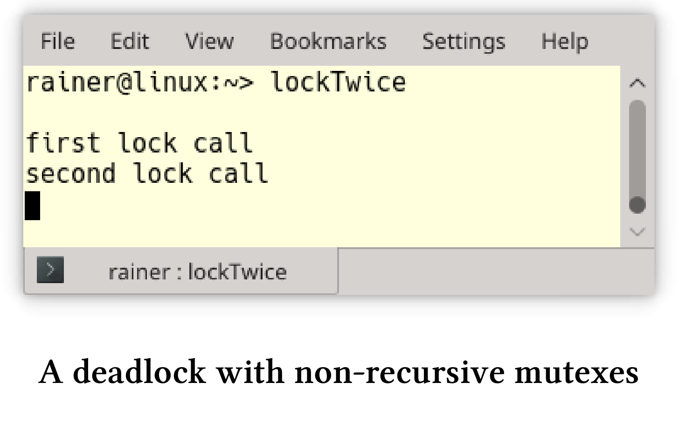
伪共享
当处理器从主存中读取一个变量(如int)时，从内存中读取的数据要大于int的大小。处理器会从缓存中读取整个高速缓存行(通常为64字节)。
如果两个线程，同时读取位于同一高速缓存行上的不同变量a和b，则会发生伪共享。虽然a和b在逻辑上是分开的，但在物理地址上是相连的。由于a和b共享同一条高速缓存线行，因此有必要在高速缓存行上进行硬件同步。得到了正确的结果，但是并发的性能下降了。正是这种现象发生在下面的程序中：
// falseSharing.cpp
#include <algorithm>
#include <chrono>
#include <iostream>
#include <random>
#include <thread>
#include <vector>
constexpr long long size{ 100'000'000 };
struct Sum {
long long a{ 0 };
long long b{ 0 };
};
int main() {
std::cout << std::endl;
Sum sum;
std::cout << &sum.a << std::endl;
std::cout << &sum.b << std::endl;
std::cout << std::endl;
std::vector<int> randValues, randValues2;
randValues.reserve(size);
randValues2.reserve(size);
std::mt19937 engine;
std::uniform_int_distribution<> uniformDist(1, 10);
int randValue;
for (long long i = 0; i < size; ++i) {
randValue = uniformDist(engine);
randValues.push_back(randValue);
randValues2.push_back(randValue);
}
auto sta = std::chrono::steady_clock::now();
std::thread t1([&sum, &randValues] {
for (auto val : randValues) sum.a += val;
});
std::thread t2([&sum, &randValues2] {
for (auto val : randValues2)sum.b += val;
});
t1.join(), t2.join();
std::chrono::duration<double> dur = std::chrono::steady_clock::now() - sta;
std::cout << "Time for addition " << dur.count()
<< " seconds" << std::endl;
std::cout << "sum.a: " << sum.a << std::endl;
std::cout << "sum.b: " << sum.b << std::endl;
std::cout << std::endl;
}
第13行和第14行中的变量a和b共享同个缓存行。线程t1(第44行)和线程t2同时使用两个变量，对向量randValues和randValues2中的元素进行求和。两个向量在1到10之间都有1亿个整数。程序的输出显示了一些有趣的事情，a和b在8字节边界上对齐，因为我的操作系统中的long long int是8字节对齐的。

如果将a和b的对齐方式改为64字节会发生什么?64字节是我系统上的高速缓存行的大小。我要对结构做点小改动，这次不用种子来生成随机数，所以每次都得到的随机数相同。
struct Sum{
alignas(64) long long a{0};
alignas(64) long long b{0};
};

现在，a和b在64字节边界处对齐，程序速度提高了6倍多。原因是a和b现在不在同一高速缓存行上。
用优化器检测伪共享
如果我用最大的优化选项编译的程序，优化器会检测到伪共享并消除它。这意味着，我得到了相同的性能数据与真共享，这也适用于Windows。以下是优化后的性能数字。
C++17中的
std:: hardware_destructive_interference_size和与std:: hardware_constructive_interference_size
std::hardware_destructive_interference_size和std::hardware_constructive_interference_size允许以一种可移植的方式处理高速缓存行的大小。std::hardware_destructive_interference_size返回两个对象之间的最小偏移量，以避免伪共享；std::hardware_constructive_interference_size返回相邻内存的最大大小，以满足真共享。在C++17中，Sum可以以一种平台无关的方式编写。
struct Sum{ alignas(std::hardware_destructive_interference_size) long long a{0}; alignas(std::hardware_destructive_interference_size) long long b{0}; };
变量的生命周期问题
写一个具有生命周期相关问题的C++示例非常容易。让创建的线程t在后台运行(也就是说，它通过调用t.detach()来分离)，并且让它只完成一半的工作。这里，创建者线程不会等待子线程完成。在这种情况下，必须非常小心，最好不要在子线程中使用属于创建线程的任何东西。
// lifetimeIssues.cpp
#include <iostream>
#include <string>
#include <thread>
int main() {
std::cout << "Begin: " << std::endl;
std::string mess{ "Child thread" };
std::thread t([&mess] {std::cout << mess << std::endl; });
t.detach();
std::cout << "End:" << std::endl;
}
这程序太简单了。线程t使用std::cout和变量mess，它们都属于主线程。结果是，在第二次运行时，我看不到子线程的输出。只有“Begin:”(第9行)和“End:”(第16行)打印了出来。

移动线程
移动线程会使线程的生命周期问题变得更加复杂。
线程支持移动语义，但不支持复制语义。原因是std::thread的复制构造函数被设置为delete：thread (const thread&) = delete;。试想，如果线程在持有锁的情况下能进行复制，会发生什么。
让我们移动一个线程。
错误地移动线程
// threadMoved.cpp
#include <iostream>
#include <thread>
#include <utility>
int main(){
std::thread t([]{std::cout << std::this_thread::get_id();});
std::thread t2([]{std::cout << std::this_thread::get_id();});
t = std::move(t2);
t.join();
t2.join();
}
线程t和t2应该完成它们的工作：打印它们的id。除此之外，线程t2的所有权移动到t(第12行)。最后，主线程处理它的子线程并汇入它们。等一下，结果与我的预期大不相同:

出了什么问题?这里有两个问题:
- 通过移动线程
t2,t获得一个新的可调用单元，并调用它的析构函数。结果，t的析构函数调用std::terminate，原始的t线程仍然是可汇入的。 - 线程
t2没有相关的可调用单元，在没有可调用单元的线程上调用join会导致异常std::system_error。
了解了这一点，修复工作就很简单了。
// threadMovedFixed.cpp
#include <iostream>
#include <thread>
#include <utility>
int main(){
std::thread t([]{std::cout << std::this_thread::get_id();});
std::thread t2([]{std::cout << std::this_thread::get_id();});
t.join();
t = std::move(t2);
t2.join();
std::cout << "\n";
std::cout << std::boolalpha << "t2.joinable(): " << t2.joinable() << std::endl;
}
结果是线程t2不可汇入。

竞态条件
竞态条件是一种情况，其中操作的结果取决于某些操作的交错。
竞态条件很难发现。由于其取决于线程是否交错出现，也就是内核的数量、系统的利用率或可执行文件的优化级别，都可能是导致出现竞态条件的原因。
竞态条件本身并没什么。但线程以不同的方式交织在一起后，常常会导致严重的问题。这种情况下，称其为恶性竞争条件。恶意竞争条件的典型症状表现：数据竞争、破坏程序不变量、阻塞线程，或变量有生存周期问题等。
时间库
如果不写一些关于时间库的内容，那么使用现代C++处理并发性的书就显得不那么完整。时间库由三个部分组成：时间点、时间段和时钟。
时间点、时间段和时钟
时间点：由它的起始点(所谓的纪元epoch)和从纪元起经过的时间(表示为时间段)来表示。
时间段：是两个时间点之间的差值，它用时间刻度的数量来衡量。
时钟：由一个起点和一个时间刻度组成，此信息可以计算当前时间。
可以比较时间点。将时间段添加到某个时间点时，可以得到一个新的时间点。时钟周期是测量时间时钟的准确性。耶稣的出生在我的文明中作为一个开始的时间点，一年是一个典型的时间周期。
Dennis Ritchie，C语言的创造者于2011年去世，我用他的一生来说明这三个概念。为了简单起见，这里只使用年份。
这是他的一生。

耶稣的诞生是我们时代的起点，也就是纪元元年。1941年和2011年的时间是由纪元源时间点和时间段来定义的。从2011年减去1941年，得到的是时间段。所以，Dennis Ritchie去世时，享年70岁。
我们继续研究时间库的组件。
时间点
时间点std::chrono::time_point由起始点(epoch)和附加的时间段定义。类模板由两个组件：时钟和时间段。默认情况下，时间段是从时钟类派生出来的。
std::chrono::time_point类模板
template<
class Clock,
class Duration= typename Clock::duration
>
class time_point;
对于时钟来说，有以下四个特殊的时间点:
- epoch: 时钟的起点。
- now: 当前时间。
- min: 时钟可以统计的最小时间点。
- max: 时钟可以拥有的最大时间点。
最小和最大时间点的准确性取决于使用的时钟：std::system::system_clock, std::chrono::steady_clock或std::chrono::high_resolution_clock。
C++不保证时钟的准确性、起始点，还有有效时间范围。std::chrono::system_clock的起始时间通常是1970年1月1日，也就是所谓的UNIX元年，而std::chrono::high_resolution_clock具有最高的统计精度。
从时间点到日历时间
通过std::chrono::system_clock::to_time_t可以将一个内部使用std::chrono::system_clock的时间点，转换成一个类型为std::time_t的对象。通过函数std::gmtime对std::time_t对象进行进一步转换，可以得到以世界统一时间(UTC)表示的日历时间。最后，可以使用这个日历时间作为函数std::asctime的输入，以获得日历时间的文本表示。
显示日历时间
// timepoint.cpp
#include <chrono>
#include <ctime>
#include <iostream>
#include <string>
int main() {
std::cout << std::endl;
std::chrono::time_point<std::chrono::system_clock> sysTimePoint;
std::time_t tp = std::chrono::system_clock::to_time_t(sysTimePoint);
std::string sTp = std::asctime(std::gmtime(&tp));
std::cout << "Epoch: " << sTp << std::endl;
tp = std::chrono::system_clock::to_time_t(sysTimePoint.min());
sTp = std::asctime(std::gmtime(&tp));
std::cout << "Time min: " << sTp << std::endl;
tp = std::chrono::system_clock::to_time_t(sysTimePoint.max());
sTp = std::asctime(std::gmtime(&tp));
std::cout << "Time max: " << sTp << std::endl;
sysTimePoint = std::chrono::system_clock::now();
tp = std::chrono::system_clock::to_time_t(sysTimePoint);
sTp = std::asctime(std::gmtime(&tp));
std::cout << "Time now: " << sTp << std::endl;
}
程序会显示std::chrono::system_clock的有效范围。我的Linux PC上，std::chrono::system_clock以UNIX元年作为起始点，时间点可以在1677年到2262年之间。

可以将时间段添加到时间点上，以获得新的时间点。在有效时间范围之外添加时间段，是未定义行为。
跨越有效的时间范围
下面的示例使用当前时间并加减1000年。为了简单起见，我忽略闰年，假设一年有365天。
// timepointAddition.cpp
#include <chrono>
#include <ctime>
#include <iostream>
#include <string>
using namespace std::chrono;
using namespace std;
string timePointAsString(const time_point<system_clock>& timePoint) {
time_t tp = system_clock::to_time_t(timePoint);
return asctime(gmtime(&tp));
}
int main() {
cout << endl;
time_point<system_clock> nowTimePoint = system_clock::now();
cout << "Now: " << timePointAsString(nowTimePoint) << endl;
const auto thousandYears = hours(24 * 365 * 1000);
time_point<system_clock> historyTimePoint = nowTimePoint - thousandYears;
cout << "Now - 1000 years: " << timePointAsString(historyTimePoint) << endl;
time_point<system_clock> futureTimePoint = nowTimePoint + thousandYears;
cout << "Now + 1000 years: " << timePointAsString(futureTimePoint) << endl;
}
程序的输出显示，第25行和第28行中时间点的溢出，将导致错误的结果。从现在的时间点减去1000年，获得了将来的时间点；在当前时间点上加上1000年，得到了过去的时间点。

两个时间点之间的差值是时间段。时间段支持基本的算法，可以在不同的时间刻度下进行显示。
时间段
std::chrono::duration是一个类模板， Rep类型的计次数和计次周期组成。
std::chrono::duration类模板
template<
class Rep,
class Period = std::ratio<1>
> class duration;
计次周期默认长度为std::ratio<1>。std::ratio<1>表示1秒，也可以写成std::ratio< 1,1 >，以此类推，std::ratio<60>是一分钟，std::ratio<1,1000> 是1毫秒。当Rep类型是浮点数时，可以使用它来保存时间刻度的分数形式。
C++11预定义了几个重要的时间单位:
typedef duration<signed int, nano> nanoseconds;
typedef duration<signed int, micro> microseconds;
typedef duration<signed int, milli> milliseconds;
typedef duration<signed int> seconds;
typedef duration<signed int, ratio< 60>> minutes;
typedef duration<signed int, ratio<3600>> hours;
从UNIX元年(1970年1月1日)到现在有多少时间了?通过不同时间的类型别名，我可以很容易地回答这个问题。下面的例子中，继续忽略闰年，假设一年有365天。
// timeSinceEpoch.cpp
#include <chrono>
#include <iostream>
using namespace std;
int main() {
cout << fixed << endl;
cout << "Time since 1.1.1970:\n" << endl;
const auto timeNow = chrono::system_clock::now();
const auto duration = timeNow.time_since_epoch();
cout << duration.count() << " nanoseconds " << endl;
typedef chrono::duration<long double, ratio<1, 1000000>> MyMicroSecondTick;
MyMicroSecondTick micro(duration);
cout << micro.count() << " microseconds" << endl;
typedef chrono::duration<long double, ratio<1, 1000>> MyMilliSecondTick;
MyMilliSecondTick milli(duration);
cout << milli.count() << " milliseconds" << endl;
typedef chrono::duration<long double> MySecondTick;
MySecondTick sec(duration);
cout << sec.count() << " seconds " << endl;
typedef chrono::duration<double, ratio<60>> MyMinuteTick;
MyMinuteTick myMinute(duration);
cout << myMinute.count() << " minutes" << endl;
typedef chrono::duration<double, ratio<60 * 60>> MyHourTick;
MyHourTick myHour(duration);
cout << myHour.count() << " hours" << endl;
typedef chrono::duration<double, ratio<60 * 60 * 24 * 365>> MyYearTick;
MyYearTick myYear(duration);
cout << myYear.count() << " years" << endl;
typedef chrono::duration<double, ratio<60 * 45>> MyLessonTick;
MyLessonTick myLesson(duration);
cout << myLesson.count() << " lessons" << endl;
cout << endl;
}
时间长度是微秒(第18行)、毫秒(第22行)、秒(第26行)、分钟(第30行)、小时(第34行)和年(第38行)。另外，我在第42行定义了德国学校单节课的时长(45分钟)。

计算时间
时间单位表示的时间支持基本的算术运算，可以用一个数字乘以或除以一个时间段。当然，也可以比较时间单位表示的时间，所有这些计算和比较都是基于时间单位的。
在C++14标准中，更加方便。C++14标准支持时间段的文字表示。
| 类型 | 后缀 | 示例 |
|---|---|---|
| std::chrono::hours | h | 5h |
| std::chrono::minutes | min | 5min |
| std::chrono::seconds | s | 5s |
| std::chrono::milliseconds | ms | 5min |
| std::chrono::microseconds | us | 5us |
| std::chrono::nanoseconds | ns | 5ns |
我17岁的儿子Marius，在学校的一天中要花多少时间?我在下面的示例中，回答了这个问题，并以不同的时间段格式显示结果。
// schoolDay.cpp
#include <iostream>
#include <chrono>
using namespace std::literals::chrono_literals;
using namespace std::chrono;
using namespace std;
int main() {
cout << endl;
constexpr auto schoolHour = 45min;
constexpr auto shortBreak = 300s;
constexpr auto longBreak = 0.25h;
constexpr auto schoolWay = 15min;
constexpr auto homework = 2h;
constexpr auto schoolDaySec = 2 * schoolWay + 6 * schoolHour + 4 * shortBreak +
longBreak + homework;
cout << "School day in seconds: " << schoolDaySec.count() << endl;
constexpr duration<double, ratio<3600>> schoolDayHour = schoolDaySec;
constexpr duration<double, ratio<60>> schoolDayMin = schoolDaySec;
constexpr duration<double, ratio<1, 1000>> schoolDayMilli = schoolDaySec;
cout << "School day in hours: " << schoolDayHour.count() << endl;
cout << "School day in minutes: " << schoolDayMin.count() << endl;
cout << "School day in milliseconds: " << schoolDayMilli.count() << endl;
cout << endl;
}
有一节德语课的时间(第14行)，一个短暂的休息(第16行)，一个长时间的休息(第17行)，Marius去学校的路(第19行)上花费的时间，以及做家庭作业(第20行)的时间。计算结果schoolDaysInSeconds(第22行)在编译时可用。
编译时的计算
时间常量(第14 - 20行)、第22行中的
schoolDaySec和各种时间段(第28 - 30行)都是常量表达式(constexpr)。因此，所有值都可在编译时获得，只有输出是在运行时执行。
报时的准确性取决于所用的时钟。C++中，有三种时钟std::chrono::system_clock, std::chrono::steady_clock和std::chrono::high_resolution_clock。
时钟
三种不同类型的时钟之间有什么区别?
std::chrono::sytem_clock: 是系统范围内的实时时钟(挂壁钟)。该时钟具有to_time_t和from_time_t的辅助功能，可以将时间点转换为日历时间。std::chrono::steady_clock: 是唯一提供保证的时钟，并且不能调整它。因此，std::chrono::steady_clock是测量时间间隔的首选时钟。std::chrono::high_resolution_clock：是精度最高的时钟，但它可以只是时钟std::chrono::system_clock或std::chrono::steady_clock的别名。
无保证的准确性、起始点和有效的时间范围
C++标准不保证时钟的精度、起始点和有效时间范围。通常，
std::chrono:system_clock的起始点是1970年1月1日，也就是所谓的UNIX元年，而std::chrono::steady_clock的起始点则是PC的启动时间。
准确性和稳定性
知道哪些时钟是稳定的，以及它们提供的精度是很有趣的事情。稳定意味着时钟不能调整，可以直接从时钟中得到答案。
三个时钟的准确性和稳定性
// clockProperties.cpp
#include <chrono>
#include <iomanip>
#include <iostream>
using namespace std::chrono;
using namespace std;
template < typename T>
void printRatio() {
cout << " precision: " << T::num << "/" << T::den << " second " << endl;
typedef typename ratio_multiply<T, kilo>::type MillSec;
typedef typename ratio_multiply<T, mega>::type MicroSec;
cout << fixed;
cout << " " << static_cast<double>(MillSec::num) / MillSec::den
<< " milliseconds " << endl;
cout << " " << static_cast<double>(MicroSec::num) / MicroSec::den
<< " microseconds " << endl;
}
int main() {
cout << boolalpha << endl;
cout << "std::chrono::system_clock: " << endl;
cout << " is steady: " << system_clock::is_steady << endl;
printRatio<chrono::system_clock::period>();
cout << endl;
cout << "std::chrono::steady_clock: " << endl;
cout << " is steady: " << chrono::steady_clock::is_steady << endl;
printRatio<chrono::steady_clock::period>();
cout << endl;
cout << "std::chrono::high_resolution_clock: " << endl;
cout << " is steady: " << chrono::high_resolution_clock::is_steady
<< endl;
printRatio<chrono::high_resolution_clock::period>();
cout << endl;
}
在第27行、第33行和第39行显示每个时钟是否稳定。函数printRatio(第10 -20行)比较难懂。首先，以秒为单位显示时钟的精度。此外，使用函数模板std::ratio_multiply，以及常量std::kilo和std::mega来将单位调整为以浮点数显示的毫秒和微秒。您可以通过cppreference.com获得计算时间在编译时的更多详细信息。
Linux上的输出与Windows上的不同。Linux上，std::chrono::system_clock要精确得多；Windows上，std::chrono::high_resultion_clock是稳定的。


虽然C++标准没有指定时钟的纪元，但是可以通过计算得到。
纪元元年
由于辅助函数time_since_epoch，每个时钟返回显示自元年以来已经过了很多时间。
计算每个时钟的元年
// now.cpp
#include <chrono>
#include <iomanip>
#include <iostream>
using namespace std::chrono;
template < typename T>
void durationSinceEpoch(const T dur) {
std::cout << " Counts since epoch: " << dur.count() << std::endl;
typedef duration<double, std::ratio<60>> MyMinuteTick;
const MyMinuteTick myMinute(dur);
std::cout << std::fixed;
std::cout << " Minutes since epoch: " << myMinute.count() << std::endl;
typedef duration<double, std::ratio<60 * 60 * 24 * 365>> MyYearTick;
const MyYearTick myYear(dur);
std::cout << " Years since epoch: " << myYear.count() << std::endl;
}
int main() {
std::cout << std::endl;
system_clock::time_point timeNowSysClock = system_clock::now();
system_clock::duration timeDurSysClock = timeNowSysClock.time_since_epoch();
std::cout << "system_clock: " << std::endl;
durationSinceEpoch(timeDurSysClock);
std::cout << std::endl;
const auto timeNowStClock = steady_clock::now();
const auto timeDurStClock = timeNowStClock.time_since_epoch();
std::cout << "steady_clock: " << std::endl;
durationSinceEpoch(timeDurStClock);
std::cout << std::endl;
const auto timeNowHiRes = high_resolution_clock::now();
const auto timeDurHiResClock = timeNowHiRes.time_since_epoch();
std::cout << "high_resolution_clock: " << std::endl;
durationSinceEpoch(timeDurHiResClock);
std::cout << std::endl;
}
变量timeDurSysClock(第26行)、timeDurStClock(第33行)和timeDurHiResClock(第40行)包含从对应时钟的起始点经过的时间。如果不使用auto自动类型推断，则写入时间点和时间段的确切类型将非常冗长。函数durationSinceEpoch(第9 - 19行)中，以不同的分辨率显示时间持续时间。首先，显示时间刻度的数量(第11行)，然后显示分钟的数量(第15行)，最后显示自epoch以来的年份(第18行)。所有值都依赖于所使用的时钟。为了简单起见，忽略闰年，假设一年有365天。
同样，Linux和Windows上的结果也是不同的。


为了得出正确的结论，我得提一下，Linux PC已经运行了大约5小时(305分钟)，而Windows PC已经运行了超过6小时(391分钟)。
我的Linux PC上，std::chrono::system_clock和std::chrono::high_resolution_clock以UNIX元年作为起始点。std::chrono::steady_clock的起始点是我电脑的启动时间。虽然std::high_resolution_clock是Linux上的std::system_clock的别名，但std::high_resolution_clock似乎是Windows上的std::steady_clock的别名，这一结论与前一小节的精度和稳定性结果相一致。
有了时间库，可以限制让线程进入睡眠状态的时限。休眠和等待函数的参数，可以是时间点或是时间段。
休眠和等待
时间概念是多线程组件(如线程、锁、条件变量和future)的一个重要特性。
惯例
多线程中处理时间的方法遵循一个简单的惯例。以_for结尾的方法必须按时间长度进行参数化；以_until结尾的方法，指定一个时间点。下面简要概述了处理睡眠、阻塞和等待的方法。
| 多线程组件 | _until | _for |
|---|---|---|
| std::thread th | th.sleep_until(in2min) | th.sleep_for(2s) |
| std::unique_lock lk | lk.try_lock_until(in2min) | lk.try_lock(2s) |
| std::condition_variable cv | cv.wait_until(in2min) | cv.wait_for(2s) |
| std::future fu | fu.wait_until(in2min) | fu.wait_for(2s) |
| std::shared_future shFu | shFu.wait(in2min) | shFu.wait_for(2s) |
in2min表示未来2分钟的时间，2s是时间段2秒。虽然使用自动初始化的时间点 in2min，以下的表达式仍然冗长:
定义一个时间点
auto in2min= std::chrono::steady_clock::now() + std::chrono::minutes(2);
当使用时间单位时，C++14的时间文字可以帮助我们：2s就代表2秒。
接下来，让我们看看不同的等待策略。
各种等待策略
以下程序的主要思想是，promise提供四种共享future的结果。因为多个shared_future可以等待相同的promise通知，所以没问题。每个future都有不同的等待策略，并且promise和future在不同的线程中执行。为了简单起见，本小节中只讨论一个正在等待的线程。
下面是四个等待线程的策略:
- consumeThread1: 为promise的结果等待4秒。
- consumeThread2: 为promise的结果等待20秒。
- consumeThread3: 查询promise的结果，并返回休眠700毫秒。
- consumeThread4: 向对方询问结果，然后继续休眠。它的休眠时间从1毫秒开始，每次翻倍。
程序如下。
各种等待策略
// sleepAndWait.cpp
#include <utility>
#include <iostream>
#include <future>
#include <thread>
#include <utility>
using namespace std;
using namespace std::chrono;
mutex coutMutex;
long double getDifference(const steady_clock::time_point& tp1,
const steady_clock::time_point& tp2) {
const auto diff = tp2 - tp1;
const auto res = duration <long double, milli>(diff).count();
return res;
}
void producer(promise<int>&& prom) {
cout << "PRODUCING THE VALUE 2011\n\n";
this_thread::sleep_for(seconds(5));
prom.set_value(2011);
}
void consumer(shared_future<int> fut,
steady_clock::duration dur) {
const auto start = steady_clock::now();
future_status status = fut.wait_until(steady_clock::now() + dur);
if (status == future_status::ready) {
lock_guard<mutex> lockCout(coutMutex);
cout << this_thread::get_id() << " ready => Result: " << fut.get()
<< endl;
}
else {
lock_guard<mutex> lockCout(coutMutex);
cout << this_thread::get_id() << " stopped waiting." << endl;
}
const auto end = steady_clock::now();
lock_guard<mutex> lockCout(coutMutex);
cout << this_thread::get_id() << " waiting time: "
<< getDifference(start, end) << " ms" << endl;
}
void consumePeriodically(shared_future<int> fut) {
const auto start = steady_clock::now();
future_status status;
do {
this_thread::sleep_for(milliseconds(700));
status = fut.wait_for(seconds(0));
if (status == future_status::timeout) {
lock_guard<mutex> lockCout(coutMutex);
cout << " " << this_thread::get_id()
<< " still waiting." << endl;
}
if (status == future_status::ready) {
lock_guard<mutex> lockCout(coutMutex);
cout << " " << this_thread::get_id()
<< " waiting done => Result: " << fut.get() << endl;
}
} while (status != future_status::ready);
const auto end = steady_clock::now();
lock_guard<mutex> lockCout(coutMutex);
cout << " " << this_thread::get_id() << " waiting time: "
<< getDifference(start, end) << " ms" << endl;
}
void consumeWithBackoff(shared_future<int> fut) {
const auto start = steady_clock::now();
future_status status;
auto dur = milliseconds(1);
do {
this_thread::sleep_for(dur);
status = fut.wait_for(seconds(0));
dur *= 2;
if (status == future_status::timeout) {
lock_guard<mutex> lockCout(coutMutex);
cout << " " << this_thread::get_id()
<< " still waiting." << endl;
}
if (status == future_status::ready) {
lock_guard<mutex> lockCout(coutMutex);
cout << " " << this_thread::get_id()
<< " waiting done => Result: " << fut.get() << endl;
}
} while (status != future_status::ready);
const auto end = steady_clock::now();
lock_guard<mutex> lockCout(coutMutex);
cout << " " << this_thread::get_id()
<< " waiting time: " << getDifference(start, end) << " ms" << endl;
}
int main() {
cout << endl;
promise<int> prom;
shared_future<int> future = prom.get_future();
thread producerThread(producer, move(prom));
thread consumerThread1(consumer, future, seconds(4));
thread consumerThread2(consumer, future, seconds(20));
thread consumerThread3(consumePeriodically, future);
thread consumerThread4(consumeWithBackoff, future);
consumerThread1.join();
consumerThread2.join();
consumerThread3.join();
consumerThread4.join();
producerThread.join();
cout << endl;
}
我在主函数中创建promise(第98行)，使用promise创建关联的future(第99行)，并将promise移动到一个单独的线程(第100行)。因为promise不支持复制语义，必须将其移动到线程中。这对于共享future来说是不必要的(第102 - 105行)，它们支持复制语义，因此可以复制。
讨论线程的工作包之前，简单介绍一下辅助函数getDifference(第14 - 19行)。该函数接受两个时间点，并以毫秒为单位返回这两个时间点之间的时间段。
那创建的五个线程呢?
- producerThread: 执行函数生成器(第21 - 25行)，并在5秒休眠后发布其结果2011。这是future正在等待的结果。
- consumerThread1: 执行函数
consumer函数(第27 - 44行)。线程最多等待4秒(第30行)才继续工作。这段等待的时间不够长，无法从promise中得到结果。 - consumerThread2: 执行
consumer函数(第27 - 44行)。线程在继续工作之前最多等待20秒。 - consumerThread3: 定期执行
consume函数(第46 - 67行)。休眠700毫秒(第50行)，并请求promise的结果(第60行)。因为第51行std::chrono::seconds(0)，所以不需要等待。如果计算结果可用，将第60行在显示。 - consumerThread4: 执行
consumeWithBackoff函数(第69 - 92行)。在第一个迭代1秒内休眠，并在每个迭代中将休眠时间加倍。否则，它的策略就与consumerThread3的策略差不多了。
现在来同步程序。确定当前时间的时钟和std::cout都是共享变量，但不需要同步。首先，调用std::chrono::steady_clock::now()是线程安全的(第30行和第40行)；其次，C++运行时保证这些字符被写入std::cout是线程安全的。这里，只使用了std::lock_guard来保护std::cout(在第32、37和41行)。
尽管线程逐个地向std::cout写入数据，但是输出并不容易理解。

第一个输出来自于promise。左边的输出来自future。首先，consumerThread4询问结果，8个字符缩进输出，consumerThread4也显示它的id，consumerThread3紧跟其后，4个字符缩进它的输出，consumerThread1和consumerThread2的输出没有缩进。
- consumeThread1: 等待4000.18ms，但是没有得到结果。
- consumeThread2: 在等待5000.3ms后获取结果，但其等待时间最长可达20秒。
- consumeThread3: 在等待5601.76ms后获取结果。也就是5600ms= 8 * 700ms。
- consumeThread4: 在等待8193.81ms后的获取结果。换句话说，它等待的时间达到了3s之久。
CppMem-概述
CppMem是一个交互式工具，用于对C++小代码段的内存模型行为进行研究。它应该是每个认真处理内存模型程序员的必备工具。
CppMem的网上版本(也可以把它安装在你的个人电脑上)以两种方式提供服务:
- CppMem验证小代码段的行为，基于选择的C++内存模型，该工具考虑所有可能的线程交错，将每个线程可视化到一个图中，并用附加的细节对这些图进行注释。
- CppMem的精确分析，可以更加深入了解C++内存模型。简言之，CppMem是一个帮助理解内存模型的工具。
当然，必须跨过一些门槛，这通常是强大工具的共性。CppMem的本质是提供与这个极具挑战性的主题相关的非常详细的分析，并且是高度可配置的。因此，我才打算介绍该工具的各种组件。
简单概述
我对CppMem的简单概述是基于默认配置的。这篇概述只是提供了进一步的实验基础，应该有助于理解我正在进行的优化过程。
简单起见，我引用了屏幕截图中的红色数字。
1. Model模型
- 指定C++内存模型。首选是C++11内存模型的一个(简化)等价的变体。
2. Program 程序
- 包含可执行程序，其语法类似于简化的C++11。确切地说，不能直接将C或C++代码程序复制到CppMem中。
- 可以在许多典型多线程场景之间进行切换。要获得这些程序的详细信息，请阅读这篇写得非常好的文章，该文章将C++并发性数学化。当然，也可以运行自己的代码。
- CppMem是关于多线程的，所以可以使用多线程的快捷方式。
- 可以使用表达式
{ { {…|||…} } }。三个点(…)表示每个线程的工作包。 - 如果使用表达式
x.readvalue(1)，则CppMem会计算线程交错的情况，其中线程会为x赋值1。
- 可以使用表达式
3. Display Relations 关系显示
- 描述原子操作、栅栏和锁上的读、写和读写改之间的关系。
- 可以使用复选框显式地启用带注释的图中的关系。
- 有三种关系，最有趣的是原始关系和派生关系之间的粗略区别。这里使用的是默认值。
- 渊源关系:
- sb: sequenced-before 序前
- rf: read from 读取
- mo: modification order 修改顺序
- sc: sequentially consistent 按顺序一致
- lo: lock order 锁定顺序
- 派生关系:
- sw: synchronises-with 与...同步
- dob: dependency-ordered-before 序前依赖
- unsequenced_races: 单线程中的竞争
- data_races: 线程内的数据竞争
- 渊源关系:
4. Display Layout 布局显示
- 可以选择使用哪个Doxygraph图形。
5. Model Predicates 模型谓词
- 使用此按钮，可以为所选模型设置谓词，这会导致不一致(非无数据争用)的执行，所以当执行不一致，就会看到不一致执行的原因。我在这本书里不使用这个按钮。
有关更多细节，请参阅文档。
作为对CppMem的入门，这就足够了。现在，是时候尝试一下CppMem了。
CppMem提供了许多示例。
示例
这些示例展示了使用并发代码，特别是使用无锁代码时的典型用例。可以将这些例子，分成几类。
论文
示例/论文类别为您提供了一些示例，这些示例在本文中对C++并发性的数学化进行了深入的讨论。
- data_race.c : x上的数据竞争
- partial_sb.c : 单线程中计算的序前
- unsequenced_race.c : 根据评价顺序，对x上未排序的竞争进行评价
- sc_atomics.c : 正确的使用原子变量
- thread_create_and_asw.c : 额外的同步——与适当的线程创建同步
让我们从第一个示例开始。
测试运行
从CppMem样本中选择data_race.c程序。run之后，立即显示有一个数据竞争。

简单起见，只解释示例中的红色数字。
- 很容易观察到的数据竞争。一个线程写
x (x==3)，另一个线程不同步读x (x==3)。 - 由于C++内存模型，两个线程可能交织在一起运行，其中只有一个与所选模型一致。如果在表达式
x==3中的x，在主函数中进行赋值int x= 2，则会出现这种情况。图中在用rf和sw标注的边缘显示了这种关系。 - 不同的线程交错之间切换显得非常有趣。
- 该图显示关系中启用的所有关系。
a:Wna x=2在图表中是第a中表述，它是非原子性的。Wna表示“非原子写入”。- 图中的关键是
x (b:Wna)的写和x (C:Rna)的读之间的连线。这也就是x上的数据竞争。
进一步分类
进一步的分类会关注于无锁编程的方面。每个类别的示例都有不同的形式，每个表单使用不同的内存顺序。有关类别的更多讨论，请阅读前面提到的将C++并发性数学化的文章。如果可能的话，我会用顺序一致性来表示程序。
存储缓冲(示例/SB_store_buffering)
两个线程分别写入不同的位置，然后从另一个位置读取。
SB+sc_sc+sc_sc+sc.c
// SB+sc_sc+sc_sc
// Store Buffering (or Dekker's), with all four accesses SC atomics
// Question: can the two reads both see 0 in the same execution?
int main() {
atomic_int x=0; atomic_int y=0;
{{{ { y.store(1,memory_order_seq_cst);
r1=x.load(memory_order_seq_cst); }
||| { x.store(1,memory_order_seq_cst);
r2=y.load(memory_order_seq_cst); } }}}
return 0;
}
消息传递(示例/MP_message_passing)
一个线程写入数据(非原子变量)并设置一个原子标志，而另一个线程等待读取数据标志(非原子变量)。
MP+na_sc+sc_na.c
// MP+na_sc+sc_na
// Message Passing, of data held in non-atomic x,
// with sc atomic stores and loads on y giving release/acquire synchronisation
// Question: is the read of x required to see the new data value 1
// rather than the initial state value 0?
int main() {
int x=0; atomic_int y=0;
{{{ { x=1;
y.store(1,memory_order_seq_cst); }
||| { r1=y.load(memory_order_seq_cst).readsvalue(1);
r2=x; } }}}
return 0;
}
读取缓冲(例子/LB_load_buffering)
两个读操作可以看到之后的其他线程的写操作吗?
Lb+sc_sc+sc_sc.c
// LB+sc_sc+sc_sc
// Load Buffering, with all four accesses sequentially consistent atomics
// Question: can the two reads both see 1 in the same execution?
int main() {
atomic_int x=0; atomic_int y=0;
{{{ { r1=x.load(memory_order_seq_cst);
y.store(1,memory_order_seq_cst); }
||| { r2=y.load(memory_order_seq_cst);
x.store(1,memory_order_seq_cst); } }}}
return 0;
}
从写到读的因果关系(例子/WRC)
第三个线程是否看到第一个线程的写操作?
- 第一个线程写x。
- 第二个线程从中读取数据并写入到y。
- 第三个线程读取x。
WRC+rel+acq_rel+acq_rlx.c
// WRC
// the question is whether the final read is required to see 1
// With two release/acquire pairs, it is
int main() {
atomic_int x = 0;
atomic_int y = 0;
{{{ x.store(1,mo_release);
||| { r1=x.load(mo_acquire).readsvalue(1);
y.store(1,mo_release); }
||| { r2=y.load(mo_acquire).readsvalue(1);
r3=x.load(mo_relaxed); }
}}}
return 0;
}
独立读-独立写(示例\IRIW)
两个线程写入不同的位置，第二个线程能以不同的顺序看到写操作吗?
IRIW+rel+rel+acq_acq+acq_acq.c
// IRIW with release/acquire
// the question is whether the reading threads have
// to see the writes to x and y in the same order.
// With release/acquire, they do not.
int main() {
atomic_int x = 0; atomic_int y = 0;
{{{ x.store(1, memory_order_release);
||| y.store(1, memory_order_release);
||| { r1=x.load(memory_order_acquire).readsvalue(1);
r2=y.load(memory_order_acquire).readsvalue(0); }
||| { r3=y.load(memory_order_acquire).readsvalue(1);
r4=x.load(memory_order_acquire).readsvalue(0); }
}}};
return 0;
}
术语表
本术语表只为基本术语提供参考。
ACID
事务具有原子性、一致性、隔离性和持久性(ACID)属性的操作。在C++中，除了持久性之外，事务性内存的所有属性都保持不变。
- 原子性：执行或不执行块的所有语句。
- 一致性：系统始终处于一致的状态，所有事务构建顺序一致。
- 独立性：每个事务在完全隔离的情况下运行。
- 会对事务的持久性进行记录。
CAS
CAS表示compare-and-swap，是一个原子操作。它将内存位置与给定值进行比较，如果内存位置与给定值相同，则修改内存位置的值。在C++中，CAS操作有std::compare_exchange_strong和std::compare_exchange_weak。
可调用单元
可调用单元的行为类似于函数。不仅是函数，还有函数对象和Lambda函数。如果一个可调用单元接受一个参数，它就被称为一元可调用单元；如果有两个参数，就是二元可调用单元。
谓词是返回布尔值的特殊可调用项。
并发性
并发性意味着多个任务的重叠执行。而且，并发是并行的超集。
临界区
临界区是一段代码，最多只有一个线程可以访问。
立即求值
如果立即求值，则立即求出表达式的值，则该策略与延迟求值正交。立即求值通常也称为贪婪求值。
Executor
执行者是与特定执行上下文相关联的对象。它提供一个或多个执行函数，用于为可调用的函数对象创建执行代理。
函数对象
首先，不要叫它们函子。这是一个明确的数学术语，叫做范畴理论。
函数对象是行为类似于函数，通过实现函数调用操作符来实现这一点。由于函数对象是对象，因此可以有属性和状态。
struct Square{
void operator()(int& i){i= i*i;}
};
std::vector<int> myVec{1, 2, 3, 4, 5, 6, 7, 8, 9, 10};
std::for_each(myVec.begin(), myVec.end(), Square());
for (auto v: myVec) std::cout << v << " "; // 1 4 9 16 25 36 49 64 81 100
实例化函数对象
常见的错误是在算法中使用函数对象(
Square)的名称，而不是函数对象(Square())本身的实例，比如：std::for_each(myVec.begin()， myVec.end()， Square)，应该使用：std::for_each(myVec.begin()， myVec.end()， Square())。
Lambda函数
Lambda函数可以就地提供需要的功能，编译器当场就能得到相应的信息，因此具有极佳的优化潜力。Lambda函数可以通过值或引用来接收它们的参数，还可以通过值或引用捕获已定义的变量。
std::vector<int> myVec{1, 2, 3, 4, 5, 6, 7, 8, 9, 10};
std::for_each(myVec.begin(), myVec.end(), [](int& i){ i= i*i; });
// 1 4 9 16 25 36 49 64 81 100
应该首选Lambda函数
如果可调用的功能是简短和可以自解释的，使用Lambda函数最好不过。Lambda函数通常比函数或函数对象更快，而且更容易理解。
延迟求值
延迟求值的情况下，仅在需要时才对表达式求值。该策略与立即求值策略正交。延迟求值通常称为按需调用。
无锁
如果保证了系统范围内的进程无影响，那么非阻塞算法就是无锁的。
##未唤醒
未唤醒是指，线程由于竞争条件而丢失唤醒通知的情况。
如果使用没有使用谓词，可能会发生这种情况。
数学规律
某个集合X上的一个二进制操作(*)：
- 结合律，满足x, y, z中的所有x, y, z的结合律：(x * y) * z = x * (y * z)
- 交换律，满足所有x和y的交换律x * y = y * x
内存位置
内存位置的详解可以参考cppreference.com
- 标量类型的对象(算术类型、指针类型、枚举类型或
std::nullptr_t。 - 非零长度的最大连续序列。
内存模型
内存模型定义了对象和内存位置之间的关系，特别是处理了以下问题：如果两个线程访问相同的内存位置，会发生什么情况。
##修改顺序
对特定原子对象M的所有修改，都以特定的顺序进行，这个顺序称为M的修改顺序。因此，线程读取原子对象时，不会看到比线程已经观察到的值更“旧”的值。
Monad(单子)
Haskell作为一种纯函数语言，只有纯函数。这些纯函数的一个关键特性，当给定相同的参数时，总是返回相同的结果。有了这个透明参照的属性，Haskell函数才不会有副作用。因此，Haskell有一个概念上的问题。到处都是有副作用的计算，这些计算可能会失败，可能返回未知数量的结果，或者依赖于环境。为了解决这个概念上的问题，Haskell使用单子并将它们嵌入到纯函数语言中。
经典的单子封装：
- I/O单子：计算输入和输出的结果。
- 可能性单子：可能会返回计算结果的单子。
- 错误单子：计算可能失败。
- 列表单子：计算可以有任意数量的结果。
- 状态单子：基于状态的计算。
- 读者单子：基于环境的计算。
单子的概念来自数学中的范畴理论，其处理对象之间的映射。单子是抽象的数据类型，将简单的类型转换为丰富的类型。这些丰富类型的值称为一元值。当进入单子，一个值只能由一个函数组合转换成另一个一元值。
这种组合尊重了单子的独特结构。因此，当发生错误，错误单子中断它的计算，或重新构建状态单子的状态。
一个单子包括三个部分:
- 类型构造函数：定义简单数据类型，如何成为一元数据类型。
- 函数:
- 恒等函数：在单子中引入一个简单的值。
- 绑定操作符：定义如何将函数应用于一元值，以获得新的一元值。
- 功能规则:
- 恒等函数的左右必须是恒等元素。
- 函数的复合必须遵循结合律。
要使错误单子成为类型类单子的实例，错误单子必须支持恒等函数和绑定操作符，这两个函数定义了错误单子应该如何处理计算中的错误。如果使用错误单子，错误处理会在后台完成。
单子由两个控制流组成：用于计算结果的显式控制和用于处理特定副作用的隐式控制流。
当然，也可以用更少的词来定义单子：“单子只是内函子类中的一个独异点(monoid)。”
单子在C++中变得越来越重要。在C++ 17中，添加了std::optional ，这是一种可能性单子。在C++20/23中，可能会从Eric Niebler那里得到扩展future和范围库，二者也都是单子。
无阻塞
如果任何线程的失败或挂起，不会导致另一个线程的失败或挂起，则称为非阻塞。这个定义来自于《Java并发实践》。
并行性
并行性意味着同时执行多个任务。并行性是并发性的一个子集。
谓词
谓词是返回布尔值的可调用单元。如果一个谓词有一个参数，它就称为一元谓词。如果一个谓词有两个参数，就称为二元谓词。
模式
“每个模式规则都是一个由三部分组成，表明了特定上下文、问题和解决方案之间的关系。“ —— Christopher Alexander
RAII
资源获取是初始化(RAII)，代表C++中的一种流行技术，在这种技术中，资源的获取和释放与对象的生命周期绑定在一起。这意味着对于锁，互斥锁将被锁定在构造函数中，并在析构函数中解锁。这种RAII实现，也称为范围锁定。
C++中的典型用例有：管理互斥锁生命周期的锁、管理资源(内存)生命周期的智能指针，或者管理元素生命周期的标准模板库容器。
释放序列
原子对象M的释放序列，以释放操作A为首，是M修改顺序中最大的连续子序列，其中第一个操作为A，每个后续操作为:
- 由执行A操作的线程进行的操作
- 原子的读-改-写操作。
顺序一致的存储模型
顺序一致有两个基本特征:
- 程序的指令是按源代码顺序执行的。
- 所有线程上的所有操作都遵循全局顺序。
序列点
序列点定义了程序执行过程中的任何一个结点。在这个点上，可以保证先前评估的所有执行效果，而不影响后续评估的 执行效果。
伪唤醒
伪唤醒是一种条件变量的现象。可能发生的情况是，条件变量的等待组件错误地获取了一个通知。
线程
计算机科学中，执行线程是可由调度器独立管理的最小程序指令序列，调度器通常是操作系统的一部分。线程和进程的实现在不同的操作系统之间是不同的，但是在大多数情况下，线程是进程的一个组件。多个线程可以存放在于一个进程中，并发执行并共享内存等资源，而不同的进程不共享这些资源。特别是，进程中的线程在任何给定时间，共享其可执行代码和变量。想要了解更多信息，可以阅读维基百科关于线程的文章。
全序关系
总序是一个二元关系(<=)在某个集合X上表现，其有反对称性、传递性，完全性。
- 反对称性：如果a <= b并且b <= a，则a == b
- 传递性：如果a <= b, b <= c，则a <= c
- 完全性：a <= b或b <= a
volatile
volatile通常用于表示可以独立于常规程序流进行更改的对象。例如，这些对象在嵌入式编程中表示一个外部设备(内存映射I/O)。由于这些对象可以独立于常规程序流进行更改，并且其值可以直接写入主内存，因此不会在缓存中进行优化存储。
无等待
当有每个线程都有进程保证不会互相影响时，那么一个非阻塞算法是无等待的。